Monotone is a distributed version control tool. It can help automate many tedious and error-prone tasks in group software development.
Please be aware that monotone is a slightly unorthodox version control tool, and many of its concepts are similar — but subtly or significantly different — from concepts with similar names in other version control tools.
Complete table of contents
This chapter should familiarize you with the concepts, terminology, and behavior described in the remainder of the user manual. Please take a moment to read it, as later sections will assume familiarity with these terms.
Suppose you wish to modify a file file.txt on your computer. You begin with one version of the file, load it into an editor, make some changes, and save the file again. Doing so produces a new version of the file. We will say that the older version of the file was a parent, and the new version is a child, and that you have performed an edit between the parent and the child. We may draw the relationship between parent and child using a graph, where the arrow in the graph indicates the direction of the edit, from parent to child.
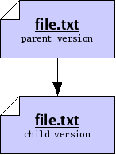
We may want to identify the parent and the child precisely, for sake of reference. To do so, we will compute a cryptographic hash function, called SHA1, of each version. The details of this function are beyond the scope of this document; in summary, the SHA1 function takes a version of a file and produces a short string of 20 bytes, which we will use to uniquely identify the version1. Now our graph does not refer to some “abstract” parent and child, but rather to the exact edit we performed between a specific parent and a specific child.

When dealing with versions of files, we will dispense with writing out “file names”, and identify versions purely by their SHA1 value, which we will also refer to as their file ID. Using IDs alone will often help us accommodate the fact that people often wish to call files by different names. So now our graph of parent and child is just a relationship between two versions, only identified by ID.

Version control systems, such as monotone, are principally concerned
with the storage and management of multiple versions of some files.
One way to store multiple versions of a file is, literally, to save a
separate complete copy of the file, every time you make a
change. When necessary, monotone will save complete copies of your
files, compressed with the zlib compression format.

Often we find that successive versions of a file are very similar to one another, so storing multiple complete copies is a waste of space. In these cases, rather than store complete copies of each version of a file, we store a compact description of only the changes which are made between versions. Such a description of changes is called a delta.
Storing deltas between files is, practically speaking, as good as
storing complete versions of files. It lets you undo changes from a
new version, by applying the delta backwards, and lets your friends
change their old version of the file into the new version, by applying
the delta forwards. Deltas are usually smaller than full files, so
when possible monotone stores deltas, using a modified xdelta
format. The details of this format are beyond the scope of this
document.
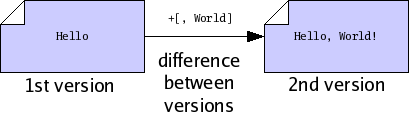
After you have made many different files, you may wish to capture a “snapshot” of the versions of all the files in a particular collection. Since files are typically collected into trees in a file system, we say that you want to capture a version of your tree. Doing so will permit you to undo changes to multiple files at once, or send your friend a set of changes to many files at once.
To make a snapshot of a tree, we begin by writing a special file called a manifest. In fact, monotone will write this file for us, but we could write it ourselves too. It is just a plain text file, in a structured but human-readable format used by several parts of monotone. Each file entry of a manifest binds a specific name, as a full path from the root of the workspace, to a specific file ID, as the hash of its content. In this way, the manifest collects together the snapshot of the file names and contents you have at this point in time; other snapshots with other manifests can use different names for the same file, or different contents for the same name.
Other entries in the manifest format name directories or store file attributes, which we will cover later.
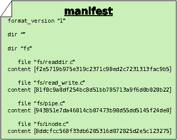
Now we note that a manifest is itself a file. Therefore a manifest can serve as input to the SHA1 function, and thus every manifest has an ID of its own. By calculating the SHA1 value of a manifest, we capture the state of our tree in a single manifest ID. In other words, the ID of the manifest essentially captures all the IDs and file names of every file in our tree, combined. So we may treat manifests and their IDs as snapshots of a tree of files, though lacking the actual contents of the files themselves.
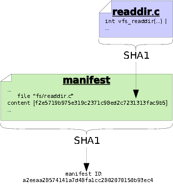
As with versions of files, we may decide to store manifests in their entirety, or else we may store only a compact description of changes which occur between different versions of manifests. As with files, when possible monotone stores compact descriptions of changes between manifests; when necessary it stores complete versions of manifests.
Suppose you sit down to edit some files. Before you start working, you may record a manifest of the files, for reference sake. When you finish working, you may record another manifest. These “before and after” snapshots of the tree of files you worked on can serve as historical records of the set of changes, or changeset, that you made. In order to capture a “complete” view of history – both the changes made and the state of your file tree on either side of those changes – monotone builds a special composite file called a revision each time you make changes. Like manifests, revisions are ordinary text files which can be passed through the SHA1 function and thus assigned a revision ID.
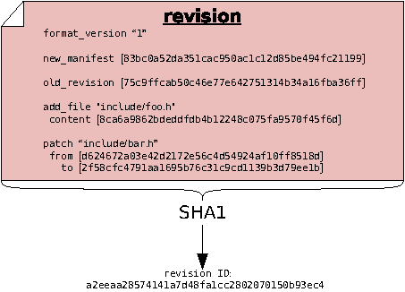
The content of a revision includes one or more changesets. These changesets make reference to file IDs, to describe how the tree changed. The revision also contains manifest IDs, as another way of describing the tree “before and after” the changeset — storing this information in two forms allows monotone to detect any bugs or corrupted data before they can enter your history. Finally and crucially, revisions also make reference to other revision IDs. This fact – that revisions include the IDs of other revisions – causes the set of revisions to join together into a historical chain of events, somewhat like a “linked list”. Each revision in the chain has a unique ID, which includes by reference all the revisions preceding it. Even if you undo a changeset, and return to a previously-visited manifest ID during the course of your edits, each revision will incorporate the ID of its predecessor, thus forming a new unique ID for each point in history.
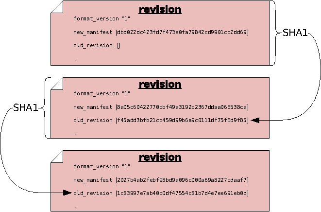
Often, you will wish to make a statement about a revision, such as stating the reason that you made some changes, or stating the time at which you made the changes, or stating that the revision passes a test suite. Statements such as these can be thought of, generally, as a bundle of information with three parts:
For example, if you want to say that a particular revision was composed on April 4, 2003, you might make a statement like this:
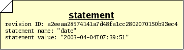
In an ideal world, these are all the parts of a statement we would need in order to go about our work. In the real world, however, there are sometimes malicious people who would make false or misleading statements; so we need a way to verify that a particular person made a particular statement about a revision. We therefore will add two more pieces of information to our bundle:
When these 2 items accompany a statement, we call the total bundle of 5 items a certificate, or cert. A cert makes a statement in a secure fashion. The security of the signature in a cert is derived from the RSA cryptography system, the details of which are beyond the scope of this document.
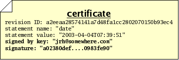
Monotone uses certs extensively. Any “extra” information which needs to be stored, transmitted or retrieved — above and beyond files, manifests, and revisions — is kept in the form of certs. This includes change logs, time and date records, branch membership, authorship, test results, and more. When monotone makes a decision about storing, transmitting, or extracting files, manifests, or revisions, the decision is often based on certs it has seen, and the trustworthiness you assign to those certs.
The RSA cryptography system — and therefore monotone itself — requires that you exchange special “public” numbers with your friends, before they will trust certificates signed by you. These numbers are called public keys. Giving someone your public key does not give them the power to impersonate you, only to verify signatures made by you. Exchanging public keys should be done over a trusted medium, in person, or via a trusted third party. Advanced secure key exchange techniques are beyond the scope of this document.
Monotone moves information in and out of four different types of storage:
The keystore is a directory .monotone/keys in your home directory which contains copies of all your private keys. Each key is stored in a file whose name is the key identifier with some characters converted to underscores. When you use a key to sign a cert, the public half of that key is copied into your local database along with the cert.
All information passes through your local database, en route to some other destination. For example, when changes are made in a workspace, you may save those changes to your database, and later you may synchronize your database with someone else’s. Monotone will not move information directly between a workspace and a remote database, or between workspaces. Your local database is always the “switching point” for communication.
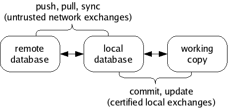
A workspace is a tree of files in your file system, arranged according to the list of file paths and IDs in a particular manifest. A special directory called _MTN exists in the root of any workspace. Monotone keeps some special files in the _MTN directory, in order to track changes you make to your workspace. If you ever want to know if a directory is a monotone workspace, just look for this _MTN directory.
Aside from the special _MTN directory, a workspace is just a normal tree of files. You can directly edit the files in a workspace using a plain text editor or other program; monotone will automatically notice when you make this kind of change, and include them in the next commit.
If you add files, remove files, or move files within your workspace, you must tell monotone explicitly what you are doing, as these actions cannot be deduced. Monotone stores these changes in _MTN/revision; they will be part of the next commit.
If you do not yet have a workspace, you can check out a workspace from a database, or construct one from scratch and add it into a database. As you work, you will occasionally commit changes you have made in a workspace to a database, and update a workspace to receive changes that have arrived in a database. Committing and updating take place purely between a database and a workspace; the network is not involved.
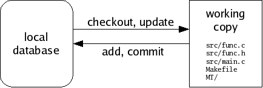
A database is a single, regular file. You can copy or back it up using standard methods. Typically you keep a database in your home directory. Databases are portable between different machine types. You can have multiple databases and divide your work between them, or keep everything in a single database if you prefer. You can dump portions of your database out as text, and read them back into other databases, or send them to your friends. Underneath, databases are accessed using a standard, robust data manager, which makes using even very large databases efficient. In dire emergencies, you can directly examine and manipulate a database using a simple SQL interface.
A database contains many files, manifests, revisions, and certificates, some of which are not immediately of interest, some of which may be unwanted or even false. It is a collection of information received from network servers, workspaces, and other databases. You can inspect and modify your databases without affecting your workspaces, and vice-versa.
Monotone knows how to exchange information in your database with other remote databases, using an interactive protocol called netsync. It supports three modes of exchange: pushing, pulling, and synchronizing. A pull operation copies data from a remote database to your local database. A push operation copies data from your local database to a remote database. A sync operation copies data both directions. In each case, only the data missing from the destination is copied. The netsync protocol calculates the data to send “on the fly” by exchanging partial hash values of each database.
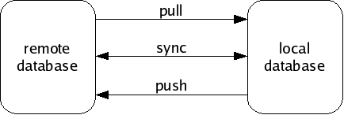
In general, work flow with monotone involves 3 distinct stages:
The last stage of workflow is worth clarifying: monotone does not blindly apply all changes it receives from a remote database to your workspace. Doing so would be very dangerous, because remote databases are not always trustworthy systems. Rather, monotone evaluates the certificates it has received along with the changes, and decides which particular changes are safe and desirable to apply to your workspace.
You can always adjust the criteria monotone uses to judge the trustworthiness and desirability of changes in your database. But keep in mind that it always uses some criteria; receiving changes from a remote server is a different activity than applying changes to a workspace. Sometimes you may receive changes which monotone judges to be untrusted or bad; such changes may stay in your database but will not be applied to your workspace.
Remote databases, in other words, are just untrusted “buckets” of data, which you can trade with promiscuously. There is no trust implied in communication.
So far we have been talking about revisions as though each logically follows exactly one revision before it, in a simple sequence of revisions.
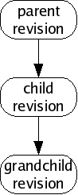
This is a rosy picture, but sometimes it does not work out this way. Sometimes when you make new revisions, other people are simultaneously making new revisions as well, and their revisions might be derived from the same parent as yours, or contain different changesets. Without loss of generality, we will assume simultaneous edits only happen two-at-a-time; in fact many more edits may happen at once but our reasoning will be the same.
We call this situation of simultaneous edits a fork, and will refer to the two children of a fork as the left child and right child. In a large collection of revisions with many people editing files, especially on many different computers spread all around the world, forks are a common occurrence.
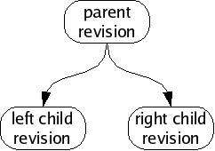
If we analyze the changes in each child revision, we will often find that the changeset between the parent and the left child are unrelated to the changeset between the parent and the right child. When this happens, we can usually merge the fork, producing a common grandchild revision which contains both changesets.
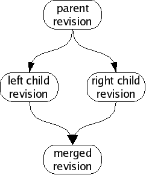
Sometimes, people intentionally produce forks which are not supposed to be merged; perhaps they have agreed to work independently for a time, or wish to change their files in ways which are not logically compatible with each other. When someone produces a fork which is supposed to last for a while (or perhaps permanently) we say that the fork has produced a new branch. Branches tell monotone which revisions you would like to merge, and which you would like to keep separate.
You can see all the available branches using mtn list branches.
Branches are indicated with certs. The cert name branch is
reserved for use by monotone, for the purpose of identifying the
revisions which are members of a branch. A branch cert has a
symbolic “branch name” as its value. When we refer to “a branch”,
we mean all revisions with a common branch name in their branch
certs.
For example, suppose you are working on a program called “wobbler”.
You might develop many revisions of wobbler and then decide to split
your revisions into a “stable branch” and an “unstable branch”, to
help organize your work. In this case, you might call the new branches
“wobbler-stable” and “wobbler-unstable”. From then on, all
revisions in the stable branch would get a cert with name branch
and value wobbler-stable; all revisions in the unstable branch
would get a cert with name branch and value
wobbler-unstable. When a wobbler-stable revision forks,
the children of the fork will be merged. When a
wobbler-unstable revision forks, the children of the fork will
be merged. However, the wobbler-stable and
wobbler-unstable branches will not be merged together, despite
having a common ancestor.
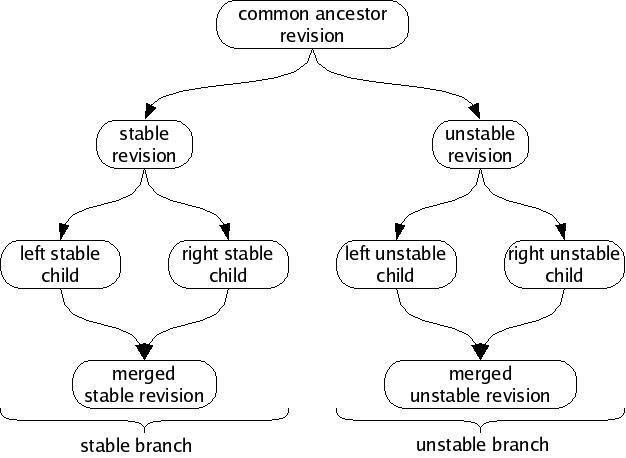
For each branch, the set of revisions with no children is called the heads of the branch. Monotone can automatically locate, and attempt to merge, the heads of a branch. If it fails to automatically merge the heads, it may ask you for assistance or else fail cleanly, leaving the branch alone.
For example, if a fork’s left child has a child of its own (a “left grandchild”), monotone will merge the fork’s right child with the left grandchild, since those revisions are the heads of the branch. It will not merge the left child with the right child, because the left child is not a member of the heads.
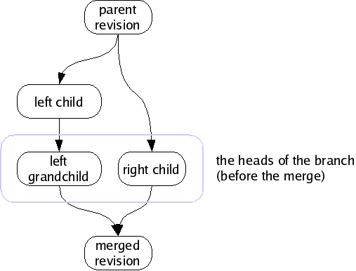
When there is only one revision in the heads of a branch, we say that the heads are merged, or more generally that the branch is merged, since the heads is the logical set of candidates for any merging activity. If there are two or more revisions in the heads of a branch, and you ask to merge the branch, monotone will merge them two-at-a-time until there is only one.
The branch names used in the above section are fine for an example, but they would be bad to use in a real project. The reason is, monotone branch names should be globally unique, over all branches in the world. Otherwise, when your branch eventually gets distributed, you could get name collisions with other people’s work.
Having two separate projects with the same monotone branch names means those projects cannot be stored in the same database. In general, monotone supports storing unrelated branches in a single database, which simplifies servers. But that requires unique branch names, so ensuring globally unique branch names allows using globally accessible monotone servers.
monotone does not support renaming branches (because that would be modifying history), so choosing a good branch name up front is important. It is possible to work around this by propagating from your branch to one with a better name, but that is a painful process if there are many people using the original branch name.
Even if you are absolutely sure that your branch will never be distributed, things could change in the future!
Fortunately, we have a handy source of globally unique names — the
DNS system. When naming a branch, always prepend the reversed, fully
qualified, domain name of a host that you control or are otherwise
authorized to use. For example, monotone development happens on the
branch net.venge.monotone, because venge.net belongs to
monotone’s original author. The idea is that this way, you can
coordinate with other people using a host to make sure there are no
conflicts — in the example, monotone’s original author can be
certain that no-one else using venge.net will start up a
different program named monotone. If you work for Yoyodyne,
Inc. (owners of yoyodyne.com), then all your branch names should look
like com.yoyodyne.something.
What the something part looks like is up to you, but
usually the first part is the project name (the monotone in
net.venge.monotone), and then possibly more stuff after that to
describe a particular branch. For example, monotone’s win32 support
was initially developed on the branch net.venge.monotone.win32
(for more information, see Naming Conventions).
It has to be noted that earlier versions of monotone enforced no restrictions
on branch names. Newer versions, starting with 0.99, exclude a set of control
characters though, which mostly denote either meta characters in monotone’s
URI syntax or are used in globs to resolve branch patterns. These characters are
?, ,, *, %, +, {, }, [,
], ! and ^. Additionally, - is deprecated as first
character of a branch name, since it is used to denote branch exclude patterns
in the aforementioned URI syntax.
monotone warns on the creation of branch names which violate one of the above restrictions and gives further directions. Future versions of monotone are likely to enforce these restrictions by disallowing such branch names completely.
This chapter illustrates the basic uses of monotone by means of an example, fictional software project.
Before we walk through the tutorial, there are two minor issues to address: standard options and revision selectors.
Before operating monotone, two important command-line options should be explained.
Monotone will cache the settings for these options in your workspace, so ordinarily once you have checked out a project, you will not need to specify them again. We will therefore only mention these arguments in the first example.
Many commands require you to supply 40-character SHA1 values as arguments, which identify revisions. These “revision IDs” are tedious to type, so monotone permits you to supply “revision selectors” rather than complete revision IDs. Selectors are a more “human friendly” way of specifying revisions by combining certificate values into unique identifiers. This “selector” mechanism can be used anywhere a revision ID would normally be used. For details on selector syntax, see Selectors.
We are now ready to explore our fictional project.
Our fictional project involves 3 programmers cooperating to write firmware for a robot, the JuiceBot 7, which dispenses fruit juice. The programmers are named Jim, Abe and Beth.
In our example the programmers work privately on laptops, and are usually disconnected from the network. They share no storage system. Thus when each programmer enters a command, it affects only his or her own computer, unless otherwise stated.
In the following, our fictional project team will work through several version control tasks. Some tasks must be done by each member of our example team; other tasks involve only one member.
The first step Jim, Abe and Beth each need to perform is to create a
new database. This is done with the mtn db init command,
providing a --db option to specify the location of the new
database. Each programmer creates their own database, which will
reside in their home directory and store all the revisions, files and
manifests they work on.
In real life, most people prefer to keep one database for each project
they work on. If we followed that convention here in the tutorial,
though, then all the databases would be called juicebot.mtn, and
that would make things more confusing to read. So instead, we’ll have
them each name their database after themselves.
Thus Jim issues the command:
$ mtn db init --db=~/jim.mtn
and Abe issues the command:
$ mtn db init --db=~/abe.mtn
Beth decides to use monotone’s built-in database management functionality. monotone then expects to find managed database files in a list of directories (default $HOME/.monotone/databases on Unix and %APPDATA%\monotone\databases on Windows, see Managed Databases for more info) and acts upon those by knowing only their file or basename.
To create a new managed database, Beth issues the mtn db init command
like this:
$ mtn db init --db=:beth
Beth can distinguish a managed database name from an unmanaged one by
the leading colon in its name. This special alias can now be used
interchangeably in every monotone invocation. If Beth wants to see
where monotone actually created the database and what other databases
monotone knows of, she uses the mtn list databases command
(or mtn ls dbs) for that. We’ll come back to this in a bit.
Now Jim, Abe and Beth must each generate an RSA key pair for themselves. This step requires choosing a key identifier. Typical key identifiers are similar to email addresses, possibly modified with some prefix or suffix to distinguish multiple keys held by the same owner. Our example programmers will use their email addresses at the fictional “juicebot.co.jp” domain name. When we ask for a key to be generated, monotone will ask us for a passphrase. This phrase is used to encrypt the key when storing it on disk, as a security measure.
Jim does the following:
$ mtn genkey jim@juicebot.co.jp enter passphrase for key ID [jim@juicebot.co.jp] (...): <Jim enters his passphrase> confirm passphrase for key ID [jim@juicebot.co.jp] (...): <Jim confirms his passphrase> mtn: generating key-pair 'jim@juicebot.co.jp' mtn: storing key-pair 'jim@juicebot.co.jp' in /home/jim/.monotone/keys mtn: key 'jim@juicebot.co.jp' has hash '398cb10dcd4fadf4f7849a3734b626a83e0bb2ae'
Abe does something similar:
$ mtn genkey abe@juicebot.co.jp enter passphrase for key ID [abe@juicebot.co.jp] (...): <Abe enters his passphrase> confirm passphrase for key ID [abe@juicebot.co.jp] (...): <Abe confirms his passphrase> mtn: generating key-pair 'abe@juicebot.co.jp' mtn: storing key-pair 'abe@juicebot.co.jp' in /home/abe/.monotone/keys mtn: key 'abe@juicebot.co.jp' has hash '62d8d1798e716868acde75c0fc4c84760003863d'
as does Beth:
$ mtn genkey beth@juicebot.co.jp enter passphrase for key ID [beth@juicebot.co.jp] (...): <Beth enters her passphrase> confirm passphrase for key ID [beth@juicebot.co.jp] (...): <Beth confirms her passphrase> mtn: generating key-pair 'beth@juicebot.co.jp' mtn: storing key-pair 'beth@juicebot.co.jp' in /home/beth/.monotone/keys mtn: key 'beth@juicebot.co.jp' has hash 'c1d47c065a21f1e1c4fbdefaa2f37bd2c15ee4b1'
Each programmer has now generated a key pair and placed it in their keystore. Each can list the keys in their keystore, to ensure the correct key was generated. For example, Jim might see this:
$ mtn list keys [public keys] 398cb10dcd4fadf4f7849a3734b626a83e0bb2ae jim@juicebot.co.jp (*) (*) - only in /home/jim/.monotone/keys/ [private keys] 398cb10dcd4fadf4f7849a3734b626a83e0bb2ae jim@juicebot.co.jp
The hexadecimal string printed out before each key name is a fingerprint of the key, and can be used to verify that the key you have stored under a given name is the one you intended to store. Monotone will never permit one keystore to store two keys with the same fingerprint, however distincts keys with equal names are possible.
This output shows one private and one public key stored under the name
jim@juicebot.co.jp, so it indicates that Jim’s key-pair has been
successfully generated and stored. On subsequent commands, Jim will need
to re-enter his passphrase in order to perform security-sensitive
tasks.
Pretty soon Jim gets annoyed when he has to enter his passphrase every
time he invokes mtn (and, more importantly, it simplifies the
tutorial text to skip the passphrase prompts) so he decides to use
ssh-agent to store his key. He does this by using the
ssh_agent_export command to export his key into a format that
ssh-agent can understand and adding it with ssh-add.
$ mtn ssh_agent_export ~/.ssh/id_monotone enter passphrase for key ID [user@example.com] (1234abcd...): enter new passphrase for key ID [user@example.com] (1234abcd...): confirm passphrase for key ID [user@example.com] (1234abcd...): $ chmod 600 ~/.ssh/id_monotone
From now on, Jim just needs to add his key to ssh-agent when he logs in and he will not need to enter his passphrase every time he uses monotone.
$ ssh-agent /bin/bash $ ssh-add ~/.ssh/id_monotone Enter passphrase for /home/user/.ssh/id_monotone: Identity added: /home/user/.ssh/id_monotone (/home/user/.ssh/id_monotone) $ mtn ci -m"Changed foo to bar" $ mtn push
The following procedure is deprecated and not suggested for general use as it is very insecure.
Jim isn’t very worried about security so he decides to store his passphrase in his monotonerc file. He does this by writing a hook function which returns the passphrase:
$ mkdir ~/.monotone $ cat >>~/.monotone/monotonerc function get_passphrase(key_identity) return "jimsekret" end ^D
Now whenever monotone needs his passphrase, it will call this function
instead of prompting him to type it. Note that we are appending the new
hook to the (possibly existing) file. We do this to avoid losing other
changes by mistake; therefore, be sure to check that no other
get_passphrase function appears in the configuration file.
Abe and Beth do the same, with their secret passphrases.
Before he can begin work on the project, Jim needs to create a
workspace — a directory whose contents monotone will keep track
of. Often, one works on projects that someone else has started, and
creates workspaces with the checkout command, which you’ll
learn about later. Jim is starting a new project, though, so he does
something a little bit different. He uses the mtn setup
command to create a new workspace.
This command creates the named directory (if it doesn’t already exist),
and creates the _MTN directory within it. The _MTN directory
is how monotone recognizes that a directory is a workspace, and
monotone stores some bookkeeping files within it. For instance, command
line values for the --db, --branch or --key
options to the setup command will be cached in a file called
_MTN/options, so you don’t have to keep passing them to monotone
all the time.
He chooses jp.co.juicebot.jb7 as a branch name. (See
Naming Conventions for more information about appropriate branch
names.) Jim then creates his workspace:
/home/jim$ mtn --db=jim.mtn --branch=jp.co.juicebot.jb7 setup juice /home/jim$ cd juice /home/jim/juice$
Notice that Jim has changed his current directory to his newly created workspace. For the rest of this example we will assume that everyone issues all further monotone commands from their workspace directories.
Next Jim decides to add some files to the project. He writes up a file containing the prototypes for the JuiceBot 7:
$ mkdir include $ cat >include/jb.h /* Standard JuiceBot hw interface */ #define FLOW_JUICE 0x1 #define POLL_JUICE 0x2 int spoutctl(int port, int cmd, void *x); /* JuiceBot 7 API */ #define APPLE_SPOUT 0x7e #define BANANA_SPOUT 0x7f void dispense_apple_juice (); void dispense_banana_juice (); ^D
Then adds a couple skeleton source files which he wants Abe and Beth to fill in:
$ mkdir src
$ cat >src/apple.c
#include "jb.h"
void
dispense_apple_juice()
{
/* Fill this in please, Abe. */
}
^D
$ cat >src/banana.c
#include "jb.h"
void
dispense_banana_juice()
{
/* Fill this in please, Beth. */
}
^D
Now Jim tells monotone to add these files to its record of his workspace. He specifies one filename and one directory; monotone recursively scans the directory and adds all its files.
$ mtn add -R include/jb.h src mtn: adding include/jb.h to workspace manifest mtn: adding src/apple.c to workspace manifest mtn: adding src/banana.c to workspace manifest
This command produces a record of Jim’s intentions in a special file called _MTN/revision, stored in the workspace. The file is plain text:
$ cat _MTN/revision format_version "1" new_manifest [0000000000000000000000000000000000000002] old_revision [] add_dir "" add_dir "include" add_dir "src" add_file "include/jb.h" content [f6996ce2dfc5d32bda8b574c3e9ce75db8d55492] add_file "src/apple.c" content [1ce885d2cc59842ff16785834391e864068fbc3c] add_file "src/banana.c" content [ad88bbbb1b7507ddff26be67efd91d95e069afb6]
You will never have to look at this file, but it is nice to know that it is there.
Jim then gets up from his machine to get a coffee. When he returns he has forgotten what he was doing. He asks monotone:
$ mtn status ---------------------------------------------------------------------- Revision: 493bda86628fd72c992eb56f73899db9ead3cf6f Author: jim@juicebot.co.jp Date: 2004-10-26T02:53:08 Branch: jp.co.juicebot.jb7 Changes added added include added src added include/jb.h added src/apple.c added src/banana.c
The output of this command tells Jim that his edits, so far, constitute only the addition of some files and directories.
Jim wants to see the actual details of the files he added, however, so he runs a command which prints out the revision and a GNU “unified diff” of the patches involved in the changeset:
$ mtn diff
#
# old_revision []
#
# add_dir ""
#
# add_dir "include"
#
# add_dir "src"
#
# add_file "include/jb.h"
# content [f6996ce2dfc5d32bda8b574c3e9ce75db8d55492]
#
# add_file "src/apple.c"
# content [1ce885d2cc59842ff16785834391e864068fbc3c]
#
# add_file "src/banana.c"
# content [ad88bbbb1b7507ddff26be67efd91d95e069afb6]
#
============================================================
--- include/jb.h f6996ce2dfc5d32bda8b574c3e9ce75db8d55492
+++ include/jb.h f6996ce2dfc5d32bda8b574c3e9ce75db8d55492
@ -0,0 +1,13 @
+/* Standard JuiceBot hw interface */
+
+#define FLOW_JUICE 0x1
+#define POLL_JUICE 0x2
+#define SET_INTR 0x3
+int spoutctl(int port, int cmd, void *x);
+
+/* JuiceBot 7 API */
+
+#define APPLE_SPOUT 0x7e
+#define BANANA_SPOUT 0x7f
+void dispense_apple_juice ();
+void dispense_banana_juice ();
============================================================
--- src/apple.c 1ce885d2cc59842ff16785834391e864068fbc3c
+++ src/apple.c 1ce885d2cc59842ff16785834391e864068fbc3c
@ -0,0 +1,7 @
+#include "jb.h"
+
+void
+dispense_apple_juice()
+{
+ /* Fill this in please, Abe. */
+}
============================================================
--- src/banana.c ad88bbbb1b7507ddff26be67efd91d95e069afb6
+++ src/banana.c ad88bbbb1b7507ddff26be67efd91d95e069afb6
@ -0,0 +1,7 @
+#include "jb.h"
+
+void
+dispense_banana_juice()
+{
+ /* Fill this in please, Beth. */
+}
Satisfied with the work he’s done, Jim wants to save his changes. He
then commits his workspace, which causes monotone to process the
_MTN/revision file and record the file contents, manifest, and
revision into the database. Since he provided a branch name when he
ran setup, monotone will use this as the default branch name
when he commits.
$ mtn commit --message="initial checkin of project" mtn: beginning commit on branch 'jp.co.juicebot.jb7' mtn: committed revision 493bda86628fd72c992eb56f73899db9ead3cf6f
When monotone committed Jim’s revision, it updated _MTN/revision
to record the workspace’s new base revision ID. Jim can use this
revision ID in the future, as an argument to the checkout
command, if he wishes to return to this revision:
$ mtn automate get_base_revision_id 493bda86628fd72c992eb56f73899db9ead3cf6f
Monotone also generated a number of certificates attached to the new revision, and made sure that the database contained a copy of Jim’s public key. These certs store metadata about the commit. Jim can ask monotone for a list of certs on this revision.
$ mtn ls certs 493bda86628fd72c992eb56f73899db9ead3cf6f ----------------------------------------------------------------- Key : jim@juicebot.co.jp (398cb10d...) Sig : ok Name : branch Value : jp.co.juicebot.jb7 ----------------------------------------------------------------- Key : jim@juicebot.co.jp (398cb10d...) Sig : ok Name : date Value : 2004-10-26T02:53:08 ----------------------------------------------------------------- Key : jim@juicebot.co.jp (398cb10d...) Sig : ok Name : author Value : jim@juicebot.co.jp ----------------------------------------------------------------- Key : jim@juicebot.co.jp (398cb10d...) Sig : ok Name : changelog Value : initial checkin of project
The output of this command has a block for each cert found. Each block
has 4 significant pieces of information. The first indicates the
signer of the cert, in this case jim@juicebot.co.jp. The
second indicates whether this cert is “ok”, meaning whether the
RSA signature provided is correct for the cert data. The third is
the cert name, and the fourth is the cert value. This list shows us
that monotone has confirmed that, according to
jim@juicebot.co.jp, the revision
493bda86628fd72c992eb56f73899db9ead3cf6f is a member of the
branch jp.co.juicebot.jb7, written by
jim@juicebot.co.jp, with the given date and changelog.
It is important to keep in mind that revisions are not “in” or “out” of a branch in any global sense, nor are any of these cert values true or false in any global sense. Each cert indicates that some person – in this case Jim – would like to associate a revision with some value; it is up to you to decide if you want to accept that association.
Jim can now check the status of his branch using the “heads” command, which lists all the head revisions in the branch:
$ mtn heads branch 'jp.co.juicebot.jb7' is currently merged: 493bda86628fd72c992eb56f73899db9ead3cf6f jim@juicebot.co.jp 2004-10-26T02:53:08
The output of this command tells us that there is only one current
“head” revision in the branch jp.co.juicebot.jb7, and it is
the revision Jim just committed. A head revision is one without any
descendants. Since Jim has not committed any changes to this revision
yet, it has no descendants.
Jim now decides he will make his base revision available to his employees. To do this, he arranges for Abe and Beth to synchronise their databases with his, over the network. There are two pre-requisites for this: first, he has to get a copy of each of their public keys; then, he has to tell monotone that the holders of those keys are permitted to access his database. Finally, with these pre-requisites in place, he needs to tell monotone to provide network access to his database.
First, Abe exports his public key:
$ mtn --db=~/abe.mtn pubkey abe@juicebot.co.jp >~/abe.pubkey
His public key is just a plain block of ASCII text:
$ cat ~/abe.pubkey [pubkey abe@juicebot.co.jp] MIGdMA0GCSqGSIb3DQEBAQUAA4GLADCBhwKBgQCbaVff9SF78FiB/1nUdmjbU/TtPyQqe/fW CDg7hSg1yY/hWgClXE9FI0bHtjPMIx1kBOig09AkCT7tBXM9z6iGWxTBhSR7D/qsJQGPorOD DO7xovIHthMbZZ9FnvyB/BCyiibdWgGT0Gtq94OKdvCRNuT59e5v9L4pBkvajb+IzQIBEQ== [end]
Beth also exports her public key:
$ mtn --db=:beth pubkey beth@juicebot.co.jp >~/beth.pubkey
Then Abe and Beth both send their keys to Jim. The keys are not secret, but the team members must be relatively certain that they are exchanging keys with the person they intend to trust, and not some malicious person pretending to be a team member. Key exchange may involve sending keys over an encrypted medium, or meeting in person to exchange physical copies, or any number of techniques. All that matters, ultimately, is that Jim receives both Abe’s and Beth’s key in a way that he can be sure of.
So eventually, after key exchange, Jim has the public key files in his home directory. He tells monotone to read the associated key packets into his database:
$ cat ~/abe.pubkey ~/beth.pubkey | mtn --db=~/jim.mtn read mtn: read 2 packets
Now Jim’s monotone is able to identify Beth and Abe, and he is ready to give them permission to access his database. He does this by editing a pair of small files in his ~/.monotone directory:
$ cat >>~/.monotone/read-permissions pattern "*" allow "abe@juicebot.co.jp" allow "beth@juicebot.co.jp" ^D $ cat >>~/.monotone/write-permissions abe@juicebot.co.jp beth@juicebot.co.jp ^D
These files are read by the default monotone hooks that will decide whether remote monotone users will be allowed access to Jim’s database, identified by the named keys.
Jim then makes sure that his TCP port 4691 is open to incoming
connections, adjusting his firewall settings as necessary, and runs
the monotone serve command:
$ mtn --db=jim.mtn serve
This command starts monotone listening on all network interfaces of his laptop on the default port 4691, serving everything in his database.
With Jim’s server preparations done, now Abe is ready to fetch Jim’s
code. To do this he issues the monotone sync command:
$ mtn --db=abe.mtn sync "mtn://jim-laptop.juicebot.co.jp?jp.co.juicebot.jb7*" mtn: connecting to mtn://jim-laptop.juicebot.co.jp mtn: first time connecting to server mtn://jim-laptop.juicebot.co.jp mtn: I'll assume it's really them, but you might want to double-check mtn: their key's fingerprint: 9e9e9ef1d515ad58bfaa5cf282b4a872d8fda00c mtn: warning: saving public key for jim@juicebot.co.jp to database mtn: finding items to synchronize: mtn: bytes in | bytes out | revs in | revs out | revs written mtn: 2587 | 1025 | 1 | 0 | 1 mtn: successful exchange with mtn://jim-laptop.juicebot.co.jp
Abe now has, in his database, a copy of everything Jim put in the branch. Therefore Abe can disconnect from the expensive network connection he’s on and work locally for a while. Remember that, in monotone, work is done between workspaces in the filesystem and the local database; network connectivity is necessary only when that work is to be shared with others.
As we follow the juicebot team through the next several steps, we’ll see
them run the sync command again with Jim, and work will flow
both ways. The first time you sync a new database, monotone
remembers the server and branch patterns you use, and makes them the
default for future operations.
At the end of each exchange, information about all changes in the branch known to each database have been sent to the other party - including the work of the third team member that had previously been exchanged. As well as allowing each team member to learn about the others’ work, this also means that each party’s laptop contains a backup of the others’ work too.
Jim, Abe and Beth will continue working like this while they’re getting started, and we’ll revisit the issue of network service with them a little later as the project grows.
Abe decides to do some work on his part of the code. He has a copy of
Jim’s database contents, but cannot edit any of that data yet. He
begins his editing by checking out the head of the
jp.co.juicebot.jb7 branch into a workspace, so he can edit
it:
$ mtn --db=abe.mtn --branch=jp.co.juicebot.jb7 checkout .
Monotone unpacks the set of files in the head revision’s manifest directly into Abe’s current directory. (If he had specified something other than . at the end, monotone would have created that directory and unpacked the files into it.) Abe then opens up one of the files, src/apple.c, and edits it:
$ vi src/apple.c <Abe writes some apple-juice dispensing code>
The file src/apple.c has now been changed. Abe gets up to answer a phone call, and when he returns to his work he has forgotten what he changed. He can ask monotone for details:
$ mtn diff
#
# old_revision [493bda86628fd72c992eb56f73899db9ead3cf6f]
#
# patch "src/apple.c"
# from [1ce885d2cc59842ff16785834391e864068fbc3c]
# to [e2c64f6bde75a192d48d2256385df3dd7a963349]
#
============================================================
--- src/apple.c 1ce885d2cc59842ff16785834391e864068fbc3c
+++ src/apple.c e2c64f6bde75a192d48d2256385df3dd7a963349
@ -3,5 +3,8 @ dispense_apple_juice()
void
dispense_apple_juice()
{
- /* Fill this in please, Abe. */
+ spoutctl(APPLE_SPOUT, FLOW_JUICE, 1);
+ while (spoutctl(APPLE_SPOUT, POLL_JUICE, 1) == 0)
+ usleep (1000);
+ spoutctl(APPLE_SPOUT, FLOW_JUICE, 0);
}
Satisfied with his day’s work, Abe decides to commit.
$ mtn commit
Abe neglected to provide a --message option specifying the
change log on the command line. Monotone therefore invokes an
external “log message editor” — typically an editor like
vi — with an explanation of the changes being committed
and the opportunity to enter a log message.
*** REMOVE THIS LINE TO CANCEL THE COMMIT *** -- Enter a description of this change above -- -- Edit fields below to modify certificate values -- Branch: right Author: tester@test.net Date: 2010-09-11T12:03:15 -- Modifications below this line are ignored -- Changes against parent 493bda86628fd72c992eb56f73899db9ead3cf6f patched src/apple.c
Abe enters a single line at the top of the file, saying “polling implementation of src/apple.c”. He then saves the file and quits the editor. Monotone extracts the message to be stored in the associated “changelog” cert. Returning to the shell, Abe’s commit completes:
mtn: beginning commit on branch 'jp.co.juicebot.jb7' mtn: committed revision 42eae36587508faa664b111cefc291f0b85ef83a
Abe then sends his new revision back to Jim:
$ mtn sync mtn: connecting to mtn://jim-laptop.juicebot.co.jp mtn: finding items to synchronize: mtn: certs | keys | revisions mtn: 8 | 2 | 2 mtn: bytes in | bytes out | revs in | revs out | revs written mtn: 615 | 2822 | 0 | 1 | 0 mtn: successful exchange with mtn://jim-laptop.juicebot.co.jp
Beth does a similar sequence. First she syncs her database with Jim’s:
$ mtn --db=:beth sync "mtn://jim-laptop.juicebot.co.jp?jp.co.juicebot.jb7*" mtn: connecting to mtn://jim-laptop.juicebot.co.jp mtn: first time connecting to server mtn://jim-laptop.juicebot.co.jp mtn: I'll assume it's really them, but you might want to double-check mtn: their key's fingerprint: 9e9e9ef1d515ad58bfaa5cf282b4a872d8fda00c mtn: warning: saving public key for jim@juicebot.co.jp to database mtn: finding items to synchronize: mtn: bytes in | bytes out | revs in | revs out | revs written mtn: 4601 | 1239 | 2 | 0 | 1 mtn: verifying new revisions (this may take a while) mtn: bytes in | bytes out | revs in | revs out | revs written mtn: 4601 | 1285 | 2 | 0 | 2 mtn: successful exchange with mtn://jim-laptop.juicebot.co.jp
She checks out a copy of the tree from her database:
$ mtn --db=:beth --branch=jp.co.juicebot.jb7 checkout juicebot
and since she is using a managed database, monotone automatically remembers
the connection between the newly created workspace and the database. She
now looks at the output of mtn list databases and sees the
following:
$ mtn list databases
:beth.mtn (in /home/beth/.monotone/databases):
jp.co.juicebot.jb7 (in /home/beth/juicebot)
Beth realizes that, whenever the database of the workspace changes, monotone will adapt the known paths for the old and the new database for her.
But let us get back to the work, Beth now start to edits the file src/banana.c:
$ vi src/banana.c <Beth writes some banana-juice dispensing code>
and logs her changes in _MTN/log right away so she does not forget what she has done like Abe.
$ vi _MTN/log * src/banana.c: Added polling implementation
Later, she commits her work. Monotone again invokes an external editor for her to edit her log message, but this time it fills in the messages she’s written so far, and she simply checks them over one last time before finishing her commit:
$ mtn commit mtn: beginning commit on branch 'jp.co.juicebot.jb7' mtn: committed revision 85573a54105cd3220db10aa6a0713643cdf5ce6f
And she syncs with Jim again:
$ mtn sync mtn: connecting to mtn://jim-laptop.juicebot.co.jp mtn: finding items to synchronize: mtn: certs | keys | revisions mtn: 12 | 3 | 3 mtn: bytes in | bytes out | revs in | revs out | revs written mtn: 709 | 2879 | 0 | 1 | 0 mtn: successful exchange with mtn://jim-laptop.juicebot.co.jp
Careful readers will note that, in the previous section, the JuiceBot company’s work was perfectly serialized:
The result of this ordering is that Jim’s work entirely preceded Abe’s work, which entirely preceded Beth’s work. Moreover, each worker was fully informed of the “up-stream” worker’s actions, and produced purely derivative, “down-stream” work:
This is a simple, but sadly unrealistic, ordering of events. In real companies or work groups, people often work in parallel, diverging from commonly known revisions and merging their work together, sometime after each unit of work is complete.
Monotone supports this diverge/merge style of operation naturally; any
time two revisions diverge from a common parent revision, we say that
the revision graph has a fork in it. Forks can happen at any
time, and require no coordination between workers. In fact any
interleaving of the previous events would work equally well; with one
exception: if forks were produced, someone would eventually have to
run the merge command, and possibly resolve any conflicts
in the fork.
To illustrate this, we return to our workers Beth and Abe. Suppose Jim sends out an email saying that the current polling juice dispensers use too much CPU time, and must be rewritten to use the JuiceBot’s interrupt system. Beth wakes up first and begins working immediately, basing her work off the revision 85573... which is currently in her workspace:
$ vi src/banana.c <Beth changes her banana-juice dispenser to use interrupts>
Beth finishes and examines her changes:
$ mtn diff
#
# old_revision [85573a54105cd3220db10aa6a0713643cdf5ce6f]
#
# patch "src/banana.c"
# from [d7e28a01cf6fc0f9ac04c6901dcafd77c2d32fb8]
# to [dd979c3c880e6a7221fcecd7148bd4afcfb3e964]
#
============================================================
--- src/banana.c d7e28a01cf6fc0f9ac04c6901dcafd77c2d32fb8
+++ src/banana.c dd979c3c880e6a7221fcecd7148bd4afcfb3e964
@ -1,10 +1,15 @
#include "jb.h"
+static void
+shut_off_banana()
+{
+ spoutctl(BANANA_SPOUT, SET_INTR, 0);
+ spoutctl(BANANA_SPOUT, FLOW_JUICE, 0);
+}
+
void
dispense_banana_juice()
{
+ spoutctl(BANANA_SPOUT, SET_INTR, &shut_off_banana);
spoutctl(BANANA_SPOUT, FLOW_JUICE, 1);
- while (spoutctl(BANANA_SPOUT, POLL_JUICE, 1) == 0)
- usleep (1000);
- spoutctl(BANANA_SPOUT, FLOW_JUICE, 0);
}
She commits her work:
$ mtn commit --message="interrupt implementation of src/banana.c" mtn: beginning commit on branch 'jp.co.juicebot.jb7' mtn: committed revision 90abe0f1bc354a73d42d3bff1b02946559682bd9
And she syncs with Jim:
$ mtn sync
Unfortunately, before Beth managed to sync with Jim, Abe had woken up and implemented a similar interrupt-based apple juice dispenser, but his workspace is 42eae..., which is still “upstream” of Beth’s.
$ vi apple.c <Abe changes his apple-juice dispenser to use interrupts>
Thus when Abe commits, he unknowingly creates a fork:
$ mtn commit --message="interrupt implementation of src/apple.c"
Abe does not see the fork yet; Abe has not actually seen any of Beth’s work yet, because he has not synchronized with Jim. Since he has new work to contribute, however, he now syncs:
$ mtn sync
Now Jim and Abe will be aware of the fork. Jim sees it when he sits down at his desk and asks monotone for the current set of heads of the branch:
$ mtn heads mtn: branch 'jp.co.juicebot.jb7' is currently unmerged: 90abe0f1bc354a73d42d3bff1b02946559682bd9 abe@juicebot.co.jp 2004-10-26T02:53:16 951da88860a4cf7419d66ed9094d8bf24df5fb8b beth@juicebot.co.jp 2004-10-26T02:53:15
Clearly there are two heads to the branch: it contains an un-merged fork. Beth will not yet know about the fork, but in this case it doesn’t matter: anyone can merge the fork, and since there are no conflicts Jim does so himself:
$ mtn merge mtn: 2 heads on branch 'jp.co.juicebot.jb7' mtn: merge 1 / 1: mtn: calculating best pair of heads to merge next mtn: [left] 90abe0f1bc354a73d42d3bff1b02946559682bd9 mtn: [right] 951da88860a4cf7419d66ed9094d8bf24df5fb8b mtn: [merged] 3aca69c7749bde9bd07fe4c92bb868bd69b2e421 mtn: note: your workspaces have not been updated
The output of this command shows Jim that two heads were found,
combined via a 3-way merge with their ancestor, and saved to a new
revision. This happened automatically, because the changes between the
common ancestor and heads did not conflict. If there had been a
conflict, monotone would have invoked an external merging tool to help
resolve it, or Jim could have used the conflicts set of
commands to resolve it (see Conflicts).
After merging, the branch has a single head again, and Jim updates his workspace.
$ mtn update mtn: updating along branch 'jp.co.juicebot.jb7' mtn: selected update target 3aca69c7749bde9bd07fe4c92bb868bd69b2e421 mtn: [left] d60c18ec5e0cf1163b276f0bfdd908c1dfd53b4a mtn: [right] 3aca69c7749bde9bd07fe4c92bb868bd69b2e421 mtn: updating src/apple.c mtn: updating src/banana.c mtn: updated to base revision 3aca69c7749bde9bd07fe4c92bb868bd69b2e421
The update command selected an update target — in this case the newly merged head — and performed an in-memory merge between Jim’s workspace and the chosen target. The result was then written to Jim’s workspace. If Jim’s workspace had any uncommitted changes in it, they would have been merged with the update in exactly the same manner as the merge of multiple committed heads.
Monotone makes very little distinction between a “pre-commit” merge (an update) and a “post-commit” merge. Both sorts of merge use the exact same algorithm. The major difference concerns the recoverability of the pre-merge state: if you commit your work first, and merge after committing, then even if the merge somehow fails (due to difficulty in a manual merge step, for instance), your committed state is still safe. If you update, on the other hand, you are requesting that monotone directly modify your workspace, and while monotone will try hard not to break anything, this process is inherently more open to error. It is therefore recommended that you commit your work first, before merging.
If you have previously used another version control system, this may at
first seem surprising; there are some systems where you are
required to update, and risk the above problems, before you can
commit. Monotone, however, was designed with this problem in mind, and
thus always allows you to commit before merging. A good rule of
thumb is to only use update in workspaces with no local
modifications, or when you actually want to work against a different
base revision (perhaps because finishing your change turns out to
require some fixes made in another revision, or because you discover
that you have accidentally started working against a revision that
contains unrelated bugs, and need to back out to a working revision for
testing).
So by now you’re familiar with making changes, sharing them with other
people, and integrating your changes with their changes. Sometimes,
though, you may want to make some changes, and not integrate them
with other people’s — or at least not right away. One way to do this
would be to simply never run mtn merge; but it would
quickly become confusing to try and keep track of which changes were in
which revisions. This is where branches are useful.
Continuing our example, suppose that Jim is so impressed by Beth’s work on banana juice support that he assigns her to work on the JuiceBot 7’s surprise new feature: muffins. In the mean time, Abe will continue working on the JuiceBot’s basic juice-related functions.
The changes required to support muffins are somewhat complicated, and Beth is worried that her work might destabilize the program, and interfere with Abe’s work. In fact, she isn’t even sure her first attempt will turn out to be the right approach; she might work on it for a while and then decide it was a bad idea, and should be discarded. For all these reasons, she decides that she will work on a branch, and then once she is satisfied with the new code, she will merge back onto the mainline.
She decides that since main development is in branch
jp.co.juicebot.jb7, she will use branch
jp.co.juicebot.jb7.muffins. So, she makes the first few edits to
the new muffins code, and commits it on a new branch by simply passing
--branch to commit:
$ mtn commit --branch=jp.co.juicebot.jb7.muffins --message='autobake framework' mtn: beginning commit on branch 'jp.co.juicebot.jb7.muffins' mtn: committed revision d33caefd61823ecbb605c39ffb84705dec449857
Alternately, she could not specify a message on the command line, and edit the “Branch” field in the changelog editor.
That’s all there is to it — there is now a
jp.co.juicebot.jb7.muffins branch, with her initial checkin on
it. She can make further checkins from the same workspace, and they
will automatically go to the muffins branch; if anyone else wants to
help her work on muffins, they can check out that branch as usual.
Of course, while Beth is working on the new muffins code, Abe is still
making fixes to the main line. Occasionally, Beth wants to integrate
his latest work into the muffins branch, so that her version doesn’t
fall too far behind. She does this by using the propagate
command:
$ mtn propagate jp.co.juicebot.jb7 jp.co.juicebot.jb7.muffins mtn: propagating jp.co.juicebot.jb7 -> jp.co.juicebot.jb7.muffins mtn: [source] da003f115752ac6e4750b89aaca9dbba178ac80c mtn: [target] d0e5c93bb61e5fd25a0dadf41426f209b73f40af mtn: common ancestor 853b8c7ac5689181d4b958504adfb5d07fd959ab jim@juicebot.co.jp 2004-10-26T:12:44:23 found mtn: trying 3-way merge mtn: [merged] 89585b3c5e51a5a75f5d1a05dda859c5b7dde52f
The propagate merges all of the new changes on one branch onto
another.
When the muffins code is eventually stable and ready to be integrated into the main line of development, she simply propagates the other way:
$ mtn propagate jp.co.juicebot.jb7.muffins jp.co.juicebot.jb7 mtn: propagating jp.co.juicebot.jb7.muffins -> jp.co.juicebot.jb7 mtn: [source] 4e48e2c9a3d2ca8a708cb0cc545700544efb5021 mtn: [target] bd29b2bfd07644ab370f50e0d68f26dcfd3bb4af mtn: common ancestor 652b1035343281a0d2a5de79919f9a31a30c9028 jim@juicebot.co.jp 2004-10-26T:15:25:05 found mtn: [merged] 03f7495b51cc70b76872ed019d19dee1b73e89b6
Monotone always records the full history of all merges, and is designed to handle an arbitrarily complicated graph of changes. You can make a branch, then branch off from that branch, propagate changes between arbitrary branches, and so on; monotone will track all of it, and do something sensible for each merge. Of course, it is still probably a good idea to come up with some organization of branches and a plan for which should be merged to which other ones. Monotone may keep track of graphs of arbitrary complexity — but you will have more trouble. Whatever arrangement of branches you come up with, though, monotone should be able to handle it.
If you are unsure of the name of a branch, you can list all branches using
the ls branches command. This is very useful, but if you create
a lot of branches then the list can become very long and unwieldy. To help
this monotone has the suspend command which partially hides
revisions/branches you are no longer using. Further commits on hidden branches
will automatically unhide the branches.
For example, if Beth is now finished with the muffins branch, she can stop it from cluttering the list of branches by suspending the last revision in that branch:
$ mtn ls branches jp.co.juicebot.jb7 jp.co.juicebot.jb7.muffins $ mtn heads mtn: branch 'jp.co.juicebot.jb7.muffins' is currently merged: 4e48e2c9a3d2ca8a708cb0cc545700544efb5021 beth@juicebot.co.jp 2007-07-08T02:17:37 $ mtn suspend 4e48e2c9a3d2ca8a708cb0cc545700544efb5021 $ mtn ls branches jp.co.juicebot.jb7
Up until now, Jim has been using his laptop and database as a sort of “central server” for the company; Abe and Beth have been syncing with Jim, and learning of each other’s work via Jim’s database. This has worked fine while the product has been in early development; Jim has good network connectivity in Japan, and has been staying home concentrating on programming. He has been able to leave his laptop connected and running all the time, while his employees in different time-zones work and sync their databases. This is now starting to change, and two problems are starting to cause occasional difficulties.
This doesn’t prevent them doing any work, but it does have some uncomfortable consequences: they’re more likely to have to manually merge conflicting changes when they finally sync up and discover they’ve both come up with slightly different fixes for the same bug in the meantime, and they’re more exposed to loss of work if one of them suffers a disk failure before they’ve had a chance to sync that work with another database.
The level of project activity is picking up, and there are more and more changes to be synced in the narrower window of time while Jim is connected. He finds he sometimes needs to take down the server process to do this local work, further exacerbating the first problem.
The juicebot team are resourceful, and by now quite used to working
independently. While Jim has been away travelling, Abe and Beth have
come up with their own solution to the first problem: they’ll run
servers from their databases, setting them up just like Jim did
previously. That way, if Jim’s database is offline, either Beth or Abe
can run the serve command and provide access for the other to
sync with. Beth also has the idea to create a second database
for the serve process, and to sync her development
database with that server locally, avoiding locking contention between
multiple monotone processes on the one database file.
When Jim reappears, the next person to sync with him will
often pass him information about both employees’ work that they’ve
sync’ed with each other in the meantime, just as he used to do. In fact,
Jim now finds it more convenient to initiate the sync with one of the
other servers when he has a spare moment and dynamic connectivity from a
hotel room or airport. Changes will flow between servers automatically
as clients access them and trade with one another.
This gets them by for a while, but there are still occasional inconveniences. Abe and Beth live in very different time-zones, and don’t always have reliable network connectivity, so sometimes Jim finds that neither of them is online to sync with when he has the chance. Jim now also has several customers interested in beta-testing the new code, and following changes as the bugs and issues they report are addressed.
Jim decides it’s time for a permanent server they can all sync with; this way, everyone always knows where to go to get the latest changes, and people can push their changes out without first calling their friends and making sure that they have their servers running.
Jim has rented some web server space on a service provider’s shared
system for the JuiceBot Inc. public website, www.juicebot.co.jp;
he thinks this server will be a good place to host the central monotone
server too. He sets up a new monotone database on the server,
generates a new key specially for the server (so he doesn’t have to
expose his own development private key on the shared system), and loads
in the team-members’ keys:
$ mtn --db=server.mtn db init $ mtn genkey monotone-server@www.juicebot.co.jp enter passphrase for key ID [monotone-server@www.juicebot.co.jp] (...): <Jim enters a new passphrase> confirm passphrase for key ID [monotone-server@www.juicebot.co.jp] (...): <Jim confirms the passphrase> mtn: generating key-pair 'monotone-server@www.juicebot.co.jp' mtn: storing key-pair 'monotone-server@www.juicebot.co.jp' in /home/jim/.monotone/keys mtn: key 'abe@juicebot.co.jp' has hash '78be08f7a2a316a9f7c6b0db544ed20673ea2190' $ cat abe.pubkey beth.pubkey jim.pubkey | mtn --db=server.mtn read mtn: read 3 packets
For the team members, he sets up the permissions files on the server
much like before — except that of course he needs to also grant his
jim@juicebot.co.jp key permission to access the new server.
For the beta-testers, Jim wants to allow them read-only access just to
the main JuiceBot 7 development line, but not to any of the
sub-branches where other experimental development is going on. He adds
some lines at the top of the ~/.monotone/read-permissions on
the server, above the broader permissions given to team-members. See
get_netsync_read_permitted for more details; the resulting file
looks like this:
comment "Provide beta-testers with specific read-only access" pattern "jp.co.juicebot.jb7" allow "beta1@juicebot.co.jp" allow "beta2@juicebot.co.jp" continue "true" comment "Fall-through, and allow staff access to all branches" pattern "*" allow "abe@juicebot.co.jp" allow "beth@juicebot.co.jp" allow "jim@juicebot.co.jp"
Jim could log in and start the monotone process manually from his shell
account on the server, perhaps under a program like screen to let it
stay running while he’s away. This would be one way of giving it the
server-key’s passphrase each startup, but he wants to make sure that the
server is up all the time; if the host reboots while he’s travelling and
the monotone server is down until he next logs in, things aren’t much
better than before. For the server to start automatically each time,
he’ll need to use the get_passphrase hook in the server’s
monotonerc file again.
Because he’s running on a shared server, Jim needs to be a little more restrictive about which interfaces and addresses his new server process will listen on. He should only accept connections at the address used for his website, because some of the provider’s other customers might also want to publish their own monotone projects on this host. Jim uses the --bind=address:port argument like so:
$ mtn --db=server.mtn --bind=www.juicebot.co.jp serve
This will start monotone listening on the default port (4691), but only
on the IP address associated with www.juicebot.co.jp. Jim can do
this because his hosting provider has given him a dedicated IP address
for his website. If the hosting provider offered only a single shared
IP address belonging to the server, each customer could bind a different
port number on that address.
While he’s first testing the setup, Jim uses --bind=localhost:1234. This causes the monotone process to listen only to port 1234 on the loopback interface 127.0.0.1, which is not accessible from the network, so Jim doesn’t expose an open port to the rest of the world until he’s satisfied with the permissions configuration. You can cause monotone to listen on all interfaces on port 1234 by leaving out the address part like --bind=:1234.
When he’s satisfied the server is set up correctly, Jim does an initial
sync with the new database, filling it with all the revision
history currently on his laptop. While Jim has been busy setting up the
server, Abe and Beth have kept working; the server will catch up with
their latest changes when they next sync, too.
All of the team members now want to sync with the new monotone server by default. Previously, they had been syncing with Jim’s laptop by default, even if they occasionally specified another team-member’s server on the command line when Jim was away, because monotone had remembered the first server and branch patterns used in database vars (see Vars). These vars can be seen as follows:
$ mtn list vars database: default-exclude-pattern database: default-include-pattern jp.co.juicebot.jb7* database: default-server jim-laptop.juicebot.co.jp known-servers: jim-laptop.juicebot.co.jp 9e9e9ef1d515ad58bfaa5cf282b4a872d8fda00c known-servers: abe-laptop.juicebot.co.jp a2bb16a183247af4133621f7f5aefb21a9d13855 known-servers: www.juicebot.co.jp 120a99ch93b4f174432c13d3e3e9f2234aa92612
The team members can reset their local database vars accordingly:
$ mtn set database default-server www.juicebot.co.jp
With their new server, the juicebot team have gained the convenience of a readily available common point of reference for syncs. However, they also know that this is there only as a convenience, and doesn’t prevent them working as they did before:
Hopefully, their new server won’t ever be down, but sometimes they might be working together while away from ready network access — fixing up the last few issues and finalising presentation materials while travelling to a sales conference, for example. The server will learn of these changes on the next sync.
They now develop a new habit out of courtesy, though — they try not to
leave multiple heads and unmerged changes on the server, at least not
for long. This saves them from repeating work, and also helps prevent
confusion for the beta-testers. When each team member is ready to
sync, they develop the habit of doing a pull from
the server first. If new revisions were received from the server, they
first merge their new revisions with the head(s) from the
server, and finally sync to publish their merged changes as
one. If the last sync happens to pull in new revisions again
from the server, it means someone else has deposited new work at the
same time, and another merge and sync would probably
be polite.
He does, however, take a copy of the server’s private key, so he can restore that if necessary.
jp.co.juicebot.www, and keep a backup of that content too.
Now he can use monotone to work on the website offline, and let other
team members add and edit the content; he can also preview changes
locally before updating the production content. He keeps a workspace
checkout of this content in the webroot on the server, and runs a
monotone update in there when he wants to bring the public web
site up to date. Later, he’ll think about using monotone’s Quality Assurance mechanisms and Event Notification Hooks, so that the
web server can update itself automatically when appropriate new
revisions are received.
In monotone, the important trust consideration is on the signed content, rather than on the replication path by which that content arrived in your database.
This chapter covers slightly less common aspects of using monotone. Some users of monotone will find these helpful, though possibly not all. We assume that you have read through the taxonomy and tutorial, and possibly spent some time playing with the program to familiarize yourself with its operation.
Monotone’s database synchronization system is based on a protocol
called netsync. By default, monotone transports this protocol over a
plain TCP connection, but this is not the only transport monotone can
use. It can also transport netsync through SSH, or any program which
can provide a full-duplex connection over stdio.
When a monotone client initiates a push, pull, or sync operation, it parses the first command-line argument as a URI and calls a Lua hook to convert that URI into a connection command. If the Lua hook returns a connection command, monotone spawns the command locally and speaks netsync over a pipe connected to the command’s standard I/O handles.
If the Lua hook does not return a connection command, monotone attempts to parse the command-line argument as a TCP address – a hostname with an optional port number – connects a TCP socket the host and port, and speaks netsync over the socket.
By default, monotone understands two URI schemes:
ssh://[user@]hostname[:port]/path/to/db.mtn,
to synchronize between private databases on hosts accessible only
through SSH. (These paths are absolute; to refer to a path relative
to a home directory, use
ssh://host-part/~/relative/path.mtn or
ssh://host-part/~user/relative/path.mtn.)
file:/path/to/db.mtn, to synchronize between local databases.
ssh: and file: are currently not supported on the native
Win32 platform; they are supported on Cygwin and all other platforms.
In the case of SSH URIs, the ssh program must be in your
command execution path, either $PATH on Unix-like systems or
%PATH% on Windows systems. Monotone will execute ssh
as a subprocess, running mtn serve on the other end of the
SSH connection. You will need mtn to be in the command
execution path of the remote shell environment.
In the case of File URIs, mtn is run locally, so must be
in your command execution path.
In both cases, the database specified in the URI needs to exist already,
and will be locked for the duration of the synchronization
operation. Therefore, it must also be writable, even when monotone isn’t
going to modify it, as it is the case for pull. Also note
that monotone’s default transport authentication is disabled over
these transports, to reduce the complexity of configuration and
eliminate redundant protocol cost.
Additional URI schemes can be supported by customization of the Lua
hooks get_netsync_connect_command and
use_transport_auth. For details on these hooks, see
Netsync Transport Hooks.
Revisions can be specified on the monotone command line, precisely, by entering the entire 40-character hexadecimal SHA1 code. This can be cumbersome, so monotone also allows a more general syntax called “selectors” which is less precise but more “human friendly”. Any command which expects a precise revision ID can also accept a selector in its place; in fact a revision ID is just a special type of selector which is very precise.
Some selector examples are helpful in clarifying the idea:
a432Revision IDs beginning with the string a432
graydon@pobox.com/2004-04Revisions written by graydon@pobox.com in April 2004.
"jrh@example.org/2 weeks ago"Revisions written by jrh@example.org 2 weeks ago.
graydon/net.venge.monotone.win32/yesterdayRevisions in the net.venge.monotone.win32 branch, written by
graydon, yesterday.
A moment’s examination reveals that these specifications are “fuzzy” and indeed may return multiple values, or may be ambiguous. When ambiguity arises, monotone will inform you that more detail is required, and list various possibilities. The precise specification of selectors follows.
A selector is a combination of a selector type, which is a single
ASCII character, followed by a : character and a selector
string. All selectors strings except for selector type c
are just values. The value is matched against identifiers or certs,
depending on its type, in an attempt to match a single revision.
Selectors are matched as prefixes. The current set of selection
types are:
Uses selector type c. The selector string has the syntax
name or name=value. The former syntax will
select any revision that has a cert with that name, regardless of
value; the latter will match any revision that has a cert with that
name and value. Values to match for can have shell wildcards. For
example, c:tag matches all revisions that have a tag, and
c:tag=monotone-0.25 will match the revision tagged
monotone-0.25. (See also the t selector below.)
Uses selector type a. For example, a:graydon matches
author certs where the cert value contains graydon.
Uses selector type k. For example, k:graydon@pobox.com matches
all revisions where at least one cert was signed by the key
graydon@pobox.com. Instead of the key’s given name, the local
name or the full hash ID of the key can be specified as well.
Uses selector type b. For example, b:net.venge.monotone matches
branch certs where the cert value is net.venge.monotone.
Values to match for can have shell wildcards. If you give a bare b:
monotone will require you to be in a workspace, and will use the branch
value recorded in your _MTN/options file.
Uses selector type h. For example, h:net.venge.monotone matches
branch certs where the cert value is net.venge.monotone and
the associated revision is a head revision on that branch. Values to match
for can have shell wildcards like the branch selector. If you give a bare
h: monotone will require you to be in a workspace, and use the branch
recorded in your _MTN/options file.
Uses selector type d. For example, d:2004-04 matches
date certs where the cert value begins with
2004-04. This selector also accepts expanded date syntax (see below).
Uses selector type m. For example m:*foobar* matches
changelog and comment certs where the cert value
contains the glob *foobar*.
Uses selector type e. For example, e:2004-04-25 matches
date certs where the cert value is less or equal than
2004-04-25T00:00:00. If the time component is unspecified,
monotone will assume 00:00:00. This selector also accepts expanded date
syntax (see below)
Uses selector type l. For example, l:2004-04-25 matches
date certs where the cert value is strictly greater than
2004-04-25T00:00:00. If the time component is unspecified,
monotone will assume 00:00:00. This selector also accepts expanded date
syntax (see below)
Uses selector type i. For example, i:0f3a matches
revision IDs which begin with 0f3a.
Uses selector type p. For example, p:0f3a matches the
revision IDs which are the parent of the revision ID which begins with
0f3a. If you give a bare p:, monotone will require you to be in
a workspace, and query the parent of the base workspace revision.
Uses selector type u. This selector must be used from within a
workspace and must not have any associated value. It matches the base
revision ID of the workspace before the last update command
was executed. This can be useful for reviewing incoming
revisions. After each update operation, or at least before the next
update operation, run a command similar to the following:
$ mtn log --to u: --diffs
to log all revisions back to the last update. It can also be used for quickly jumping between two different revisions. For example, the following command:
$ mtn update -r u:
will update back to the previous update revision. Repeating this command will swap the current and previous update revision.
Uses selector type t. For example, t:monotone-0.11 matches
tag certs where the cert value begins with monotone-0.11.
Values to match for can have shell wildcards.
Uses selector type w. This selector must be used from within a
workspace and must not have any associated value. It matches the base
revision ID(s) this workspace is based on.
Further selector types may be added in the future.
Selectors may be combined with and and or operators and
parentheses, and may be modified using a function-call style syntax.
The recognized special characters are /, |, ;, (
and ), and \ (forward slash, pipe, semicolon, left and right
parentheses, and backslash); to use any of these characters in a selector value,
precede it with a backslash (\).
The and operator is the / character. For example,
the selector a:graydon/d:2004-04 can be used to select a
revision which has an author cert beginning with graydon
as well as a date cert beginning with 2004-04.
The or operator is the | character. For example, the selector
h:some-feature-branch|h:other-feature-branch can be used to select the
heads of two specific branches.
There are also several selector functions defined, which take one or more
selectors as arguments. The general form for these is
name '(' selector [ ';' selector ... ] ')', that is, arguments are
enclosed in parentheses and separated by semicolons. These are:
difference(A;B)Set difference; this returns all revisions selected by A but not by B. For
example, difference(a:graydon;b:net.venge.monotone) would return all
revisions which have an author cert beginning with graydon which
are not in the branch net.venge.monotone.
not(A)Set complement; this returns all revisions not selected by A. For example,
not(c:testresult) would return all revisions which do not have any
testresult certs. Conceptually not(A) is equivalent to
difference(*, A), where * selects all revisions. The previous
example to return all revisions which have an author cert beginning
with graydon and are not in the branch net.venge.monotone,
can be written as a:graydon/not(b:net.venge.monotone).
lca(A;B)Least common ancestors; this is identical to
max((ancestors(A)|A)/(ancestors(B)|B)),
but it may be faster and is certainly more convenient to type. For example,
lca(h:net.venge.monotone;h:net.venge.monotone.extended-selectors) would
return the last propagate between the given branches, or the branch point if
there were no subsequent propagates yet. This could be particularly useful with
the diff command, to see exactly what has changed on a given branch.
max(A)Erase ancestors; this returns all revisions selected by A which are not
ancestors of other revisions selected by A. For example,
max(b:net.venge.monotone/a:graydon) would return the latest revision(s)
on branch net.venge.monotone which have an author cert beginning
with graydon.
min(A)Erase descendants; this returns all revisions selected by A which are not
descendants of other revisions selected by A. For example,
min(b:net.venge.monotone) would return the earliest revision(s)
on branch net.venge.monotone.
ancestors(A)Strict ancestors; returns all revisions which are an ancestor of a revision
selected by A. For example, ancestors(b:net.venge.monotone)
would return all revisions in branch net.venge.monotone except for the
branch heads, and all revisions in branches which have been merged back into
net.venge.monotone.
descendants(A)Strict descendants; returns all revisions which are a descendant of a revision
selected by A. For example,
descendants(b:net.venge.monotone/a:graydon) would return all revisions
which are descended from a revision which is in branch net.venge.monotone
and has an author cert beginning with graydon.
parents(A)Returns all revisions which are a parent of a revision selected by A.
For example, parents(m:*foobar*) would return the parents of any
revisions which have comment or changelog certs containing the
word foobar.
children(A)Returns all revisions which are a child of a revision selected by A.
For example, children(m:*foobar*) would return the children of any
revisions which have comment or changelog certs containing the
word foobar.
pick(A)Picks one of the revisions selected by A, and returns that. For example,
h:some-branch is often used with mtn update, but will fail if
some-branch has multiple heads. Using pick(h:some-branch) instead
will always choose a single head, and not fail if there is more than one.
Before selectors are passed to the database, they are expanded using a
Lua hook: expand_selector. The default definition of this hook
attempts to guess a number of common forms for selection, allowing you
to omit selector types in many cases. For example, the hook guesses
that the typeless selector jrh@example.org is an author
selector, due to its syntactic form, so modifies it to read
a:jrh@example.org. This hook will generally assign a selector
type to values which “look like” partial hex strings, email
addresses, branch names, or date specifications. For the complete
source code of the hook, see Default hooks.
All date-related selectors (d, e, l) support an
English-like syntax similar to CVS. This syntax is expanded to the
numeric format by the Lua hook expand_date.
The allowed date formats are:
nowExpands to the current date and time.
todayExpands to today’s date. e and l selectors assume time 00:00:00
yesterdayExpands to yesterday’s date. e and l selectors assume
time 00:00:00
<number> {minute|hour} <ago>Expands to today date and time, minus the specified number of
minutes|hours.
<number> {day|week|month|year} <ago>Expands to today date, minus the specified number of
days|weeks|months|years. e and l selectors assume time
00:00:00
<year>-<month>[-day[Thour:minute:second]]Expands to the supplied year/month. The day and time component are
optional. If missing, e and l selectors assume the first
day of month and time 00:00:00.
The time component, if supplied, must be complete to the second.
If, after expansion, a selector still has no type, it is matched as a
special “unknown” selector type, which will match either a tag, an
author, or a branch. This costs slightly more database access, but
often permits simple selection using an author’s login name and a
date. For example, the selector
graydon/net.venge.monotone.win32/yesterday would pass through
the selector graydon as an unknown selector; so long as there
are no branches or tags beginning with the string graydon this
is just as effective as specifying a:graydon.
Several monotone commands accept optional pathname... arguments in order to establish a “restriction”. Restrictions are used to limit the files and directories these commands examine for changes when comparing the workspace to the revision it is based on. Restricting a command to a specified set of files or directories simply ignores changes to files or directories not included by the restriction.
The following commands all support restrictions using optional pathname... arguments:
status
diff
revert
commit
list known
list unknown
list ignored
list missing
list changed
log
Including either the old or new name of a renamed file or directory will
cause both names to be included in a restriction. If in doubt, the
status command can be used to “test” a set of pathnames to
ensure that the expected files are included or excluded by a
restriction.
Commands which support restrictions also support the --depth=n and --exclude=path options. The value n given to --depth specifies the maximum number of directories to descend. For example, n=0 disables recursion, n=1 means descend at most one directory below each specified path, and so on. The --depth value applies individually to each path specified on the command line. The value path given to --exclude specifies a path that should be excluded from the restriction. Multiple --exclude options may be specified to exclude several files or subdirectories.
The update command does not allow for updates to a
restricted set of files, which may be slightly different than other
version control systems. Partial updates don’t really make sense in
monotone, as they would leave the workspace based on a revision that
doesn’t exist in the database, starting an entirely new line of
development.
In addition to including all of the explicitly specified paths and excluding all of the paths specified with --exclude options a restriction also implicitly includes the parent directories of all included paths. This is done to allow commands operating on newly added files to succeed. For example, if a new directory a is added and a file a/b is added to this directory restricting to exactly a/b will produce a meaningless state that doesn’t include the required parent directory a.
The implicit inclusion of required parent directories is done for all
of the commands listed above with the exception of
revert. This is done to allow reverting the addition of
files in newly added or renamed directories without reverting the
directories themselves. If the parent directories were implicitly
included their addition or name changes would also be reverted.
The restrictions facility also allows commands to operate from within a subdirectory of the workspace. By default, the entire workspace is always examined for changes. However, specifying an explicit . pathname to a command will restrict it to the current subdirectory. Note that this is quite different from other version control systems and may seem somewhat surprising.
The expectation is that requiring a single . to restrict to the current subdirectory should be simple to use. While the alternative, defaulting to restricting to the current subdirectory, would require a somewhat complicated ../../.. sequence to remove the restriction and operate on the whole tree.
This default was chosen because monotone versions whole project trees and generally expects to commit all changes in the workspace as a single atomic unit. Other version control systems often version individual files or directories and may not support atomic commits at all.
When working from within a subdirectory of the workspace all paths specified to monotone commands must be relative to the current subdirectory.
Monotone only stores a single _MTN directory at the root of a workspace. Because of this, a search is done to find the _MTN directory in case a command is executed from within a subdirectory of a workspace. Before a command is executed, the search for a workspace directory is done by traversing parent directories until an _MTN directory is found or the filesystem root is reached. Upon finding an _MTN directory, the _MTN/options file is read for default options. The --root option may be used to stop the search early, before reaching the root of the physical filesystem. The --no-workspace option may be used to prevent the search entirely.
Many monotone commands don’t require a workspace and will simply proceed with no default options if no _MTN directory is found. However, some monotone commands do require a workspace and will fail if no _MTN directory can be found.
The checkout, clone and setup commands
create a new workspace and initialize a new _MTN/options
file based on their current option settings.
People often want to write programs that call monotone — for example, to create a graphical interface to monotone’s functionality, or to automate some task. For most programs, if you want to do this sort of thing, you just call the command line interface, and do some sort of parsing of the output. Monotone’s output, however, is designed for humans: it’s localized, it tries to prompt the user with helpful information depending on their request, if it detects that something unusual is happening it may give different output in an attempt to make this clear to the user, and so on. As a result, it is not particularly suitable for programs to parse.
Rather than trying to design output to work for both humans and
computers, and serving neither audience well, we elected to create a
separate interface to make programmatically extracting information from
monotone easier. The command line interface has a command
automate; this command has subcommands that print various sorts
of information on standard output, in simple, consistent, and easily
parseable form.
For details of this interface, see Automation.
Fairly often, in order to accomplish its job, monotone has to look at
your workspace and figure out what has been changed in it since your
last commit. Commands that do this include status,
diff, update, commit, and others. There
are two different techniques it can use to do this. The default, which
is sufficient for most projects, is to simply read every file in the
workspace, compute their SHA1 hash, and compare them to the
hashes monotone has stored. This is very safe and reliable, and turns
out to be fast enough for most projects. However, on very large
projects, ones whose source trees are many megabytes in size, it can
become unacceptably slow.
The other technique, known as inodeprints, is designed for this situation. When running in inodeprints mode, monotone does not read the whole workspace; rather, it keeps a cache of interesting information about each file (its size, its last modification time, and so on), and skips reading any file for which these values have not changed. This is inherently somewhat less safe, and, as mentioned above, unnecessary for most projects, so it is disabled by default.
If you do determine that it is necessary to use inodeprints with your
project, it is simple to enable them. Simply run mtn
refresh_inodeprints; this will enable inodeprints mode and generate an
initial cache. If you ever wish to turn them off again, simply delete
the file _MTN/inodeprints. You can at any time delete or truncate
the _MTN/inodeprints file; monotone uses it only as a cache and
will continue to operate correctly.
Normally, instead of enabling this up on a per-workspace basis, you
will want to simply define the use_inodeprints hook to return
true; this will automatically enable inodeprints mode in any new
workspaces you create. See Lua Reference for details.
Several different types of conflicts may be encountered when merging
two revisions using the database merge commands merge,
explicit_merge, propagate and
merge_into_dir or when using the workspace merge commands
update, pluck and merge_into_workspace.
The show_conflicts and automate show_conflicts
commands can be used to list conflicts between database revisions
which would be encountered by the database merge commands.
Unfortunately, these commands can’t yet list conflicts between a
database revision and the current workspace.
In addition, the conflicts set of commands can be used to
specify resolutions for some conflicts. The resolutions are stored in a
file, and given to the merge command via the
--resolve-conflicts-file=filename or
--resolve-conflicts option; see Conflicts.
The merge command normally will perform as many merges as
necessary to merge all current heads of a branch. However, when
--resolve-conflicts-file is given, the conflicts and their
resolutions apply only to the first merge, so the subsequent merges
are not done; the merge command must be repeated, possibly
with new conflicts and resolutions, to merge the remaining heads.
For the special case of file content conflicts, a merge command invoked without --resolve-conflicts will attempt to use an internal content merger; if that fails, it will attempt to start an external interactive merge tool; the user must then resolve the conflicts and terminate the merge tool, letting monotone continue with the merge. This process is repeated for each file content conflict. See File Content Conflict below for more detail.
For other conflicts, a merge command invoked without --resolve-conflicts will fail.
If conflicts supports resolving a particular conflict, that
is the simplest way to resolve it. Otherwise, resolving the different
types of conflicts is accomplished by checking out one of the
conflicting revisions, making changes as described below, committing
these changes as a new revision and then running the merge again using
this new revision as one of the merge parents. This process can be
repeated as necessary to get two revisions into a state where they
will merge cleanly.
The possible conflict resolutions are discussed with each conflict in the following sections.
Monotone versions files, directories, and file attributes explicitly, and it tracks individual file and directory identity from birth to death so that name changes throughout the full life-cycle can be tracked exactly. Partly because of these qualities, monotone notices several types of conflicts that other version control systems may not.
The two most common conflicts are described first, then all other possible conflicts.
This type of conflict is generally the one encountered most commonly and represents conflicting changes made to lines of text within two versions of a single file.
When a merge command encounters changes in a file in both heads
relative to the common ancestor, it first checks to see if the file
has a mtn:manual_merge attribute with value true. If
not, it uses an internal merge algorithm to detect whether the changes
are to the same lines of the file. If they are not, monotone will use
the result of the internal merge as the new file version. Note that
this may not always be what the user wants; if the same line is added
at two different places in the file, it will be in the result twice.
mtn:manual_merge is automatically set true when a file
is added for which the binary_file hook returns true;
see attr_init_functions. The user may also set the
mtn:manual_merge attribute manually; see mtn attr.
If mtn:manual_merge is present and true, or if the
changes are to the same lines of the file, and neither
--resolve-conflicts nor --non-interactive was
specified, the merge3 hook is called, with the content of both
conflicting versions and their common ancestor. When the hook returns,
the merge proceeds to the next conflict.
Alternatively, you can use your favorite merge tool asychronously with the merge, and specify the result file in the conflicts file, using the Conflicts command:
mtn conflicts resolve_first user filename
Then --resolve-conflicts is specified on the merge command line.
Finally, rather than using a merge tool it is possible to commit changes to one or both of the conflicting file versions so that they will merge cleanly. This can also be a very helpful strategy if the merge conflicts are due to sections of text in the file being moved from one location to another. Rather than struggling to merge such conflicting changes with a merge tool, similar rearrangements can be made to one of the conflicting files before redoing the merge.
A duplicate name conflict occurs when two distinct files or directories have been given the same name in the two merge parents. This can occur when each of the merge parents adds a new file or directory with the conflicting name, or when one parent adds a new file or directory with the conflicting name and the other renames an existing file or directory to the conflicting name, or when both parents rename an existing file or directory to the conflicting name.
In earlier versions of monotone (before version 0.39) this type of conflict was referred to as a rename target conflict although it doesn’t necessarily have anything to do with renames.
There are two main situations in which duplicate name conflicts occur:
These conflicts are reported when someone tries to merge the two revisions containing the new files.
There are similar conflicts for directories; the process for resolving them is different, because we need to worry about the files in the directories.
For the first case, the conflict is resolved by dropping one file. The
contents should be manually merged, in case they are slightly
different. Typically, a user will have one of the files in their
current workspace; the other can be retrieved via automate
get_file_of; the revision id is shown in the merge error message.
This process can be confusing; here’s a detailed example. We assume the Conflicts commands are used to resolve this conflict, since that is supported.
Suppose Beth and Abe each commit a new file checkout.sh, with similar contents. When Beth attempts to merge the two heads, she gets a message like:
mtn: 2 heads on branch 'testbranch' mtn: [left] ae94e6677b8e31692c67d98744dccf5fa9ccffe5 mtn: [right] dfdf50b19fb971f502671b0cfa6d15d69a0d04bb mtn: conflict: duplicate name 'checkout.sh' mtn: added as a new file on the left mtn: added as a new file on the right mtn: error: merge failed due to unresolved conflicts
The file labeled right is the file in Beth’s workspace. To
start the conflict resolution process, Beth first saves the list of
conflicts:
mtn conflicts store
In order to merge Beth’s and Abe’s file versions, Beth retrieves a copy of Abe’s file:
mtn automate get_file_of checkout.sh \ --revision=ae94e6677b8e31692c67d98744dccf5fa9ccffe5 \ > _MTN/resolutions/checkout.sh-abe
Now Beth manually merges (using her favorite merge tool) checkout.sh and _MTN/resolutions/checkout.sh-abe, leaving the results in _MTN/resolutions/checkout.sh-merge (not in her copy).
Then Beth specifies the conflict resolution, and finishes the merge:
mtn conflicts resolve_first_left drop mtn conflicts resolve_first_right user _MTN/resolutions/checkout.sh-merge mtn merge --resolve-conflicts-file=_MTN/conflicts mtn conflicts clean mtn update
When Abe later syncs and updates, he will get the merged version.
The second case, where two different files accidently have the same name, is resolved by renaming one or both of them.
Suppose Beth and Abe each start working on different thermostat models (say Honeywell and Westinghouse), but they both name the file thermostat. When Beth attempts to merge, she will get the same error message as in the first case. When she retrieves Abe’s file, she will see that they should be different files. So she renames her file, merges, and updates (again using Conflicts commands):
mtn conflicts store mtn conflicts resolve_first_left rename thermostat-westinghouse mtn conflicts resolve_first_right rename thermostat-honeywell mtn merge --resolve-conflicts-file=_MTN/conflicts mtn conflicts clean mtn update
Now she has her file contents in thermostat-honeywell, and Abe’s in thermostat-westinghouse.
When two directories are given the same name, there are still the two
basic approaches to resolving the conflict; drop or rename. However,
if a directory is dropped, all the files in it must also be dropped.
Therefore, it is almost always better to first rename one of the
directories to a temporary name as the conflict resolution, and then
deal with the files individually, renaming or merging and dropping
each. Then finally drop the temporary directory. The
conflicts commands do not support doing this; it must be
done directly.
Monotone’s merge strategy is sometimes referred to as die-die-die merge, with reference to the fact that when a file or directory is deleted there is no means of resurrecting it. Merging the deletion of a file or directory will always result in that file or directory being deleted.
A missing root conflict occurs when some directory has been moved to the root directory in one of the merge parents and has been deleted in the other merge parent. Because of die-die-die merge the result will not contain the directory that has been moved to the root.
Missing root conflicts should be very rare because it is unlikely that a project’s root directory will change. It is even more unlikely that a project’s root directory will be changed to some other directory in one merge parent and that this directory will also be deleted in the other merge parent. Even still, a missing root directory conflict can be easily resolved by moving another directory to the root in the merge parent where the root directory was previously changed. Because of die-die-die merge, no change to resolve the conflict can be made to the merge parent that deleted the directory which was moved to the root in the other merge parent.
See the pivot_root command for more information on moving
another directory to the project root.
conflicts does not support resolving this conflict.
This conflict occurs when a file is dropped in one merge parent, and modified in the other.
conflicts supports resolving this conflict; the possible
resolutions are to drop the file in the result, keep the modified
version, or keep a user supplied version.
In addition, the attribute mtn:resolve_conflict may be used
to specify a drop resolution for this
conflict. --resolve-conflicts must be specified on the merge
command for the attribute to be processed. Note that a
_MTN/conflicts file left over from a previous merge will be
processed when --resolve-conflicts is specified; the user must
delete such files when they are no longer needed.
The attribute is useful in the case where the conflict will occur again in the future, for example when a file that is maintained in an upstream branch is not needed, and therefore dropped, in a local branch. The user only needs to specify the conflict resolution once, via the attribute.
Because of the die-die-die policy, monotone internally must
first drop the modified file, and then add a new file with the same
name and the desired contents. This means history is disconnected;
when mtn log is later run for the file, it will stop at this
merge, not showing the previous history for the file. That history is
still there; the user can see it by starting mtn log again
for the same file but in the parent of the merge.
Note that we don’t need a keep value for the
mtn:resolve_conflict attribute; if the local branch keeps a
file that the upstream branch drops, the first keep resolution will
break history, and the conflict will not occur again.
A special case occurs when the user re-adds the file after dropping it, then attempts to merge. In this case, the possible resolutions are to keep the re-added version, or keep a user modified version, replacing the re-added version (drop is not a valid resolution).
There is no such thing as a dropped/modified directory; if the directory is empty, the only possible change is rename, which is ignored.
If the directory is not empty, that creates a special case of dropped/modified file conflict; if the file is kept, it must also be renamed to an existing directory.
Monotone reserves the name _MTN in a workspace root directory for internal use and treats this name as illegal for a versioned file or directory in the project root. This name is legal for a versioned file or directory as long as it is not in the project root directory.
An invalid name conflict occurs when some directory is moved to the project root in one of the merge parents and a file or directory that exists in this new root directory is renamed to _MTN or a new file or directory is added with the name _MTN to this directory in the other merge parent.
Invalid name conflicts should be very rare because it is unlikely that a project’s root directory will change. It is even more unlikely that a project’s root directory will change and the new root directory will contain a file or directory named _MTN. Even still, an invalid name conflict can be easily resolved in several different ways. A different root directory can be chosen, the offending _MTN file or directory can be renamed or deleted, or it can be moved to some other subdirectory in the project.
See the pivot_root command for more information on moving
another directory to the project root.
conflicts does not yet support resolving this conflict.
A directory loop conflict occurs when one directory is moved under a second in one of the merge parents and the second directory is moved under the first in the other merge parent.
Directory loop conflicts should be rare but can be easily resolved by moving one of the conflicting directories out from under the other.
conflicts does not yet support resolving this conflict.
An orphaned node conflict occurs when a directory and all of its contents are deleted in one of the merge parents and further files or directories are added to this deleted directory, or renamed into it, in the other merge parent.
Orphaned node conflicts do happen occasionally but can be easily resolved by renaming the orphaned files or directories out of the directory that has been deleted and into another directory that exists in both merge parents, or that has been added in the revision containing the orphaned files or directories.
conflicts supports resolving this conflict. However, if the
orphaned node is a directory that is not empty, and the desired
resolution is ’drop’, the user must drop the directory contents and
commit before invoking the conflicts commands.
A multiple name conflict occurs when a single file or directory has been renamed to two different names in the two merge parents. Monotone does not allow this and requires that each file and directory has exactly one unique name.
Multiple name conflicts do happen occasionally but can be easily resolved by renaming the conflicting file or directory in one or both of the merge parents so that both agree on the name.
conflicts does not yet support resolving this conflict.
In earlier versions of monotone (those before version 0.39) this type of conflict was referred to as a name conflict.
An attribute conflict occurs when a versioned attribute on a file or directory is set to two different values by the two merge parents or if one of the merge parents changes the attribute’s value and the other deletes the attribute entirely.
Attribute conflicts may happen occasionally but can be easily resolved by ensuring that the attribute is set to the same value or is deleted in both of the merge parents. Attributes are not merged using the die-die-die rules and may be resurrected by simply setting their values.
conflicts does not yet support resolving this conflict.
Workspace collisions can happen for many reasons; some examples include:
added it). Someone else has added and
commited a file with the same name. If you try to
update your workspace to their revision, the added file in
the incoming revision will collide with your file.
commits a revision that
drops the versioned files and the containing
directory. If you try to update to this revision, your
directory will still contain the untracked files, and monotone will
not delete them.
update to a revision that adds a directory with the
same name.
These examples describe collisions on update; the same kinds
of things can happen with other commands that can bring changes into
your workspace, such as checkout, pivot_root or
pluck.
In order to handle such collisions safely, before changing the workspace, monotone will detect them, and the command will fail with a warning. The file content in the database is safe and can be recovered at any time, so monotone is conservative and will refuse to destroy the information in your workspace contents.
In addition, all workspace-changing commands have an option --move-conflicting-paths, which moves unversioned but conflicting files and directories from the workspace into a corresponding directory under _MTN/resolutions. This is useful if you want to ensure that an update always succeeds and you just want to move blocking paths out of the way.
However, monotone cannot detect all kinds of failures and collisions in your workspace. For example:
These are all hopefully very rare occurrences. If such a filesystem error does cause a failure part-way during a workspace alteration, monotone will stop immediately rather than risk potentially doing further damage, and your workspace may be left in an incomplete state. If this happens, you will need to resolve the issue and clean up the workspace manually. If you need to do so, understanding how monotone manipulates the workspace is helpful.
When monotone applies renaming changes to the workspace, each file is first detached from the workspace under its old name, then attached under the new name. This is done by moving it to the _MTN/detached directory. Newly added files are created here before being moved into place, too. While inside _MTN/detached, the file or directory is named as a simple integer (monotone’s internal identification of the file node). If the detached node is a directory, the directory is moved with all of its contents (including unversioned files); this can help identify which directory has been detached.
If a previous workspace alteration failed part-way, the _MTN/detached directory will still exist, and monotone will refuse to attempt another alteration while the workspace is in this inconsistent state. This also acts as a lock against multiple monotone processes performing workspace alterations (but not other programs).
The best way to avoid a messy recovery from such a failure is simply to
ensure that you always commit before trying to
update (or pluck, etc) other changes from the
database into your workspace. This ensures that your current workspace
contents are safely stored, and can be retrieved later (such as with
revert).
Monotone was constructed to serve both as a version control tool and as a quality assurance tool. The quality assurance features permit users to ignore, or “filter out”, versions which do not meet their criteria for quality. This section describes the way monotone represents and reasons about quality information.
Monotone often views the collection of revisions as a directed graph,
in which revisions are the nodes and changes between revisions are the
edges. We call this the revision graph. The revision graph has a
number of important subgraphs, many of which overlap. For example,
each branch is a subgraph of the revision graph, containing only the
nodes carrying a particular branch cert.
Many of monotone’s operations involve searching the revision graph for
the ancestors or descendants of a particular revision, or extracting
the “heads” of a subgraph, which is the subgraph’s set of nodes with
no descendants. For example, when you run the update command,
monotone searches the subgraph consisting of descendants of the base
revision of the current workspace, trying to locate a unique head to
update the base revision to.
Monotone’s quality assurance mechanisms are mostly based on restricting the subgraph each command operates on. There are two methods used to restrict the subgraph:
branch certificates, you
can require that specific code reviewers have approved of each edge in
the subgraph you focus on.
testresult certificates, you
can require that the endpoints of an update operation have a
certificate asserting that the revision in question passed a certain
test, or testsuite.
The evaluation of trust is done on a cert-by-cert basis by calling the Lua hook get_revision_cert_trust. This hook is only called when a cert has at least one good signature from a known key, and are passed all the keys which have signed the cert, as well as the cert’s ID, name and value. The hook can then evaluate the set of signers, as a group, and decide whether to grant or deny trust to the assertion made by the cert.
The evaluation of testresults is controlled by the
accept_testresult_change hook (see accept_testresult_change).
This hook is called when
selecting update candidates, and is passed a pair of tables describing
the testresult certs present on the source and proposed
destination of an update. Only if the change in test results are
deemed “acceptable” does monotone actually select an update target
to merge into your workspace.
Every monotone database has a set of vars associated with it. Vars are simple configuration variables that monotone refers to in some circumstances; they are used for configuration that monotone needs to be able to modify itself, and that should be per-database (rather than per-user or per-workspace, both of which are supported by monotonerc scripts). Vars are local to a database, and never transferred by netsync.
A var is a name = value pairing inside a domain. Domains define what the vars inside it are used for; for instance, one domain might contain database-global settings, and particular vars inside it would define things like that database’s default netsync server. Another domain might contain key fingerprints for servers that monotone has interacted with in the past, to detect man-in-the-middle attacks; the vars inside this domain would map server names to their fingerprints.
You can set vars with the set command, delete them with the
unset command, and see them with the ls vars
command. See the documentation for these specific commands for more
details.
There are several pre-defined domains that monotone knows about:
databaseContains database-global configuration information. Defined names are:
default-include-patternThe default global branch glob pattern for netsync operations to use. Automatically set by first use of netsync, and by any netsync that uses the --set-default option.
default-exclude-patternThe default global branch exclusion glob pattern for netsync operations to use. Automatically set by first use of netsync, and by any netsync that uses the --set-default option.
default-serverThe default server for netsync operations to use. Automatically set by first use of netsync, and by any netsync that uses the --set-default option.
delta-directionThis tells monotone whether to store ‘reverse’ deltas (the default), ‘forward’ deltas, or ‘both’ kinds of deltas for reconstructing versions of files. Reverse deltas are faster when inspecting recent files, while forward deltas are much faster for sending over the network. This should probably be set to ‘both’ for a server database, unless disk space is severely limited. Note that as receiving deltas involves reconstructing the file version that the delta was made against, a server using a database with only forward deltas will be somewhat slower at receiving new revisions unless your particular history graph is highly linear.
Changing this value does not affect deltas that have already been stored.
known-workspacesRecords all registered workspaces for the current databases. monotone will track the contents of this variable automatically for you in the background.
known-serversContains key hashes for servers that we have netsynced with in the
past. Analogous to ssh’s known_hosts file, this is
needed to detect man-in-the-middle attacks. Automatically set the first
time you netsync with any given server. If that server’s key later
changes, monotone will notice, and refuse to connect until you have run
mtn unset known-servers server-name.
server-includeContains server-specific branch inclusion globs. These overrule default-include-pattern if existant and are recorded automatically the first time you connect to a specific server or use the --set-default option for a netsync operation.
server-excludeLikewise, this variable contains server-specific branch exclusion globs, which overrule default-exclude-pattern if existant and are also automatically set on the first connection or when the option --set-default is present.
In monotone commands, a database name (provided to a --db option) starting with “:” is a “database alias”. It addresses a usual monotone database sitting in a special, “managed” location, which we therefore call a “managed database”.
The database alias is a regular file name (excluding the leading colon). Monotone searches for this file name in common locations and internally expands it to a full path once it found an unambigious match.
Some commands, such as mtn clone and mtn setup, work without a --db option; they fall back on a
managed “default” database and even initialize that in case it is
not existant.
To keep an overview of managed databases and their workspaces, the commands
mtn list databases and mtn list workspaces
can be used: The former shows a list of all known databases in all managed
locations together with their workspaces, while the latter only shows the
list of workspaces for a single, specified database.
Monotone usually keeps track of known workspaces automatically in the
background and updates the references as soon as your workspace’ database
option in _MTN/options is set up or changed. There are a few cases
where monotone is unable to detect changes, though, for example when a
workspace is moved in the file system. To get monotone back on track in
cases like this, the commands mtn register_workspace and
mtn unregister_workspace can be used.
Finally, all this magic behaviour can be customized by a variety of lua hooks:
:default, should get suffixed with .mtn to be transformed
into a valid database file name. By default this hook returns .{mtn,db}.
:default.mtn.
A monotone workspace consists of control files and non-control files. Each type of file can be versioned or non-versioned. These classifications lead to four groups of files:
Control files contain special content formatted for use by monotone. Versioned files are recorded in a monotone database and have their state tracked as they are modified.
If a control file is versioned, it is considered part of the state of the workspace, and will be recorded as a manifest entry. If a control file is not versioned, it is used to manage the state of the workspace, but it not considered an intrinsic part of it.
Most files you manage with monotone will be versioned non-control files. For example, if you keep source code or documents in a monotone database, they are versioned non-control files. Non-versioned, non-control files in your workspace are generally temporary or junk files, such as backups made by editors or object files made by compilers. Such files are ignored by monotone.
Control files are identified by their names. Non-control files can have any name except the names reserved for control files. The names of control files follow a regular pattern:
Any file name beginning with .mtn-
Any file in the directory _MTN/
The general intention is that versioned control files are things that you may want to edit directly. In comparison, you should never have to edit non-versioned control files directly; monotone should do that for you whenever it is appropriate. However, both are documented here, just in case a situation arises where you need to go “under the hood”.
The following control files are currently used. More control files may be added in the future, but they will follow the patterns given above.
Contains a list of regular expression patterns, one per line. If it exists, any file with a name matching one of these patterns is ignored. See Regexps, for the syntax of these regular expressions.
Contains a list of testresult key names, one per line. If it exists, update will only select revisions that do not have regressions according to the given testresult keys.
Contains the identity of the “base” revision of the workspace, and a list of additions, deletions, and renames which have occurred in the current workspace, relative to that version.
Every workspace has a base revision, which is the revision that was originally checked out to create that workspace. When the workspace is committed, the base revision is considered to be the ancestor of the committed revision.
Contains “sticky” command-line options such as --db or --branch, such that you do not need to enter them repeatedly after checking out a particular workspace.
Contains log messages to append to the “changelog” cert upon commit. The user may add content to this file while they work. Upon a successful commit monotone will empty the file making it ready for the next edit/commit cycle.
If a commit fails, f.e. because a header field could not be parsed properly, then this file will contain a dump of the complete contents which have been saved through the editor. After the information has been recovered from this file, it has to be removed explicitly, since a new commit won’t be possible as long as this file exists.
If this file exists, monotone considers the directory to be in Inodeprints mode, and uses this file to cache the inodeprints.
If monotone detects a bug in itself or crashes, then before exiting it dumps a log of its recent activity to this file, to aid in debugging.
Contains the current state of an ongoing bisection. See Bisecting for more information.
Remembers the update / previous base revision of the workspace when
the u: selector is used. See Selectors for more information.
The default file which is used by monotone to read and write merge conflicts for conflict resolution. See Conflicts for more information.
The directory in which monotone moves unversioned, conflicting files from
a workspace to, in case update or other commands are called with
the --move-conflicting-paths option.
Every certificate has a name. Some names have meaning which is built
in to monotone, others may be used for customization by a particular
user, site, or community. If you wish to define custom certificates,
you should prefix such certificate names with x-. For example,
if you want to make a certificate describing the existence of security
vulnerabilities in a revision, you might wish to create a certificate
called x-vulnerability. Monotone reserves all names which do
not begin with x- for possible internal use. If an x-
certificate becomes widely used, monotone will likely adopt it as a
reserved cert name and standardize its semantics.
Most reserved certificate names have no meaning yet; some do. Usually
monotone is also responsible for generating many of these certs
as part of normal operation, such as during a commit. Others
will be added explicitly via other commands, like tag or
approve.
As well as carrying other information, certs (and combinations of certs)
are useful for identifying revisions with Selectors; in
particular, this is the primary purpose of the tag cert.
The pre-defined, reserved certificate names are:
authorThis cert’s value is the name of a person who committed the revision
the cert is attached to. The cert is generated when you commit a
revision. It is displayed by the log command.
branchThis cert’s value is the name of a branch. A branch cert
associates a revision with a branch. The revision is said to be “in
the branch” named by the cert. The cert is generated when you commit
a revision, either directly with the commit command or
indirectly with the merge or propagate commands. The
branch certs are read and directly interpreted by many
monotone commands, and play a fundamental role in organizing work in
any monotone database.
changelogThis cert’s value is the change log message you provide when you
commit a revision. It is displayed by the log command.
commentThis cert’s value is an additional comment, usually provided after
committing, about a revision. Certs with the name comment will be
shown together with changelog certs by the log command.
dateThis cert’s value is an ISO date string indicating the time at which a
revision was committed. It is displayed by the log command, and
may be used as an additional heuristic or selection criterion in other
commands in the future.
suspendThis cert’s value is the name of a branch (see the branch cert).
This cert is generated by the suspend command. A suspended
revision is removed from the list of head revisions of a branch in most
cases. A branch with all its heads suspended will not appear in the
list of branches. Suspended revisions can still have children, and those
children are in no way affected by the suspend cert on their parent.
tagThis cert’s value is a symbolic name given to a revision, which may be
used as a way of selecting the revision by name for later commands like
checkout, log or diff.
testresultThis cert’s value is interpreted as a boolean string, either 0
or 1. It is generated by the testresult command and
represents the results of running a particular test on the underlying
revision. Typically you will make a separate signing key for each test
you intend to run on revisions. This cert influences the
update algorithm.
Some names in monotone are private to your work, such as filenames. Other names are potentially visible outside your project, such as RSA key identifiers or branch names. It is possible that if you choose such names carelessly, you will choose a name which someone else in the world is using, and subsequently you may cause confusion when your work and theirs is received simultaneously by some third party.
We therefore recommend two naming conventions:
graydon@pobox.com.
net.venge.monotone branch, because the
original author owned the DNS domain venge.net.
Monotone contains a support for storing persistent attributes on files and directories, generally known as attrs for short. An attr associates a simple name/value pair with a file or directory, and is stored in the manifest. Attrs are first-class versioned data; they can be changed in a workspace, and those changes will be saved when the workspace is committed. The merger knows how to intelligently merge attrs.
The attribute mechanism was originally motivated by the fact that some
people like to store executable programs in version control systems,
and would like the programs to remain executable when they check out a
workspace. For example, the configure shell script commonly
shipped with many programs should be executable. Similarly, some
people would like to store devices, symbolic links, read-only files,
and all manner of extra attributes of a file, not directly related to
a file’s data content.
Monotone comes with support for some attrs built-in; for instance, if
an executable file is given to mtn add, then it will
automatically mark the new file with a mtn:execute attr, and
when the file is checked out later, the executable bit will be set
automatically. (Of course, if it is checked out on Windows, which
does not support the executable bit, then the executable bit will not
be set. However, monotone will still know that the attr is set, and
Windows users can view and modify the attr like anyone else.)
Attrs in the current workspace can be seen and modified using the
mtn attr command. Attrs can also be found by examining any
manifest directly.
You can tell monotone to automatically take actions based on these attributes by defining hooks; see attr_functions. Every time your workspace is written to, monotone will run the corresponding hooks registered for each attr in your workspace. This way, you can extend the vocabulary of attrs understood by monotone simply by writing new hooks.
You can make up your own attrs for anything you find useful; the
mechanism is fully general. (If you make up some particularly useful
ones, we may even be interested in adding support to monotone proper.)
We only ask that if you do use custom attrs, you use some prefix for
them besides mtn:; attrs beginning with mtn: are
reserved for monotone’s own use.
While the state of your database is logically captured in terms of a packet stream, it is sometimes necessary or desirable (especially while monotone is still in active development) to modify the SQL table layout or storage parameters of your version database, or to make backup copies of your database in plain text. These issues are not properly addressed by generating packet streams: instead, you must use migration or dumping commands.
The mtn db migrate command is used to alter the SQL
schema of a database. The schema of a monotone database is identified
by a special hash of its generating SQL, which is stored in the
database’s auxiliary tables. Each version of monotone knows which
schema version it is able to work with, and it will refuse to operate
on databases with different schemas. When you run the
migrate command, monotone looks in an internal list of SQL
logic which can be used to perform in-place upgrades. It applies
entries from this list, in order, attempting to change the database it
has into the database it wants. Each step of this
migration is checked to ensure no errors occurred and the resulting
schema hashes to the intended value. The migration is attempted inside
a transaction, so if it fails — for example if the result of
migration hashes to an unexpected value — the migration is aborted.
If more drastic changes to the underlying database are made, such as
changing the page size of SQLite, or if you simply want to keep a
plain text version of your database on hand, the mtn db
dump command can produce a plain ASCII SQL statement which generates
the state of your database. This dump can later be reloaded using the
mtn db load command.
Note that when reloading a dumped database, the schema of the dumped
database is included in the dump, so you should not try to
init your database before a load.
Monotone is capable of reading CVS files directly and importing them into a database. This feature is still somewhat immature, but moderately large “real world” CVS trees on the order of 1GB have successfully been imported.
Note however that the machine requirements for CVS trees of this size are not trivial: it can take several hours on a modern system to reconstruct the history of such a tree and calculate the millions of cryptographic certificates involved. We recommend experimenting with smaller trees first, to get a feel for the import process.
We will assume certain values for this example which will differ in your case:
example.net in this example.
import@example.net in this example.
wobbler in this example.
wobbler in this example.
Accounting for these differences at your site, the following is an example procedure for importing a CVS repository “from scratch”, and checking the resulting head version of the import out into a workspace:
$ mtn --db=test.mtn db init $ mtn --db=test.mtn genkey import@example.net $ mtn --db=test.mtn --branch=net.example.wobbler cvs_import /usr/local/cvsroot/wobbler $ mtn --db=test.mtn --branch=net.example.wobbler checkout wobber-checkout
Monotone is capable of exporting the contents of a database to
stdout in a form suitable to be piped to git-fast-import(1):
$ mkdir test.git $ cd test.git $ git init $ mtn --db test.mtn git_export | git fast-import
While this feature has been tested and verified to some extent with
various “real-world” monotone databases it is important to realize
that translating from one version control system to another can be a
lossy process. Git represents things somewhat differently than
monotone does and cannot fully represent some things that monotone
can. In particular git does not treat directories as first class
objects as monotone does and does not use certificates to represent
author, date, branch and tag values so
some differences are to be expected.
Git separates the concept of committer from the concept of
author while monotone allows multiple author certs. In
an attempt to represent these different concepts the git exporter uses
the value of the author cert as the git author and the
key used to sign the author cert as the git committer. When
there are multiple author certs the git exporter arbitrarily choses
one of them. The full list of monotone certs may be exported in the
git commit message using the --log-certs option described in
VCS.
Monotone author names often look like raw email addresses such as
"user@example.com". These are not considered valid by git
which requires the display name and leading ‘<’ and trailing ‘>’
characters around email addresses such as "User Name
<user@example.com>". The git exporter deals with this difference in
several ways:
Unknown <unknown> for both the author and committer.
unmapped_git_author hook which may adjust the
value so that it represents a valid value.
All git author and committer values will be validated by the
validate_git_author hook before being written to the output
stream. The export will abort if any author or committer value is
rejected by the validation hook.
Branch names used by monotone are allowed to contain characters that are not considered valid by git. These may be mapped to other names using the --branches-file option described in VCS
A monotone revision may have multiple changelog certs and
multiple comment certs. The git exporter deals with these by
first concatenating all of the changelog certs followed by all of the
comment certs into one message to use as the git commit
message. Duplicate changelog or comment cert messages that may exist
due to automated merges are removed.
Exporting a database may be a time consuming and involved process, depending on the size and nature of the database. A 200MB database should export in less than an hour but may take several hours or longer depending on factors such as hardware, revision sizes, roster sizes and many others. The monotone process exporting such a database should require less than 200MB of RAM but may require considerably more in some cases. If the exported file is written to disk it will likely be substantially larger than the associated database, perhaps between 400MB to 4GB in size.
Anyone using the git exporter must take full responsibility for verifying that the exported repository matches their expectations and requirements.
Suppose you made changes to your database, and want to send those changes to someone else but for some reason you cannot use netsync. Or maybe you want to extract and inject individual revisions automatically via an external program. In this case, you can convert the information into packets. Packets are a convenient way to represent revisions and other database contents as plain text with wrapped lines – just what you need if you want to send them in the body of an email.
This is a tutorial on how to transfer single revisions between databases by dumping them from one database to a text file and then reading the dump into a second database.
We will create two databases, A and B, then create a few revisions in A, and transfer part of them to B.
First we initialize the databases (we assume you have a key for commits already):
$ mtn -d A db init $ mtn -d B db init
Now set up a branch in A:
$ mtn -d A setup -b test test
And let’s put some revisions in that branch:
$ cd test/ $ cat > file xyz ^D $ mtn add file $ mtn ci -m "One" You may need to select a key and type a passphrase here $ cat > file2 file 2 getting in ^D $ cat > file ERASE ^D $ mtn add file2 $ mtn ci -m "Two" $ cat > file THIRD ^D $ mtn ci -m "Three"
OK, that’s enough. Let’s see what we have:
$ cd .. $ mtn -d A automate select i: | mtn -d A automate toposort -@- a423db0ad651c74e41ab2529eca6f17513ccf714 d14e89582ad9030e1eb62f563c8721be02ca0b65 151f1fb125f19ebe11eb8bfe3a5798fcbea4e736
Three revisions! Let’s transfer the first one to the database B. First we get the meta-information on that revision:
$ mtn -d A automate get_revision a423db0ad651c74e41ab2529eca6f17513ccf714 format_version "1" new_manifest [b6dbdbbe0e7f41e44d9b72f9fe29b1f1a4f47f18] old_revision [] add_dir "" add_file "file" content [8714e0ef31edb00e33683f575274379955b3526c]
OK, one file was added in this revision. We’ll transfer it. Now, ORDER MATTERS! We should transfer:
In that order. This is because certs make reference to revision data and keys, and revision data makes reference to file data and file deltas.
mtn -d A pubkey johndoe@domain.com > KEY_PACKETS mtn -d A automate packet_for_fdata 8714e0ef31edb00e33683f575274379955b3526c > PACKETS mtn -d A automate packet_for_rdata a423db0ad651c74e41ab2529eca6f17513ccf714 >> PACKETS mtn -d A automate packets_for_certs a423db0ad651c74e41ab2529eca6f17513ccf714 >> PACKETS mtn -d B read KEY_PACKETS PACKETS
Database B now contains revision a423db0ad651c74e41ab2529eca6f17513ccf714. You may want to check the PACKETS file to see what the packets look like.
Now let’s transfer one more revision:
mtn -d A automate get_revision d14e89582ad9030e1eb62f563c8721be02ca0b65 format_version "1" new_manifest [48a03530005d46ed9c31c8f83ad96c4fa22b8b28] old_revision [a423db0ad651c74e41ab2529eca6f17513ccf714] add_file "file2" content [d2178687226560032947c1deacb39d16a16ea5c6] patch "file" from [8714e0ef31edb00e33683f575274379955b3526c] to [8b52d96d4fab6c1e56d6364b0a2673f4111b228e]
From what we see, in this revision we have one new file and one patch, so we do the same we did before for them:
mtn -d A automate packet_for_fdata d2178687226560032947c1deacb39d16a16ea5c6 > PACKETS2 mtn -d A automate packet_for_fdelta 8714e0ef31edb00e33683f575274379955b3526c 8b52d96d4fab6c1e56d6364b0a2673f4111b228e >> PACKETS2 mtn -d A automate packet_for_rdata d14e89582ad9030e1eb62f563c8721be02ca0b65 >> PACKETS2 mtn -d A automate packets_for_certs d14e89582ad9030e1eb62f563c8721be02ca0b65 >> PACKETS2 mtn -d B read < PACKETS2
Fine. The two revisions should be in the second database now. Let’s take a look at what’s in each database:
$ mtn -d A automate select i: | mtn -d A automate toposort -@- a423db0ad651c74e41ab2529eca6f17513ccf714 d14e89582ad9030e1eb62f563c8721be02ca0b65 151f1fb125f19ebe11eb8bfe3a5798fcbea4e736 $ mtn -d B automate select i: | mtn -d B automate toposort -@- a423db0ad651c74e41ab2529eca6f17513ccf714 d14e89582ad9030e1eb62f563c8721be02ca0b65
Good! B has the two first revisions (as expected), and A has all three. We can checkout from B:
$ mtn -d B co -b test test-B $ ls test-B file file2 _MTN $ more test-B/file ERASE $ more test-B/file2 file 2 getting in
And that’s it! The revisions were successfully transferred.
Bisecting is an efficient means of finding the earliest revision that
introduced a bug known to exist in some later revision. Given a set of
“good” earlier revisions that do not contain the bug and a set of
“bad” later revisions that do contain the bug bisect
performs a binary search over the set of revisions between these two
sets to identify the specific revision that introduced the bug.
Bisection is started by marking revisions with the bisect
good and bisect bad commands. Once both good and bad
revisions have been specified the set of candidate revisions between
the good and bad revisions is determined. The midpoint of this set is
selected as the next revision to be tested and the workspace is
updated to this selected revision. After the selected revision has
been tested bisection continues when the revision is marked with
bisect good or bisect bad. If the selected
revision is marked as good, it and all of its ancestors are considered
to be good and excluded from the remaining search set. If the selected
revision is marked as bad, all of its descendants are considered to be
bad and excluded from the remaining search set. After each selected
revision is marked as good or bad the size of the remaining search set
is halved.
Revisions that are untestable for some reason (e.g. they don’t
compile) may be ignored with the bisect skip command. This
excludes the specified revisions from the candidate set and allows the
bisection operation to continue. Skipping revisions may cause the
search to fail or end on the wrong revision if the revision being
searched for is skipped.
If the workspace is updated to some unrelated revision during a
bisection operation the bisect update command can be used to
update back to the next revision selected for bisection. This command
can also be used if a previous bisect good, bisect
bad or bisect skip command fails to update the workspace
due to the existence of conflicting unversioned paths.
The current status of the bisection operation and the next revision to
be tested is reported by the bisect status command. This
command can be run at any stage of the bisection operation to see how
many revisions remain to be tested and how many revisions have been
ruled out.
Currently bisect updates the workspace but does not
update the workspace branch option. This may leave the
workspace at a revision that is not in the branch specified by
the workspace branch option and cause subsequent commits to
be made to the wrong branch. To help avoid this error the
status command will indicate when the workspace branch does
not match any of the parent revision branches. Take care when
committing new revisions during a bisection operation and be sure to
use the bisect reset command once the bisection is complete
to update the workspace back to the revision from which the bisection
started.
The bisection operation completes successfully when the last remaining revision is marked as “bad”. If the last remaining revision is marked as “good” the bisection fails without finding the initial bad revision.
Once bisection is complete the workspace can be updated back to the
starting revision with the bisect reset command. This
command also removes all stored bisection information in preparation
for future bisect operations.
Monotone has a large number of commands. To help navigate through them all, commands are grouped into logical categories. In addition, there are global options that apply to all commands.
Many command options come in pairs that affect the same value. For example,
mtn log takes a brief option; this can be reversed by
no-brief. This is convenient when building command strings
automatically; mtn log --brief --no-brief is the same as
mtn log.
It also helps when setting options in the
get_default_command_options hook; those options can be
overridden on the command line. For example, if
get_default_command_options specifies brief for
log, you can override that with mtn log
--no-brief.
Command names can be abbreviated to the shortest unique strings. Some
commands also have short aliases, such as mv for
rename.
The command descriptions describe the most important options for each
command, and only one of each pair of options. For a complete list of
options, see the online help (mtn help cmd), or the manpage.
Many options can be specified by a single character; see the online help for those.
The Lua hook get_default_command_options can change the
default value for any option.
Revision arguments to commands (but not to automate commands) may be selectors (see Selectors) or hex ids.
These options are available on all commands.
--confdir <arg>
Set the location of the configuration directory (default $HOME/.monotone on Unix and Cygwin, %APPDATA%\monotone% on Windows MinGW). In this manual, references to these specific directories are actually references to the directory specified by --confdir.
The configuration directory is where monotone finds:
keysin confdir/keys; see Certificates, Generating Keys. The location of the keys directory can be overridden separately with the --keydir option.
monotonercwhich is a per-user configuration file containing Lua code (see rcfiles) that is run each time monotone starts up.
default databaseIn file confdir/databases/default.mtn; see Managed Databases.
In addition, monotone may write a dump file to the configuration directory when it fails (if it can’t write to _MTN in a workspace).
--date-format <arg>
strftime(3) format specification for printing dates. The
default format is given by the get_date_format_spec hook;
the default hook returns %x for dates, %X for times,
%x %X for both.
--db <arg>
Set the database to use; defaults to the database specified in the current workspace (stored in _MTN/options; see Storage and workflow), or to nothing if not in a workspace. However, some commands default to a Managed Databases; that is specified in those commands.
An argument of :memory: specifies a memory-only database; any
changes are not saved to a file. One use for this is on the client
side of a remote automate connection to the server, if you are
executing commands that don’t actually need a local database but the
automate command requires one.
--dump <arg>
File to dump debugging log to, on failure; default confdir/dump if not in a workspace, _MTN/debug if in a workspace.
--help
Display help information. This is the same as the mtn help
command, but note that it can be placed at the end of a command line,
while mtn help must be the first non-option on the command line.
--ignore-suspend-certs
--no-ignore-suspend-certs
Do not ignore revisions marked as suspended; see the mtn
suspend command.
--key <arg>
--use-default-key
Set the key for signatures or network authentication, using either the key name or the key hash (see Generating Keys).
monotone determines the key to use as follows:
Each time --key is given, it will be stored in _MTN/options for future use.
get_branch_key is
called.
For a client-side netsync command, the Lua hook
get_netsync_client_key is called.
For a command that starts a monotone server, the Lua hook
get_netsync_server_key is used.
If any of the aforementioned hooks returns non-nil, the return value is the name of the key.
--keydir <arg>
Set the key directory (where the “key store” is located); default is confir/keys.
--log <arg>
Specifiy a file to which the log (consisting of all debug,
informational, and warning messages) is written; default is the
stderr process output.
--no-builtin-rcfile
--builtin-rcfile
Do not load the built-in rcfile with the default hooks. This means all hooks will have null definitions (unless overridden by other rcfiles).
--no-default-confdir
--allow-default-confdir
Don’t use a default confdir; --confdir must be specified if a configuration file is needed.
--no-format-dates
Don’t use the format provided by a previous --date-format,
nor the format returned by get_date_format_spec; instead,
print dates in the format “yyyy-mm-ddThh:mm:ss”.
--[no-]standard-rcfiles
Do not load the standard rcfiles, which are $HOME/.monotone/monotonerc on Unix or %APPDATA%\monotone\monotonerc on Windows, and _MTN/monotonerc in the current workspace. See rcfiles.
--no-workspace
--allow-workspace
Don’t look for a workspace; this means options that normally get their default values from the workspace will not have those default values.
--non-interactive
--interactive
Do not prompt the user for input; fail instead. For example, don’t prompt for a key passphrase, or when doing a merge, do not start the external merger to resolve a conflict.
--quiet
--verbose
Decrease or increase verbosity. There are four levels of verbosity; debug, information, warning, and none. The default is information.
--rcfile <arg>
Specify an extra rcfile to load. See rcfiles.
--clear-rcfiles
Cancel all previous --rcfile options (standard rcfiles are still loaded). See rcfiles.
--root <arg>
Limit the search for a workspace to the specified root directory
--ssh-sign <arg>
Controls use of ssh-agent. Valid arguments are: ’yes’ to use ssh-agent to make signatures if possible, ’no’ to force use of monotone’s internal code, ’only’ to force use of ssh-agent, ’check’ to sign with both and compare.
--ticker <arg>
Set ticker style; one of ’count’, ’dot’, or ’none’
--timestamps
Show timestamps in front of error, warning, and progress messages.
--version
Print version number, then exit; same as mtn version.
--xargs <arg>
-@ <arg>
Insert command line arguments taken from the given file. A ’-’
can be used to read the arguments from standard input.
e.g. --xargs=-
These options are available on many commands.
--author
Override the author cert for a commit; normally, the author is the
local name of the key used for the commit. See
get_author, --key,
get_local_key_name.
--branch
Specify the branch for a command. This normally defaults to the workspace branch.
--date
Override the date cert for a commit. The date defaults to the current calendar time.
--message string
Set the commit changelog message, as a string. Each command that does a commit has a different default for the message.
--message-file filename
Set the commit changelog message, as a file. Each command that does a commit has a different default for the message.
--[no-]update
If --update is given, and the command is executed in a workspace, the workspace is updated to the new head of the workspace branch if the workspace was at a head, and the command makes a new head of the workspace branch.
mtn checkout [--[no-]move-conflicting-paths] --revision=id directory
mtn checkout [--[no-]move-conflicting-paths] --branch=branchname directory
mtn co
co is an alias for checkout. See Selectors.
These commands copy a revision id out of your database, recording the chosen revision (the base revision) in the file directory/_MTN/revision. These commands then copy every file version listed in the revision’s manifest to paths under directory.
For example, if the revision’s manifest contains these entries:
dir "" file "Makefile" content [84e2c30a2571bd627918deee1e6613d34e64a29e] file "include/hello.h" content [c61af2e67eb9b81e46357bb3c409a9a53a7cdfc6] file "src/hello.c" content [97dfc6fd4f486df95868d85b4b81197014ae2a84]
Then the following files are created:
directory/ directory/Makefile directory/include/hello.h directory/src/hello.c
If you wish to checkout in the current directory, you can
supply the special name . (a single period) for
directory. When running checkout into an existing
directory, it is sometimes possible for Workspace Collisions to
occur.
If no id is provided, as in the latter two commands, you must provide a branchname; monotone will attempt to infer id as the unique head of branchname if it exists.
mtn conflicts
See Conflicts
mtn explicit_merge [--[no-]update] id id destbranch
See the online help for options. See --update. See Selectors.
This command merges exactly the two revision ids you give it, and places
the result in branch destbranch. It is useful when you need more
control over the merging process than propagate or merge
give you. For instance, if you have a branch with three heads, and you
only want to merge two of them, you can use this command. Or if you
have a branch with two heads, and you want to propagate one of them to
another branch, again, you can use this command.
Merge Conflicts can occur.
mtn heads [--branch=branchname]
This command lists the “heads” of branchname (defaults to the current workspace).
The “heads” of a branch is the set of revisions which are members of the branch, but which have no descendants. These revisions are generally the “newest” revisions committed by you or your colleagues, at least in terms of ancestry. The heads of a branch may not be the newest revisions, in terms of time, but synchronization of computer clocks is not reliable, so monotone usually ignores time.
mtn import --branch=branch [--message=message] [--[no-]dry-run] dir
mtn import --revision=revision [--message=message] [--[no-]dry-run] dir
See the online help for more options. See Selectors.
This command imports the contents of the given directory and commits it to the head of the given branch or as a child of the given revision (and consequently into the branch that revision resides in).
If the given branch doesn’t exist, it is created automatically. If the branch already exists, any missing files are dropped and any unknown files are added before committing.
If neither --message nor --message-file is given,
the Lua hook edit_comment is called to provide a commit
comment, with text formatted as in mtn commit.
If --dry-run is given, no commit is done.
Roughly speaking, mtn import does the following:
$ mtn setup (with a twist)
$ mtn drop --missing
$ mtn add --unknown
$ mtn commit
The twist with the mtn setup part is that it sets the parent
to be the given revision or the head of the given branch instead of the
null revision.
mtn merge [--branch=branchname] [--message string] [--message-file filename] [--[no-]update] [--resolve-conflicts]
See the online help for more options. See --update.
This command merges the “heads” of branchname (default the branch of the current workspace), if there are multiple heads, and commits the results to the database, marking the resulting merged revision as a member of branchname. The merged revision will contain each of the head revision IDs as ancestors.
A commit message may be provided via --message string or --message-file filename. A message stating the revision ids that were merged will be prepended to any user commit message.
Merging is performed by repeated pairwise merges: two heads are selected, then their least common ancestor is located in the ancestry graph and these 3 revisions are provided to the built-in 3-way merge algorithm. The process then repeats for each additional head, using the result of each previous merge as an input to the next.
Merge Conflicts for conflicts that can occur, and the use of
--resolve-conflicts.
mtn merge_into_dir [--[no-]update] sourcebranch destbranch dir
This command takes a unique head from sourcebranch and merges it
into a unique head of destbranch, as a directory. The resulting
revision is committed to destbranch. If either sourcebranch or
destbranch has multiple heads, merge_into_dir aborts, doing
nothing.
The purpose of merge_into_dir is to permit a project to contain
another project in such a way that propagate can be used to keep
the contained project up-to-date. It is meant to replace the use of nested
checkouts in many circumstances.
Note that merge_into_dir does not permit changes made to the
contained project in destbranch to be propagated back to
sourcebranch. Attempting this would lead to sourcebranch containing
both projects nested as in destbranch instead of only the project
originally in sourcebranch, which is almost certainly not what would be
intended.
Merge Conflicts can occur. See --update.
mtn merge_into_workspace [--[no]-move-conflicting-paths] revision
Merges revision (see Selectors) into the current workspace; the result is not committed to the database. There can be no pending changes in the current workspace. The workspace’s selected branch is not changed.
When a later commit is done, both revision and the workspace’s base revision will be recorded as parents.
Merge Conflicts and Workspace Collisions can occur.
mtn migrate_workspace [directory]
Migrates a workspace directory’s metadata to the latest format.
If no directory is given, defaults to the current workspace.
This may be needed when upgrading to a new version of monotone.
mtn propagate sourcebranch destbranch [--message string] [--message-file filename]
See online help for more options. See Common Options.
This command takes a unique head from sourcebranch and merges it
with a unique head of destbranch, using the least common
ancestor of the two heads for a 3-way merge. The resulting revision is
committed to destbranch. If
either sourcebranch or destbranch has multiple heads,
propagate aborts, doing nothing.
A commit message may be provided via --message string or --message-file filename. A message stating the source and target branches will be prepended to any user commit message.
The purpose of propagate is to copy all the changes on
sourcebranch, since the last propagate, to
destbranch. This command supports the idea of making separate
branches for medium-length development activities, such as
maintenance branches for stable software releases, trivial bug fix
branches, public contribution branches, or branches devoted to the
development of a single module within a larger project.
Merge Conflicts can occur.
mtn refresh_inodeprints
This command puts the current workspace into Inodeprints mode, if it was not already, and forces a full inodeprints cache refresh. After running this command, you are guaranteed that your workspace is in inodeprints mode, and that the inodeprints cache is accurate and up to date.
mtn setup --branch branchname [--db database] [directory]
This command prepares directory (default current directory) as a monotone workspace, by creating and populating the _MTN directory with basic information.
If no database is given, the configured default database is created or re-used (see get_default_database_alias for more details). Both settings, branch and database name, will be placed in the _MTN/options file.
This can be used with an empty directory to start a new blank project,
or within an existing directory full of files, prior to using
mtn commit.
On Windows, workspaces cannot be located in the root directory of a device; for example, d:/ is an invalid directory for a workspace.
The conflicts set of commands is used to specify conflict
resolutions for merges, asynchronously from the merge command itself.
This lets the user take as much time as needed to prepare all the
conflict resolutions, and avoids losing work when a merge is aborted
due to a complicated conflict. See Merge Conflicts.
These commands require a workspace, to provide a place to store the conflicts and user resolution files.
For all of these commands, if the --conflicts-file option is not given, the file _MTN/conflicts is used. If the --conflicts-file option is given, the file must be in the bookkeeping directory.
Files given in these commands are relative to the current working directory, or absolute. In the conflict file, they are relative to the workspace root, or absolute.
The commands are listed in the order they are typically used, not in alphabetical order. Then the conflict resolutions are discussed.
mtn conflicts store [--conflicts-file=file] [left_rev_id right_rev_id]
Store the conflicts encountered by merging left_rev_id with
right_rev_id (revision ids; see Selectors), in the
specified file (defaults to _MTN/conflicts. If
left_rev_id and right_rev_id are not given, the first two
heads that the merge command would merge are used.
The conflicts file format is as output by the automate
show_conflicts command; see mtn automate show_conflicts.
Content conflicts that can be resolved by the internal line merger
have resolutions, so they will not show up in subsequent
show_first commands.
mtn conflicts show_first [--conflicts-file=file]
Show the first unresolved conflict in the conflicts file, and list the possible resolutions.
mtn conflicts show_remaining [--conflicts-file=file]
Show remaining unresolved conflicts in the conflicts file.
mtn conflicts resolve_first [--conflicts-file=file] resolution
Specify a resolution for the first conflict in the conflicts file; it must be a single file conflict. The conflicts file is updated.
mtn conflicts resolve_first_left [--conflicts-file=file] resolution
mtn conflicts resolve_first_right [--conflicts-file=file] resolution
Specify a resolution for one of the files in the first conflict in the conflicts file; it must be a two file conflict. The conflicts file is updated.
mtn conflicts clean
Delete the default conflicts file _MTN/conflicts, and the directory _MTN/resolutions. Users may store conflict resolution files in _MTN/resolutions; this command provides a convenient way to clean up.
For single and two file conflicts, there are several possible
resolutions. In the conflicts file, resolved_user_left is
used for single file conflicts.
interactive [file]
The Lua merge3 hook is called to allow the user to manually merge the left and right files, leaving the result in the specified file.
file must be a bookkeeping path; under _MTN. If not specified, file defaults to _MTN/resolutions/<path>, where <path> is the path to the file that has the conflict.
This inserts a resolved_user_left file or
resolved_user_right file conflict resolution in the
conflicts file.
user file
The file contents are replaced by the contents of the specified file.
This inserts a resolved_user_left file or
resolved_user_right file conflict resolution in the
conflicts file.
drop
The file is dropped in the merge.
This inserts a resolved_drop_left or
resolved_drop_right conflict resolution in the conflicts
file.
rename filename
The file is renamed.
This inserts a resolved_rename_left filename or
resolved_rename_right filename conflict resolution in
the conflicts file.
user_rename contents_file rename_file
The file contents are replaced by the contents of the specified file, and renamed.
This inserts a resolved_user_left contents_file or
resolved_user_right contents_file conflict resolution
in the conflicts file, and a resolved_rename_left
rename_file or resolved_rename_right
rename_file conflict resolution.
keep
The file is kept in the merge.
This inserts a resolved_keep_left or resolved_keep_right
conflict resolution in the conflicts file.
monotone internals note: we don’t provide an interactive
resolution for two-file conflicts, because monotone currently does not
provide a merge2 Lua hook. two-file conflicts don’t have a
shared ancestor, so merge3 is not applicable.
mtn add [--[no-]recursive] [--[no-]respect-ignore] pathname...
mtn add [--[no-]recursive] [--[no-]respect-ignore] --[no-]unknown [pathname...]
This command places add entries for the paths specified in
pathname... in _MTN/revision; they will be part of the
next commit. See Storage and workflow for
more information on add and commit.
As a convenience, the --unknown pathname... option can be used;
this option will cause all of the files listed by mtn list
unknown pathname... to be added. However, note that the default
for list unknown is --recursive, while the default
for add is --no-recursive.
Adding directories, whether explicitly or using the --unknown
option, is non-recursive by default. The add command can be
made recursive using the --recursive option.
mtn attr
Manage File Attributes.
In drop and get, if no attribute is specified, the
command applies to all attributes attached to the file given in
path. Otherwise it applies only to the attribute specified in
attr.
mtn attr drop path [attr]Remove attributes.
mtn attr get path [attr]Output the attributes.
mtn attr set path attr valueSets attr on path to value.
Several attributes are reserved for mtn use; they all start with “mtn:”:
mtn:encodingSpecify character encoding for the file.
mtn:executeFile is executable.
mtn:manual_mergeDon’t use internal or external diff or merger.
mtn:resolve_conflictSpecify drop resolution for a recurring dropped/modified
conflict (dropped_modified_conflict).
mtn commit
mtn commit --message=logmsg [--message=logmsg...] [pathname...]
mtn commit --message-file=logfile [pathname...]
mtn ci
ci is an alias for commit. See the online help for
more options.
This command looks at your workspace, decides which files have changed, and saves the changes to your database. It works by loading the revision named in _MTN/revision, locating the base manifest for your workspace, applying any pathname changes described, and then comparing the updated base manifest to the files it finds in your workspace, to determine which files have been edited.
For each edited file, a delta is copied into the database. Then the
newly constructed manifest is recorded (as a delta) and finally the
new revision. Once all these objects are recorded in your database,
commit updates _MTN/revision to indicate that the base
revision is now the newly created revision, and that there are no
pathname changes to apply.
Specifying pathnames to commit restricts the set of changes
that are visible and results in only a partial commit of the workspace.
Changes to files not included in the specified set of pathnames will be
ignored and will remain in the workspace until they are included in a
future commit. With a partial commit, only the relevant entries in
_MTN/revision will be removed and other entries will remain for
future commits.
From within a subdirectory of the workspace the commit command
will, by default, include all changes in the workspace.
Specifying only the pathname "." will restrict commit to files
changed within the current subdirectory of the workspace.
The --message and --message-file options are mutually exclusive. Both provide a logmsg describing the commit. --message-file specifies the name of the file containing the log message, while --message provides it directly.
Multiple --message options may be provided on the command line. The log message will be formed by concatenating the --message options provided, with each one starting at the beginning of a new line.
If neither --message-file nor --message are given, the commit message defaults to the contents of _MTN/log, after processing by the Lua hook edit_comment. _MTN/log can be edited by the user during their daily work to record the changes made to the workspace.
The default definition of edit_comment invokes the user’s
editor (specified by the environment variables VISUAL and
EDITOR, or editor, vi, or notepad on Windows).
commit formats the input to edit_comment as follows:
<contents of _MTN/log> *** REMOVE THIS LINE TO CANCEL THE COMMIT *** -- Enter a description of this change above -- -- Edit fields below to modify certificate values -- Branch: <from _MTN/options or option> Author: <from key or option> Date: <from system clock> -- Modifications below this line are ignored -- Changes against parent <from _MTN/revision> <list of changes>
When the user quits the editor, the text is processed as follows:
The date is formatted with the spec provided by --date-format
or Lua hook get_date_format_spec. When the date field is
parsed, the same spec is used. Therefore this spec must be supported
by the operating system function for parsing dates; if not, the
monotone internal format of “yyyy-mm-ddThh:mm:ss” is used for both
formatting and parsing.
If the commit is successful, the _MTN/log file is cleared of all content making it ready for another edit/commit cycle.
As a special case, if --message-file=_MTN/log is specified,
the contents of _MTN/log will be used without first invoking
edit_comment.
If a --branch option is specified, the commit command
commits to this branch (creating it if necessary). The branch becomes
the new default branch of the workspace.
The commit command also synthesizes a number of
certificates, which it attaches to the new manifest version and copies
into your database:
author cert, indicating the person responsible for the
changes leading to the new revision. Normally this defaults to your
signing key or the return value of the get_author hook; you may
override this by passing the --author option to commit, or by
editing the Author field in your editor. This is useful when
committing a patch on behalf of someone else, or when importing “by
hand” from another version control system.
branch cert, indicating the branch the committed revision
belongs to.
date cert, indicating when the new revision was created.
Normally this defaults to the current date and time; you may override
this by passing the --date option to commit, or by editing
the Date field in your editor. This is useful when importing
“by hand” from another version control system.
changelog cert, containing the logmsg.
mtn drop [--[no]-recursive] [--bookkeep-only] pathname...
mtn drop --missing pathname...
mtn rm
rm is an alias for drop.
This command places “drop” entries for the paths specified in
pathname... in _MTN/revision and deletes the file from the
workspace. This will be part of the next commit. If any of
pathname... is a directory, and --recursive is not
given, and the directory contains any versioned files, the command
will fail. If --recursive is given, the versioned files will be
dropped. If the directory contains unversioned files, it will be
dropped from the revision, but not deleted from the disk.
If --missing is given, drop will add drop entries
for any versioned paths in pathname... for which you have
already removed the files from the filesystem.
This command also removes any attributes on pathname; see File Attributes for more details.
If --bookkeep-only is given, or if a file is different from
the version in the base revision, drop will drop remove
pathname... from the revision at commit time, but not
remove the file from the workspace.
See the undrop command for undoing a drop before commit.
mtn mkdir [--[no-]respect-ignore] directory...
This command creates directories in the filesystem relative to your
current location and adds them to _MTN/revision. This will be
part of the next commit.
Normally, if any of directory... are in .mtn-ignore, this command will fail. You can use --no-respect-ignore to override this check. But it would be better to remove directory from .mtn-ignore.
mtn pivot_root [--bookkeep-only] [--[no-]move-conflicting-paths] new_root put_old
Most users will never need this command. It is primarily useful in
certain tricky cases where one wishes to combine several projects
into one, or split one project into several. See also merge_into_dir.
Its effect is to rename the directory whose name is currently new_root to become the root directory of the versioned tree, and to at the same time rename the directory that is currently the root of the versioned tree to have the name put_old. Conceptually, it is equivalent to executing the following commands in the root of the workspace:
$ mtn rename . new_root/put_old $ mtn rename new_root .
Except, of course, that these rename commands are illegal,
because after the first command the tree has no root at all, and there
is a directory loop. This illegality is the only reason for
pivot_root’s existence; internally, the result is treated
exactly like two renames, including with respect to merges and
updates.
The use of --bookkeep-only with this command is not recommended. It causes the changes to be made in monotone’s records, but not in the filesystem itself.
When running pivot_root, it is sometimes possible for
Workspace Collisions to occur.
mtn pluck [--[no-]move-conflicting-paths] --revision=to
mtn pluck [--[no-]move-conflicting-paths] --revision=from --revision=to
See the online help for more options. See Selectors.
This command takes changes made at any point in history, and attempts to
edit your current workspace to include those changes. The end result is
identical to running mtn diff -r from
-r to | patch -p0, except that this command
uses monotone’s merger, and thus intelligently handles renames,
conflicts, and so on.
If only one revision is given, applies the changes made in to as compared with to’s parent. If two revisions are given, applies the changes made to get from from to to.
Note that this is not a true cherrypick operation. A true cherrypick,
as that word is used in version control theory, involves applying some
changes out of context, and then recording the identity between the
original changes and the newly applied changes for the use of later
merges. This command does the first part, not the second. As far as
monotone is concerned, the changes made by mtn pluck are
exactly like those made in an editor; the command is simply a
convenient way to make certain edits quickly. In practice, this is
rarely a problem. mtn pluck should almost always be used
between branches that will never be merged — for instance,
backporting fixes from a development branch to a stable branch.
When you use pluck you are going behind monotone’s back, and
reducing its ability to help you keep track of what has happened in
your history. Never use pluck where a true merging command
like merge, propagate, or explicit_merge
will do. If you find yourself using pluck often, you should
consider carefully whether there is any way to change your workflow to
reduce your need for plucking.
Merge Conflicts and Workspace Collisions can occur.
mtn rename [--bookkeep-only] src dst
mtn rename [--bookkeep-only] src ... dst/
mtn mv
mv is an alias for rename.
This command places rename entries for the paths specified in
src and dst in _MTN/revision, and (if
--bookkeep-only is not specified) renames the paths on the
disk. This will be part of the next commit.
The second form renames a number of source paths (or a single source, if dst ends in ’/’) to the given destination. In this case dst will be created if necessary, and added to the workspace if it is not already versioned.
This command also moves any attributes on src to dst; see File Attributes for more details.
Note that you cannot rename a branch. You can accomplish something similar by creating a new branch with the desired name, using the mtn approve command to add a branch name to the desired revision.
mtn revert pathname...
mtn revert --missing pathname...
See the online help for more options.
This command changes your workspace, so that changes you have made
since the last checkout or update are discarded. The command is
restricted the set of files or directories given as arguments. To
revert the entire workspace, use revert "." in the
top-level directory. Specifying "." in a subdirectory will restrict
revert to files changed within the current subdirectory.
If --missing is given it reverts any versioned files in pathname... that have been deleted from the workspace.
mtn undrop pathname...
Undoes a previous drop; useful when you make a mistake. If
the file was deleted from the workspace, this reverts it. If it was
not deleted (because it was changed or --bookkeep-only was
given), it just removes the pending drop.
mtn update [--[no-]move-conflicting-paths] [--branch branchname]
mtn update [--[no-]move-conflicting-paths] --revision=revision
This command changes your workspace to have the a different revision as the base revision. See Selectors.
update performs 3 separate stages. If any of these stages
fails, the update aborts, doing nothing. The first two stages select
the target revision; they are skipped if --revision is given
- that revision is the target.
In the first stage, if --branch is not given, the workspace branch is used. If --branch is given, the branch becomes the new default branch of the workspace (even if you also specify an explicit --revision argument).
The effect is always to take whatever changes you have made in the workspace, and to “transpose” them onto a new revision, using monotone’s 3-way merge algorithm to achieve good results. Note that with the explicit --revision argument, it is possible to update “backwards” or “sideways” in history — for example, reverting to an earlier revision, or if your branch has two heads, updating to the other. In all cases, the end result will be whatever revision you specified, with your local changes (and only your local changes) applied.
Merge Conflicts and Workspace Collisions can occur.
mtn serve [--bind=[address][:port]]
mtn pull [--[no-]set-default] [--[no-]dry-run] [uri]
mtn push [--[no-]set-default] [--[no-]dry-run] [--keys-to-push=key] [uri]
mtn sync [--[no-]set-default] [--[no-]dry-run] [--keys-to-push=key] [uri]
mtn pull [--[no-]set-default] [address] [glob [...] [--exclude=exclude-glob]]] deprecated
mtn push [--[no-]set-default] [--keys-to-push=key] [address] [glob [...] [--exclude=exclude-glob]]] deprecated
mtn sync [--[no-]set-default] [--keys-to-push=key] [address] [glob [...] [--exclude=exclude-glob]]] deprecated
See the online help for more options. See --update.
These commands operate the “netsync” protocol built into monotone. This is a custom protocol for rapidly synchronizing two monotone databases using a hash tree index. The protocol is “peer to peer”, but requires one peer to listen for incoming connections (the server) and the other peer (the client) to connect to the server. When run with --stdio, the server listens for a single connection then terminates. When run with --bind, or with neither option, the server listens for TCP connections and serves them continuously, until it is shut down.
The network address given to serve as an argument to
--bind should be a host name to listen on, optionally
followed by a colon and a port number. The default port number is
4691. If no --bind option is given, the server listens on
port 4691 of every network interface.
If serve is run with --stdio, a single netsync
session is served over the stdin and stdout file
descriptors. If --no-transport-auth is provided along with
--stdio, transport authentication and access control mechanisms
are disabled. Only use --no-transport-auth if you are certain
that the transport channel in use already provides sufficient
authentication and authorization facilities.
If --dry-run is given, the connection is made, but no data is transferred. Instead, a summary of what would be transferred is output; the number of revisions, certs and keys that would be sent and received. For sent revisions, the branch names are also output.
The uri-or-address arguments given to push,
pull, and sync can be of two possible forms.
If the argument is an URI, the Lua hook
get_netsync_connect_command may transform it into a connection
command, which is later executed as the transport channel for netsync.
The URI itself consists of a connection scheme, an optional user (only
used for ssh-related transports), a host with an optional port
(which both might be optional as well, f.e. for the file
scheme), a path and a query part, which denotes one or more branches
and optionally also exclude patterns for the exchange:
<scheme>://[[<user>@]<host>[:<port>]][/<path>][?[-]<pattern>[;[-]<pattern>]...]
Branches matching a pattern are excluded if the pattern is preceded by ’-’, included otherwise.
The syntax for patterns is very simple. * matches 0 or more
arbitrary characters. ? matches exactly 1 arbitrary character
(you need to escape that as %3F in a URI). {,}
matches alternatives; {foo,bar,baz} matches “foo”, or
“bar”, or “baz”. These can be combined arbitrarily. A backslash
(\) escapes these special characters, to match exactly that
character; this might be useful in case someone, for some odd
reason, decides to put a “*” into their branch name.
Valid examples of URIs monotone accepts are:
mtn://my.server:4690?my.branch
mtn://my.server/project?my.other.branch*;-my.other.branch.test
mtn://my.server/project?one.branch;-one.branch.test;another.branch;-another.branch.test
mtn://my.server/project?{one.branch,another.branch};-{one.branch.test,another.branch.test}
file:///path/to/database.mtn?my.branch
ssh://joe@my.server/~/db.mtn?joes.branch
file: and ssh: are not supported on Windows native, but
they are supported on Windows Cygwin.
If the server has a multi-host setup, the path component of the URI might be used to distinguish between different databases (please ask the provider of the server for details).
For backward compatibility, if the argument is a simple hostname (with
no scheme, but with optional port number), monotone will default to
the mtn: URI scheme, i.e. use a TCP socket to the specified
host and port. The glob parameters then indicate a set of
branches to exchange. Multiple glob and --exclude
options can be specified. Important notice: This call syntax
is deprecated and subject to removal in future versions of monotone!
For both syntaxes, every branch which matches a glob or branch pattern exactly, and does not match an exclude-glob or exclude pattern, will be indexed and made available for synchronization.
For example, perhaps Bob and Alice wish to synchronize their
net.venge.monotone.win32 and net.venge.monotone.i18n
branches. Supposing Alice’s computer has hostname
alice.someisp.com, then Alice might run:
$ mtn --bind=alice.someisp.com serve
And Bob might run
$ mtn sync "mtn://alice.someisp.com?net.venge.monotone*"
When the operation completes, all branches matching
net.venge.monotone* will be synchronized between Alice and Bob’s
databases.
The pull, push, and sync commands only
require you pass uri the first time you use one of them;
monotone will store this in the database and in the future default to
the same URI. For instance, if Bob wants to sync with Alice
again, he can simply run:
$ mtn sync
Of course, he can still sync with other people and other
branches by passing an URI, address or address plus globs on the command
line; this will not affect his default affinity for Alice. If you ever
do want to change your defaults, simply pass the --set-default
option when connecting to the server and branch pattern that you want to
make the new default.
The serve command doesn’t care about workspaces, so even if
you stand in one, you will have to give it the database to serve, the
server key to use and the key directory explicitly.
In the server, different permissions can be applied to each branch; see get_netsync_read_permitted and get_netsync_write_permitted.
If --pid-file is specified, serve will create the
specified file and record the process identifier of the server in the
file. This file can then be read to identify specific monotone server
processes.
mtn clone uri [--branch=branchname] [--revision=rev] [directory]
mtn clone address[:port] branchname [directory] deprecated
clone is a helper command that performs the roles of a
number of other commands all at once. First, it constructs a new
database. If no database is given, the configured default database is
created or re-used (see get_default_database_alias for more
details; ~/.monotone/default.mtn by default). Then it populates
this database by pulling any data which match the branch
pattern in the uri argument from the remote database.
The branch pattern must specify a single branch; clone uses
that to determine which branch to checkout.
Finally, clone copies the files out of the newly created
database into a local directory, just as checkout would. If
no directory is given, the branchname is used as
directory. If --revision is given (see Selectors), that
revision must be on the specified branch, and is checked out;
otherwise the head of the branch is checked out.
Important notice: The address[:port] branchname call syntax is deprecated and subject to removal in future versions of monotone!
mtn annotate file
mtn annotate [--revision=id] [--revs-only] file
See Selectors.
Dumps an annotated copy of the file to stdout. The output is in the form:
<short revision id>.. by <author> <date>: <line>
<revision id> is the revision in which that line of the file was last edited; <author> is the author cert on that revision, <date> is the date cert on that revision.
Only the first 8 characters of the revision id are displayed, the
author cert value is truncated at the first @ or space
character and the date field is truncated to remove the time of day.
If --revs-only is specified, the output format is:
<revision id>: <line>
mtn bisect bad [--revision=id ...] [--[no-]move-conflicting-paths]
Mark the specified revisions as “bad” for the current bisection operation (see Bisecting, see Selectors). If no bisection operation is in progress a new bisection is initialized. If a bisection operation is in progress the next update target is selected and the workspace is updated to the selected revision.
If the update is blocked by conflicting unversioned paths existing in
the workspace this command may be re-issued with the
--move-conflicting-paths option. Alternatively, the
bisect update command can be used with this option to update
the workspace and move the conflicting paths out of the way.
mtn bisect good [--revision=id ...] [--[no-]move-conflicting-paths]
Mark the specified revisions as “good” for the current bisection operation (see Bisecting, see Selectors). If no bisection operation is in progress a new bisection is initialized. If a bisection operation is in progress the next update target is selected and the workspace is updated to the selected revision.
If the update is blocked by conflicting unversioned paths existing in
the workspace this command may be re-issued with the
--move-conflicting-paths option. Alternatively, the
bisect update command can be used with this option to update
the workspace and move the conflicting paths out of the way.
mtn bisect reset
Reset the current bisection operation by updating the workspace back to the revision from which the bisection was started and clearing the current bisection information.
mtn bisect skip [--revision=id ...] [--[no-]move-conflicting-paths]
Mark the specified revisions as “skipped” for the current bisection operation (see Bisecting, see Selectors). If no bisection operation is in progress a new bisection is initialized. If a bisection operation is in progress the next update target is selected and the workspace is updated to the selected revision.
If the update is blocked by conflicting unversioned paths existing in
the workspace this command may be re-issued with the
--move-conflicting-paths option. Alternatively, the
bisect update command can be used with this option to update
the workspace and move the conflicting paths out of the way.
mtn bisect status
Report the status of the current bisection operation including the number of revisions that remain to be tested, the number of revisions that have been tested and the next revision that will selected for testing.
mtn bisect update [--[no-]move-conflicting-paths]
Update the workspace to the next revision selected by the previous bisect operation (see Bisecting). This command can be useful when the previous bisect operation fails to update the workspace because of conflicting unversioned paths existing in the workspace.
mtn cat [--revision=id] path
Write the contents of a specific file path in revision id (see Selectors; default to workspace base revision) to standard output.
mtn complete file partial-id
mtn complete key partial-id
mtn complete revision partial-id
These commands print out all known completions of a partial SHA1
value (not a selector), listing completions which are
file, manifest or revision IDs depending on which
variant is used. For example, suppose you enter this command and get
this result:
$ mtn complete revision fa36 fa36deead87811b0e15208da2853c39d2f6ebe90 fa36b76dd0139177b28b379fe1d56b22342e5306 fa36965ec190bee14c5afcac235f1b8e2239bb2a
Then monotone is telling you that there are 3 revisions it knows
about, in its database, which begin with the 4 hex digits
fa36. This command is intended to be used by programmable
completion systems, such as those in bash and zsh.
mtn diff [--unified] [--[no-]show-encloser]
mtn diff --context [--[no-]show-encloser]
mtn diff --external [--diff-args=argstring]
mtn diff pathname...
mtn diff [--reverse] --revision=id
mtn diff --revision=id pathname...
mtn diff --revision=id1 --revision=id2
mtn diff --revision=id1 --revision=id2 pathname...
mtn di
di is an alias for diff. See online help for more
options. See Selectors.
These commands print out textual difference listings between various
manifest versions. With no --revision options, diff
will print the difference from the base revision to the current
revision in the workspace.
With one --revision option, diff will print the
difference from the revision id to the current revision in the
workspace. If --reverse is given, the order of the diff is
reversed.
With two --revision options diff will print the
difference from revision id1 to id2, ignoring any
workspace.
In all cases, monotone will print a textual summary – identical to
the summary presented by mtn status – of the logical
differences between revisions in lines proceeding the diff. These
lines begin with a single hash mark #, and should be ignored by
a program processing the diff, such as patch.
Specifying pathnames to the diff command restricts the set of
changes that are visible and results in only a partial diff between
two revisions. Changes to files not included in the specified set of
pathnames will be ignored.
From within a subdirectory of the workspace the diff command
will, by default, include all changes in the workspace.
Specifying only the pathname "." will restrict diff to files
changed within the current subdirectory of the workspace.
The output format of diff is controlled by the options
--unified, --context, --no-show-encloser, and
--external. By default, monotone uses its built-in diff
algorithm to produce a listing in “unified diff” format (analogous
to running the program diff -u); you can also explicitly
request this with --unified. The built-in diff algorithm can
also produce “context diff” format (analogous to diff -c),
which you request by specifying --context. The short options
that diff accepts for these modes, -u and
-c, also work.
In either of these modes, monotone prints the name of the top-level
code construct that encloses each “hunk” of changes, unless
suppressed with the --no-show-encloser. The options that
diff accepts for this mode, -p and
--show-c-function, also work. Monotone finds the enclosing
construct by scanning backward from the first changed line in each
hunk for a line that matches a regular expression. The default
regular expression is correct for many programming languages. You can
adjust the expression used with the Lua hook
get_encloser_pattern. For the regular expression syntax, see
Regexps.
Sometimes, you may want more flexibility in output formats; for these
cases, you can use --external, which causes monotone to
invoke an external program to generate the actual output. By default,
the external program is diff, and you can use the option
--diff-args to pass additional arguments controlling
formatting. The actual invocation of diff, default
arguments passed to it, and so on, are controlled by the hook
external_diff.
mtn help [--[no-]hidden] command...
Displays help about commands and options.
mtn list branches [pattern] [--exclude=pattern]
mtn ls branches
ls branches is an alias for list branches.
This command lists all known branches in your database. If pattern is provided, it is used as a glob to select the branches listed, otherwise all branches are listed. If -exclude options are provided they are used as globs to exclude specified branches. In addition, branches for which the Lua hook ignore_branch returns true are excluded.
Normally, branches that have been suspended are not listed; the global
option --ignore-suspend-certs causes suspended branches to
be listed; see mtn suspend.
mtn list certs id
mtn ls certs
ls certs is an alias for list certs.
This command will print out a list of certificates associated with a particular revision id. Each line of the print out will indicate:
ok or bad
For example, this command lists the certificates associated with a particular version of monotone itself, in the monotone development branch:
$ mtn list certs 4a96
mtn: expanding partial id '4a96'
mtn: expanded to '4a96a230293456baa9c6e7167cafb3c5b52a8e7f'
-----------------------------------------------------------------
Key : graydon@pobox.com (10b5b36b4a...)
Sig : ok
Name : author
Value : graydon@dub.venge.net
-----------------------------------------------------------------
Key : graydon@pobox.com (10b5b36b4a...)
Sig : ok
Name : branch
Value : monotone
-----------------------------------------------------------------
Key : graydon@pobox.com (10b5b36b4a...)
Sig : ok
Name : date
Value : 2003-10-17T03:20:27
-----------------------------------------------------------------
Key : graydon@pobox.com (10b5b36b4a...)
Sig : ok
Name : changelog
Value : 2003-10-16 graydon hoare <graydon@pobox.com>
:
: * sanity.hh: Add a const version of idx().
: * diff_patch.cc: Change to using idx() everywhere.
: * cert.cc (find_common_ancestor): Rewrite to recursive
: form, stepping over historic merges.
: * tests/t_cross.at: New test for merging merges.
: * testsuite.at: Call t_cross.at.
:
mtn list changed [pathname...]
mtn ls changed
ls changed is an alias for list changed.
See online help for more options.
This command lists all files in your workspace that have changed compared to the base revision, including files that are dropped, added or renamed.
Specifying pathnames to the list changed command restricts
the set of paths that are checked for changes. Files not included in the
specified set of pathnames will not be listed.
From within a subdirectory of the workspace the list
changed command will, by default, search the entire workspace.
Specifying only the pathname "." will restrict the search for known
files to the current subdirectory of the workspace.
mtn list databases
mtn list dbs
mtn ls databases
mtn ls dbs
Show all Managed Databases and the workspaces registered in
them. The commands mtn register_workspace and
mtn unregister_workspace can be used to explicitely
register and unregister workspaces shown within this list.
mtn list duplicates [--revision=id]
mtn ls duplicates
ls duplicates is an alias for list duplicates. See
Selectors.
This command lists duplicate files in a given revision (defaults to the workspace base revision). Ignored and unknown files are excluded from the listing.
Two or more files are considered duplicates if the SHA1 hashes of their contents are equal.
mtn list ignored [--[no-]recursive] [pathname...]
mtn ls ignored
ls ignored is an alias for list ignored.
This command lists all files in your workspace that monotone is intentionally ignoring, due to the results of the ignore_file hook.
Specifying pathnames to the list ignored command restricts the
set of paths that are searched for ignored files. Ignored files not
included in the specified set of pathnames will not be listed.
From within a subdirectory of the workspace the list
ignored command will, by default, search the entire workspace.
Specifying only the pathname "." will restrict the search for ignored
files to the current subdirectory of the workspace.
Default is --recursive; all directories will be traversed. Specifying --no-recursive restricts the listing to the root directory of the specified path (or the workspace, if no path is given).
mtn list keys [pattern]
mtn ls keys
ls keys is an alias for list keys.
These commands list RSA keys held in your keystore and current database. They do not print out any cryptographic information; they simply list the names of public and private keys you have on hand.
If pattern is provided, it is used as a glob to limit the keys listed. Otherwise all keys in your database are listed.
mtn list known [pathname...]
mtn ls known
ls known is an alias for list known.
This command lists all files which would become part of the manifest of the next revision if you committed your workspace at this point.
Specifying pathnames to the list known command restricts
the set of paths that are searched for manifest files. Files not
included in the specified set of pathnames will not be listed.
From within a subdirectory of the workspace the list
known command will, by default, search the entire workspace.
Specifying only the pathname "." will restrict the search for known
files to the current subdirectory of the workspace.
mtn list missing [pathname...]
mtn ls missing
ls missing is an alias for list missing.
This command lists all files in your workspace’s base manifest, which are not present in the workspace.
Specifying pathnames to the list missing command restricts the
set of paths that are searched for missing files. Missing files not
included in the specified set of pathnames will not be listed.
From within a subdirectory of the workspace the list
missing command will, by default, search the entire workspace.
Specifying only the pathname "." will restrict the search for missing
files to the current subdirectory of the workspace.
mtn list tags [pattern] [--exclude=pattern]
mtn ls tags
ls tags is an alias for list tags.
This command lists all known tags in your database that match the given pattern (default all tags). If --exclude options are provided they are used as globs to exclude specified tags.
mtn list unknown [--[no-]recursive] [pathname...]
mtn ls unknown
ls unknown is an alias for list unknown.
This command lists all files in your workspace that monotone knows nothing about.
Specifying pathnames to the list unknown command restricts the
set of paths that are searched for unknown files. Unknown files not
included in the specified set of pathnames will not be listed.
From within a subdirectory of the workspace the list
unknown command will, by default, search the entire workspace.
Specifying only the pathname "." will restrict the search for unknown
files to the current subdirectory of the workspace.
Default is --recursive; all directories will be traversed. Specifying --no-recursive restricts the listing to the root directory of the specified path (or the workspace, if no path is given).
mtn list vars [domain]
mtn ls vars
ls vars is an alias for list vars.
This command lists all vars in your database, or all vars within a given domain. See Vars for more information.
mtn list workspaces
mtn ls workspaces
ls workspaces is an alias for list workspaces.
This command shows all registered workspaces for a database, be it
managed or unmanaged. If no database is given explicitely, defaults to
the workspace’ database in which the command is executed. The commands
mtn register_workspace and mtn unregister_workspace
can be used to explicitely register and unregister workspaces shown
within this list. See Managed Databases for more information.
mtn log
mtn log [--last=n] [--next=n] [--from=id [...]] [--clear-from] [--to=id [...]] [--clear-to] [--revision=id [...]] [--[no-]brief] [--[no-]merges] [--[no-]files] [--[no-]graph] [--[no-]diffs] [pathname...]
See the online help for more options. See Selectors.
This command prints out a log, in forward ancestry order by default but optionally in reverse ancestry order, of small history summaries. Each summary contains author, date, branch, changelog and comment information associated with a revision.
If --brief is given, the output consists of two lines per revision with the revision ID, the author, the date and the branches (separated with commas). If the --no-graph option is also given the output contains only one line per revision.
If --last=n is given, at most n log entries will be given and log will trace through history in reverse-ancestry order, from newer revisions to older revisions.
If --next=n is given, at most n log entries will
be given and log will trace through history in forward-ancestry order,
from older revisions to newer revisions. This is useful to review
changes that will be applied to the workspace when update is
run.
If --from=id is given, log starts tracing through history from the specified revisions, otherwise it starts from the base revision of your workspace. Log will stop when it reaches the end of the revision history or revisions specified by the --to option.
--clear-from erases the effect of all previous --from options. --clear-to erases the effect of all previous --to options.
When tracing through history in reverse-ancestry order and --to=id is given, log will stop when it reaches the specified revisions or any of their ancestors or the end of the revision history. When tracing through history in forward-ancestry order log will stop when it reaches the specified revisions or any of their descendants or the end of the revision history.
If --revision=id is given, log will print only the specified revisions.
If both --from and --revision are given only revisions included by both options will be logged. Revisions specified by --revision that are beyond the starting points specified by --from will be excluded.
Additionally, each of the --from, --to and --revision options accept selectors, see Selectors. These can be used in various ways to log interesting revisions. For example:
$ mtn log --revision b: $ mtn log --revision today $ mtn log --revision bob
will log all revisions from the current branch, all revisions dated today and all revisions with bob as the author, respectively.
By default, the log entries for merge nodes are shown. If --no-merges is given, the log entries for these nodes will be excluded.
If --no-files is given, the log output excludes the list of files changed in each revision.
If --no-graph is given, the log output excludes the ASCII revision graph prefix on log output lines.
Specifying --diffs causes the log output to include a unified diff of the changes in each revision.
If one or more files are given, the command will only log the revisions where those files are changed.
mtn manpage [--formatted/--plain] [--[no-]hidden]
The manpage command generates a complete (and if monotone is available in your language, also localized) manual page for all available commands, including all user-defined Lua commands.
The default for --formatted/--plain depends on whether
mtn manpage is run from a terminal, or from a shell
script. From a terminal, the default is --formatted; from a
script, it is --plain.
If --formatted, the output is formatted and displayed using
the command given by the Lua hook
get_man_page_formatter_command (defaults to
nroff | less).
If --plain, the output is nroff markup.
The option --hidden additionally enables the output of hidden commands and options, which is deactivated by default.
mtn show_conflicts rev rev
This command shows what conflicts would need to be resolved in order to merge the given revisions; see Merge Conflicts, see Selectors.
Note that this does not show conflicts due to update commands, since in that case one revision is the workspace.
mtn status [pathname...]
This command prints a description of the “status” of your workspace. In particular, it prints:
Specifying optional pathname... arguments to the status
command restricts the set of changes that are visible and results in
only a partial status of the workspace. Changes to files not included
in the specified set of pathnames will be ignored.
From within a subdirectory of the workspace the status command
will, by default, include all changes in the workspace.
Specifying only the pathname "." will restrict status to files
changed within the current subdirectory of the workspace.
mtn version [--full | --concise]
Shows the program version.
The concise version is one line, for example:
monotone 1.0dev (base revision: c91edf22b20f5a8b750a8a02af763412d6b936e8)
The full version gives more information, including a changelist of the monotone source tree from the base revision at the time the executable was compiled.
mtn approve rev [--branch=branchname] [--[no-]update]
This command puts rev on the branch branchname (defaults to the workspace branch).
This command is a synonym for mtn cert rev branch
branchname.
See --update.
mtn comment rev [comment]
This adds a new comment to a committed revision (see Selectors).
If comment is not provided, it is obtained from the Lua hook
edit_comment; the hook is passed an empty string.
This command is a synonym for mtn cert rev comment
comment.
mtn disapprove [--[no-]update] [parent] child
See online help for more options; see Common Options. See --update.
This command records a disapproval of the changes between parent’s ancestor and child. parent and child are revision ids (see Selectors). If parent is omitted, only child is disapproved. The command does the disapproval by committing the inverse changes as a new revision descending from child.
Conceptually, disapprove’s contract is that disapprove(A) gives a
revision B such that whenever B is merged with a descendant D of A the merge
will result in what D “would have looked like” if A had never happened.
Note that as a consequence of this contract the disapprove
command only works if all changesets from parent to child
have exactly one ancestor (that is, none are the result of a merge),
since it hasn’t been worked out how to generate such a descendant in
the multi-ancestor case.
mtn suspend [--[no-]update] [--branch branchname] rev
See --update.
This makes rev (a revision id; see Selectors) invisible as
a head of branch branchname (defaults to the current workspace
branch). Any operation that looks for heads will not count rev;
this includes mtn list branches as well as
mtn merge etc.
If rev is not a head, suspend has no effect.
suspend is not inherited; if a new revision is committed as
the child of a suspended revision, the new revision will be
visible as a head.
This command is a synonym for mtn cert rev suspend
branchname.
mtn tag rev tagname
This command associates the symbolic name tagname with the revision rev (a revision id; see Selectors), so that symbolic name can later be used in selectors for specifying revisions.
This command is a synonym for mtn cert rev tag
tagname.
mtn testresult rev {pass | fail | true | false | yes | no | 1 | 0}
This command adds a testresult certificate to rev, with a value of 0 or 1. pass, true, yes give a value of 1; fail, false, no give a value of 0. See Quality Assurance.
mtn cleanup_workspace_list
Removes all invalid workspaces from the list of registered workspaces of the current database. A workspace is considered invalid if its path does either not contain an _MTN directory anymore or if the configured database for the workspace is a different from the current database.
mtn register_workspace [workspace_path]
Registers the given workspace (default the current workspace) in the
current database, so that it will show up in the output of mtn list databases (the database has to be in a managed location for
list databases to work; see Managed Databases).
mtn set domain name value
Associates value to name in domain domain. See Vars for more information.
mtn unregister_workspace [workspace_path]
Unregisters the given workspace (default the current workspace) from
the current database, so that it will no longer show up in the output
of mtn list databases.
mtn unset domain name
Deletes any value associated with name in domain. See Vars for more information.
mtn cert selector certname [certval]
Create a new certificate with name certname, for all revisions matching selector (see Selectors).
If certval is provided, it is the value of the certificate.
Otherwise the certificate value is read from stdin.
mtn dropkey keyid
Drop the public and/or private key. This command should be used with caution as changes are irreversible without a backup of the key(s) that were dropped.
mtn genkey keyid
This command generates an RSA public/private key pair, using a system random number generator, and stores it in your keystore under the key name keyid.keyhash. The key’s hash is printed out after the key has been created.
The private half of the key is stored in an encrypted form, so that
anyone who can read your keystore cannot extract your private key and
use it. You must provide a passphrase for your key when it is
generated, which is used to determine the encryption key. In the
future you will need to enter this passphrase again each time you sign
a certificate, which happens every time you commit to your
database. You can tell monotone to automatically use a certain
passphrase for a given key using the
get_passphrase(key_identity) (see get_passphrase),
but this significantly increases the risk of a key compromise on your
local computer. Be careful using this hook.
Another way to avoid entering the private key passphrase each time it is needed is to export it to ssh-agent; see mtn ssh_agent_export, mtn ssh_agent_add.
The public key is stored in the database; the public and private keys are stored in the keystore. This allows copying the database without copying the private key.
The location of the keystore is specified by --keydir; it defaults to the value stored in _MTN/options for commands executed in a workspace, or to the system default ($HOME/.monotone/keys on Unix and Cygwin, %APPDATA%/monotone/keys on native Win32).
mtn passphrase keyid
This command lets you change the passphrase of the private half of the key id.
mtn ssh_agent_add
This command will add your monotone keys to your current ssh-agent session. You will be asked for the passphrase for each of your monotone private keys and they will be added to the ssh-agent. Once this is done you should be able to type ssh-add -l and see your monotone key listed. When you subsequently use these keys through monotone it will use ssh-agent for signing without asking your for your passphrase.
On Windows native, monotone only supports the PuTTY ssh-agent implementation. On Windows Cygwin and Unix, any standard ssh-agent implementation can be used.
This command is mainly for use in a session script as monotone will automatically add your keys to ssh-agent on first use if it is available. For example the following two examples are equivalent:
$ mtn ssh_agent_add enter passphrase for key ID [user@example.com]: $ mtn ci -m"Changed foo to bar" $ mtn push -k user@example.com
$ mtn ci -m"Changed foo to bar" enter passphrase for key ID [user@example.com]: $ mtn push -k user@example.com
In the second example, monotone automatically added the key to ssh-agent, making entering the passphrase not needed during the push.
mtn ssh_agent_export [filename]
This command will export your private key in a format that ssh-agent can read (PKCS8, PEM), to filename (defaults to standard output). You will be asked for your current key’s monotone password and a new password to encrypt the key with (the ssh passphrase). The key will be printed to stdout. Once you have put this key in a file simply add it to ssh-agent and you will only have to enter your key password once as ssh-agent will cache the key for you.
$ mtn ssh_agent_export ~/.ssh/id_monotone enter passphrase for key ID [user@example.com] (1234abcd...): enter new passphrase for key ID [user@example.com] (1234abcd...): confirm passphrase for key ID [user@example.com] (1234abcd...): $ chmod 600 ~/.ssh/id_monotone $ ssh-agent /bin/bash $ ssh-add ~/.ssh/id_monotone Enter passphrase for /home/user/.ssh/id_monotone: Identity added: /home/user/.ssh/id_monotone (/home/user/.ssh/id_monotone) $ mtn ci -m"Changed foo to bar" $ mtn push -k user@example.com
You can also use the --ssh-sign option to control whether ssh-agent will be used for signing. If set to yes, ssh-agent will be used to sign. If your key has not been added to ssh-agent monotone will fall back to its internal signing code and ask you for your password. If set to only, monotone will sign only with ssh-agent. If set to no, monotone will always use its internal signing code even if ssh-agent is running and has your monotone key loaded. If set to check, monotone will sign with both ssh-agent (if your key is loaded into it) and monotone’s internal signing code, then compare the results. check will be removed at some future time as it is meant only for testing and will not work with all signing algorithms.
mtn trusted id certname certval signers
This command lets you test your revision trust hook get_revision_cert_trust. You pass it a revision ID (see Selectors), a certificate name, a certificate value, and one or more key IDs or key names, and it will tell you whether, under your current settings, Monotone would trust a cert on that revision with that value signed by those keys.
The specified keys must exist either in your keystore or in the database.
Monotone can produce and consume data in a convenient, portable form called packets. A packet is a sequence of ASCII text, wrapped at 70-columns and easily sent through email or other transports. If you wish to manually transmit a piece of information – for example a public key – from one monotone database to another, it is often convenient to read and write packets.
Note: earlier versions of monotone queued and replayed packet streams for their networking system. This older networking system has been removed, as the netsync protocol has several properties which make it a superior communication system. However, the packet I/O facility will remain in monotone as a utility for moving individual data items around manually.
mtn privkey keyid
mtn pubkey keyid
These commands print out an keypair or pubkey packet for
the RSA key keyid. These can be used to transport public or
private keys safely between monotone databases.
mtn read [file...]
This command reads packets from files or stdin and stores them
in your database.
All of these commands require that the database is specified, either via --db or the current workspace.
mtn db changesetify [--db=dbfile]
Converts the database to the changeset format.
This is only needed when upgrading very old monotone databases, created with monotone versions less than 0.15.
mtn db check [--db=dbfile]
Monotone always works hard to verify the data it creates and accesses. For instance, if you have hard drive problems that corrupt data in monotone’s database, and you attempt to retrieve this data, then monotone will notice the problem and stop, instead of silently giving you garbage data.
However, it’s also nice to notice such problems early, and in rarely used parts of history, while you still have backups. That’s what this command is for. It systematically checks the database dbfile to ensure that it is complete and consistent. The following problems are detected:
fload.
mdata on that
database to create a manifest data packet, which can be loaded into your
database with read.
local kill_revision,
or in some strange-but-harmless corner cases following an incomplete
netsync). It could also arise, though, as a symptom of some other more
serious problem.
rdata on
that database to create a revision data packet, which can be loaded into
your database with read.
pubkey on that
database to create a public key packet, which can be loaded into your
database with read.
pubkey on that database to create a public key packet,
which can be loaded into your database with read.
db regenerate_caches.
This command also verifies that the SHA1 hash of every file, manifest, and revision is correct.
mtn db dump [--db=dbfile]
This command dumps a sequence of SQL instructions representing the entire state of dbfile to the standard output stream. It is a very low-level command, and produces the most “recoverable” dumps of your database possible. It is sometimes also useful when migrating databases between variants of the underlying SQLite database format.
mtn db execute [--db=dbfile] sql-statement
This is a debugging command which executes sql-statement against your database, and prints any results of the expression in a tabular form. It can be used to investigate the state of your database, or help diagnose failures.
mtn db fix_certs [--db=dbfile] [--drop-bad-certs]
Attempt to fix bad certs.
Older monotone versions could sometimes associate certs with the wrong key. This fixes such certs if you have the correct key, and if --drop-bad-certs is given, drops any certs that you don’t have the correct key for. This should only be needed if you had such certs in your db when upgrading from monotone 0.44 or earlier, or if you loaded such certs with ’mtn read’.
mtn db info [--db=dbfile] [--full | --concise]
This command prints information about the monotone database dbfile, including its schema version and various table size statistics. --full prints additional info about timestamps; the default is --concise.
mtn db init [--db=dbfile]
This command creates and initializes a new monotone database at dbfile.
mtn db load [--db=dbfile]
This command applies a raw SQL statement, read from the standard input
stream, to the database dbfile. It is most useful when loading
a database dumped with the dump command.
Note that when reloading a dumped database, the schema of the dumped
database is included in the dump, so you should not try to
init your database before a load.
mtn db migrate [--db=dbfile]
This command attempts to migrate the database dbfile to the newest schema known by the version of monotone you are currently running. If the migration fails, no changes should be made to the database.
If you have important information in your database, you should back up a copy of it before migrating, in case there is an untrapped error during migration.
mtn db regenerate_caches
Regenerates the caches stored in the database.
This is only needed to recover from a newly discovered bug in monotone, or if your database becomes corrupted for some other reason.
mtn db rosterify
Converts the database to the rosters format.
This is only needed when upgrading very old monotone databases, created with monotone versions less than 0.15.
mtn db set_epoch branch epoch
Sets the branch’s epoch. See Rebuilding ancestry for discussion of epochs.
mtn db version [--db=dbfile]
This command prints out just the schema version of the monotone database dbfile.
mtn local kill_certs selector certname [certval]
This command deletes certs with the given name on revisions that match
the given selector (see Selectors). If a value is given, it
restricts itself to only delete certs that also have that same
value. Like mtn local kill_revision, it is a very
dangerous command; it permanently and irrevocably deletes historical
information from your database. Also like kill_revision,
this only deletes the certs from your local database; if there are
other databases that you sync with which have these certs they will
reappear when you sync, unless the owners of those databases also
delete those certificates locally.
Early versions of monotone had db kill_tag_locally and
db kill_branch_certs_locally commands. These can be emulated with
local kill_certs i: tag TAG and
local kill_certs i: branch BRANCH, respectively.
mtn local kill_revision id
This command “kills”, i.e., deletes, a given revision (see Selectors), as well as any certs attached to it. It is a very dangerous command; it permanently and irrevocably deletes historical information from your database. If you execute this command in a workspace, whose parent revision is the one you are about to delete, the killed revision is re-applied to this workspace which makes it possible for you to fix a problem and commit again later on easily. For this to work, the workspace may not have any changes and/or missing files.
There are a number of other caveats with this command:
db check, it
will note that you have an “unreferenced roster”. If you wish to
eliminate this data for good (and thus free up the space), you may use
netsync to pull from your current database into a new
database; this creates a copy of your old database, without the
unreferenced data. However, having this data in your database will not
cause any problems, and acts as a safety net; if you later realize that
you do, after all, need to retrieve the data in id, then
db check will let you see which manifest it was, and with some
work you can extract id’s data.
This section contains subcommands of the mtn automate command,
used for scripting monotone. All give output on stdout; they may
also give useful chatter on stderr, including warnings and error
messages.
When run under mtn automate stdio, there are five output streams
available; main, error, warning, progress, and ticker. When run under
mtn automate, the main stream goes to stdout, and the error,
warning, progress, and ticker streams all go to stderr.
Many commands produce output in a format called basic_io; for more information, see Formats.
Revision arguments to automate commands must be hex ids, not selectors.
mtn automate ancestors rev...
One or more revision IDs.
0.2
Prints the ancestors of one or more revisions.
28ce076c69eadb9b1ca7bdf9d40ce95fe2f29b61 75156724e0e2e3245838f356ec373c50fa469f1f
Zero or more lines, each giving the ID of one ancestor of the given revisions. Each line consists of a revision ID, in hexadecimal, followed by a newline. The lines are printed in alphabetically sorted order.
The output does not include the specified revisions, except if one of them is an ancestor of another.
If any of the revisions do not exist, prints nothing to stdout, prints an error message to stderr, and exits with status 1.
mtn automate ancestry_difference new [old...]
A “new” revision ID new, followed by zero or more “old” revision IDs old....
0.1
Prints all ancestors of the new revision, that are not also ancestors of one of the old revisions. For purposes of this command, “ancestor” is an inclusive term; each revision is an ancestor of itself. For example, if new is an ancestor of any of old..., new will not be printed; but if new is not an ancestor of any of the “old” revisions, then it will be. Similarly, none of old... will be printed.
The reason for the names new and old is that if new is a newer revision than old..., then this command tells you which all revisions that are newer than old..., and are also ancestors of new.
28ce076c69eadb9b1ca7bdf9d40ce95fe2f29b61 75156724e0e2e3245838f356ec373c50fa469f1f
A list of revision IDs, in hexadecimal, each followed by a newline. Revisions are printed in topologically sorted order.
If any of the revisions do not exist, prints nothing to stdout, prints an error message to stderr, and exits with status 1.
mtn automate branches
None.
2.2
Prints all branch certs present in the revision graph, that are not
excluded by the Lua hook ignore_branch.
net.venge.monotone net.venge.monotone.win32
Zero or more lines, each the name of a branch. The lines are printed in alphabetically sorted order.
None.
mtn automate cert revision name value
revision is an existing revision, name is the certificate name and value its value.
4.1
automate variant of mtn cert.
mtn automate cert 4c2c1d846fa561601254200918fba1fd71e6795d author tester@test.net
No output.
If the revision is invalid prints an error message to stderr and exits with status 1.
mtn automate certs id
A revision ID id, for which any certificates will be printed.
Prints all certificates associated with the given revision ID. Each certificate is contained in a basic IO stanza. For each certificate, the following values are provided:
'key'
the hex-encoded hash of the key used to sign this certificate.
'signature'
a string indicating the status of the signature. Possible
values of this string are:
'ok' : the signature is correct
'bad' : the signature is invalid
'unknown' : signature was made with an unknown key
'name'
the name of this certificate
'value'
the value of this certificate
'trust'
is this certificate trusted by the defined trust metric?
Possible values of this string are:
'trusted' : this certificate is trusted
'untrusted' : this certificate is not trusted
key [5cd3b3a7ad2e8645e8887af193ee522dc59112e4]
signature "ok"
name "author"
value "emile@alumni.reed.edu"
trust "trusted"
key [5cd3b3a7ad2e8645e8887af193ee522dc59112e4]
signature "ok"
name "branch"
value "net.venge.monotone"
trust "trusted"
key [5cd3b3a7ad2e8645e8887af193ee522dc59112e4]
signature "ok"
name "changelog"
value "propagate from branch 'net.venge.monotone.annotate' (head 76a886ef7c8ae12a4bba5fc2bd252557bf863aff)
to branch 'net.venge.monotone' (head 2490479a4e4e99243fead6d627d78291fde592f0)
"
trust "trusted"
key [5cd3b3a7ad2e8645e8887af193ee522dc59112e4]
signature "ok"
name "date"
value "2005-05-20T20:19:25"
trust "trusted"
All stanzas are formatted by basic_io. Stanzas are separated by a blank line. Values will be escaped, ’\’ to ’\\’ and ’"’ to ’\"’.
If a certificate is signed with an unknown public key, a warning message is printed to stderr. If the revision specified is unknown or invalid prints an error message to stderr and exits with status 1.
mtn automate checkout [--[no-]move-conflicting-paths] [--revision=id] [--branch=branchname] directory
Options and arguments are the same as mtn checkout.
13.0 – initial
Create a new workspace containing the given revision; see
mtn checkout.
None.
None.
see mtn checkout.
mtn automate children rev
One revision ID, rev.
0.2
Prints the immediate children of a revision. This is like a
non-recursive version of mtn automate descendents.
28ce076c69eadb9b1ca7bdf9d40ce95fe2f29b61 75156724e0e2e3245838f356ec373c50fa469f1f
Zero or more lines, each giving the ID of one child of the given revision. Each line consists of a revision ID, in hexadecimal, followed by a newline. The lines are printed in alphabetically sorted order.
If the given revision rev does not exist, prints nothing to stdout, prints an error message to stderr, and exits with status 1.
mtn automate common_ancestors rev...
One or more revision IDs.
2.1
Prints all revisions which are ancestors of all of the revisions given as arguments.
28ce076c69eadb9b1ca7bdf9d40ce95fe2f29b61 75156724e0e2e3245838f356ec373c50fa469f1f
Zero or more lines, each giving the ID of one common ancestor of all the given revisions. Each line consists of a revision ID, in hexadecimal, followed by a newline. The lines are printed in alphabetically sorted order.
The output will include one of the argument revisions only if that revision is an ancestor of all other revisions given as arguments.
If any of the revisions do not exist, prints nothing to stdout, prints an error message to stderr, and exits with status 1.
mtn automate content_diff [--revision=id1 [--revision=id2]] [--reverse] [file...]
See the online help for more options.
One or more file arguments restrict the diff output to these files, otherwise all changed files in the given revision(s) and/or current workspace are considered.
If zero or more revisions are given, the command behaves as follows:
Prints the content changes between two revisions or a revision and the
current workspace. This command differs from mtn diff in
that it only outputs content changes and keeps quiet on renames or
drops by default, as the header of mtn diff is omitted
unless --with-header is given and is omitted regardless if
there are no changes.
============================================================ --- guitone/res/i18n/guitone_de.ts 9857927823e1d6a0339b531c120dcaadd22d25e9 +++ guitone/res/i18n/guitone_de.ts 0b4715dc296b1955b0707923d45d79ca7769dd3f @@ -1,6 +1,14 @@ <?xml version="1.0" encoding="utf-8"?> <!DOCTYPE TS><TS version="1.1"> <context> + <name>AncestryGraph</name> + <message> [...]
The GNU unified diff format. If there have been no content changes, the output is empty.
If more than two revisions are given or a workspace is required, but not found, prints to stderr and exits with status 1. If one or more file restrictions can’t be applied, the command prints to stderr and exits as well.
mtn automate descendents rev...
One or more revision IDs.
0.1
Prints the descendants of one or more revisions.
28ce076c69eadb9b1ca7bdf9d40ce95fe2f29b61 75156724e0e2e3245838f356ec373c50fa469f1f
Zero or more lines, each giving the ID of one descendant of the given revisions. Each line consists of a revision ID, in hexadecimal, followed by a newline. The lines are printed in alphabetically sorted order.
The output does not include rev..., unless one of them is a descendent of another.
If any of the revisions do not exist, prints nothing to stdout, prints an error message to stderr, and exits with status 1.
mtn automate drop_attribute path [key]
A path and an attribute key (optional).
5.0
Automate variant of mtn attr drop.
Removes an attribute from the current workspace revision for the specified path. If no attribute key is given, all attributes of this path are removed. Note that this change is not committed.
This command does not print out anything if successful.
If the path specified is unknown in the new workspace revision or the attribute key is not found for this path, prints an error message to stderr and exits with status 1.
mtn automate drop_db_variables domain [name]
The domain and name specify the database variable which should be dropped. If name is ommitted, all database variables in the domain are dropped.
7.0
Drops one or more database variables; see Vars.
mtn automate drop_db_variables known-servers
No output.
If the specific variable or any variables in the given domain are not found, prints to stderr and exits with status 1.
mtn automate drop_public_key keyid
keyid identifies the key to drop, by name or hash.
Drop a public key from the database (not the private key from the keystore). Signatures made with the key can no longer be verified.
This command should be used with caution as changes are irreversible
without a backup of the key(s) that were dropped. You may wish to use
the k: selector to check if the key is used in a signature.
Note that public keys that are used to sign a revision may be restored to the database by a future sync.
Keys in the keystore are not dropped because that is very dangerous on
a server. The only way to drop private keys on a server is via the
command mtn dropkey.
None.
None on the main stream; progress message on the progress stream.
If the key does not exist, an error message is printed on the error stream.
mtn automate erase_ancestors [rev...]
One or more revision IDs.
0.1
Prints all arguments, except those that are an ancestor of some other argument.
One way to think about this is that it prints the minimal elements of the given set, under the ordering imposed by the “child of” relation. Another way to think of it is if the arguments formed a branch, then we would print the heads of that branch. If there are no arguments, prints nothing.
28ce076c69eadb9b1ca7bdf9d40ce95fe2f29b61 75156724e0e2e3245838f356ec373c50fa469f1f
Zero or more lines, each giving the ID of one of the given revisions. Each line consists of a revision ID, in hexadecimal, followed by a newline. The lines are printed in alphabetically sorted order.
If any of the revisions do not exist, prints nothing to stdout, prints an error message to stderr, and exits with status 1.
mtn automate erase_descendants [rev...]
One or more revision IDs.
13.1
Prints all arguments, except those that are a descendant of some other argument.
One way to think about this is that it prints the minimal elements of the given set, under the ordering imposed by the “parent of” relation. Another way to think of it is if the arguments formed a branch, then we would print the roots of that branch. If there are no arguments, prints nothing.
28ce076c69eadb9b1ca7bdf9d40ce95fe2f29b61 75156724e0e2e3245838f356ec373c50fa469f1f
Zero or more lines, each giving the ID of one of the given revisions. Each line consists of a revision ID, in hexadecimal, followed by a newline. The lines are printed in alphabetically sorted order.
If any of the revisions do not exist, prints nothing to stdout, prints an error message to stderr, and exits with status 1.
mtn automate file_merge left-rid left-path right-rid right-path
left-rid, left-fid, right-rid, right-fid specify two files to merge, by revision and file path.
9.0
Prints the result of the internal line merge on the contents of the specified files.
This command does not just take two file ids, because the revision ids and paths are needed to check for manual merge and file encoding attributes.
If you've downloaded a release, see INSTALL for installation instructions. If you've checked this out, the generated files are not included, and you must use "autoreconf --install" to create them. "make html" for docs, or read the .info file and / or man page.
The file merge results are output without modification.
If either revision id is unknown or invalid, or if either path does not exist, or if the internal line merger fails, prints an error message to stderr and exits with status 1.
mtn automate generate_key name passphrase
name is the name to associate with the new key, and passphrase is the passphrase that will be used to encrypt the private half.
genkey to generate_key
hash [...] line instead of separate
public_hash [...] and private_hash [...] lines.
Generate a key with the given name and passphrase.
name "tbrownaw@gmail.com"
hash [475055ec71ad48f5dfaf875b0fea597b5cbbee64]
public_location "database" "keystore"
private_location "keystore"
A basic_io stanza. The public_location and private_location items may have multiple values as shown above for public_location, one value for each place that the key is stored.
Error conditions: If the passphrase is empty or the key already exists, prints an error message to stderr and exits with status 1.
mtn automate get_attributes [--revision=id] path
The argument path determines which path’s attributes should be printed.
format_version stanza
attributes to get_attributes
Prints all attributes of the given file in the given revision (default current workspace revision), and the attribute states.
attr "foo" "bar" state "added" attr "baz" "bat" state "dropped" attr "foobar" "foobat" state "unchanged"
There is one basic_io stanza for each attribute of the given file.
All stanzas are formatted by basic_io. Stanzas are separated by a blank line and ordered by attribute name. Values will be escaped, ’\’ to ’\\’ and ’"’ to ’\"’.
Each attribute stanza also contains another entry which tells the status of attribute. This entry can have one of the following four values:
added: the attribute has just been added to the file
dropped: the attribute has just been dropped from the file
unchanged: the attribute has not been changed since the last revision
changed: the attribute has been changed since the last revision
The status ’changed’ can come up if an attribute foo has been dropped and added afterwards with another value, like
$ mtn attr drop file.txt foo ; mtn attr set file.txt foo baz
If an attribute has been dropped, the output will still return the previously set value of the dropped attribute for convenience (obviously this is no longer recorded in the current workspace).
If attributes from a specific revision are queried, then all the file’s
attribute states are set to unchanged.
The complete format:
'attr':
represents an attribute.
format: ('attr', key, value), ('state', [unchanged|changed|added|dropped])
occurs: zero or more times
If the path specified is unknown in the workspace, prints an error message to stderr and exits with status 1.
mtn automate get_base_revision_id
None.
2.0
Prints the base revision id of the current workspace. This is the “old_revision” value stored in _MTN/revision.
28ce076c69eadb9b1ca7bdf9d40ce95fe2f29b61
One line containing the base revision ID of the current workspace.
If no workspace is found, prints an error message to stderr, and exits with status 1.
mtn automate get_content_changed rev file
The rev specifies a revision ID, from which content change calculations will be based. and file specifies the file for which to calculate revisions in which it was last changed.
4.0
Returns a list of revision IDs in which the content was most recently changed, relative to the revision ID specified as rev. This equates to a content mark following the *-merge algorithm.
content_mark [276264b0b3f1e70fc1835a700e6e61bdbe4c3f2f]
Zero or more basic_io stanzas, each specifying a revision ID in which a content mark is set:
If rev or file is unknown or invalid prints an error message to stderr and exits with status 1.
mtn automate get_corresponding_path source_id file target_id
The source_id specifies a revision ID in which file is extant. and file specifies the file whose name in target_id is to be determined; target_id specifies a revision ID.
4.0
Given a the file name file in the source revision source_id, a filename will if possible be returned naming the file in the target revision target_id. This allows the same file to be matched between revisions, accounting for renames and other changes.
file "foo"
Zero or one basic_io lines. Zero lines will be output if the file does not exist within the target revision; this is not considered an error. If the file does exist in the target revision, a single line is output.
If the revision IDs source_id or target_id are unknown or invalid prints an error message to stderr and exits with status 1. If the file path file does not exist in the revision source_id or is invalid, prints an error message to stderr and exits with status 1. Note that file not existing in the revision target_id is not an error.
mtn automate get_current_revision [--exclude excl] [--depth=depth] [path...]
One or more path arguments restrict the revision to these paths, otherwise all changes in workspace are taken into account.
See online help for more options.
7.0
Prints change information for the current workspace, optionally restricted by one or more paths.
If the command is executed outside of a workspace, or the restriction is invalid, prints an error message to stderr and exits with status 1.
mtn automate get_current_revision_id
None.
2.0
Prints the revision id of the current workspace. This is the id of the revision that would be committed by an unrestricted commit in the workspace.
28ce076c69eadb9b1ca7bdf9d40ce95fe2f29b61
One line containing the current revision id ID of the current workspace.
If no workspace is found, prints an error message to stderr, and exits with status 1.
mtn automate get_db_variables [domain]
The optional domain restricts the output to variables only within this domain.
Outputs database variable domains, names and values. For more information about variables, see Vars.
domain "database" entry "default-exclude-pattern" "" entry "default-include-pattern" "net.venge.monotone*" entry "default-server" "mtn://code.monotone.ca/monotone" domain "known-servers" entry "mtn://code.monotone.ca/monotone" "2c88403f0ed546df96ccec57ab3072aa73a05e71"
basic_io-formatted stanzas. Each stanza starts with a ’domain’, followed by one or more ’entry’ lines. Each ’entry’ contains the name and the value of the respective database variable.
If the domain is unknown or no variables where found, prints an error message to stderr and exits with status 1.
mtn automate get_extended_manifest_of revid
The revid specifies the revision for which the extended manifest should be printed.
13.0 – initial
Prints the contents of the extended manifest associated with the given revision.
dir ""
birth [0cd607d6dda3a2df18f777112947f3c70811581e]
path_mark [0cd607d6dda3a2df18f777112947f3c70811581e]
dir "dir"
dormant_attr "dirprop"
birth [0cd607d6dda3a2df18f777112947f3c70811581e]
path_mark [0cd607d6dda3a2df18f777112947f3c70811581e]
attr_mark "dirprop" [a7a71d7cc0d526165e7362b8a87393d8609f40c2]
file "file"
content [d3395867d05cc4c27f013d6e6f48d644e96d8241]
size "8"
attr "fileprop" "value"
birth [0cd607d6dda3a2df18f777112947f3c70811581e]
path_mark [0cd607d6dda3a2df18f777112947f3c70811581e]
content_mark [a7a71d7cc0d526165e7362b8a87393d8609f40c2]
attr_mark "fileprop" [a7a71d7cc0d526165e7362b8a87393d8609f40c2]
There is one basic_io stanza for each file or directory in the extended manifest.
The ’dir’ and ’file’ lines are the first in every stanza and specify its type as follows:
'dir':
Represents a directory. The path "" (the empty string) is used
to represent the root of the tree.
format: ('dir', pathname)
occurs: one or more times
'file':
Represents a file.
format: ('file', pathname)
occurs: zero or more times
In addition, both ’dir’ and ’file’ stanzas include more information on the particular node:
'birth':
The revision id in which the node was added ("born").
format: ('birth', revision id)
occurs: once per node
'path_mark':
The revision id in which the node was last renamed.
format: ('path_mark', revision id)
occurs: once per node
'content':
The id of the file node, i.e. the hash of its contents.
format: ('content', file id)
occurs: once per file node
'content_mark':
The revision id in which the node's content was changed at last.
format: ('content_mark', revision id)
occurs: once per file node
'size':
The recorded file size, in bytes.
format: ('size', size in bytes)
occurs: once per file node
Finally, attributes are also part of the format:
'attr':
The name and the value of a specific attribute.
format: ('attr', attribute name, attribute value)
occurs: zero or more times per node
'dormant_attr':
The name of a previously deleted attribute.
format: ('dormant_attr', attribute name)
occurs: zero or more times per node
'attr_mark':
The revision id in which a particular attribute's value was
changed at last.
format: ('attr_mark', attribute name, revision id)
occurs: zero or more times per node
All stanzas are sorted by the path string.
If the revision ID specified is unknown or invalid prints an error message to stderr and exits with status 1.
mtn automate get_file id
The id argument specifies the file hash of the file to be output.
1.0
Prints the contents of the specified file.
If you've downloaded a release, see INSTALL for installation instructions. If you've checked this out, the generated files are not included, and you must use "autoreconf --install" to create them. "make html" for docs, or read the .info file and / or man page.
The file contents are output without modification.
If the file id specified is unknown or invalid prints an error message to stderr and exits with status 1.
mtn automate get_file_of filename [--revision=id]
The filename argument specifies the filename of the file to be output.
If a revision id is given, the file’s contents in that specific revision are printed. If no revision is given, the workspace base revision is used.
4.0
Prints the contents of the specified file.
If you've downloaded a release, see INSTALL for installation instructions. If you've checked this out, the generated files are not included, and you must use "autoreconf --install" to create them. "make html" for docs, or read the .info file and / or man page.
The file contents are output without modification.
If the filename specified is unknown in the given revision or invalid, or if the given revision is unknown, prints an error message to stderr and exits with status 1.
mtn automate get_file_size id
The id argument specifies the file hash of the file for which the size should be printed.
13.0 – initial
Prints the recorded file size of the specified file.
If you need to know the file sizes of multiple files of the same revision,
its usually faster to use the mtn automate get_extended_manifest_of
command.
1241
The size of the file in bytes followed by a linefeed character (’\n’).
If the file id specified is unknown or invalid prints an error message to stderr and exits with status 1.
mtn automate get_manifest_of [revid]
Specifying the optional revid argument outputs the manifest for the revision with the specified ID. Otherwise, outputs the manifest for the current workspace.
2.0
Prints the contents of the manifest associated with the given revision.
format_version "1" dir "" file ".htaccess" content [e3915658cb464d05f21332e03d30dca5d94fe776] file "AUTHORS" content [80d8f3f75c9b517ec462233e155f7dfb93379f67] file "ChangeLog" content [fc74a48c7f73eedcbe1ea709755fbe819b29736c]
There is one basic_io stanza for each file or directory in the manifest.
'format_version'
used in case this format ever needs to change.
format: ('format_version', the string "1")
occurs: exactly once
'dir':
represents a directory. The path "" (the empty string) is used
to represent the root of the tree.
format: ('dir', pathname)
occurs: one or more times
'file':
represents a file.
format: ('file', pathname), ('content', file id)
occurs: zero or more times
In addition, ’dir’ and ’file’ stanzas may have attr information included. These are appended to the stanza below the basic dir/file information, with one line describing each attr. These lines take the form (’attr’, attr name, attr value).
Stanzas are sorted by the path string.
If the revision ID specified is unknown or invalid prints an error message to stderr and exits with status 1.
mtn automate get_option option
The option argument specifies the option name of the option to be output.
3.1
Prints an option from _MTN/option of the current workspace.
net.venge.monotone
The option value is written out without modification.
If the option is unknown, prints an error message to stderr and exits with status 1.
mtn automate get_public_key keyid
keyid identifies the key to display, by name or hash.
13.0
Same as mtn pubkey; print the key in packet format,
suitable for reading by mtn automate put_public_key.
[pubkey foo@bar.com] MIGfMA0GCSqGSIb3DQEBAQUAA4GNADCBiQKBgQDQs4OEcqULwepphO5Rsb/aSLpiEryGtEkQRNQPNFxvcu1rwVnNKRxep1KCDrwV3se9f4hUQ8zz73NQggS82guSI/YuyXZDZHrw+v3YgAMV/mKGnAjgYnyRNUL1xCywV7fnqTduBBqkDEVSCqphWlii/gFB/PVo4sbJ4Hk7O6ujWwIDAQAB [end]
See example.
If the key does not exist, an error message is printed on the error stream.
mtn automate get_revision id
The argument id specifies the revision id for which the changeset information should be printed.
Prints change information for the specified revision id.
format_version "1" new_manifest [bfe2df785c07bebeb369e537116ab9bb7a4b5e19] old_revision [429fea55e9e819a046843f618d90674486695745] patch "ChangeLog" from [7dc21d3a46c6ecd94685ab21e67b131b32002f12] to [234513e3838d423b24d5d6c98f70ce995c8bab6e] patch "std_hooks.lua" from [0408707bb6b97eae7f8da61af7b35364dbd5a189] to [d7bd0756c48ace573926197709e53eb24dae5f5f]
There are several changes that are described; each of these is described by a different basic_io stanza. The first string pair of each stanza indicates the type of change represented.
'format_version'
used in case this format ever needs to change.
format: ('format_version', the string "1")
occurs: exactly once
'new_manifest'
represents the new manifest associated with the revision.
format: ('new_manifest', manifest id)
occurs: exactly one
'old_revision'
represents a parent revision.
format: ('old_revision', revision id)
occurs: either one or two times
'delete
represents a file or directory that was deleted.
format: ('delete', path)
occurs: zero or more times
'rename'
represents a file or directory that was renamed.
format: ('rename, old filename), ('to', new filename)
occurs: zero or more times
'add_dir'
represents a directory that was added.
format: ('add_dir, path)
occurs: zero or more times
'add_file'
represents a file that was added.
format: ('add_file', path), ('content', file id)
occurs: zero or more times
'patch'
represents a file that was modified.
format: ('patch', filename), ('from', file id), ('to', file id)
occurs: zero or more times
'clear'
represents an attr that was removed.
format: ('clear', filename), ('attr', attr name)
occurs: zero or more times
'set'
represents an attr whose value was changed.
format: ('set', filename), ('attr', attr name), ('value', attr value)
occurs: zero or more times
These stanzas will always occur in the order listed here; stanzas of the same type will be sorted by the filename they refer to. The ’delete’ and following stanzas will be grouped under the corresponding ’old_revision’ one.
If the revision specified is unknown or invalid prints an error message to stderr and exits with status 1.
mtn automate get_workspace_root
None.
8.0
Print the path of the workspace root for the current directory.
/home/jim/juice
A path.
If the current directory isn’t part of a workspace, prints an error to stderr and exits with status 1.
mtn automate graph
None.
0.2
Prints out the complete ancestry graph of this database.
0c05e8ec9c6af4224672c7cc4c9ef05ae8bdb794 27ebcae50e1814e35274cb89b5031a423c29f95a 5830984dec5c41d994bcadfeab4bf1bf67747b89 4e284617c80bec7da03925062a84f715c1b042bd 27ebcae50e1814e35274cb89b5031a423c29f95a 657c756d24fb65213d59f4ae07e117d830dcc95b
Zero or more lines, each giving ancestry information for one revision.
Each line begins with a revision ID. Following this are zero or more
space-prefixed revision IDs. Each revision ID after the first is a
parent (in the sense of mtn automate parents) of the first. For
instance, in the above sample output,
0c05e8ec9c6af4224672c7cc4c9ef05ae8bdb794 is a root node,
27ebcae50e1814e35274cb89b5031a423c29f95a has one parent, and
4e284617c80bec7da03925062a84f715c1b042bd has two parents, i.e., is a
merge node.
The output as a whole is alphabetically sorted by line; additionally, the parents within each line are alphabetically sorted.
None.
mtn automate heads [branch]
One branch name. If none is given, the workspace branch is used.
0.0
Prints the heads of branch branch.
28ce076c69eadb9b1ca7bdf9d40ce95fe2f29b61 75156724e0e2e3245838f356ec373c50fa469f1f
Zero or more lines, each giving the ID of one head of the given branch. Each line consists of a revision ID, in hexadecimal, followed by a newline. The lines are printed in alphabetically sorted order.
If the given branch does not exist, an error message is printed.
mtn automate identify path
A file path.
4.3
Prints the file ID (aka hash) of the given file.
6265ab1312fbe38bdc3aafa92441139cb2b779b0
A single line with the file’s ID, in hexadecimal, followed by a newline.
If the file does not exist, is a special file or not readable, prints an error message to stderr and exits with status 1. A single file path only consisting of "-" is disallowed since it collides with the UNIX stdin marker.
mtn automate interface_version
None.
0.0
Prints version of the automation interface. Major number increments whenever a backwards incompatible change is made to any automate command; minor number increments whenever any change is made (but is reset when major number increments).
1.2
A decimal number, followed by “.” (full stop/period), followed by a decimal number, followed by a newline. The first decimal number is the major version, the second is the minor version.
None.
mtn automate inventory [options...] [files...]
One or more file paths (optional). If present, only show an inventory for the given files or directories (and their sub-directories); otherwise, show an inventory for the current workspace.
Maximum number of directories to descend.
File or directory to exclude.
If restricted to a renamed path, do not output the corresponding old / new paths for this restriction.
Don’t output ignored files or directories.
Don’t output files that are known but not changed in any way.
Don’t output unknown directories.
birth key
Prints information on every file found in the workspace or its associated base and revision manifests.
All basic status cases:
path "added"
new_type "file"
fs_type "file"
status "added" "known"
changes "content"
path "attributes_altered"
old_type "file"
new_type "file"
fs_type "file"
birth [cb271687054afd3c2b873c8994f206f08fb240d3]
status "known"
changes "attrs"
path "dropped"
old_type "file"
fs_type "none"
birth [cb271687054afd3c2b873c8994f206f08fb240d3]
status "dropped"
path "ignored~"
fs_type "file"
status "ignored"
path "missing"
old_type "file"
new_type "file"
fs_type "none"
birth [cb271687054afd3c2b873c8994f206f08fb240d3]
status "missing"
path "original"
old_type "file"
new_path "renamed"
fs_type "none"
birth [cb271687054afd3c2b873c8994f206f08fb240d3]
status "rename_source"
path "patched"
old_type "file"
new_type "file"
fs_type "file"
birth [cb271687054afd3c2b873c8994f206f08fb240d3]
status "known"
changes "content"
path "patched_and_attributes_altered"
old_type "file"
new_type "file"
fs_type "file"
birth [cb271687054afd3c2b873c8994f206f08fb240d3]
status "known"
changes "content" "attrs"
path "renamed"
new_type "file"
old_path "original"
fs_type "file"
birth [cb271687054afd3c2b873c8994f206f08fb240d3]
status "rename_target" "known"
path "unchanged"
old_type "file"
new_type "file"
fs_type "file"
birth [cb271687054afd3c2b873c8994f206f08fb240d3]
status "known"
path "unknown"
fs_type "file"
status "unknown"
Two files swapped in both the revision manifest and the workspace:
path "original"
old_type "file"
new_path "unchanged"
new_type "file"
old_path "unchanged"
fs_type "file"
birth [cb271687054afd3c2b873c8994f206f08fb240d3]
status "rename_source" "rename_target" "known"
path "unchanged"
old_type "file"
new_path "original"
new_type "file"
old_path "original"
fs_type "file"
birth [cb271687054afd3c2b873c8994f206f08fb240d3]
status "rename_source" "rename_target" "known"
Recorded in the revision manifest that two files were swapped, but they were not actually swapped in the workspace. Thus they both appear as patched:
path "original"
old_type "file"
new_path "unchanged"
new_type "file"
old_path "unchanged"
fs_type "file"
birth [cb271687054afd3c2b873c8994f206f08fb240d3]
status "rename_source" "rename_target" "known"
changes "content"
path "unchanged"
old_type "file"
new_path "original"
new_type "file"
old_path "original"
fs_type "file"
birth [cb271687054afd3c2b873c8994f206f08fb240d3]
status "rename_source" "rename_target" "known"
changes "content"
Rename (in the manifest and the workspace) foo to bar; add (in the manifest and the workspace) new file foo:
path "foo"
old_type "file"
new_path "bar"
new_type "file"
fs_type "file"
birth [cb271687054afd3c2b873c8994f206f08fb240d3]
status "rename_source" "added" "known"
path "bar"
new_type "file"
old_path "foo"
fs_type "file"
birth [cb271687054afd3c2b873c8994f206f08fb240d3]
status "rename_target" "known"
Rotated files foo -> bar -> baz -> foo (in the manifest and the workspace):
path "foo"
old_type "file"
new_path "bar"
new_type "file"
old_path "baz"
fs_type "file"
birth [cb271687054afd3c2b873c8994f206f08fb240d3]
status "rename_source" "rename_target" "known"
path "bar"
old_type "file"
new_path "baz"
new_type "file"
old_path "foo"
fs_type "file"
birth [cb271687054afd3c2b873c8994f206f08fb240d3]
status "rename_source" "rename_target" "known"
path "baz"
old_type "file"
new_path "foo"
new_type "file"
old_path "bar"
fs_type "file"
birth [cb271687054afd3c2b873c8994f206f08fb240d3]
status "rename_source" "rename_target" "known"
Recorded in the revison manifest the rotation of files foo -> bar -> baz -> foo, but the actual files in the workspace were not moved, so monotone interprets all files as having been patched:
path "foo"
old_type "file"
new_path "bar"
new_type "file"
old_path "baz"
fs_type "file"
birth [cb271687054afd3c2b873c8994f206f08fb240d3]
status "rename_source" "rename_target" "known"
changes "content"
path "bar"
old_type "file"
new_path "baz"
new_type "file"
old_path "foo"
fs_type "file"
birth [cb271687054afd3c2b873c8994f206f08fb240d3]
status "rename_source" "rename_target" "known"
changes "content"
path "baz"
old_type "file"
new_path "foo"
new_type "file"
old_path "bar"
fs_type "file"
birth [cb271687054afd3c2b873c8994f206f08fb240d3]
status "rename_source" "rename_target" "known"
changes "content"
Dropped from the manifest but not removed in the workspace and thus unknown:
path "dropped" old_type "file" fs_type "file" birth [cb271687054afd3c2b873c8994f206f08fb240d3] status "dropped" "unknown"
Added in the manifest but not in the workspace, and thus missing:
path "added" new_type "file" fs_type "none" status "added" "missing"
Recorded a rename in the manifest, but not moved in the workspace, and thus unknown source and missing target:
path "original"
old_type "file"
new_path "renamed"
fs_type "file"
birth [cb271687054afd3c2b873c8994f206f08fb240d3]
status "rename_source" "unknown"
path "renamed"
new_type "file"
old_path "original"
fs_type "none"
birth [cb271687054afd3c2b873c8994f206f08fb240d3]
status "rename_target" "missing"
Moved in the workspace but no rename recorded in the manifest, and thus missing source and unknown target:
path "original" old_type "file" new_type "file" fs_type "none" status "missing" path "renamed" fs_type "file" status "unknown"
Renamed in the manifest and the workspace and patched:
path "original"
old_type "file"
new_path "renamed"
fs_type "none"
birth [cb271687054afd3c2b873c8994f206f08fb240d3]
status "rename_source"
path "renamed"
new_type "file"
old_path "original"
fs_type "file"
birth [cb271687054afd3c2b873c8994f206f08fb240d3]
status "rename_target" "known"
changes "content"
Renamed and restricted to original or renamed:
path "original"
old_type "file"
new_path "renamed"
fs_type "none"
birth [cb271687054afd3c2b873c8994f206f08fb240d3]
status "rename_source"
path "renamed"
new_type "file"
old_path "original"
fs_type "file"
birth [cb271687054afd3c2b873c8994f206f08fb240d3]
status "rename_target" "known"
changes "content"
Renamed and restricted to original with the --no-corresponding-renames option:
path "original" old_type "file" new_path "renamed" fs_type "none" birth [cb271687054afd3c2b873c8994f206f08fb240d3] status "rename_source"
Renamed and restricted to renamed with the --no-corresponding-renames option:
path "renamed" new_type "file" old_path "original" fs_type "file" birth [cb271687054afd3c2b873c8994f206f08fb240d3] status "rename_target" "known" changes "content"
File is missing, an unversioned directory is in the way:
path "missing_file" old_type "file" new_type "file" fs_type "directory" birth [cb271687054afd3c2b873c8994f206f08fb240d3] status "invalid" changes "content"
Directory is missing, an unversioned file is in the way:
path "missing_directory" old_type "directory" new_type "directory" fs_type "file" status "invalid"
Directory source renamed to target, target is missing, an unversioned file is in the way:
path "source"
old_type "directory"
new_path "target"
fs_type "none"
birth [cb271687054afd3c2b873c8994f206f08fb240d3]
status "rename_source"
path "source/a"
old_type "file"
new_path "target/a"
fs_type "none"
birth [cb271687054afd3c2b873c8994f206f08fb240d3]
status "rename_source"
path "target"
new_type "directory"
old_path "source"
fs_type "file"
birth [cb271687054afd3c2b873c8994f206f08fb240d3]
status "rename_target" "invalid"
path "target/a"
new_type "file"
old_path "source/a"
fs_type "none"
birth [cb271687054afd3c2b873c8994f206f08fb240d3]
status "rename_target" "missing"
Each path is printed in one basic_io stanza. Stanzas are separated by
a blank line. Each stanza starts with a path line, and contains
up to seven lines.
The file or directory path, relative to the workspace root. The file either exists in the workspace, or is listed in the base or revision manifest. path is always output.
The type of the node in the base manifest. “type” is either file or directory. old_type is output for all old nodes (i.e. unchanged or dropped paths and rename sources).
The type of the node in the revision manifest. “type” is either file or directory. new_type is output for all new nodes (i.e. unchanged or added paths and rename targets).
The type of the node in the workspace (also called the filesystem). “type” is either file, directory or none (if the path does not exist in the file system). fs_type is always output.
The old path for the node, if it has been renamed in the revision manifest. old_path is only output for rename targets.
The new path for the node, if it has been renamed in the revision manifest. new_path is only output for rename sources.
The identify of the revision that the node was first added in. birth is only output if it exists in a committed revision.
status is always output. Its value is one or more of:
path is part of a rename and denotes the old name of a renamed node.
path is part of a rename and denotes the new name of a renamed node.
path has been added in the revision manifest, but not existent in the base manifest.
path has been deleted in the revision manifest and the workspace.
path has been deleted in the workspace, but still exists in the revision manifest.
A file will also be labeled missing if it is in a directory that is ignored due to a regular expression in .mtn-ignore, but is also in the revision manifest. A warning is issued in this case.
path is ignored by monotone.
path exists in the workspace, and in the revision manifest.
path exists in the workspace, but not in the revision manifest, i.e. is unversioned.
path is versioned and exists in the workspace and revision manifest, but with incompatible types (a versioned missing file is replaced by an unversioned directory and vice versa).
The contents of a file have been changed.
The attributes of a path (file or directory) have been changed.
When executed from outside of a workspace directory, prints an error message to stderr, and exits with status 1.
mtn automate keys
None.
hash [...] line instead of separate
public_hash [...] and private_hash [...] lines.
Print all keys in basic_io format.
hash [475055ec71ad48f5dfaf875b0fea597b5cbbee64]
given_name "tbrownaw@gmail.com"
local_name "tbrownaw@gmail.com"
public_location "database" "keystore"
private_location "keystore"
hash [3ac4afcd86af28413b0a23b7d22b9401e15027fc]
given_name "tomfa@debian.org"
local_name "tomfa@debian.org"
public_location "database"
hash [115fdc73d87a5e9901d018462b21a1f53eca33a1]
given_name "underwater@fishtank.net"
local_name "underwater@fishtank.net"
public_location "keystore"
private_location "keystore"
For each key, a basic_io stanza is printed. The public_location and
private_location items may have multiple values as shown above for
public_location, one value for each place that the key is stored. If
the private key does not exist, then the private_hash and
private_location items will be absent. given_name is the name provided
when the key was created, and local_name is the name returned by the
get_local_key_name hook.
The keys are ordered by hash value.
None.
mtn automate leaves
None.
0.1
Prints the leaves of the revision graph, i.e. all revision that have no children.
This is similar, but not identical to the functionality of
mtn automate heads, which prints every revision in a
branch, that has no descendants in that branch. If every revision in
the database was in the same branch, then they would be identical.
Generally, every leaf is the head of some branch, but not every branch
head is a leaf.
28ce076c69eadb9b1ca7bdf9d40ce95fe2f29b61 75156724e0e2e3245838f356ec373c50fa469f1f
Zero or more lines, each a leaf of the revision graph. Each line consists of a revision ID, in hexadecimal, followed by a newline. The lines are printed in alphabetically sorted order.
None.
mtn automate log [options] [pathname...]
[–depth=n] [–exclude=path...] [–last=n] [–next=n] [–from=id...] [–clear-from] [–to=id...] [–clear-to] [–[no-]merges] [pathname...]
Same as mtn log, but without the output control options; see
mtn log.
12.2
Print the selected revisions on stdout, in topological order. The user can then use other automate commands to retrieve additional information about each revision.
233afb8c4832bf33d5f5734225164de5f5a6278c 4a368a6b217c40b2ff3b12bb7cfa00987e0f191c 233afb8c4832bf33d5f5734225164de5f5a6278c
One revision per line.
See mtn log.
mtn automate lua function_name [function_args...]
A valid Lua function name and zero or more function arguments. Note that string
arguments need to be wrapped in another pair of quotes, i.e. "foo" or
'foo' will not work, but "'foo'" or '"foo"' will.
A function arguments can be any valid Lua expression, including nested
tables and functions, like f.e. {1,true,{['func'] =
function(...) return ... end }}
9.0
Call Lua functions, like monotone hooks, in the monotone context, f.e. to retrieve user defaults like keys, passwords, ignorable files and more.
A string dump of the return value of the function, in Lua code. The Lua types
function, thread, userdata and lightuserdata are not
serialized, but set to nil in the dump.
Please note that nil values in tables are not printed since Lua does not
distinguish between unset and not existing entries in a table like other
programming languages do.
A single string return value:
[1] = "Output";
Two numeric return values:
[1] = 3; [2] = 4.4;
A nested table:
[1] = {
["bar"] = {
[1] = 1;
[2] = 2;
[3] = 3;
};
};
A callback function:
[1] = nil --[[function]];
This command prints an error message and exists with status 1 if the function does not exist, one or more function arguments could not be evaluated or the function could not be called for another reason.
mtn automate packet_for_fdata id
The id specifies the file for which to output an fdata packet.
2.0
Prints the file data in packet format
[fdata 229c7f621b65f7e4970ae5aaec993812b9daa1d4] H4sIAAAAAAAA/z2OO27DMBBEe51ioMaNrJzBpQAjTXKBBTW0CJPcgFw6yO1DCkG62Q/em83j R9vlRez6naPKzh2CwkipXFBJbO8fn7f7HV4LQq4mMYoFzdMYSnMj1xXY/lnuoHt2kB2hQpst PREPZhaxvvchskIKkdU6xsXWvQsk76MOUquGVolZmmmh0+xxvf7JZ5jCFXbU4KZ1muYkT+Kw FOez5q6uLuh9+9eoQawhez3Fp+VtHJNkfMmDHfALzWYfcAgBAAA= [end]
File data in mtn read compatible packet format.
If id is unknown or invalid prints an error message to stderr and exits with status 1.
mtn automate packet_for_fdelta from-id to-id
from-id specifies the file to use as the base of the delta, and to-id specifies the file to use as the target of the delta.
2.0
Prints the file delta in packet format.
[fdelta 597049a62d0a2e6af7df0b19f4945ec7d6458727
229c7f621b65f7e4970ae5aaec993812b9daa1d4]
H4sIAAAAAAAA/0WOy0oEMRBF9/mKS2/c9LQg4t5lw+BGf6BIKtNhkpSkKop/b9II7m49OOfu
eHp5dnvEj/SHL0aQ75qFAgcQGmcm5RXKjP3t/eP1ekWUhlTVKGeyJNXNoXU/s27AP8sf7O8D
ZEdSSLd1JMaNKzeysY8ps4Iao4oNjM99eFdQDbMOSldDV8ZC3aSxlxpxufzJF5jANx6oyS2b
c0uhO+OwkpezZhCvK0bf8TVrMLZUo5zi0/I4j4UqPunGA+B+AfHvKEIPAQAA
[end]
File delta data in mtn read compatible packet format.
If from-id or to-id is unknown or invalid prints an error message to stderr and exits with status 1.
mtn automate packet_for_rdata id
The id specifies the revision to output an rdata packet for.
2.0
Prints the revision data in packet format
[rdata bdf3b10b5df0f17cc6c1b4b3351d84701bda59ed] H4sIAAAAAAAA/0XQS27DMAwE0L1PIfgArb4kte62NzACg5SoJEBsF7aRurev0UVzgJl5mLas E+/jU9ftvsymd33Xzfo9Tjzfm267GSgGwVarz6Valx0KtFYwii9VqUFCqJQ5X7puedRx1ef9 r2rwHlSbi+BUSrF4xn1p0RInkmxTbmwREp/BL97LzfQfN56v+rlc+860dZnMED01jhILkURJ Ul0KPpGN1ueUwDHyiXF66Ywx+2IGD+0Uqg8aCzikAEzZNRXPmJKlkhMxSHuNzrofx/uq2/J4 6njV/bZsu/zMPOlbOY4XJSD5KOrwXGdwpDGdfotZayQHKTAi5fRPqUWKcAMMIQfAjOK0nkfm 6tFacjYgBPV46X4BtlpiNYUBAAA= [end]
Revision data in mtn read compatible packet format.
If id is unknown or invalid prints an error message to stderr and exits with status 1.
mtn automate packets_for_certs id
The id specifies the revision for which to output cert packets.
2.0
Prints the certs associated with a revision in packet format
[rcert bdf3b10b5df0f17cc6c1b4b3351d84701bda59ed
branch
njs@pobox.com
bmV0LnZlbmdlLm1vbm90b25l]
K90i1XHHmaMEMuwbPifFweLThJl0m7jigh2Qq6Z7TBwNJ6IMOjXWCizv73cacZ1CtzxFDVwQ
SlqhNWiPQWxdcMp+Uuo+V8IFMKmvxVSTuVDukLMuNAQqpGL5S+a+tEj68NMq+KLKuL8kAAPc
RoFD7GQlTS35S3RHWA4cnvqn+8U=
[end]
[rcert bdf3b10b5df0f17cc6c1b4b3351d84701bda59ed
date
njs@pobox.com
MjAwNi0wNC0wOFQxMTo1MDowMA==]
araz9A8x6AlK6m6UhwnhUhk7cdyxeE2nvzj2gwaDvkaBxOq4SN23/wnaPqUXx1Ddn8smzyRY
HN08xloYc0yNChp3wjbqx20REcsTg3XE4rN/sgCbqqw5hVT22a5ZhqkfkDeoeJvan0R0UBax
ngKYo9eLuABNlmFX2onca75JW1E=
[end]
[rcert bdf3b10b5df0f17cc6c1b4b3351d84701bda59ed
author
njs@pobox.com
bmpzQHBvYm94LmNvbQ==]
BLPOYhgLsAN+w7CwOsv9GfXnG3u7RNF1DTrWdn0AnYE1e+ptgTeMVWUI18H4OGL0B7wm08rv
Pxk/hvsb8fBn1Kf5HDDO2pbjJ0xVzI9+p+TR0y5jJNZlVSTj+nvtPgvK9NzsdooYWnwlWmJv
bOkAzQcZb8NMh8pbQkdHbR5uzMo=
[end]
[rcert bdf3b10b5df0f17cc6c1b4b3351d84701bda59ed
changelog
njs@pobox.com
MjAwNi0wNC0wOCAgTmF0aGFuaWVsIFNtaXRoICA8bmpzQHBvYm94LmNvbT4KCgkqIG5ldHh4
L3Jlc29sdmVfZ2V0aG9zdGJ5bmFtZS5jeHggKHJlc29sdmVfaG9zdG5hbWUpOiAjaWZkZWYg
b3V0CglXaW4zMi1pbmNvbXBhdGlibGUgZXJyb3IgcmVwb3J0aW5nIGNhbGwuCg==]
Ncl4L/oEPctzVQixTKA6FrLceeHnLiXfeyeFDNmtUFYg9BMUcjWkeyKmaWknLvOcHortxjto
K6pQ9E8S7zI+TpzFAhssg5a///rFL0+2GJU3t6pcHs6LC0Q4tbqzwKd/5+8GwT1gphbM1wm7
KuzKthwqD3pp49GbgTrp8iWMTr0=
[end]
Cert data in mtn read compatible packet format.
If id is unknown or invalid prints an error message to stderr and exits with status 1.
mtn automate parents rev
One revision ID.
0.2
Prints the immediate parents of a revision. This is like a
non-recursive version of mtn automate ancestors.
28ce076c69eadb9b1ca7bdf9d40ce95fe2f29b61 75156724e0e2e3245838f356ec373c50fa469f1f
Zero or more lines, each giving the ID of one parent of the given revision. Each line consists of a revision ID, in hexadecimal, followed by a newline. The lines are printed in alphabetically sorted order.
If the given revision rev does not exist, prints nothing to stdout, prints an error message to stderr, and exits with status 1.
mtn automate pull [--[no-]set-default] [--dry-run] [uri]
mtn automate push [--[no-]set-default] [--dry-run] [--keys-to-push=key] [uri]
mtn automate sync [--[no-]set-default] [--dry-run] [--keys-to-push=key] [uri]
mtn automate pull [--[no-]set-default] [address] [glob [...] [--exclude=exclude-glob]]] deprecated
mtn automate push [--[no-]set-default] [--keys-to-push=key] [address] [glob [...] [--exclude=exclude-glob]]] deprecated
mtn automate sync [--[no-]set-default] [--keys-to-push=key] [address] [glob [...] [--exclude=exclude-glob]]] deprecated
The automate versions of pull, push and sync have the same set of arguments and options as the non-automate versions. See Network for a full explanation.
Pushes, pulls or syncs (push & pull) revisions, certificates and keys of the given database to, from or with the given netsync server.
The following is example main channel data, non-dry-run:
receive_cert "test"
value "value"
key [05c26b6cb109ca39bc48bbbdce83564c97796155]
revision [114f6aa58c7707bf83516d4080ca6268c36640ad]
receive_revision [114f6aa58c7707bf83516d4080ca6268c36640ad]
receive_cert "branch"
value "foo"
key [46ec58576f9e4f34a9eede521422aa5fd299dc50]
revision [114f6aa58c7707bf83516d4080ca6268c36640ad]
receive_cert "changelog"
value "R1
"
key [46ec58576f9e4f34a9eede521422aa5fd299dc50]
revision [114f6aa58c7707bf83516d4080ca6268c36640ad]
receive_cert "date"
value "2010-09-01T12:00:00"
key [46ec58576f9e4f34a9eede521422aa5fd299dc50]
revision [114f6aa58c7707bf83516d4080ca6268c36640ad]
receive_cert "author"
value "tester@test.net"
key [46ec58576f9e4f34a9eede521422aa5fd299dc50]
revision [114f6aa58c7707bf83516d4080ca6268c36640ad]
receive_key [111808abc306fd7423b564f2a8ef5c09745b87d2]
send_cert "test"
value "value"
key [05c26b6cb109ca39bc48bbbdce83564c97796155]
revision [114f6aa58c7707bf83516d4080ca6268c36640ad]
send_revision [2a46f4b909071fae756b4911a247ce3ff1c3c4ce]
send_cert "branch"
value "foo2"
key [46ec58576f9e4f34a9eede521422aa5fd299dc50]
revision [2a46f4b909071fae756b4911a247ce3ff1c3c4ce]
send_cert "changelog"
value "R2
"
key [46ec58576f9e4f34a9eede521422aa5fd299dc50]
revision [2a46f4b909071fae756b4911a247ce3ff1c3c4ce]
send_cert "date"
value "2010-09-01T12:00:00"
key [46ec58576f9e4f34a9eede521422aa5fd299dc50]
revision [2a46f4b909071fae756b4911a247ce3ff1c3c4ce]
send_cert "author"
value "tester@test.net"
key [46ec58576f9e4f34a9eede521422aa5fd299dc50]
revision [2a46f4b909071fae756b4911a247ce3ff1c3c4ce]
send_key [05c26b6cb109ca39bc48bbbdce83564c97796155]
The following is example dry-run main channel data:
estimate
receive_revision "0"
receive_cert "0"
receive_key "0"
send_revision "1"
send_cert "5"
send_key "0"
send_branch "foo2" "1"
The following shows the progress and ticker data for a pull which transferred two revisions and eight certs.
Note: The linebreaks are not part of the actual format, but have been added for better readability.
0:p:62:doing anonymous pull; use -kKEYNAME if you need authentication 0:p:46:connecting to mtn://code.monotone.ca/monotone0:0:p:29:finding items to synchronize: 0:t:34:c:certificates;k:keys;r:revisions; 0:t:12:c=0;k=0;r=0; 0:t:13:c#0;k#0;r#64; 0:t:14:c#0;k#0;r#128; [...] 0:t:6:c;k;r; 0:t:44:>:bytes in;<:bytes out;c:certs in;r:revs in; 0:t:16:>=0;<=0;c=0;r=0; 0:t:21:>#420;<#1344;c#0;r#0; 0:t:22:>#1165;<#1741;c#0;r#0; [...] 0:t:24:>#20839;<#14882;c#0;r#1; 0:t:24:>#20839;<#14882;c#3;r#1; 0:t:24:>#20839;<#14882;c#4;r#2; 0:t:24:>#20839;<#14882;c#6;r#2; 0:t:24:>#20863;<#14930;c#8;r#2; 0:t:8:<;>;c;r; 0:p:36:successful exchange with mtn://code.monotone.ca/monotone 0:l:1:0
Output consists of sent and received revisions, certs, and keys in the main stdio channel, progress messages, and ticker data for bytes, revisions, certs and keys.
For non-dry-run, all stanzas are optional; they are only output if the data they describe is transferred.
A partial order is imposed, that the parser can use in deciding how to store the data. First all certs associated with revisions that are not transferred in this sync are output, then revisions with associated certs, then keys. All received data is output before all sent data.
For each cert not associated with a transmitted revision, there is a stanza giving the cert name, value, key, and revision.
For each revision, there is a stanza containing the revision id, followed by a stanza containing the cert name, value, key, and revision id for each cert associated with the revision.
For each key, there is one stanza containing one line giving the key id.
If run outside of automate stdio, the progress and ticker
output of these commands is equal to the normal netsync command
progress and ticker output.
If these commands are run over stdio, the stdio ticker format is used
(for a description of this format, see mtn automate stdio).
The following ticker types are printed out during the refinement phase:
c: The number of certs found for an upcoming synchronization
k: The number of keys found for an upcoming synchronization
r: The number of revisions found for an upcoming synchronization
After refinement the actual synchronization between the two nodes start. The ticker stanzas in this phase are the following:
>: The number of incoming bytes
<: The number of outgoing bytes
c: The number of incoming certs (only pull and sync)
C: The number of outgoing certs (only push and sync)
r: The number of incoming revisions (only pull and sync)
R: The number of outgoing revisions (only push and sync)
For dry-run, one stanza is output, with optional lines giving the
revision, cert, and key counts for send and receive. Under some
circumstances, the number of keys that would be received is only an
estimate; in that case, the symbol estimate is output. For
send, the branch names of sent revisions are also output. Note that in
the branch list, revisions that have multiple branch certs are listed
twice, so the sum of the revision counts in the branch list may be
greater than the number of revisions transferred.
If a netsync error occurs, the command outputs an error and exits with status 1.
mtn automate put_file [base-id] contents
The optional base-id specifies a file-id on which the contents are based. This is used for delta encoding. contents are the contents of the new file.
If base-id is not given, the file is a new file, and no delta is stored.
4.1
Preparation of a workspace-less commit. See mtn automate put_revision.
70a0f283898a18815a83df37c902e5f1492e9aa2
The sha1 sum of the contents, hex encoded.
If the optional base id is unknown prints an error message to stderr and exits with status 1.
mtn automate put_public_key key-packet-data
A data packet, key-packet-data, as produced by mtn automate get_public_key.
13.0 – initial
Store public keys into the database.
Note that this duplicates part of mtn automate read_packets; the
intent is to deprecate automate read_packets, and only keep
facilities for key packets.
No output.
An error will be produced if the argument is not a valid key packet.
mtn automate put_revision revision-data
revision-data is the new revision.
4.1
Workspace-less commit.
Note that the new_manifest entry is ignored – put_revision
will ignore whatever you put here and calculate the correct manifest
id itself. (However, for now, you must put 40 hex digits here – it’s
just that which particular digits you put are entirely irrelevant.
All zeros is a good choice.) Monotone will also canonicalize your
whitespace automatically. You do not need to worry about getting just
the right amount of indentation in front of each line. However,
everything else about your revision must be valid.
format_version "1" new_manifest [0000000000000000000000000000000000000004] old_revision [] add_dir "" add_file "foo" content [5bf1fd927dfb8679496a2e6cf00cbe50c1c87145]
4c2c1d846fa561601254200918fba1fd71e6795d
The new revision id, hex encoded.
If the changeset is invalid prints an error message to stderr and exits with status 1. May abort on invalid formats. If the revision is already present in the database, prints a message to stderr noting this fact, but otherwise works as normal.
mtn automate read_packets packet-data
A data packet, packet-data, as produced by mtn pubkey.
9.0
Store public keys (and incidentally anything else that can be represented as a packet) into the database.
No output.
An error will be produced if the argument is not a valid packet.
mtn automate remote [--remote-stdio-host=host] [--[no-]set-default] command args-and-opts
A command and its arguments, to execute on the remote server specified by the --remote-stdio-host option (defaults to server stored in the database). If options are to be passed to the command, they must be preceded by -- to prevent them from being interpreted as local options.
Remote options must be given as a single token, ie
--branch=foo or -bfoo. This is because the local and remote
monotones may not understand exactly the same options (so the local monotone
cannot know if an option given as --branch or -b should be
followed by an argument), and because the server sees this as an
automate remote_stdio connection (so it expects the options to already
be parsed).
12.0
Permit a single automate command to be run against a database that is
being used to serve netsync connections, without having its input and output
encoded as by automate stdio.
This command does not accept input.
The output will be whatever output the remote command generates.
Remote diagnostic messages are written to standard error, prefixed either
with mtn: remote error:, mtn: remote warning: or
mtn: remote message: to make them distinguishable from local
diagnostics. Tickers are not supported over this interface. If you need
remote ticker support, see mtn automate remote_stdio.
If the remote command returns a nonzero error code, will exit with code 1 and print "received remote error code N" to standard error, with "N" being the remote error code.
If no database is specified, a :memory: database is used.
On the server side the get_remote_automate_permitted hook has to be
configured to include every command which should be executable over this
interface.
Keyboard interaction is disabled on the server, just as if --non-interactive would have been specified on server startup. Actions which require operations on password-encrypted private keys will therefor fail unless a get_passphrase hook is set up remotely.
mtn automate remote_stdio [hostname]
hostname is the host (and optionally port) of the monotone server process to connect to. If not given, the default server is used.
12.0
Permit automate commands to be run against a database that is
being used to serve netsync connections.
This command takes input and produces output in exactly the
same format as automate stdio. Note that the commands run with
automate remote_stdio may conform to a different interface_version,
because they are handled by a remote instance of monotone.
There will be some extra chatter on stderr unless --quiet is given.
If left idle for too long or there are network problems, the connection to the server may be dropped. This will not be detected while monotone is waiting for input. Instead, when a complete command has been entered and monotone tries to send it to the remote server it will print a message to stderr and exit with code 1.
If no database is specified, a :memory: database is used.
On the server side the get_remote_automate_permitted hook has to be
configured to include every command which should be executable over this
interface.
For both, the client and the server, keyboard interaction is disabled, just as if --non-interactive is specified. Actions which require operations on password-encrypted private keys will therefor fail unless the get_passphrase hook is set up locally and / or remotely.
mtn automate roots
None.
4.3
Prints the roots of the revision graph, i.e. all revisions that have no parents.
276264b0b3f1e70fc1835a700e6e61bdbe4c3f2f
Zero or more lines, each a root of the revision graph. Each line consists of a revision ID, in hexadecimal, followed by a newline. The lines are printed in alphabetically sorted order.
None.
mtn automate select selector
One selector (or combined selector).
0.2
Print all revisions that match the given selector.
28ce076c69eadb9b1ca7bdf9d40ce95fe2f29b61 75156724e0e2e3245838f356ec373c50fa469f1f
Zero or more lines, each giving the ID of one revision that matches the given selector. Each line consists of a revision ID, in hexadecimal, followed by a newline. Revision ids are printed in alphabetically sorted order.
None.
mtn automate set_attribute path key value
A path, an attribute key and an attribute value.
5.0
Edits the current workspace revision and inserts the given attribute key and
value for the specified path. Note that this change is not committed and
therefor behaves exactly like mtn attr set key value.
This command does not print out anything if successful.
If the path specified is unknown in the new workspace revision, prints an error message to stderr and exits with status 1.
mtn automate set_db_variable domain name value
The domain and name specify the database variable which is changed to value.
Change a database variable; see Vars.
mtn automate set_db_variable database default-server off.net
No output.
None.
mtn automate show_conflicts [--branch BRANCH] [left_rev right_rev]
Optional left and right revision ids.
If no revs are given, they default to the first two heads that would
be chosen by the merge command for the current branch. If no
workspace is present, the branch may be given by the –branch
option.
resolved_user conflict resolution; use resolved_*_left
for single file conflicts. Add resolved_keep_left,
resolved_keep_right resolutions.
directory_loop_created changed to directory_loop.
Show all conflicts between two revisions.
This is intended to be used before a merge; an external tool
can guide the user thru resolving each conflict in turn, then do the
merge.
The same file format is output by the conflicts store
command, which also allows specifying user conflict resolutions. The
file syntax for the resolutions is given here, so an external tool can
set them directly.
For more information on conflicts, see Merge Conflicts.
Note that this cannot be used to show conflicts that would occur in an
update, since in that case one revision is the workspace.
The output starts by listing the revisions and their common ancestor:
left [532ab5011ea9e64aa212d4ea52363b1b8133d5ba] right [b94a03a922c2c281a88d8988db64e76a32edb6a1] ancestor [ead03530f5fefe50c9010157c42c0ebe18086559]
If there are no conflicts, the ancestor revision is not output, and no conflict stanzas are output.
Attribute changed in both branches, or dropped in one:
conflict attribute
node_type "file"
attr_name "attr1"
ancestor_name "foo"
ancestor_file_id [bab2022ff2ed13501a8a83bcc6bd53f5042141be]
left_name "foo"
left_file_id [bab2022ff2ed13501a8a83bcc6bd53f5042141be]
left_attr_value "valueX"
right_name "foo"
right_file_id [bab2022ff2ed13501a8a83bcc6bd53f5042141be]
right_attr_value "valueZ"
conflict attribute
node_type "file"
attr_name "attr2"
ancestor_name "foo"
ancestor_file_id [bab2022ff2ed13501a8a83bcc6bd53f5042141be]
left_name "foo"
left_file_id [bab2022ff2ed13501a8a83bcc6bd53f5042141be]
left_attr_value "valueY"
right_name "foo"
right_file_id [bab2022ff2ed13501a8a83bcc6bd53f5042141be]
right_attr_state "dropped"
Missing root directory:
conflict missing_root
left_type "pivoted root"
ancestor_name "foo"
right_type "deleted directory"
ancestor_name "foo"
Directory deleted and/or renamed:
conflict orphaned_directory
right_type "deleted directory"
ancestor_name ""
left_type "renamed directory"
ancestor_name ""
left_name "bar"
conflict orphaned_file
right_type "deleted directory"
ancestor_name "foo"
left_type "added file"
left_name "foo/baz"
left_file_id [f5122a7f896cb2dd7ecaa84be89c94ab09c15101]
conflict orphaned_file
right_type "deleted directory"
ancestor_name "foo"
left_type "renamed file"
ancestor_name "bar"
ancestor_file_id [ac4c6d06436632e017bb7d3ea241734e8899f8ce]
left_name "foo/baz"
left_file_id [ac4c6d06436632e017bb7d3ea241734e8899f8ce]
conflict multiple_names
left_type "renamed directory"
ancestor_name ""
left_name "aaa"
right_type "renamed directory"
ancestor_name ""
right_name "bbb"
conflict duplicate_name
left_type "renamed directory"
ancestor_name "foo"
left_name ""
right_type "renamed directory"
ancestor_name "bar"
right_name ""
conflict multiple_names
left_type "renamed directory"
ancestor_name "foo"
left_name "a/foo"
right_type "renamed directory"
ancestor_name "foo"
right_name "b/foo"
Directory loop created:
conflict directory_loop
left_type "renamed directory"
ancestor_name "foo"
left_name "bar/foo"
right_type "renamed directory"
ancestor_name "bar"
right_name "foo/bar"
File content changed (this may be resolvable by the internal line merger), file also renamed:
conflict content
node_type "file"
ancestor_name "bar"
ancestor_file_id [f0ef49fe92167fe2a086588019ffcff7ea561786]
left_name "bar"
left_file_id [08cd878106a93ce2ef036a32499c1432adb3ee0d]
right_name "bar"
right_file_id [0cf419dd93d38b2daaaf1f5e0f3ec647745b9690]
resolved_internal
conflict content
node_type "file"
ancestor_name "foo"
ancestor_file_id [50bf338804db2685a575124c8c8371d06b65c523]
left_name "bar"
left_file_id [f1bb6fff2ad16d67143d89fc374ede7abec5d437]
right_name "baz"
right_file_id [b966b2d35b99e456cb0c55e4573ef0b1b155b4a9]
resolved_internal is a conflict resolution. If the file
contents in the two revs can be successfully merged by the internal
line merger, resolved_internal is output.
File added and/or renamed:
conflict duplicate_name
left_type "added file"
left_name "bar"
left_file_id [ba4637112ee3e55a6106d647d6c4e04a6643f8eb]
right_type "added file"
right_name "bar"
right_file_id [fe6d523f607e2f2fc0f0defad3bda0351a95a337]
conflict duplicate_name
left_type "renamed file"
ancestor_name "foo"
ancestor_file_id [c6864a8456855c48afe83488a47501fe8b94bd57]
left_name "bar"
left_file_id [c6864a8456855c48afe83488a47501fe8b94bd57]
right_type "added file"
right_name "bar"
right_file_id [c809d71002ec57a2f1d10221f05993012a491436]
conflict duplicate_name
left_type "renamed file"
ancestor_name "foo"
ancestor_file_id [918f3642b57a5e2dd13ee874e3dc2518a53ab4b4]
left_name "abc"
left_file_id [918f3642b57a5e2dd13ee874e3dc2518a53ab4b4]
right_type "renamed file"
ancestor_name "bar"
ancestor_file_id [bdf46a521d5f1dd54c31dda15e99ff6b0c80394a]
right_name "abc"
right_file_id [bdf46a521d5f1dd54c31dda15e99ff6b0c80394a]
File renamed to different names:
conflict multiple_names
left_type "renamed file"
ancestor_name "foo"
ancestor_file_id [e80910e54d0bdea1b6d295ada320b87aaf9fdc23]
left_name "bar"
left_file_id [e80910e54d0bdea1b6d295ada320b87aaf9fdc23]
right_type "renamed file"
ancestor_name "foo"
ancestor_file_id [e80910e54d0bdea1b6d295ada320b87aaf9fdc23]
right_name "baz"
right_file_id [e80910e54d0bdea1b6d295ada320b87aaf9fdc23]
File dropped and modified (and possibly renamed):
conflict dropped_modified
ancestor_name "foo"
ancestor_file_id [e80910e54d0bdea1b6d295ada320b87aaf9fdc23]
left_type "dropped file"
left_rev [b0d6953684d49dd6bd345c312d6a0c8fed3078ce]
left_name "foo"
left_file_id [420cde699a422f7c3d2c8951c46ddfd546db66c0]
right_type "modified file"
right_name "baz"
right_file_id [fe6d523f607e2f2fc0f0defad3bda0351a95a337]
Here left_name, left_file_id are from left_rev, just before the file was dropped.
File orphaned and modified (and possibly renamed):
conflict dropped_modified
ancestor_name "foo"
ancestor_file_id [e80910e54d0bdea1b6d295ada320b87aaf9fdc23]
left_type "orphaned file"
left_rev [b0d6953684d49dd6bd345c312d6a0c8fed3078ce]
left_name "foo"
left_file_id [420cde699a422f7c3d2c8951c46ddfd546db66c0]
right_type "modified file"
right_name "baz"
right_file_id [fe6d523f607e2f2fc0f0defad3bda0351a95a337]
Orphaned/modified is different from dropped/modified because the possible resolutions are different; orphaned requires a rename if the file is kept.
File dropped and recreated on one side; modified on the other (and possibly renamed):
conflict dropped_modified
ancestor_name "foo"
ancestor_file_id [e80910e54d0bdea1b6d295ada320b87aaf9fdc23]
left_type "recreated file"
left_name "foo"
left_file_id [e80910e54d0bdea1b6d295ada320b87aaf9fdc23]
right_type "modified file"
right_name "baz"
right_file_id [fe6d523f607e2f2fc0f0defad3bda0351a95a337]
Invalid file name (_MTN in root directory):
conflict invalid_name
left_type "pivoted root"
ancestor_name "foo"
right_type "added directory"
right_name "foo/_MTN"
conflict invalid_name
left_type "pivoted root"
ancestor_name "foo"
right_type "renamed file"
ancestor_name "bad/_MTN"
ancestor_file_id [629d9e5d254241abf4b46f108fb53189e314e41d]
right_name "foo/_MTN"
right_file_id [629d9e5d254241abf4b46f108fb53189e314e41d]
Revisions that don’t share a common ancestor:
left [161e426c3b0c3f98d0be225f69d6f893ce8e0442] right [0e3260f51acd1e98c40666557eb6c0eefeae5f02] ancestor [] conflict missing_root conflict duplicate_name left_type "added directory" left_name "" right_type "added directory" right_name ""
All possible conflict resolutions:
resolved_drop_left
resolved_drop_right
resolved_keep_left
resolved_keep_right
resolved_internal
resolved_rename_left file
resolved_rename_right file
resolved_user_left file
resolved_user_right file
For single file conflicts, the resolved_*_left resolution name is used.
See Conflicts, for more information on conflict resolutions.
First the revision ids of the left and right revisions, and their common ancestor, are printed in one basic_io stanza.
Then each conflict is listed in a basic_io stanza. Stanzas are separated by blank lines.
Each conflict stanza starts with a conflict line, and contains
up to eleven lines. The order of the lines is not important, and may
change in future revisions, except that the first line will always be
conflict.
When the conflicts involve files, the file ids are output, so the file
contents can be retrieved efficiently via automate get_file,
to aid in conflict resolution.
Only the resolved_internal conflict resolution is output by
this command; the other conflict resolutions are inserted in a
conflicts file by conflicts resolve_first or an external
tool, and read by merge.
If the revision IDs are given, but either is unknown or invalid, prints an error message to stderr and exits with status 1.
mtn automate stdio [--automate-stdio-size <size>]
none
Allow multiple automate commands to be run from one instance of monotone.
l6:leavese l7:parents40:0e3171212f34839c2e3263e7282cdeea22fc5378e o3:key11:foo@bar.come l4:cert40:0e3171212f34839c2e3263e7282cdeea22fc53783:foo3:bare
[ 'o' <string> <string> [ <string> <string> [ ... ] ] 'e' ] 'l' <string> [ <string> [ ... ] ] 'e'
The input is a series of commands and options. The command name plus
arguments are provided as ’l’ <string> [<string> ...] ’e’, where
<string> = <size> colon <data> . This may optionally be preceded by a
set of key=value pairs (command options) as ’o’ <string> <string>
[<string> <string> ...] ’e’, where strings come in pairs, key followed
by value. For flag options that don’t take values, specify the second
string as zero length; 0:. The option names do not
include the leading --.
The space between the ending ’e’ of one group of strings and the beginning ’l’ or ’o’ of the next is reserved. Any characters other than whitespace will cause an error.
format-version: 2 0:m:41:7706a422ccad41621c958affa999b1a1dd644e79 0:l:1:0 ... 1:e:38:misuse: key 'test@test' already exists 1:l:1:2 ... 2:w:39:skipping file '\' with unsupported name 2:m:144: path "" old_type "directory" new_type "directory" fs_type "directory" birth [276264b0b3f1e70fc1835a700e6e61bdbe4c3f2f] status "known" ... 3:t:34:c:certificates;k:keys;r:revisions; 3:t:12:c=0;k=0;r=0; 3:t:13:c#0;k#0;r#64; 3:t:14:c#0;k#0;r#128; 3:t:6:c;k;r; ...
Right after a stdio session has been set up, header information is
issued; to date the only header defined is format-version,
which denotes the version of the stdio format used throughout the
session. The original format had no such version output, so our
numbering starts with "2" here.
Headers are separated from each other by single newline character '\n'
and the last is separated from the following output by a pair of newline
characters.
After a command has been issued, one or more packets are returned for it. A packet looks like:
<command number>:<stream>:<size>:<output>
Packet size is limited by the --automate-stdio-size option
(default 32k bytes).
<command number> is a decimal number specifying which command this output
is from. It is 0 for the first command, and increases by one each time.
<stream> is an identifier for which output stream this packet represents,
allowing multiple streams to be multiplexed over the channel. The following
streams are presently defined; more streams may be added later.
m: this stream represents the normal ("main") stdout automate output of
the command, formatted as described in the description for that command.
e: this stream represents any (unstructured) error message data.
Internally, this maps to calls to the E() print macros that would
normally be written by the command to the program’s stderr stream, if the
automate sub-command had been called directly rather than via ”’stdio”’.
w: this stream represents any (unstructured) warning message data.
Internally, this maps to calls to the W() print macro that would
normally be written by the command to the program’s stderr stream, if the
automate sub-command had been called directly rather than via ”’stdio”’.
p: this stream represents any (unstructured) progress message data.
Internally, this maps to calls to the P() print macro that would
normally be written by the command to the program’s stderr stream, if the
automate sub-command had been called directly rather than via ”’stdio”’.
t: this stream represents ticker updates, which may be used
by a user interface to display the progress of a command.
The output for this channel can be described as follows:
<output> ::= <definition><payload><end>
<definition> ::= <shortname> ':' <longname> <eol>
<payload> ::= <total_count><advance>+
<end> ::= <shortname> <eol>
<total_count> ::= <shortname> '=' <count> <eol>
<advance> ::= <shortname> '#' <count> <eol>
<shortname> ::= "\w+"
<longname> ::= "[^;]+"
<count> ::= ['0'-'9']+
<eol> ::= ';'
The definition tells the implementor the short name and long name of any upcoming ticker event. The names and meanings are command-specific and are therefore explained in the sections for the particular commands which support ticker output.
The total_count might be 0 right at the start and can later be
changed to a different number if the command later on knows a more
exact value. If this is the case, this stanza is output again with
this new value. A constant total_count of 0 means that the
command may continue to run for a undefined amount of time until the
end stanza appears.
The advance tells the implementor how much work has been done so far.
Finally, the end stanza is printed just before the ticker ends (i.e. the work has been done).
All counts output absolute, raw values; no modulation takes place. It
is usually the case that definition, total_count, advance and
end are output in separate stanzas. It is also possible that two or
more parallel tickers output their stanzas at the same time, in this
case it’s ensured that the output does not get intermixed; first all
definitions are output, afterwards all total_counts, and so on.
Note: The ticker format used for stdio is fixed and cannot be selected explicitely via the global --ticker option. However, if you run an automate command outside of stdio you can set a different ticker type, f.e. count, dot or none.
l: this stream marks the termination of a command and all of
its streams and carries the return code of the command in the payload.
A return code "0" stands for success, "1" for an error which occurred within the stdio interface (f.e. syntax errors or missing privileges) before the command is run and finally "2" for any other command-specific error.
<size> is the number of bytes in the output.
<output> is a piece of the output of the command.
Errors in the commands run through this interface do not affect the exit status of this command. Instead, if a badly formatted or invalid command is received, or a command is given with invalid arguments or options, an error message to the error stream is printed and and the particular sub-command exits with return code "1". Other command-specific errors are returned as code "2".
Trying to run the automate stdio or automate remote_stdio
sub-commands will exit the particular command with return code "1".
Keyboard interaction is disabled, just as if
--non-interactive is specified. Actions which require
operations on password-encrypted private keys will therefore fail
unless the get_passphrase hook is set up locally.
Workspace options are read before executing each command.
The multiple stream encoding allows the output of errors and warnings to be associated with the command that generated them, allows the communication path to always stay in sync, and offers the opportunity to add other stream types for other useful purposes in the future as needs arise.
mtn automate sync
mtn automate tags [branch_pattern]
A branch pattern (defaults to all).
If a branch pattern is given, prints all tags that are attached to revisions on branches matched by the pattern; otherwise prints all tags of the revision graph.
If a branch name is ignored by means of the Lua hook
ignore_branch, it is neither printed, nor can it be matched by a
pattern.
tag "monotree-0.1"
revision [8a121346ce2920b6f85df68b3b620de96bd14a8d]
signer [de84b575d5e47254393eba49dce9dc4db98ed42d]
branches "net.venge.monotone.contrib" "net.venge.monotone.contrib.monotree"
tag "monotree-0.2"
revision [5d288b39b49613b0d9dca8ece6b9a42c3773f35b]
signer [de84b575d5e47254393eba49dce9dc4db98ed42d]
branches "net.venge.monotone.contrib.monotree"
tag "monotree-0.3"
revision [35cff8e8ba14155f5f7ddf7965073f514fd60f61]
signer [de84b575d5e47254393eba49dce9dc4db98ed42d]
branches "net.venge.monotone.contrib.monotree"
tag "monotree-0.4"
revision [f1afc520474f83c58262896ede027ef77226046e]
signer [de84b575d5e47254393eba49dce9dc4db98ed42d]
branches "net.venge.monotone.contrib.monotree"
There is one basic_io stanza for each tag.
Each stanza has exactly the following four entries:
the value of the tag cert, i.e. the name of the tag
the hexadecimal id of the revision the tag is attached to
the hexadecimal value of the key used to sign the tag cert
a (possibly empty) list of all branches the tagged revision is on
Stanzas are printed in arbitrary order.
A run-time exception occurs if an illegal branch pattern is specified.
mtn automate toposort [rev...]
One or more revision IDs.
0.1
Prints all arguments, topologically sorted. I.e., if rev1 is an ancestor of rev2, then rev1 will appear before rev2 in the output; if rev2 is an ancestor of rev1, then rev2 will appear before rev1 in the output; and if neither is an ancestor of the other, then they may appear in either order.
If there are no arguments, prints nothing.
28ce076c69eadb9b1ca7bdf9d40ce95fe2f29b61 75156724e0e2e3245838f356ec373c50fa469f1f
A list of revision IDs, in hexadecimal, each followed by a newline.
If any of the revisions do not exist, prints nothing to stdout, prints an error message to stderr, and exits with status 1.
mtn automate update
Same as mtn update.
12.1
Update the current workspace to the latest or given revision; see
mtn update.
Nothing on the main stream. The progress stream gives messages of the form:
mtn: updating along branch 'mms.work_stephe' mtn: selected update target 233afb8c4832bf33d5f5734225164de5f5a6278c mtn: [left] 4a368a6b217c40b2ff3b12bb7cfa00987e0f191c mtn: [right] 233afb8c4832bf33d5f5734225164de5f5a6278c mtn: renaming build/windows_common.make to build/utf_common.make mtn: adding build/x86_gnu_linux_release
Free form, prefixed by “mtn:”.
see mtn update.
mtn cvs_import pathname
This command imports all the file versions in each RCS file found in the tree of files starting at pathname, then reconstructs the tree-wide history of logical changes by comparing RCS time stamps and change log entries. For each logical tree-wide change, monotone synthesizes a manifest and revision, and commits them (along with all associated file deltas) to your database. It also copies all change log entries, author identifiers, and date stamps to manifest certificates.
In normal use, pathname will be a CVS module, though it is possible to point it at a directory within a module as well. Whatever directory you point it at will become the root of monotone’s version of the tree.
mtn git_export [--authors-file=authors-file] [--branches-file=branches-file]
[--import-marks=marks-file] [--export-marks=marks-file]
[--log-revids] [--log-certs] [--use-one-changelog]
[--refs=type]
This command exports all revisions from the current monotone database
to stdout in a format that can be piped directly to git
fast-import.
The --authors-file option may be used to map monotone author and committer names to different values in a manner similar to that documented in git-svn(1). Mappings are specified in the file as:
loginname = Joe User <user@example.com>
The list of authors that might need to be mapped can be extracted from a monotone database with the following sql query:
$ mtn db execute 'select distinct value from revision_certs where name = "author"'
The list of committers that might need to be mapped can be extracted from a monotone database with the following sql query:
$ mtn db execute 'select distinct public_keys.name
from public_keys
left join revision_certs on revision_certs.keypair_id = public_keys.id
where revision_certs.name = "author"'
The --branches-file option may be used to map monotone branch names to different values. This may be required as monotone allows branch names that are not valid according to git. Branch mappings are specified in the branches-file as:
monotone-branch-name = git-branch-name
Revisions with no author cert will use "Unknown <unknown>" for both the author and the committer. These can be mapped to other values using the authors-file option.
The list of branches that might need to be mapped can be extracted
from a monotone database with using the ls branches command:
$ mtn ls branches --ignore-suspend-certs
The --import-marks and --export-marks options are similar to those documented in git-fast-export(1) and git-fast-import(1). These may be used for incremental exports and may also be useful for repository verification. The marks-file is read on startup if --import-marks is specified and all marked revs are excluded from the export. The marks-file is written on completion if --export-marks is specified and will contain marks for all revs that were exported in addition to any marks that were read on startup. It is safe to use the same file for both --import-marks and --export-marks but different files may also be used.
The original monotone revision ids may be included in the exported git commit messages using the --log-revids option. These will appear as:
Monotone-Parent: ... Monotone-Revision: ...
in the git commit messages and may be useful for repository
verification. Merge revisions with two parents will include two
Monotone-Parent lines.
The original monotone values for author, date,
branch and tag certificates may be included in the
exported git commit messages using the --log-certs
option. These will appear as:
Monotone-Author: ... Monotone-Date: ... Monotone-Branch: ... Monotone-Tag: ...
in the git commit messages and may be useful for repository
verification or maintaining information that is otherwise not
maintained by git. In particular monotone may have several values for
each of these certs and git only represents a single author and
date value.
By default, the values of all changelog and comment certs on a revision are concatenated to form the git commit message for that revision. The --use-one-changelog option will prevent this behaviour and use the value from the first changelog cert encountered. WARNING: this will explicitly lose information in the exported data. Changelog certs have no implicit ordering, one will be selected arbitrarily to be used as the git commit message and all others will be excluded from the exported data. Additionally, all comment certs will be excluded from the exported data.
References to the original monotone branches and tags are exported as
refs/tags/<tag-name> and refs/heads/<branch-name>. In
addition, references to the original monotone revision ids, the root
revisions and the leaf revisions may be exported using
--refs=revs, --refs=roots and --refs=leaves
respectively. These references are exported as
refs/mtn/revs/<id>, refs/mtn/roots/<id> and
refs/mtn/leaves/<id> and may be useful for repository
verification. These additional references should probably not be
maintained after the exported repository has been verified as they
cause considerable clutter in tools like gitk.
Monotone uses three formats to output or to accept input of
data (mostly structured), basic_io, stdio, and packet.
basic_io is often used to represent data or for configuration,
while stdio is used for communication with automate stdio.
The stdio format is not described here. For information on it,
see mtn automate stdio.
The packet format is not described here; see Packet I/O.
For examples, see mtn automate packet_for_fdelta, mtn automate packet_for_fdata.
basic_io Formatbasic_io is a very simple format, yet expressive, and can be
described with the following ABNF (see RFC 2234) specification:
basic_io = *( item )
item = *sp symbol *sp *( string / hexid ) *sp
; a symbol followed by zero or more strings and/or hexes.
symbol = 1*( lcalpha / "_" )
; One or more letters or underscores.
string = DQUOTE *( charnqnb / "\" "\" / "\" DQUOTE ) DQUOTE
; A series of any character, enclosed with double quotes
; To include a double quote or a backslash in the string,
; escape it with a backslash.
hexid = "[" 40HEXDIG "]"
; 40 hexadecimal characters enclosed in brackets.
; Note: the amount might change as we move away from sha1.
sp = ( WSP CR LF )
charnqnb = %x01-21 / %x23-5B / %x5D-FF
; All characters except NUL (%x00) , " (%x22) and \ (%x5C).
lcalpha = %x61-7A
; Lower case a-z.
In essence, it’s a stream of items, where each item is a symbol
followed by zero or more strings and hexes.
There is an idea of stanzas, which is a group of items that logically
belongs together. However, stanzas aren’t defined in the
basic_io syntax, and are instead defined in terms of order and
sequence for what symbols may be part of the stream, how they may
appear, and how many and what arguments should follow them. This is
defined by each command or program using this format.
For example, revisions have associated data; the structure is header stanzas followed by a list of changes vs. each parent revision, with each change represented by a separate stanza; reordering the stanzas could cause a particular change to be interpreted against the wrong parent.
Another example is the read-permissions file that’s read by the default definition of the get_netsync_read_permitted Lua hook.
Monotone will format its output in basic_io as follows:
symbol begins a new line.
stanzas, separated by a single empty line.
Each stanza then describes a particular item, with the different lines
(symbols followed by string and hex values) describing
different aspects of that item.
symbols in a stanza are right-aligned with each other; each symbol
other than the longest is preceeded by spaces. The longest symbol in a
stanza is not preceeded by spaces, even if there are longer symbols in
other stanzas.
Monotone makes use of the Lua programming language to customize and extend its behaviour. By writing functions which are loaded and evaluated at runtime, you can help monotone to make a particular decision, set a suitable default or preference or perform a certain action.
Lua functions are defined in “rcfiles” which will be read every time monotone runs. rcfiles consist of:
The files are loaded in the order .monotone/monotonerc, _MTN/monotonerc, --rcfile in the command line order. Definitions loaded later shadow (override) earlier definitions.
There are two uses for Lua functions; hooks and user-defined
commands. This section documents hooks; see
register_command for user-defined commands. The source
distribution contains some example user commands in the
contrib/command directory.
Hooks are Lua functions that are called from monotone code in many places. Monotone provides default definitions for some hooks; see Default hooks for their complete source. For other hooks, if no definition is provided, a default return value is used. When writing new hooks, it may be helpful to reuse some code from the default ones. Since Lua is a lexically scoped language with closures, this can be achieved with the following code:
do
local old_hook = default_hook
function default_hook(arg)
if not old_hook(arg) then
-- do other stuff
end
end
end
Now the default hook is trapped in a variable local to this block, and can only be seen by the new hook. Since in Lua functions default to the global scope, the new hook is seen from inside monotone.
Monotone also provides a number of helper functions to hook writers exposing functionality not available with standard Lua.
This section documents the existing hook functions and their default definitions.
Some hooks take arguments which are more complex than a simple string or number (they are a Lua “table”). Where multiple hooks take the same kind of argument, we generally try to make them take that kind of argument in the same format, described here.
key_identity
{
id = "key hash/fingerprint, in hex",
given_name = "name given when creating the key",
name = "local alias of the key"
}
When a key is created, it is given a meaningful name. Because this is chosen by the key creator and may be unreliable, trust hooks need to be able to look at the key hash as well. This may be inconvenient, so a local alias is also provided. This alias is obtained from a Lua hook, which can provide reliable easy-to-use names based on the key hash (or however else you want).
There are a number of hooks that are called when noteworthy events occur, such as commits or new revisions arriving over the network. These hooks can be used to feed the events into external notification systems, such as generating email.
By default, these hooks are undefined, so no special external actions are taken.
Hooks are presented not in alphabetic order; they are grouped by function, and then by the order they are typically called by monotone.
note_commit (new_id, revision, certs)
Called by monotone after the revsion new_id is
committed. revision is the text of the revision, what would be
given by mtn automate get_revision new_id. certs
is a Lua table containing the set of certificate names and values
committed along with this version.
There is no default definition for this hook.
Note that since the certs table does not contain cryptographic or trust information, and only contains one entry per cert name, it is an incomplete source of information about the committed version. This hook is only intended as an aid for integrating monotone with informal commit-notification systems such as mailing lists or news services. It should not perform any security-critical operations.
note_netsync_start (session_id, my_role, sync_type, remote_host, remote_key, includes, excludes)
Called by monotone just after a netsync session is started, before any of the other netsync notification hooks are called.
The arguments are:
Identifies the current netsync session in case several are happening at the same time (only possible on a server).
One of "client" or "server".
One of "sync", "push", or "pull".
The network address of the remote host. At the client, this will be the name it was told to connect to; at the server, this will use the numerical IP address the connection was received from.
The identity of the key being used by the other end of the connection. The fields may be empty at the server if the key used by the client is not present at the server.
The include and exclude patterns used by the client.
note_netsync_revision_received (new_id, revision, certs, session_id)
note_netsync_revision_sent (rev_id, revision, certs, session_id)
Called after the revision new_id is received or sent through netsync.
There are no default definitions for these hooks.
Arguments:
The revision id.
The text of the revision; what would be given
by mtn automate get_revision new_id.
A Lua table containing one subtable for each cert attached to the revision new_id. These subtables have fields named "key", "name", and "value", containing the identity of the signing key for the cert, the name of the cert, and the value of the cert.
Identifies the current netsync session.
note_netsync_cert_received (rev_id, key_identity, name, value, session_id)
note_netsync_cert_sent (rev_id, key_identity, name, value, session_id)
Called by monotone after a cert is received (or sent) through netsync, if the revision that the cert is attached to was not also received (or sent) in the same netsync operation.
There is no default definition for this hook.
Arguments:
The revision id that the cert is attached to.
The key that the cert is signed with; see key_identity.
The name of the cert.
The cert value.
Identifies the netsync session.
note_netsync_pubkey_received (key_identity, session_id)
note_netsync_pubkey_sent (key_identity, session_id)
Called by monotone after a pubkey is received or sent through netsync.
There is no default definition for this hook.
Arguments:
The identity of the key received; see key_identity.
Identifies the current netsync session.
note_netsync_end (session_id, status, bytes_in, bytes_out, certs_in, certs_out, revs_in, revs_out, keys_in, keys_out)
Called by monotone after a netsync session ends. This hook would usually be used for post-netsync purposes, like collecting all the data from all other netsync notification hooks, make some nice output from them and finally send the result somewhere. It could also be used to prepare parallel databases with all the data to be displayed through something like viewmtn.
Arguments:
Identifies the current netsync session.
A three digit integer that tells whether there was an error, and if so what kind of error it was:
No error, connection successful.
The connection was interrupted after some data may have been transferred.
The connection was interrupted before any data could be transferred.
The request is not permitted.
The client tried to use a key that the server doesn’t know about.
The client and server have different epochs for a branch.
Protocol error (source/sink confusion).
Protocol error (packet received at a time when it doesn’t make sense).
The client did not identify itself correctly. (Possible replay attack?)
In general, 2xx means there was no error, 4xx means there was a permissions error, and 5xx means there was a protocol error. xx1 means some data may have been transferred, xx2 means no data was transferred, and xx0 means all data was transferred.
The number of bytes received/sent during the session.
The number of certs received/sent during the session.
The number of revisions received/sent during the session.
The number of keys received/sent during the session.
note_mtn_startup (...)
Called by monotone when it is first started, after all command completion and option processing, before the command starts executing.
There is no default definition of this hook.
One use of this hook is to monitor usage of monotone, for user interface testing.
The arguments to the hook are the command line arguments to monotone,
without the initial mtn command. They can be accessed
through the lua arg variable as in this example:
function note_mtn_startup(...)
print("Beginning note_mtn_startup")
for i = 1,arg.n do
print(arg[i])
end
print("Ending note_mtn_startup")
end
These are hooks that can be used to provide smart, context-sensitive default values for a number of parameters the user might otherwise be prompted for.
get_branch_key (branchname)
Called whenever monotone needs a key to sign a certificate, and --key was not given.
Returns a string which is the name or hash of a private key used to sign certificates in a particular branch branchname, or nil for no key.
See --key for a description of how monotone determines what key to use.
There is no default definition for this hook; it returns nil.
get_netsync_client_key(server, include, exclude)
Called by the client when a netsync connection is being established, and --key was not given. Returns a string which is the name or hash of the key to use to authenticate the client side of a netsync connection.
Note that netsync commands do not need a signing key; they only transmit already signed information.
See --key for a discussion of how monotone determines what key to use.
Arguments, when called:
The scheme, user, host, port, and path fields from the URI provided on the command line. See netsync uri.
The include pattern in the URI provided on the command line.
The exclude pattern in the URI provided on the command line.
get_netsync_server_key(addresses)
Called by the server when a new netsync server instance is created, and --key was not given. Returns a string which is the name or hash of the key to use to authenticate the server side of a netsync connection.
Note that netsync commands do not need a signing key; they only transmit already signed information.
See --key for a discussion of how monotone determines what key to use.
Arguments, when called:
A table of addresses given to monotone via the --bind option that denote the addresses and / or ports monotone is listening on for connections. If the address in one of the table entries is omitted, the port must be given with a leading colon; in this case monotone listens on all interfaces on this port.
get_default_command_options(command)
Called after a command is completed, before the workspace options are loaded, and before the command line options are processed.
Returns a table of options. The options must be valid for the given command or global options. The returned option values overwrite the standard default options values; workspace and command line options override the new defaults as usual.
The argument is a table containing the command keywords, indexed by
the integer position of the keyword in the command. For example,
mtn list branches passes a table (1 => "list", 2 => "branches").
The default definition of this hook returns an empty table.
Simple example which enables recursive directory scanning for mtn add
by default:
function get_default_command_options(command)
local default_options = {}
if (command[1] == "add") then
table.insert(default_options, "--recursive")
end
return default_options
end
get_passphrase (key_identity)
Called whenever monotone needs to use a private key.
Returns a string which must match the passphrase used to encrypt the private key_identity in your key store.
This hook has no default definition.
If this hook is not defined or returns false, and ssh keys are not
enabled (see mtn ssh_agent_export), monotone will
prompt you for a passphrase each time it needs to use a private key.
get_local_key_name (key_identity)
Called whenever monotone retrieves a key from the keystore or database, or completes a user-provided key, to provide the local alias (the name field in key_identity).
Returns the local alias for the given key_identity. The id and given_name fields of key_identity will be populated, and the name field will not be. The return value indicates what the name field should contain.
The default implementation of this hook returns given_name.
get_author (branchname, key_identity)
Called by any command that needs an author name for an author cert for a commit, if --author is not given.
Returns a string which is the author name. If it returns nil, the key
local name (as provided by get_local_key_name) is used
for the author name.
branchname is the branch for the commit, key_identity is the key.
There is no default definition for this hook; it returns nil.
Example definitions:
function get_author(branchname, key_identity)
-- Key pair identity ignored.
local user = os.getenv("USER")
local host = os.getenv("HOSTNAME")
if ((user == nil) or (host == nil)) then return nil end
return string.format("%s@%s", user, host)
end
function get_author(branchname, key_identity)
-- Branch name ignored.
if (key_identity.given_name == "joe@example.com") then
return "Joe Random <joe@example.com>"
end
return key_identity
end
get_default_database_locations ()
Called whenever monotone converts a database name to an absolute path.
Returns a table of paths where monotone should look for Managed Databases.
The default implementation returns a table with a single entry, $HOME/.monotone/databases on Unix and %APPDATA%\monotone\databases on Windows.
get_default_database_alias ()
Called whenever monotone converts a database name to an absolute path.
Returns the alias of the managed database which should be used as default. See Managed Databases.
The default implementation returns :default.mtn.
get_default_database_glob ()
Returns a pattern to let monotone distinguish a valid from an invalid database file name. This pattern is used in two places:
.mtn is appended to
the alias’ name.
The default implementation returns *.{mtn,db}.
edit_comment (user_log_message)
Called by mtn comment, mtn commit,
mtn import when a comment is not provided on the
command line.
Returns a commit comment for the command. user_log_message depends on the calling command; see the command definitions.
This hook is intended to interface with some sort of editor, so that you can interactively document each change you make.
The default definition of edit_comment invokes the user’s
editor (specified by the environment variables VISUAL and
EDITOR, or editor, vi, or notepad on
Windows). See Default hooks.
persist_phrase_ok ()
Called whenever a passphrase is provided to decrypt a private key.
Returns true if you want monotone to remember the passphrase of
a private key for the duration of a single command, or false if
you want monotone to prompt you for a passphrase for each certificate
it generates. Since monotone often generates several certificates in
quick succession, unless you are very concerned about security you
probably want this hook to return true.
The default definition of this hook returns true.
use_inodeprints ()
Called when creating a new workspace.
Returns true if you want monotone to automatically enable
Inodeprints support in the workspace.
The default definition of this hook returns false.
ignore_file (filename)
Called by many monotone commands when considering whether to process a file in a workspace.
Returns true if filename should be ignored by the
command, false otherwise.
This is most important when performing recursive actions on
directories; if ignore_file returns true for a
directory, all files under that directory will be ignored.
In some commands, --no-ignore will cause this hook to not be called.
The default definition of this hook recognises a number of common file types and extensions for temporary and generated file types that users typically don’t want to track. In addition, if the file .mtn-ignore exists in the root workspace directory, this hook will read a list of regular expressions from the file, one per line, and ignore all files matching one of these expressions. See Default hooks.
ignore_branch (branchname)
Called by mtn automate branches, mtn automate tags, mtn list branches.
Returns true if branchname should be ignored by the
command, otherwise returns false.
This hook has no default definition; it acts as if it returns false.
get_date_format_spec (wanted)
Called by commands that display dates, when neither --date-format nor --no-format-dates is given.
Returns a strftime format specification.
If an empty string is returned, monotone uses the date format “yyyy-mm-ddThh:mm:ss”.
The default definition returns ‘%x’ for long and short date formats, ‘%X’ for long and short time formats and ‘%x %X’ for long and short date time formats, which is equivalent to ‘22/05/09’, ‘09:06:14’ and ‘22/05/09 09:06:14’ in an English locale.
wanted can be one of ‘date_long’, ‘date_short’, ‘time_long’, ‘time_short’, ‘date_time_long’, ‘date_time_short’.
get_man_page_formatter_command ()
Called by mtn manpage, if --formatted is specified.
Returns a command string that is passed to the operating system
function popen to format man pages. The input to the pipe is
nroff markup.
Note that on the native Windows build of monotone, popen runs
the cmd.exe shell to execute the command string. On Unix and
Windows Cygwin, popen runs the sh shell.
The default hook returns a string that runs nroff and pipes
that output into the less pager, with appropriate
options. On Windows native, the default hook assumes that Cygwin or
equivalent is installed, and includes sh in the command string.
These hooks are used when running a netsync server, via
mtn serve. They are evaluated by the server for each new
connection, based on the certificate used for authentication by the
client. Note that a long-running server will need to be restarted in
order to reload the hook definitions if the montonerc file is
changed.
get_netsync_read_permitted (branch, key_identity)
Returns true if a peer authenticated as key key_identity
should be allowed to read from your database certs, revisions,
manifests, and files associated with branch; otherwise false.
The default definition of this hook reads a file read-permissions
and all files in the subdirectory read-permissions.d in the
configuration directory. All the files are treated as if they were one
file, with read-permissions first followed by the files in
read-permissions.d in alphanumerical order. The files look like
pattern "net.example.project.{private,security}*"
allow "joe@example.net"
allow "f3f62f86eba204a3ce15174083a53349201993d6"
comment "everyone can read these branches"
pattern "net.example.{public,project}*"
allow "*"
This example allows everyone access to branches net.example.project and
net.example.public and their sub-branches, except for the branches in
net.example.project.security and net.example.project.private,
which are only readable by Joe and Jim.
The file is divided into stanzas of one pattern line followed by any
number of allow and deny lines, and possibly a continue
line. Anything from the unquoted word comment until the next unquoted
word is ignored. A stanza is processed if the argument to
pattern is a glob that matches branch. Any keys with a hash or
local_name that matches an
allow line are given access, and any keys which match a deny line
are denied access. If there is a continue "true" line, then if the key
is not granted or denied access in this stanza the next matching stanza will be
processed. If there is not a continue "true" line, then any key which
has not been given access will be denied access even if it doesn’t match any
deny lines. Thus, deny lines are redundant unless there is also a
continue "true" line.
If a client connects anonymously, this hook will be called with a
key_identity of nil. An empty string value must be used
in read-permissions to represent clients connecting anonymously. e.g.
allow "".
get_netsync_write_permitted (key_identity)
Returns true if a peer authenticated as key key_identity
should be allowed to write into your database certs, revisions,
manifests, and files; otherwise false. The default definition of
this hook reads a file write-permissions and all files in the
subdirectory write-permissions.d in the configuration directory
which contains a list of key hashes or local key names, one per line,
which are allowed write access.
The special value
* means to allow access to anyone whose public key we already have.
If a client connects anonymously, it will be unconditionally denied
write access; this hook will not be called with a key_identity
of nil.
Note also that, unlike the equivalent read permission hook, the write permission hook does not take a branch name as an argument. There is presently no way to selectively grant write access to different branches via netsync, for a number of reasons. Contributions in the database from different authors can be selectively trusted using the Trust Evaluation Hooks instead.
get_remote_automate_permitted(key_identity, command, options)
Returns true if a peer authenticated as key key_identity should be
allowed to execute the given command with the given options, as
if through automate stdio.
When a monotone client initiates a netsync connection, these hooks are called to attempt to parse the host argument provided on the command line. If the hooks fail or return nil, monotone will interpret the host argument as a network name (possibly with a port number) and open a TCP socket.
get_netsync_connect_command (uri, args)
Returns a table describing a command to run to connect to the specified host. The uri argument is a table containing between 0 and 7 components:
uri["scheme"], such as "ssh" or "file"
uri["user"], the name of a remote user
uri["host"], the name or address of a remote host
uri["port"], a network port number
uri["path"], a filesystem path
uri["query"], for additional parameters
uri["fragment"], to describe a sub-location within the remote resource
The args argument is a table containing between 0 and 3 components:
args["include"], the branch pattern to include
args["exclude"], the branch pattern to exclude
args["debug"], whether to run the connection in debug mode
The default definition of this hook follows:
function get_netsync_connect_command(uri, args)
local argv = nil
if uri["scheme"] == "ssh"
and uri["host"]
and uri["path"] then
argv = { "ssh" }
if uri["user"] then
table.insert(argv, "-l")
table.insert(argv, uri["user"])
end
if uri["port"] then
table.insert(argv, "-p")
table.insert(argv, uri["port"])
end
table.insert(argv, uri["host"])
end
if uri["scheme"] == "file" and uri["path"] then
argv = { }
end
if argv then
table.insert(argv, get_mtn_command(uri["host"]))
if args["debug"] then
table.insert(argv, "--debug")
else
table.insert(argv, "--quiet")
end
table.insert(argv, "--db")
table.insert(argv, uri["path"])
table.insert(argv, "serve")
table.insert(argv, "--stdio")
table.insert(argv, "--no-transport-auth")
if args["include"] then
table.insert(argv, args["include"])
end
if args["exclude"] then
table.insert(argv, "--exclude")
table.insert(argv, args["exclude"])
end
end
return argv
end
use_transport_auth (uri)
Returns a boolean indicating whether monotone should use transport
authentication mechanisms when communicating with uri. If this
hook fails, the return value is assumed to be true. The form of
the uri argument is a table, identical to the table provided as
an argument to get_netsync_connect_command.
Note that the return value of this hook must "match" the semantics of
the command returned by get_netsync_connect_command. In
particular, if this hook returns false, the serve
command line arguments passed to the remote end of the connection
should include the --no-transport-auth option. A mismatch
between this hook’s return value and the command line returned by
get_netsync_connect_command will cause a communication failure,
as the local and remote monotone processes will have mismatched
authentication assumptions.
function use_transport_auth(uri)
if uri["scheme"] == "ssh"
or uri["scheme"] == "file" then
return false
else
return true
end
end
get_mtn_command(host)
Returns a string containing the monotone command to be executed on
host when communicating over ssh. The host
argument is a string containing the name of the host to which
ssh is connecting, from the server URI. This is useful when
there are multiple monotone binaries on the remote host, or the
monotone binary is not in the default path.
function get_mtn_command(host)
return "mtn"
end
Monotone makes heavy use of certs to provide descriptive information about revisions. In many projects, not all developers should have the same privileges, or be trusted for the same purposes (indeed, some signers might be automated robots, with very specific purposes).
These hooks allow the user to configure which signers will be trusted to
make which kinds of assertions using certs. Monotone uses these certs when
selecting available revisions for commands such as update.
Each user, or even each workspace, can have their own implementation of these hooks, and thus a different filtered view of valid revisions, according to their own preferences and purposes.
See Quality Assurance.
get_revision_cert_trust (signers, id, name, val)
Returns true if you trust the assertion
name=value on a given revision id, given a valid
signature from all the keys in signers; false
otherwise. signers is a table containing a
key_identity for all signatures on this cert, the other
three parameters are strings.
The default definition of this hook returns true.
The default definition corresponds to a form of trust where every key which is defined in your database is trusted. This is a weak trust setting. A possible example of a stronger trust function (along with a utility function for computing the intersection of tables) is the following:
function intersection(a,b)
local s={}
local t={}
for k,v in pairs(a) do s[v.name] = 1 end
for k,v in pairs(b) do if s[v] ~= nil then table.insert(t,v) end end
return t
end
function get_revision_cert_trust(signers, id, name, val)
local trusted_signers = { "bob@happyplace.example.com",
"friend@trustedplace.example.com",
"myself@home.example.com" }
local t = intersection(signers, trusted_signers)
if t == nil then return false end
if (name ~= "branch" and table.getn(t) >= 1)
or (name == "branch" and table.getn(t) >= 2)
then
return true
else
return false
end
end
In this example, any revision certificate is trusted if it is signed
by at least one of three “trusted” keys, unless it is an
branch certificate, in which case it must be signed by
two or more trusted keys. This is one way of requiring that
the revision has been approved by an extra “reviewer” who used the
approve command.
accept_testresult_change (old_results, new_results)
Called by mtn update.
This hook is used by the update algorithm to determine whether a
change in test results between update source and update target is
acceptable. The hook is called with two tables, each of which maps a
signing key hash (as 20 raw bytes) – representing a particular testsuite – to a boolean
value indicating whether or not the test run was successful (calculated
from the testresult cert). The
function should return true if you consider an update from the
version carrying the old_results to the version carrying the
new_results to be acceptable.
The default definition of this hook returns true if
_MTN/wanted-testresults does not exist. Otherwise, the file
should contain a list of signing key hex-encoded hashes in lowercase (40 characters).
The hook returns false
if a listed signing key hash is present in both old_results and
new_results, with the value true in old_results
and false in new_results; otherwise it returns true.
Differences between files can be shown in a number of ways, varying
according to user preference and file type. These hooks allow
customization of the way file differences are shown in diff
and log commands.
get_encloser_pattern (file_path)
Called by mtn diff, mtn automate content_diff, mtn log, mtn automate log, for each file in the diff output, if
--no-show-encloser is not given.
file_path is the pathname of the file that is being diffed.
The hook should return a string constant containing a regular expression; this regular expression will be used to find lines in the file that name the “top-level” constructs enclosing each “hunk” of changes.
If a null string is returned, no enclosers are shown.
See Regexps, for the regular expression syntax used by monotone.
The default hook treats looks at the file extension, as follows:
Returns a regular expression matching nodes, subsections, headings.
Returns a regular expression matching part, chapter, [sub]sections, paragraphs.
Empty string.
Otherwise returns ^[[:alnum:]$_], which is correct for
many programming languages.
external_diff (file_path, old_data, new_data, is_binary, diff_args, old_rev, new_rev)
Called by mtn diff, mtn automate content_diff, mtn log, mtn automate log, for each file in the diff output, if --external is
given.
The hook should run a program that displays the differences between two versions of a file. The return value of the hook is not used.
file_path is the pathname of the file that is being diffed.
old_data and new_data are the contents of the old and the new file (old_data is nil if the file is new). If the content is binary, is_binary will be true, otherwise false. old_rev and new_rev are the revision IDs of the old and new data.
If an extra arguments are given via --diff-args, the string will be passed in as diff_args. Otherwise diff_args will be nil.
The default implementation of this hook calls the program diff,
and if --diff-args were not passed, takes default arguments
from the Lua variable external_diff_default_args. You can
override this variable in your configuration file, without overriding
the whole hook.
These hooks allow the user to use their favorite tools when resolving File Content Conflicts.
The Default hooks include helper functions used by the hooks below to invoke a number of external merge tools known to monotone, and you can override or extend these hooks if you have a preferred tool, or if you have a tool specific to certain file types.
merge3 (ancestor_path, left_path, right_path, merged_path, ancestor_text, left_text, right_text)
Called by mtn conflicts resolve_first when
interactive is given; by mtn merge,
mtn explicit_merge when --resolve-conflicts
is not specified and the internal merger fails for a file content
conflict; and by mtn update or any command that
accepts --update for workspace file content conflicts.
The actual ancestor, left, and right contents of the file are passed in the ancestor_text, left_text, and right_text strings. In addition, the hook is given the names that this file had in the ancestor (ancestor_path), left (left_path), and right (right_path) trees, and the name it will end up having in the merged tree (merged_path). These paths are useful for merge tools that can display the names of files in their GUI, since the actual path names are likely more meaningful than the temporary file names the merge tool will actually be working on.
On success, merge3 returns a string, which should be the new
file contents, the result of merging the given texts. If nil is
returned, the merge command fails; this is how the user can abort a
merge.
The default definition of this hook writes the texts to temporary
files, then delegates the actual merge to the result of
get_preferred_merge3_command. The default definition of
get_preferred_merge3_command checks to see if the
MTN_MERGE environment variable, or the Lua variable
merger are set to the name of a merge tool that it recognizes,
and if not, then simply searches for several popular tools that might
be installed on the local system.
The default hook then invokes the merge tool, waits for it to return, and checks to see if merged_path was written. If not, it returns nil, and the merge command fails.
For details, see the code in Default hooks.
By redefining this hook the user can choose a preferred merge tool, or select different merge tools for different file types. For example, gimp for .png files, OpenOffice.org for .doc, and so on.
get_preferred_merge3_command(tbl)
Returns a table command, mkey telling merge3 what
external merge tool to run.
tbl wraps up the various arguments for each merge command and is always provided by merge3. If there is a particular editor that you would like to use to perform merge3 operations, override this hook to specify it.
Monotone’s selectors are a powerful mechanism used to refer to revisions with symbolic names or groupings. Thanks to the hooks described in this section, it is possible to use various forms of shorthand in selection strings; these hooks are designed to recognise shorthand patterns and expand them to their full form.
For more detail on the use of selectors, see Selectors.
expand_selector (str)
Called by any command that can take a selector argument, for each
element of a combined selector string (between / separators).
The input str is the command line argument. The hook should return a string that is a valid monotone selector.
Expansion generally means providing a type prefix for the selector,
such as a: for authors or d: for dates.
The default definition of this hook attempts to recognize certs, email addresses, branch names, hex ids, and dates, and adds the appropriate prefix. See Default hooks.
expand_date (str)
Called when processing a date selector (d:).
The input str is the command line selector, after processing by
expand_selector. The hook should return a date that can be
used by a standard SQL select statement.
The default hook recognizes special words such as yesterday or
6 months ago and converts them into well formed date
expressions. See Default hooks.
Some files in a project are special; they may require different handling (such as binary or structured files that should always be manually merged – see File Content Conflict), or they may represent executable scripts or programs.
Monotone allows each file (or directory) in a repository to carry arbitrary File Attributes. Persistent attributes are stored in each revision’s manifest. The hooks in this section allow files to be automatically recognised as having certain attributes at the time they’re added, and for custom triggers to be invoked on each file according to its attributes when the workspace is changed.
attr_functions [attribute] (filename, value)
This is not a hook function, but a table of hook functions,
indexed by attribute. Each entry in the table
attr_functions is a function taking a file name filename
and an attribute value value. The function should “apply” the
attribute to the file in the file system, possibly in a
platform-specific way.
These hooks are called by any command that modifies workspace files,
including mtn revert, mtn undrop,
mtn update, mtn merge_into_workspace,
mtn pluck, mtn clone and
mtn checkout.
When called to set an attribute, value is a string representing the value of the attribute.
When called to clear an attribute, value is nil.
This facility can be used to extend monotone’s understanding of files with platform-specific attributes, such as permission bits, access control lists, or special file types.
By default, there is only one entry in this table, for the mtn:execute
attribute. It calls platform-specific functions to mark files as
executable or not. See Default hooks.
attr_init_functions [attribute] (filename)
This is not a hook function, but a table of hook
functions. Each entry in the table attr_init_functions, at
table entry attribute, is a function taking a file (or
directory) name filename. Each function returns true if
the attribute should be set on filename. This table of hook
functions is called once for each file during an add.
By default, there are only two entries in this table, for the
mtn:execute and mtn:manual_merge attributes. Their
definition is:
attr_init_functions["mtn:execute"] =
function(filename)
if (is_executable(filename)) then
return "true"
else
return nil
end
end
attr_init_functions["mtn:manual_merge"] =
function(filename)
if (binary_file(filename)) then
return "true" -- binary files must be merged manually
else
return nil
end
end
The binary_file function is also defined as a Lua hook. See
Default hooks.
Exporting monotone revisions in git-fast-import(1) format often
requires translation of monotone author cert values and associated
signing keys into corresponding git author and committer
values. Translation of author and committer values and validation of
the results is controlled by these hooks. See mtn git_export.
unmapped_git_author(author)
This hook is called for any git author or committer value that does not come from the current author map file, specified by --authors-file. If no author map file is specified this hook will be called for every unique git author and committer value. It may return the value unchanged or modify it in some way in an effort to ensure that it is valid. The default implementation attempts several common pattern replacements to produce valid authors from monotone authors.
validate_git_author(author)
This hook is called before the git author or committer value is
written to the export output stream. The author value is either
the mapped value from the current author map file or the value
produced by the unmapped_git_author hook. This hook may return
true if the author is valid or false if it is not. The export will be
aborted if this hook returns false for any value.
The default definition enforces the Name <email> pattern.
If there is a policy decision to make, Monotone defines certain hooks to allow a client to validate or reject certain behaviors.
validate_changes (revision_text, branchname)
This hook is called by mtn commit just after the
to-be-committed changes and the branch have been logically verified
and before the user enters his/her commit message.
revision_text is the full text of the changes for this revision,
which can be parsed with the parse_basic_io function. The
second parameter, branchname, is the branch for this commit -
unless it gets changed in edit_comment later on.
If the hook finds the changes satisfactory, it should return
true, "". If it finds fault, then it should return false,
reason where reason is a string containing the reason the
changes were rejected. By default, this hook is not defined and acts
as if it returned true, "".
validate_commit_message (message, revision_text, branchname)
This hook is called by mtn commit after
edit_comment. message is the result of
edit_comment and revision_text is the full text of the
changes for this revision, which can be parsed with the
parse_basic_io function. branchname is parsed from
the result of edit_comment.
If the hook finds the commit message satisfactory, it should return
true, "". If it finds fault, then it should return false,
reason where reason is a string containing the reason the
message was rejected. By default, this hook is not defined and acts as
if it returned true, "".
This section documents the additional Lua functions made available to hook and user command writers.
alias_command(original, alias)
This function adds a new alias for a monotone command. original must be an existing montone command, alias is the new alias.
change_workspace(directory)
Change to workspace directory, which may be absolute or relative to the directory that was current when monotone was started.
Throws an error if directory does not exist or is not a workspace (does not contain _MTN).
After calling change_workspace, the next operation should read
the workspace options. mtn_automate does this; other Lua
functions do not.
existonpath(command)
Return 0 if command (a string) exists on $PATH and is
executable, -1 otherwise.
For example, existonpath("xxdiff") returns 0 if the
program xxdiff is available.
On Windows, this function automatically appends “.exe” to the
program name if it is not present. In the previous example,
existonpath would search for “xxdiff.exe”.
get_confdir()
Returns the path to the configuration directory; see --confdir.
get_ostype()
Returns the operating system flavor as a string.
guess_binary_file_contents(filespec)
Returns true if the file contains one or more of the following bytes:
0x00 thru 0x06 0x0E thru 0x1f 0x7f
guess_terminal_width()
Returns the size of the terminal window as number or a sane default (72) if the information cannot be retrieved.
include(scriptfile)
This function tries to load and execute the Lua script contained in scriptfile. It returns true for success and false if there is an error.
This is the same as Lua loadfile.
includedir(scriptpath)
This function loads and executes in alphabetical order all the scripts contained in the directory scriptpath.
If one of the scripts has an error, the function doesn’t process the remaining scripts.
There is no useful return value.
includedirpattern(scriptpath, pattern)
This function loads and executes in alphabetical order all the scripts contained into the directory scriptpath that match pattern (a glob pattern).
If one of the scripts has an error, the functions doesn’t process the remaining scripts.
There is no useful return value.
is_executable(file)
This function returns true if file is executable, false otherwise. On Windows this function always returns false.
kill(pid [, signal])
This function calls the kill() C library function on POSIX systems and TerminateProcess on Win32 (in that case pid is the process handle). If the optional signal parameter is missing, SIGTERM will be used.
Returns 0 on success, -1 on error.
make_executable(file)
This function marks file as executable. On Windows this has no effect.
globish.match(glob, string)
Returns true if glob matches str, return false otherwise.
mkstemp(template)
Returns a unique name for a writeable temporary file. Note that it does not create the file.
template should be a string that consists of contiguous, legal file and path name characters followed by six ’X’s.
mkstemp replaces the ’X’s by an alpha-numeric sequence
that is unique in the directory given in template.
Subsequent calls to mkstemp within the same process
each yield different file names.
Unlike other implementations, monotone mkstemp allows template to contain a complete path, not only a filename, allowing users to create temporary files outside the current directory.
Important notice:
To create a temporary file, you should use the temp_file
function, unless you need to run monotone with the --no-builtin-rcfiles
option. temp_file() builds on mkstemp() and creates a
file in the standard TMP/TEMP directories.
For the definition of temp_file(), see Default hooks.
mtn_automate(command args... )
mtn_automate calls the monotone automate
command, with args... (may include options). The result of
the call is a pair consisting of a boolean (true on success),
and a string containing the stdout output from
automate command.
This function is not for use in ordinary Lua hooks, but rather for Lua based commands as defined by the Lua function register_command.
Note that keyboard interaction is disabled, just as if --non-interactive
is specified. Actions which require operations on password-encrypted private
keys will therefor fail unless the get_passphrase hook is set up locally.
parse_basic_io(data)
Parse the string data, which should be in basic_io
format. Returns nil if it can’t parse the string; otherwise
returns a table, with each entry in the table corresponding to one
basic_io line, consisting of a name element and a
values element.
For example, given this as input:
thingy "foo" "bar" thingy "baz" spork frob "oops"
The output table will be:
{
1 = { name = "thingy", values = { 1 = "foo", 2 = "bar" } },
2 = { name = "thingy", values = { 1 = "baz" } },
3 = { name = "spork", values = { } },
4 = { name = "frob", values = { 1 = "oops" } }
}
regex.search(regexp, string)
Returns true if a match for regexp is found in str,
false otherwise. See Regexps, for the syntax of
regexp.
register_command(name, params, abstract, description, function)
Add a command named name to the user command group in monotone.
When the user issues the registered command, monotone will call the
lua function name supplied. That function would then normally
use mtn_automate calls to service the
request. params is a string with the list of parameters for the
command, abstract gives a brief description, description a
longer description. params, abstract, description
are output by mtn help.
server_request_sync(what, address, include, exclude)
Initiate a netsync connection to the server at address, with the given include and exclude branch patterns. what is one of sync, push, or pull, indicating netsync operation.
When called by a monotone instance which is not running the serve command, this function has no effect.
server_set_listening(boolean)
If the argument is false, make the server not listen for incoming connections, and exit when all existing connections have closed.
If the argument is true, cancel an earlier call with false given.
sleep(seconds)
Makes the calling process sleep for the specified number of seconds.
spawn(executable [, args ...])
Starts the named executable with the given arguments. Returns the process PID on POSIX systems, the process handle on Win32 or -1 if there was an error.
Calls fork/execvp on POSIX, CreateProcess on Win32.
Important notice:
To spawn a process and wait for its completion, use the execute()
function, unless you need to run monotone with the --no-builtin-rcfiles
option. execute() builds on spawn() and wait()
in a standardized way.
spawn_pipe(executable [, args ...])
Like spawn(), but returns three values, where the first two are the subprocess’ standard input and standard output, and the last is the process PID on POSIX systems, the process handle on Win32 or -1 if there was an error.
spawn_redirected(infile, outfile, errfile, executable [, args ...])
Like spawn(), but with standard input, standard output and standard error redirected to the given files.
wait(pid)
Wait until the process with given PID (process handle on Win32) exits. Returns two values: a result value and the exit code of the waited-for process.
The exit code is meaningful only if the result value is 0.
This section documents disabled and overwritten functions from the standard Lua libraries.
print, io.write
Both functions are overwritten to print to standard error (instead of standard output), formatted as monotone progress message with the prefix "lua:" in front of every line.
The rationale behind this is to catch most of the informational messages from hooks which use these functions and present them via monotone’s user interface. This allows them to be logged just as other progress messages, and prevents unexpected out-of-band output in the Automation interface.
If you explicitly need to write to either stdout or stderr, please use
io.stdout:write and io.stderr.write.
os.execute, io.popen
Both functions have been disabled for security reasons. You should use
their replacements spawn and spawn_pipe.
The original versions do not apply any kind of shell character escaping, which might lead to serious problems f.e. when a merger is automatically invoked by such a function.
This chapter describes some “special” issues which are not directly related to monotone’s use, but which are occasionally of interest to people researching monotone or trying to learn the specifics of how it works. Most users can ignore these sections.
Monotone initially dealt with only ASCII characters, in file path names, certificate names, key names, and packets. Some conservative extensions are provided to permit internationalized use. These extensions can be summarized as follows:
The remainder of this section is a precise specification of monotone’s internationalization behavior.
The process of mapping a string of bytes representing wide characters
from one encoding to another. Per-file character set conversions are
specified by a Lua hook get_charset_conv which takes a filename
and returns a table of two strings: the first represents the
"internal" (database) charset, the second represents the "external"
(file system) charset.
Letters, digits, and hyphen: the set of ASCII bytes 0x2D,
0x30..0x39, 0x41..0x5A, and 0x61..0x7A.
RFC 3454, a general framework for mapping, normalizing, prohibiting and bidirectionality checking for international names prior to use in public network protocols.
RFC 3491, a specific profile of stringprep, used for preparing international domain names (IDNs)
RFC 3492, a "bootstring" encoding of Unicode into ASCII.
RFC 3490, international domain names for applications, a combination of the above technologies (nameprep, punycoding, limiting to LDH characters) to form a specific "ASCII compatible encoding" (ACE) of Unicode, signified by the presence of an "unlikely" ACE prefix string "xn–". IDNA is intended to make it possible to use Unicode relatively "safely" over legacy ASCII-based applications. the general picture of an IDNA string is this:
{ACE-prefix}{LDH-sanitized(punycode(nameprep(UTF-8-string)))}
It is important to understand that IDNA encoding does not preserve the input string: it both prohibits a wide variety of possible strings and normalizes non-equal strings to supposedly "equivalent" forms.
By default, monotone does not decode IDNA when printing to the console (IDNA names are ASCII, which is a subset of UTF-8, so this normal form conversion can still apply, albeit oddly). this behavior is to protect users against security problems associated with malicious use of "similar-looking" characters.
0x5C ’\’ path separator to 0x2F ’/’. This extra
processing is performed by boost::filesystem.
0x2F (ASCII / ), and
without a leading or trailing 0x2F.
0x2F and any ASCII "control codes"
(0x00..0x1F and 0x7F).
sha1sum will produce
different results than those entries shown in a corresponding manifest.
UI messages are displayed via calls to gettext().
Host names are read on the command-line and subject to normal form
conversion. Host names are then split at 0x2E (ASCII ’.’), each
component is subject to IDNA encoding, and the components are
rejoined.
After processing, host names are stored internally as ASCII. The
invariant is that a host name inside monotone contains only sequences
of LDH separated by 0x2E.
Read on the command line and subject to normal form conversion and IDNA encoding as a single component. The invariant is that a cert name inside monotone is a single LDH ASCII string.
Cert values may be either text or binary, depending on the return
value of the hook cert_is_binary. If binary, the cert value is
never printed to the screen (the literal string "<binary>" is
displayed, instead), and is never subjected to line ending or
character conversion. If text, the cert value is subject to normal
form conversion, as well as having all UTF-8 codes corresponding to
ASCII control codes (0x0..0x1F and 0x7F) prohibited in
the normal form, except 0x0A (ASCII LF).
Read on the command line and subject to normal form conversion and IDNA encoding as a single component. The invariant is that a var domain inside monotone is a single LDH ASCII string.
Var names and values are assumed to be text, and subject to normal form conversion.
Read on the command line and subject to normal form conversion and
IDNA encoding as an email address (split and joined at ’.’ and ’@’
characters). The invariant is that a key name inside monotone contains
only LDH, 0x2E (ASCII ’.’) and 0x40 (ASCII ’@’)
characters.
Packets are 7-bit ASCII. The characters permitted in packets are the union of these character sets:
Some proponents of a competing, proprietary version control system have suggested, in a usenix paper, that the use of a cryptographic hash function such as SHA1 as an identifier for a version is unacceptably unsafe. This section addresses the argument presented in that paper and describes monotone’s additional precautions.
To summarize our position:
The paper displays a fundamental lack of understanding about what a cryptographic hash function is, and how it differs from a normal hash function. Furthermore it confuses accidental collision with attack scenarios, and mixes up its analysis of the risk involved in each. We will try to untangle these issues here.
A cryptographic hash function such as SHA1 is more than just a uniform spread of inputs to an output range. Rather, it must be designed to withstand attempts at:
Collision is the problem the paper is concerned with. Formally, an n-bit cryptographic hash should cost 2^n work units to collide against a given value, and sqrt(2^n) tries to find a random pair of colliding values. This latter probability is sometimes called the hash’s “birthday paradox probability”.
One way of measuring these bounds is by measuring how single-bit changes in the input affect bits in the hash output. The SHA1 hash has a strong avalanche property, which means that flipping any one bit in the input will cause on average half the 160 bits in the output code to change. The fanciful VAL1 hash presented in the paper does not have such a property — flipping its first bit when all the rest are zero causes no change to any of the 160 output bits — and is completely unsuited for use as a cryptographic hash, regardless of the general shape of its probability distribution.
The paper also suggests that birthday paradox probability cannot be used to measure the chance of accidental SHA1 collision on “real inputs”, because birthday paradox probability assumes a uniformly random sample and “real inputs” are not uniformly random. The paper is wrong: the inputs to SHA1 are not what is being measured (and in any case can be arbitrarily long); the collision probability being measured is of output space. On output space, the hash is designed to produce uniformly random spread, even given nearly identical inputs. In other words, it is a primary design criterion of such a hash that a birthday paradox probability is a valid approximation of its collision probability.
The paper’s characterization of risk when hashing “non-random inputs” is similarly deceptive. It presents a fanciful case of a program which is storing every possible 2kb block in a file system addressed by SHA1 (the program is trying to find a SHA1 collision). While this scenario will very likely encounter a collision somewhere in the course of storing all such blocks, the paper neglects to mention that we only expect it to collide after storing about 2^{80} of the 2^{16384} possible such blocks (not to mention the requirements for compute time to search, or disk space to store 2^{80} 2kb blocks).
Noting that monotone can only store 2^{41} bytes in a database, and thus probably some lower number (say 2^{32} or so) active rows, we consider such birthday paradox probability well out of practical sight. Perhaps it will be a serious concern when multi-yottabyte hard disks are common.
Setting aside accidental collisions, then, the paper’s underlying theme of vulnerability rests on the assertion that someone will break SHA1. Breaking a cryptographic hash usually means finding a way to collide it trivially. While we note that SHA1 has in fact resisted attempts at breaking for 8 years already, we cannot say that it will last forever. Someone might break it. We can say, however, that finding a way to trivially collide it only changes the resistance to active attack, rather than the behavior of the hash on benign inputs.
Therefore the vulnerability is not that the hash might suddenly cease to address benign blocks well, but merely that additional security precautions might become a requirement to ensure that blocks are benign, rather than malicious. The paper fails to make this distinction, suggesting that a hash becomes “unusable” when it is broken. This is plainly not true, as a number of systems continue to get useful low collision hashing behavior — just not good security behavior — out of “broken” cryptographic hashes such as MD4.
Perhaps our arguments above are unconvincing, or perhaps you are the sort of person who thinks that practice never lines up with theory. Fair enough. Below we present practical procedures you can follow to compensate for the supposed threats presented in the paper.
A successful collision attack on SHA1, as mentioned, does not disrupt the probability features of SHA1 on benign blocks. So if, at any time, you believe SHA1 is “broken”, it does not mean that you cannot use it for your work with monotone. It means, rather, that you cannot base your trust on SHA1 values anymore. You must trust who you communicate with.
The way around this is reasonably simple: if you do not trust SHA1 to prevent malicious blocks from slipping into your communications, you can always augment it by enclosing your communications in more security, such as tunnels or additional signatures on your email posts. If you choose to do this, you will still have the benefit of self-identifying blocks, you will simply cease to trust such blocks unless they come with additional authentication information.
If in the future SHA1 (or, indeed, RSA) becomes accepted as broken we will naturally upgrade monotone to a newer hash or public key scheme, and provide migration commands to recalculate existing databases based on the new algorithm.
Similarly, if you do not trust our vigilance in keeping up to date
with cryptography literature, you can modify monotone to use any
stronger hash you like, at the cost of isolating your own
communications to a group using the modified version. Monotone is free
software, and runs atop botan, so it is both legal and
relatively simple to change it to use some other algorithm.
As described in Historical records, monotone revisions contain the SHA1 hashes of their predecessors, which in turn contain the SHA1 hashes of their predecessors, and so on until the beginning of history. This means that it is mathematically impossible to modify the history of a revision, without some way to defeat SHA1. This is generally a good thing; having immutable history is the point of a version control system, after all, and it turns out to be very important to building a distributed version control system like monotone.
It does have one unfortunate consequence, though. It means that in the rare occasion where one needs to change a historical revision, it will change the SHA1 of that revision, which will change the text of its children, which will change their SHA1s, and so on; basically the entire history graph will diverge from that point (invalidating all certs in the process).
In practice there are two situations where this might be necessary:
Obviously, we hope neither of these things will happen, and we’ve taken lots of precautions against the first recurring; but it is better to be prepared.
If either of these events occur, we will provide migration commands and
explain how to use them for the situation in question; this much is
necessarily somewhat unpredictable. In the past we’ve used the (now
defunct) db rebuild command, and more recently the db
rosterify command, for such changes as monotone developed. These
commands were used to recreate revisions with new formats. Because the
revision id’s changed, all the existing certs that you trust also must
be reissued, signed with your key.2
While such commands can reconstruct the ancestry graph in your database, there are practical problems which arise when working in a distributed work group. For example, suppose our group consists of the fictional developers Jim and Beth, and they need to rebuild their ancestry graph. Jim performs a rebuild, and sends Beth an email telling her that he has done so, but the email gets caught by Beth’s spam filter, she doesn’t see it, and she blithely syncs her database with Jim’s. This creates a problem: Jim and Beth have combined the pre-rebuild and post-rebuild databases. Their databases now contain two complete, parallel (but possibly overlapping) copies of their project’s ancestry. The “bad” old revisions that they were trying to get rid of are still there, mixed up with the “good” new revisions.
To prevent such messy situations, monotone keeps a table of branch epochs in each database. An epoch is just a large bit string associated with a branch. Initially each branch’s epoch is zero. Most monotone commands ignore epochs; they are relevant in only two circumstances:
Thus, when a user rebuilds their ancestry graph, they select a new epoch and thus effectively disassociate with the group of colleagues they had previously been communicating with. Other members of that group can then decide whether to follow the rebuild user into a new group — by pulling the newly rebuilt ancestry — or to remain behind in the old group.
In our example, if Jim and Beth have epochs, Jim’s rebuild creates a new epoch for their branch, in his database. This causes monotone to reject netsync operations between Jim and Beth; it doesn’t matter if Beth loses Jim’s email. When she tries to synchronize with him, she receives an error message indicating that the epoch does not match. She must then discuss the matter with Jim and settle on a new course of action — probably pulling Jim’s database into a fresh database on Beth’s end – before future synchronizations will succeed.
The previous section described the theory and rationale behind rebuilds and epochs. Here we discuss the practical consequences of that discussion.
If you decide you must rebuild your ancestry graph — generally by announcement of a bug from the monotone developers — the first thing to do is get everyone to sync their changes with the central server; if people have unshared changes when the database is rebuilt, they will have trouble sharing them afterwards.
Next, the project should pick a designated person to take down the netsync server, rebuild their database, and put the server back up with the rebuilt ancestry in it. Everybody else should then pull this history into a fresh database, check out again from this database, and continue working as normal.
In complicated situations, where people have private branches, or
ancestries cross organizational boundaries, matters are more complex.
The basic approach is to do a local rebuild, then after carefully
examining the new revision IDs to convince yourself that the rebuilt
graph is the same as the upstream subgraph, use the special db
epoch commands to force your local epochs to match the upstream ones.
(You may also want to do some fiddling with certs, to avoid getting
duplicate copies of all of them; if this situation ever arises in real
life we’ll figure out how exactly that should work.) Be very careful
when doing this; you’re explicitly telling monotone to let you shoot
yourself in the foot, and it will let you.
Fortunately, this process should be extremely rare; with luck, it will never happen at all. But this way we’re prepared.
Monotone expects user-provided regular expressions in
.mtn-ignore files and as the result of the
get_encloser_pattern Lua hook (for the diff command).
User-written Lua hooks may also use the
function regex.search as they see fit. All these regular
expressions should be written with the same syntax, which is that
expected by the Perl-Compatible Regular Expression library (PCRE).
This is a quick-reference summary of the regular expression syntax used in Monotone.
\xwhere x is non-alphanumeric is a literal x
\Q...\Etreat enclosed characters as literal
\aalarm, that is, the BEL character (hex 07)
\cx“control-x”, where x is any character
\eescape (hex 1B)
\fformfeed (hex 0C)
\nnewline (hex 0A)
\rcarriage return (hex 0D)
\ttab (hex 09)
\dddcharacter with octal code ddd, or backreference
\xhhcharacter with hex code hh
\x{hhh...}character with hex code hhh...
.any character except newline; in dotall mode, any character whatsoever
\Cone byte, even in UTF-8 mode (best avoided)
\da decimal digit
\Da character that is not a decimal digit
\ha horizontal whitespace character
\Ha character that is not a horizontal whitespace character
\p{xx}a character with the xx property
\P{xx}a character without the xx property
\Ra newline sequence
\sa whitespace character
\Sa character that is not a whitespace character
\va vertical whitespace character
\Va character that is not a vertical whitespace character
\wa “word” character
\Wa “non-word” character
\Xan extended Unicode sequence
‘\d’, ‘\D’, ‘\s’, ‘\S’, ‘\w’, and ‘\W’ recognize only ASCII characters.
COther
CcControl
CfFormat
CnUnassigned
CoPrivate use
CsSurrogate
LLetter
LlLower case letter
LmModifier letter
LoOther letter
LtTitle case letter
LuUpper case letter
L&Ll, Lu, or Lt
MMark
McSpacing mark
MeEnclosing mark
MnNon-spacing mark
NNumber
NdDecimal number
NlLetter number
NoOther number
PPunctuation
PcConnector punctuation
PdDash punctuation
PeClose punctuation
PfFinal punctuation
PiInitial punctuation
PoOther punctuation
PsOpen punctuation
SSymbol
ScCurrency symbol
SkModifier symbol
SmMathematical symbol
SoOther symbol
ZSeparator
ZlLine separator
ZpParagraph separator
ZsSpace separator
Arabic, Armenian, Balinese, Bengali, Bopomofo, Braille, Buginese, Buhid, Canadian_Aboriginal, Cherokee, Common, Coptic, Cuneiform, Cypriot, Cyrillic, Deseret, Devanagari, Ethiopic, Georgian, Glagolitic, Gothic, Greek, Gujarati, Gurmukhi, Han, Hangul, Hanunoo, Hebrew, Hiragana, Inherited, Kannada, Katakana, Kharoshthi, Khmer, Lao, Latin, Limbu, Linear_B, Malayalam, Mongolian, Myanmar, New_Tai_Lue, Nko, Ogham, Old_Italic, Old_Persian, Oriya, Osmanya, Phags_Pa, Phoenician, Runic, Shavian, Sinhala, Syloti_Nagri, Syriac, Tagalog, Tagbanwa, Tai_Le, Tamil, Telugu, Thaana, Thai, Tibetan, Tifinagh, Ugaritic, Yi.
[...]positive character class
[^...]negative character class
[x-y]range (can be used for hex characters)
[[:xxx:]]positive POSIX named set
[[:^xxx:]]negative POSIX named set
alnumalphanumeric
alphaalphabetic
ascii0-127
blankspace or tab
cntrlcontrol character
digitdecimal digit
graphprinting, excluding space
lowerlower case letter
printprinting, including space
punctprinting, excluding alphanumeric
spacewhitespace
upperupper case letter
wordsame as ‘\w’
xdigithexadecimal digit
In PCRE, POSIX character set names recognize only ASCII characters. You can use ‘\Q...\E’ inside a character class.
?0 or 1, greedy
?+0 or 1, possessive
??0 or 1, lazy
*0 or more, greedy
*+0 or more, possessive
*?0 or more, lazy
+1 or more, greedy
++1 or more, possessive
+?1 or more, lazy
{n}exactly n
{n,m}at least n, no more than m, greedy
{n,m}+at least n, no more than m, possessive
{n,m}?at least n, no more than m, lazy
{n,}n or more, greedy
{n,}+n or more, possessive
{n,}?n or more, lazy
\bword boundary
\Bnot a word boundary
^start of subject also after internal newline in multiline mode
\Astart of subject
$end of subject also before newline at end of subject also before internal newline in multiline mode
\Zend of subject also before newline at end of subject
\zend of subject
\Gfirst matching position in subject
\Kreset start of match
expr|expr|expr...(...)capturing group
(?<name>...)named capturing group (like Perl)
(?'name'...)named capturing group (like Perl)
(?P<name>...)named capturing group (like Python)
(?:...)non-capturing group
(?|...)non-capturing group; reset group numbers for capturing groups in each alternative
(?>...)atomic, non-capturing group
(?#....)comment (not nestable)
(?i)caseless
(?J)allow duplicate names
(?m)multiline
(?s)single line (dotall)
(?U)default ungreedy (lazy)
(?x)extended (ignore white space)
(?-...)unset option(s)
(?=...)positive look ahead
(?!...)negative look ahead
(?<=...)positive look behind
(?<!...)negative look behind
Each top-level branch of a look behind must be of a fixed length.
\nreference by number (can be ambiguous)
\gnreference by number
\g{n}reference by number
\g{-n}relative reference by number
\k<name>reference by name (like Perl)
\k'name'reference by name (like Perl)
\g{name}reference by name (like Perl)
\k{name}reference by name (like .NET)
(?P=name)reference by name (like Python)
(?R)recurse whole pattern
(?n)call subpattern by absolute number
(?+n)call subpattern by relative number
(?-n)call subpattern by relative number
(?&name)call subpattern by name (like Perl)
(?P>name)call subpattern by name (like Python)
(?(condition)yes-pattern)(?(condition)yes-pattern|no-pattern)(?(n)...absolute reference condition
(?(+n)...relative reference condition
(?(-n)...relative reference condition
(?(<name>)...named reference condition (like Perl)
(?('name')...named reference condition (like Perl)
(?(name)...named reference condition (PCRE only)
(?(R)...overall recursion condition
(?(Rn)...specific group recursion condition
(?(R&name)...specific recursion condition
(?(DEFINE)...define subpattern for reference
(?(assert)...assertion condition
The following act immediately they are reached:
(*ACCEPT)force successful match
(*FAIL)force backtrack; synonym ‘(*F)’
The following act only when a subsequent match failure causes a backtrack to reach them. They all force a match failure, but they differ in what happens afterwards. Those that advance the start-of-match point do so only if the pattern is not anchored.
(*COMMIT)overall failure, no advance of starting point
(*PRUNE)advance to next starting character
(*SKIP)advance start to current matching position
(*THEN)local failure, backtrack to next alternation
These are recognized only at the very start of the pattern or after a ‘(*BSR_...)’ option.
(*CR)(*LF)(*CRLF)(*ANYCRLF)(*ANY)These are recognized only at the very start of the pattern or after a ‘(*...)’ option that sets the newline convention.
(*BSR_ANYCRLF)(*BSR_UNICODE)The syntax and semantics of PCRE regular expressions, as used in Monotone, are described in detail below. Regular expressions in general are covered in a number of books, some of which have copious examples. Jeffrey Friedl’s “Mastering Regular Expressions,” published by O’Reilly, covers regular expressions in great detail. This description is intended as reference material.
A regular expression is a pattern that is matched against a subject string from left to right. Most characters stand for themselves in a pattern, and match the corresponding characters in the subject. As a trivial example, the pattern
The quick brown fox
matches a portion of a subject string that is identical to itself. When caseless matching is specified, letters are matched independently of case.
The power of regular expressions comes from the ability to include alternatives and repetitions in the pattern. These are encoded in the pattern by the use of metacharacters, which do not stand for themselves but instead are interpreted in some special way.
There are two different sets of metacharacters: those that are recognized anywhere in the pattern except within square brackets, and those that are recognized within square brackets. Outside square brackets, the metacharacters are as follows:
\general escape character with several uses
^assert start of string (or line, in multiline mode)
$assert end of string (or line, in multiline mode)
.match any character except newline (by default)
[start character class definition
|start of alternative branch
(start subpattern
)end subpattern
?extends the meaning of ‘(’ also 0 or 1 quantifier also quantifier minimizer
*0 or more quantifier
+1 or more quantifier also “possessive quantifier”
{start min/max quantifier
Part of a pattern that is in square brackets is called a "character class". In a character class the only metacharacters are:
\general escape character
^negate the class, but only if the first character
-indicates character range
[POSIX character class (only if followed by POSIX syntax)
]terminates the character class
The following sections describe the use of each of the metacharacters.
The backslash character has several uses. Firstly, if it is followed by a non-alphanumeric character, it takes away any special meaning that character may have. This use of backslash as an escape character applies both inside and outside character classes.
For example, if you want to match a ‘*’ character, you write ‘\*’ in the pattern. This escaping action applies whether or not the following character would otherwise be interpreted as a metacharacter, so it is always safe to precede a non-alphanumeric with backslash to specify that it stands for itself. In particular, if you want to match a backslash, you write ‘\\’.
If a pattern is compiled with the ‘(?x)’ option, whitespace in the pattern (other than in a character class) and characters between a ‘#’ outside a character class and the next newline are ignored. An escaping backslash can be used to include a whitespace or ‘#’ character as part of the pattern.
If you want to remove the special meaning from a sequence of characters, you can do so by putting them between ‘\Q’ and ‘\E’. The ‘\Q...\E’ sequence is recognized both inside and outside character classes.
A second use of backslash provides a way of encoding non-printing characters in patterns in a visible manner. There is no restriction on the appearance of non-printing characters, apart from the binary zero that terminates a pattern, but when a pattern is being prepared by text editing, it is usually easier to use one of the following escape sequences than the binary character it represents:
\aalarm, that is, the BEL character (hex 07)
\cx"control-x", where x is any character
\eescape (hex 1B)
\fformfeed (hex 0C)
\nlinefeed (hex 0A)
\rcarriage return (hex 0D)
\ttab (hex 09)
\dddcharacter with octal code ddd, or backreference
\xhhcharacter with hex code hh
\x{hhh...}character with hex code hhh...
The precise effect of ‘\cx’ is as follows: if x is a lower case letter, it is converted to upper case. Then bit 6 of the character (hex 40) is inverted. Thus ‘\cz’ becomes hex 1A (the SUB control character, in ASCII), but ‘\c{’ becomes hex 3B (‘;’), and ‘\c;’ becomes hex 7B (‘{’).
After ‘\x’, from zero to two hexadecimal digits are read (letters can be in upper or lower case). Any number of hexadecimal digits may appear between ‘\x{’ and ‘}’, but the value of the character code must be less than 256 in non-UTF-8 mode, and less than 231in UTF-8 mode. That is, the maximum value in hexadecimal is 7FFFFFFF. Note that this is bigger than the largest Unicode code point, which is 10FFFF.
If characters other than hexadecimal digits appear between ‘\x{’ and ‘}’, or if there is no terminating ‘}’, this form of escape is not recognized. Instead, the initial ‘\x’ will be interpreted as a basic hexadecimal escape, with no following digits, giving a character whose value is zero.
Characters whose value is less than 256 can be defined by either of the two syntaxes for ‘\x’. There is no difference in the way they are handled. For example, ‘\xdc’ is exactly the same as ‘\x{dc}’.
After ‘\0’ up to two further octal digits are read. If there are fewer than two digits, just those that are present are used. Thus the sequence ‘\0\x\07’ specifies two binary zeros followed by a BEL character (octal 007). Make sure you supply two digits after the initial zero if the pattern character that follows is itself an octal digit.
The handling of a backslash followed by a digit other than 0 is complicated. Outside a character class, PCRE reads it and any following digits as a decimal number. If the number is less than 10, or if there have been at least that many previous capturing left parentheses in the expression, the entire sequence is taken as a back reference. A description of how this works is given later, following the discussion of parenthesized subpatterns.
Inside a character class, or if the decimal number is greater than 9 and there have not been that many capturing subpatterns, PCRE re-reads up to three octal digits following the backslash, and uses them to generate a data character. Any subsequent digits stand for themselves. In non-UTF-8 mode, the value of a character specified in octal must be less than ‘\400’. In UTF-8 mode, values up to ‘\777’ are permitted. For example:
\040is another way of writing a space
\40is the same, provided there are fewer than 40 previous capturing subpatterns
\7is always a back reference
\11might be a back reference, or another way of writing a tab
\011is always a tab
\0113is a tab followed by the character ‘3’
\113might be a back reference, otherwise the character with octal code 113
\377might be a back reference, otherwise the byte consisting entirely of 1 bits
\81is either a back reference, or a binary zero followed by the two characters ‘8’ and ‘1’
Note that octal values of 100 or greater must not be introduced by a leading zero, because no more than three octal digits are ever read.
All the sequences that define a single character value can be used both inside and outside character classes. In addition, inside a character class, the sequence ‘\b’ is interpreted as the BS character (hex 08), and the sequences ‘\R’ and ‘\X’ are interpreted as the characters ‘R’ and ‘X’, respectively. Outside a character class, these sequences have different meanings (see below).
The sequence ‘\g’ followed by an unsigned or a negative number, optionally enclosed in braces, is an absolute or relative back reference. A named back reference can be coded as ‘\g{name}’. Back references are discussed later, following the discussion of parenthesized subpatterns.
Another use of backslash is for specifying generic character types. The following are always recognized:
\dany decimal digit
\Dany character that is not a decimal digit
\hany horizontal whitespace character
\Hany character that is not a horizontal whitespace character
\sany whitespace character
\Sany character that is not a whitespace character
\vany vertical whitespace character
\Vany character that is not a vertical whitespace character
\wany “word” character
\Wany “non-word” character
Each pair of escape sequences partitions the complete set of characters into two disjoint sets. Any given character matches one, and only one, of each pair.
These character type sequences can appear both inside and outside character classes. They each match one character of the appropriate type. If the current matching point is at the end of the subject string, all of them fail, since there is no character to match.
For compatibility with Perl, ‘\s’ does not match the VT character (code 11). This makes it different from the the POSIX “space” class. The ‘\s’ characters are TAB (9), LF (10), FF (12), CR (13), and SPACE (32).
In UTF-8 mode, characters with values greater than 128 never match ‘\d’, ‘\s’, or ‘\w’, and always match ‘\D’, ‘\S’, and ‘\W’. These sequences retain their original meanings from before UTF-8 support was available, mainly for efficiency reasons.
The sequences ‘\h’, ‘\H’, ‘\v’, and ‘\V’ are Perl 5.10 features. In contrast to the other sequences, these do match certain high-valued codepoints in UTF-8 mode. The horizontal space characters are:
U+0009Horizontal tab
U+0020Space
U+00A0Non-break space
U+1680Ogham space mark
U+180EMongolian vowel separator
U+2000En quad
U+2001Em quad
U+2002En space
U+2003Em space
U+2004Three-per-em space
U+2005Four-per-em space
U+2006Six-per-em space
U+2007Figure space
U+2008Punctuation space
U+2009Thin space
U+200AHair space
U+202FNarrow no-break space
U+205FMedium mathematical space
U+3000Ideographic space
The vertical space characters are:
U+000ALinefeed
U+000BVertical tab
U+000CFormfeed
U+000DCarriage return
U+0085Next line
U+2028Line separator
U+2029Paragraph separator
A “word” character is an underscore or any character less than 256 that is a letter or digit. The definition of letters and digits is that used for the “C” locale.
PCRE supports five different conventions for indicating line breaks in strings: a single CR (carriage return) character, a single LF (linefeed) character, the two-character sequence CRLF, any of the three preceding, or any Unicode newline sequence. The default is to match any Unicode newline sequence. It is possible to override the default newline convention by starting a pattern string with one of the following five sequences:
(*CR)carriage return
(*LF)linefeed
(*CRLF)carriage return, followed by linefeed
(*ANYCRLF)any of the three above
(*ANY)all Unicode newline sequences
For example, the pattern
(*CR)a.b
changes the convention to CR. That pattern matches ‘a\nb’ because LF is no longer a newline. Note that these special settings, which are not Perl-compatible, are recognized only at the very start of a pattern, and that they must be in upper case. If more than one of them is present, the last one is used.
The newline convention does not affect what the ‘\R’ escape sequence matches. By default, this is any Unicode newline sequence, for Perl compatibility. However, this can be changed; see the description of ‘\R’ below. A change of ‘\R’ setting can be combined with a change of newline convention.
Outside a character class, by default, the escape sequence ‘\R’ matches any Unicode newline sequence. This is a Perl 5.10 feature. In non-UTF-8 mode ‘\R’ is equivalent to the following:
(?>\r\n|\n|\x0b|\f|\r|\x85)
This is an example of an "atomic group", details of which are given
below. This particular group matches either the two-character
sequence CR followed by LF, or one of the single
characters LF (linefeed, U+000A), VT (vertical tab,
U+000B), FF (formfeed, U+000C), CR (carriage
return, U+000D), or NEL (next line, U+0085). The
two-character sequence is treated as a single unit that cannot be
split. In UTF-8 mode, two additional characters whose codepoints are
greater than 255 are added: LS (line separator, U+2028)
and PS (paragraph separator, U+2029).
It is possible to change the meaning of ‘\R’ by starting a pattern string with one of the following sequences:
(*BSR_ANYCRLF)CR, LF, or CRLF only
(*BSR_UNICODE)any Unicode newline sequence (the default)
Note that these special settings, which are not Perl-compatible, are recognized only at the very start of a pattern, and that they must be in upper case. If more than one of them is present, the last one is used. They can be combined with a change of newline convention, for example, a pattern can start with:
(*ANY)(*BSR_ANYCRLF)
Inside a character class, ‘\R’ matches the letter ‘R’.
Three additional escape sequences match characters with specific Unicode properties. When not in UTF-8 mode, these sequences are of course limited to testing characters whose codepoints are less than 256, but they do work in this mode. The extra escape sequences are:
\p{xx}a character with the xx property
\P{xx}a character without the xx property
\Xan extended Unicode sequence
The property names represented by xx above are limited to the Unicode script names, the general category properties, and ‘Any’, which matches any character (including newline). Other properties such as ‘InMusicalSymbols’ are not currently supported by PCRE. Note that ‘\P{Any}’ does not match any characters, so always causes a match failure.
Sets of Unicode characters are defined as belonging to certain scripts. A character from one of these sets can be matched using a script name. For example:
\p{Greek}
\P{Han}
Those that are not part of an identified script are lumped together as “Common.” The current list of scripts is:
Arabic, Armenian, Balinese, Bengali, Bopomofo, Braille, Buginese, Buhid, Canadian_Aboriginal, Cherokee, Common, Coptic, Cuneiform, Cypriot, Cyrillic, Deseret, Devanagari, Ethiopic, Georgian, Glagolitic, Gothic, Greek, Gujarati, Gurmukhi, Han, Hangul, Hanunoo, Hebrew, Hiragana, Inherited, Kannada, Katakana, Kharoshthi, Khmer, Lao, Latin, Limbu, Linear_B, Malayalam, Mongolian, Myanmar, New_Tai_Lue, Nko, Ogham, Old_Italic, Old_Persian, Oriya, Osmanya, Phags_Pa, Phoenician, Runic, Shavian, Sinhala, Syloti_Nagri, Syriac, Tagalog, Tagbanwa, Tai_Le, Tamil, Telugu, Thaana, Thai, Tibetan, Tifinagh, Ugaritic, Yi.
Each character has exactly one general category property, specified by a two-letter abbreviation. For compatibility with Perl, negation can be specified by including a circumflex between the opening brace and the property name. For example, ‘\p{^Lu}’ is the same as ‘\P{Lu}’.
If only one letter is specified with ‘\p’ or ‘\P’, it includes all the general category properties that start with that letter. In this case, in the absence of negation, the curly brackets in the escape sequence are optional; these two examples have the same effect:
\p{L}
\pL
The following general category property codes are supported:
COther
CcControl
CfFormat
CnUnassigned
CoPrivate use
CsSurrogate
LLetter
LlLower case letter
LmModifier letter
LoOther letter
LtTitle case letter
LuUpper case letter
MMark
McSpacing mark
MeEnclosing mark
MnNon-spacing mark
NNumber
NdDecimal number
NlLetter number
NoOther number
PPunctuation
PcConnector punctuation
PdDash punctuation
PeClose punctuation
PfFinal punctuation
PiInitial punctuation
PoOther punctuation
PsOpen punctuation
SSymbol
ScCurrency symbol
SkModifier symbol
SmMathematical symbol
SoOther symbol
ZSeparator
ZlLine separator
ZpParagraph separator
ZsSpace separator
The special property ‘L&’ is also supported: it matches a character that has the ‘Lu’, ‘Ll’, or ‘Lt’ property, in other words, a letter that is not classified as a modifier or “other.”
The ‘Cs’ (Surrogate) property applies only to characters in the
range U+D800 to U+DFFF. Such characters are not valid in
UTF-8 strings (see RFC 3629) and so cannot be tested by PCRE.
The long synonyms for these properties that Perl supports (such as ‘\p{Letter}’) are not supported by PCRE, nor is it permitted to prefix any of these properties with ‘Is’.
No character that is in the Unicode table has the ‘Cn’ (unassigned) property. Instead, this property is assumed for any code point that is not in the Unicode table.
Specifying caseless matching does not affect these escape sequences. For example, ‘\p{Lu}’ always matches only upper case letters.
The ‘\X’ escape matches any number of Unicode characters that form an extended Unicode sequence. ‘\X’ is equivalent to
(?>\PM\pM*)
That is, it matches a character without the “mark” property, followed by zero or more characters with the “mark” property, and treats the sequence as an atomic group (see below). Characters with the “mark” property are typically accents that affect the preceding character. None of them have codepoints less than 256, so in non-UTF-8 mode ‘\X’ matches any one character.
Matching characters by Unicode property is not fast, because PCRE has to search a structure that contains data for over fifteen thousand characters. That is why the traditional escape sequences such as ‘\d’ and ‘\w’ do not use Unicode properties in PCRE.
The escape sequence ‘\K’, which is a Perl 5.10 feature, causes any previously matched characters not to be included in the final matched sequence. For example, the pattern:
foo\Kbar
matches ‘foobar’, but reports that it has matched ‘bar’. This feature is similar to a lookbehind assertion (described below). However, in this case, the part of the subject before the real match does not have to be of fixed length, as lookbehind assertions do. The use of ‘\K’ does not interfere with the setting of captured substrings. For example, when the pattern
(foo)\Kbar
matches ‘foobar’, the first substring is still set to ‘foo’.
The final use of backslash is for certain simple assertions. An assertion specifies a condition that has to be met at a particular point in a match, without consuming any characters from the subject string. The use of subpatterns for more complicated assertions is described below. The backslashed assertions are:
\bmatches at a word boundary
\Bmatches when not at a word boundary
\Amatches at the start of the subject
\Zmatches at the end of the subject also matches before a newline at the end of the subject
\zmatches only at the end of the subject
\Gmatches at the first matching position in the subject
These assertions may not appear in character classes (but note that ‘\b’ has a different meaning, namely the backspace character, inside a character class).
A word boundary is a position in the subject string where the current character and the previous character do not both match ‘\w’ or ‘\W’ (i.e. one matches ‘\w’ and the other matches ‘\W’), or the start or end of the string if the first or last character matches ‘\w’, respectively.
The ‘\A’, ‘\Z’, and ‘\z’ assertions differ from the traditional circumflex and dollar (described in the next section) in that they only ever match at the very start and end of the subject string, whatever options are set. Thus, they are independent of multiline mode. The difference between ‘\Z’ and ‘\z’ is that ‘\Z’ matches before a newline at the end of the string as well as at the very end, whereas ‘\z’ matches only at the end.
The ‘\G’ assertion is true only when the current matching position is at the start point of the match. As used in Monotone, ‘\G’ is always equal to ‘\A’.
Outside a character class, in the default matching mode, the circumflex character, ‘^’, is an assertion that is true only if the current matching point is at the start of the subject string. Inside a character class, circumflex has an entirely different meaning (see below).
Circumflex need not be the first character of the pattern if a number of alternatives are involved, but it should be the first thing in each alternative in which it appears if the pattern is ever to match that branch. If all possible alternatives start with a circumflex, that is, if the pattern is constrained to match only at the start of the subject, it is said to be an “anchored” pattern. (There are also other constructs that can cause a pattern to be anchored.)
A dollar character, ‘$’, is an assertion that is true only if the current matching point is at the end of the subject string, or immediately before a newline at the end of the string (by default). Dollar need not be the last character of the pattern if a number of alternatives are involved, but it should be the last item in any branch in which it appears. Dollar has no special meaning in a character class.
The meanings of the circumflex and dollar characters are changed if the ‘(?m)’ option is set. When this is the case, a circumflex matches immediately after internal newlines as well as at the start of the subject string. It does not match after a newline that ends the string. A dollar matches before any newlines in the string, as well as at the very end, when ‘(?m)’ is set. When newline is specified as the two-character sequence CRLF, isolated CR and LF characters do not indicate newlines.
For example, the pattern ‘^abc$’ matches the subject string ‘def\nabc’ (where ‘\n’ represents a newline) in multiline mode, but not otherwise. Consequently, patterns that are anchored in single line mode because all branches start with ^ are not anchored in multiline mode.
Note that the sequences ‘\A’, ‘\Z’, and ‘\z’ can be used to match the start and end of the subject in both modes, and if all branches of a pattern start with ‘\A’ it is always anchored.
Outside a character class, a dot in the pattern matches any one character in the subject string except (by default) a character that signifies the end of a line. In UTF-8 mode, the matched character may be more than one byte long.
When a line ending is defined as a single character, dot never matches that character; when the two-character sequence CRLF is used, dot does not match CR if it is immediately followed by LF, but otherwise it matches all characters (including isolated CRs and LFs). When any Unicode line endings are being recognized, dot does not match CR or LF or any of the other line ending characters.
The behaviour of dot with regard to newlines can be changed. If the ‘(?s)’ option is set, a dot matches any one character, without exception. If the two-character sequence CRLF is present in the subject string, it takes two dots to match it.
The handling of dot is entirely independent of the handling of circumflex and dollar, the only relationship being that they both involve newlines. Dot has no special meaning in a character class.
Outside a character class, the escape sequence ‘\C’ matches any one byte, both in and out of UTF-8 mode. Unlike a dot, it always matches any line-ending characters. The feature is provided in Perl in order to match individual bytes in UTF-8 mode. Because it breaks up UTF-8 characters into individual bytes, what remains in the string may be a malformed UTF-8 string. For this reason, the ‘\C’ escape sequence is best avoided.
PCRE does not allow ‘\C’ to appear in lookbehind assertions (described below), because in UTF-8 mode this would make it impossible to calculate the length of the lookbehind.
An opening square bracket introduces a character class, terminated by a closing square bracket. A closing square bracket on its own is not special. If a closing square bracket is required as a member of the class, it should be the first data character in the class (after an initial circumflex, if present) or escaped with a backslash.
A character class matches a single character in the subject. In UTF-8 mode, the character may occupy more than one byte. A matched character must be in the set of characters defined by the class, unless the first character in the class definition is a circumflex, in which case the subject character must not be in the set defined by the class. If a circumflex is actually required as a member of the class, ensure it is not the first character, or escape it with a backslash.
For example, the character class ‘[aeiou]’ matches any lower case vowel, while ‘[^aeiou]’ matches any character that is not a lower case vowel. Note that a circumflex is just a convenient notation for specifying the characters that are in the class by enumerating those that are not. A class that starts with a circumflex is not an assertion: it still consumes a character from the subject string, and therefore it fails if the current pointer is at the end of the string.
In UTF-8 mode, characters with values greater than 255 can be included in a class as a literal string of bytes, or by using the ‘\x{’ escaping mechanism.
When caseless matching is set, any letters in a class represent both their upper case and lower case versions, so for example, a caseless ‘[aeiou]’ matches ‘A’ as well as ‘a’, and a caseless [^aeiou] does not match ‘A’, whereas a caseful version would. In UTF-8 mode, PCRE always understands the concept of case for characters whose values are less than 128, so caseless matching is always possible. For characters with higher values, the concept of case is supported if PCRE is compiled with Unicode property support, but not otherwise. If you want to use caseless matching for characters 128 and above, you must ensure that PCRE is compiled with Unicode property support as well as with UTF-8 support.
Characters that might indicate line breaks are never treated in any special way when matching character classes, whatever line-ending sequence is in use, and whatever setting of the ‘(?s)’ and ‘(?m)’ options is used. A class such as ‘[^a]’ always matches one of these characters.
The minus (hyphen) character can be used to specify a range of characters in a character class. For example, ‘[d-m]’ matches any letter between ‘d’ and ‘m’, inclusive. If a minus character is required in a class, it must be escaped with a backslash or appear in a position where it cannot be interpreted as indicating a range, typically as the first or last character in the class.
It is not possible to have the literal character ‘]’ as the end character of a range. A pattern such as ‘[W-]46]’ is interpreted as a class of two characters (‘W’ and ‘-’) followed by a literal string ‘46]’, so it would match ‘W46]’ or ‘-46]’. However, if the ‘]’ is escaped with a backslash it is interpreted as the end of range, so ‘[W-\]46]’ is interpreted as a class containing a range followed by two other characters. The octal or hexadecimal representation of ‘]’ can also be used to end a range.
Ranges operate in the collating sequence of character values. They can also be used for characters specified numerically, for example ‘[\000-\037]’. In UTF-8 mode, ranges can include characters whose values are greater than 255, for example ‘[\x{100}-\x{2ff}]’.
If a range that includes letters is used when caseless matching is set, it matches the letters in either case. For example, ‘[W-c]’ is equivalent to ‘[][\\^_`wxyzabc]’, matched caselessly.
The character types ‘\d’, ‘\D’, ‘\p’, ‘\P’, ‘\s’, ‘\S’, ‘\w’, and ‘\W’ may also appear in a character class, and add the characters that they match to the class. For example, ‘[\dABCDEF]’ matches any hexadecimal digit. A circumflex can conveniently be used with the upper case character types to specify a more restricted set of characters than the matching lower case type. For example, the class ‘[^\W_]’ matches any letter or digit, but not underscore.
The only metacharacters that are recognized in character classes are backslash, hyphen (only where it can be interpreted as specifying a range), circumflex (only at the start), opening square bracket (only when it can be interpreted as introducing a POSIX class name—see the next section), and the terminating closing square bracket. However, escaping other non-alphanumeric characters does no harm.
Perl supports the POSIX notation for character classes. This uses names enclosed by ‘[:’ and ‘:]’ within the enclosing square brackets. PCRE also supports this notation. For example,
[01[:alpha:]%]
matches ‘0’, ‘1’, any alphabetic character, or ‘%’. The supported class names are
alnumletters and digits
alphaletters
asciicharacter codes 0 – 127
blankspace or tab only
cntrlcontrol characters
digitdecimal digits (same as ‘\d’)
graphprinting characters, excluding space
lowerlower case letters
printprinting characters, including space
punctprinting characters, excluding letters and digits
spacewhite space (not quite the same as ‘\s’)
upperupper case letters
word“word” characters (same as ‘\w’)
xdigithexadecimal digits
The “space” characters are HT (9), LF (10), VT (11), FF (12), CR (13), and space (32). Notice that this list includes the VT character (code 11). This makes "space" different to ‘\s’, which does not include VT (for Perl compatibility).
The name “word” is a Perl extension, and “blank” is a GNU extension from Perl 5.8. Another Perl extension is negation, which is indicated by a ‘^’ character after the colon. For example,
[12[:^digit:]]
matches ‘1’, ‘2’, or any non-digit. PCRE (and Perl) also recognize the POSIX syntax ‘[.ch.]’ and ‘[=ch=]’ where ch is a “collating element,” but these are not supported, and an error is given if they are encountered.
In UTF-8 mode, characters with values greater than 128 do not match any of the POSIX character classes.
Vertical bar characters are used to separate alternative patterns. For example, the pattern
gilbert|sullivan
matches either ‘gilbert’ or ‘sullivan’. Any number of alternatives may appear, and an empty alternative is permitted (matching the empty string). The matching process tries each alternative in turn, from left to right, and the first one that succeeds is used. If the alternatives are within a subpattern (defined below), "succeeds" means matching the rest of the main pattern as well as the alternative in the subpattern.
The behavior of the matching engine can be adjusted from within the pattern by a sequence of option letters enclosed between ‘(?’ and ‘)’. The option letters are
iCaseless: characters in one case match the corresponding characters in other cases as well.
mMultiline: ‘^’ and ‘$’ match at newlines as well as at beginning and end of string.
sDotall: dot matches any character, including newline characters.
xExtended syntax: unescaped white space is ignored and embedded comments are possible.
JDupnames: names for capturing subpattern need not be unique.
UUngreedy: quantifiers match as few times as possible by default.
XExtra: for forward compatibility, give an error if any escape sequence with no defined meaning appears.
For example, ‘(?im)’ sets caseless, multiline matching. It is also possible to unset these options by preceding the letters with a hyphen, and a combined setting and unsetting such as ‘(?im-sx)’ is also permitted. (This would set the caseless and multiline options while unsetting the dotall and extended-syntax options.) If a letter appears both before and after the hyphen, the option is unset. The lowercase option letters are Perl-compatible; the uppercase ones are PCRE only.
When an option change occurs at top level (that is, not inside subpattern parentheses), the change applies to the remainder of the pattern that follows. An option change within a subpattern (see below for a description of subpatterns) affects only that part of the current pattern that follows it, so
(a(?i)b)c
matches ‘abc’ and ‘aBc’ and no other strings. By this means, options can be made to have different settings in different parts of the pattern. Any changes made in one alternative do carry on into subsequent branches within the same subpattern. For example,
(a(?i)b|c)
matches ‘ab’, ‘aB’, ‘c’, and ‘C’, even though when matching ‘C’ the first branch is abandoned before the option setting. This is because the effects of option settings happen when the pattern is parsed. There would be some very weird behaviour otherwise.
Note: Unlike these options, the similar, PCRE-specific option sequences that start with ‘(*’ may appear only at the very beginning of the pattern. Details of these sequences are given in the section entitled “Newline sequences,” above.
Subpatterns are delimited by parentheses (round brackets), which can be nested. Turning part of a pattern into a subpattern does two things:
cat(aract|erpillar|)
matches one of the words ‘cat’, ‘cataract’, or ‘caterpillar’. Without the parentheses, it would match ‘cataract’, ‘erpillar’ or an empty string.
regex.search. Opening parentheses are counted from
left to right (starting from 1) to obtain numbers for the capturing
subpatterns.
For example, if the string ‘the red king’ is matched against the pattern
the ((red|white) (king|queen))
the captured substrings are ‘red king’, ‘red’, and ‘king’, and are numbered 1, 2, and 3, respectively.
The fact that plain parentheses fulfil two functions is not always helpful. There are often times when a grouping subpattern is required without a capturing requirement. If an opening parenthesis is followed by a question mark and a colon, the subpattern does not do any capturing, and is not counted when computing the number of any subsequent capturing subpatterns. For example, if the string ‘the white queen’ is matched against the pattern
the ((?:red|white) (king|queen))
the captured substrings are ‘white queen’ and ‘queen’, and are numbered 1 and 2. The maximum number of capturing subpatterns is 65535.
As a convenient shorthand, if any option settings are required at the start of a non-capturing subpattern, the option letters may appear between the ‘?’ and the ‘:’. Thus the two patterns
(?i:saturday|sunday)
(?:(?i)saturday|sunday)
match exactly the same set of strings. Because alternative branches are tried from left to right, and options are not reset until the end of the subpattern is reached, an option setting in one branch does affect subsequent branches, so the above patterns match ‘SUNDAY’ as well as ‘Saturday’.
Perl 5.10 introduced a feature whereby each alternative in a subpattern uses the same numbers for its capturing parentheses. Such a subpattern starts with ‘(?|’ and is itself a non-capturing subpattern. For example, consider this pattern:
(?|(Sat)ur|(Sun))day
Because the two alternatives are inside a ‘(?|’ group, both sets of capturing parentheses are numbered one. Thus, when the pattern matches, you can look at captured substring number one, whichever alternative matched. This construct is useful when you want to capture part, but not all, of one of a number of alternatives. Inside a ‘(?|’ group, parentheses are numbered as usual, but the number is reset at the start of each branch. The numbers of any capturing buffers that follow the subpattern start after the highest number used in any branch. The following example is taken from the Perl documentation. The numbers underneath show in which buffer the captured content will be stored.
# before ---------------branch-reset----------- after / ( a ) (?| x ( y ) z | (p (q) r) | (t) u (v) ) ( z ) /x # 1 2 2 3 2 3 4
A backreference or a recursive call to a numbered subpattern always refers to the first one in the pattern with the given number.
An alternative approach to using this “branch reset” feature is to use duplicate named subpatterns, as described in the next section.
Identifying capturing parentheses by number is simple, but it can be very hard to keep track of the numbers in complicated regular expressions. Furthermore, if an expression is modified, the numbers may change. To help with this difficulty, PCRE supports the naming of subpatterns. This feature was not added to Perl until release 5.10. Python had the feature earlier, and PCRE introduced it at release 4.0, using the Python syntax. PCRE now supports both the Perl and the Python syntax.
In PCRE, a subpattern can be named in one of three ways: ‘(?<name>...)’ or ‘(?'name'...)’ as in Perl, or ‘(?P<name>...)’ as in Python. References to capturing parentheses from other parts of the pattern, such as backreferences, recursion, and conditions, can be made by name as well as by number.
Names consist of up to 32 alphanumeric characters and underscores. Named capturing parentheses are still allocated numbers as well as names, exactly as if the names were not present.
By default, a name must be unique within a pattern, but it is possible to relax this constraint by setting the ‘(?J)’ option. This can be useful for patterns where only one instance of the named parentheses can match. Suppose you want to match the name of a weekday, either as a 3-letter abbreviation or as the full name, and in both cases you want to extract the abbreviation. This pattern (ignoring the line breaks) does the job:
(?Jx)
(?<DN>Mon|Fri|Sun)(?:day)?|
(?<DN>Tue)(?:sday)?|
(?<DN>Wed)(?:nesday)?|
(?<DN>Thu)(?:rsday)?|
(?<DN>Sat)(?:urday)?
There are five capturing substrings, but only one is ever set after a match. (An alternative way of solving this problem is to use a “branch reset” subpattern, as described in the previous section.)
Repetition is specified by quantifiers, which can follow any of the following items:
The general repetition quantifier specifies a minimum and maximum number of permitted matches, by giving the two numbers in curly brackets (braces), separated by a comma. The numbers must be less than 65536, and the first must be less than or equal to the second. For example:
z{2,4}
matches ‘zz’, ‘zzz’, or ‘zzzz’. A closing brace on its own is not a special character. If the second number is omitted, but the comma is present, there is no upper limit; if the second number and the comma are both omitted, the quantifier specifies an exact number of required matches. Thus
[aeiou]{3,}
matches at least 3 successive vowels, but may match many more, while
\d{8}
matches exactly 8 digits. An opening curly bracket that appears in a position where a quantifier is not allowed, or one that does not match the syntax of a quantifier, is taken as a literal character. For example, ‘{,6}’ is not a quantifier, but a literal string of four characters.
In UTF-8 mode, quantifiers apply to UTF-8 characters rather than to individual bytes. Thus, for example, ‘\x{100}{2}’ matches two UTF-8 characters, each of which is represented by a two-byte sequence. Similarly, ‘\X{3}’ matches three Unicode extended sequences, each of which may be several bytes long (and they may be of different lengths).
The quantifier ‘{0}’ is permitted, causing the expression to behave as if the previous item and the quantifier were not present.
For convenience, the three most common quantifiers have single-character abbreviations:
*is equivalent to {0,}
+is equivalent to {1,}
?is equivalent to {0,1}
It is possible to construct infinite loops by following a subpattern that can match no characters with a quantifier that has no upper limit, for example:
(a?)*
Earlier versions of Perl and PCRE used to give an error at compile time for such patterns. However, because there are cases where this can be useful, such patterns are now accepted, but if any repetition of the subpattern does in fact match no characters, the loop is forcibly broken.
By default, the quantifiers are greedy, that is, they match as much as possible (up to the maximum number of permitted times), without causing the rest of the pattern to fail. The classic example of where this gives problems is in trying to match comments in C programs. These appear between ‘/*’ and ‘*/’, and within the comment, individual ‘*’ and ‘/’ characters may appear. An attempt to match C comments by applying the pattern
/\*.*\*/
to the string
/* first comment */ not comment /* second comment */
fails, because it matches the entire string owing to the greediness of the ‘.*’ item.
However, if a quantifier is followed by a question mark, it ceases to be greedy, and instead matches the minimum number of times possible, so the pattern
/\*.*?\*/
does the right thing with the C comments. The meaning of the various quantifiers is not otherwise changed, just the preferred number of matches. Do not confuse this use of question mark with its use as a quantifier in its own right. Because it has two uses, it can sometimes appear doubled, as in
\d??\d
which matches one digit by preference, but can match two if that is the only way the rest of the pattern matches.
If the ‘(?U)’ option is set (an option that is not available in Perl), the quantifiers are not greedy by default, but individual ones can be made greedy by following them with a question mark. In other words, it inverts the default behaviour.
When a parenthesized subpattern is quantified with a minimum repeat count that is greater than 1 or with a limited maximum, more memory is required for the compiled pattern, in proportion to the size of the minimum or maximum.
If a pattern starts with ‘.*’ or ‘.{0,}’ and the ‘(?s)’ option is set, thus allowing the dot to match newlines, the pattern is implicitly anchored, because whatever follows will be tried against every character position in the subject string, so there is no point in retrying the overall match at any position after the first. PCRE normally treats such a pattern as though it were preceded by ‘\A’.
In cases where it is known that the subject string contains no newlines, it is worth setting ‘(?s)’ in order to obtain this optimization, or alternatively using ‘^’ or ‘\A’ to indicate anchoring explicitly.
However, there is one situation where the optimization cannot be used. When .* is inside capturing parentheses that are the subject of a backreference elsewhere in the pattern, a match at the start may fail where a later one succeeds. Consider, for example:
(.*)abc\1
If the subject is ‘xyz123abc123’ the match point is the fourth character. For this reason, such a pattern is not implicitly anchored.
When a capturing subpattern is repeated, the value captured is the substring that matched the final iteration. For example, after
(tweedle[dume]{3}\s*)+
has matched ‘tweedledum tweedledee’ the value of the captured substring is ‘tweedledee’. However, if there are nested capturing subpatterns, the corresponding captured values may have been set in previous iterations. For example, after
(a|(b))+
matches ‘aba’ the value of the second captured substring is ‘b’.
With both maximizing (greedy) and minimizing (ungreedy or lazy) repetition, failure of what follows normally causes the repeated item to be re-evaluated to see if a different number of repeats allows the rest of the pattern to match. Sometimes it is useful to prevent this, either to change the nature of the match, or to cause it fail earlier than it otherwise might, when the author of the pattern knows there is no point in carrying on.
Consider, for example, the pattern ‘\d+foo’ when applied to the subject line
123456bar
After matching all 6 digits and then failing to match ‘foo’, the normal action of the matcher is to try again with only 5 digits matching the ‘\d+’ item, and then with 4, and so on, before ultimately failing. Atomic grouping (a term taken from Jeffrey Friedl’s book) provides the means for specifying that once a subpattern has matched, it is not to be re-evaluated in this way.
If we use atomic grouping for the previous example, the matcher gives up immediately on failing to match ‘foo’ the first time. The notation is a kind of special parenthesis, starting with ‘(?>’ as in this example:
(?>\d+)foo
This kind of parenthesis “locks up” the part of the pattern it contains once it has matched, and a failure further into the pattern is prevented from backtracking into it. Backtracking past it to previous items, however, works as normal. Atomic grouping subpatterns are not capturing subpatterns.
An alternative description is that a subpattern of this type matches the string of characters that an identical standalone pattern would match, if anchored at the current point in the subject string.
Simple cases such as the above example can be thought of as a maximizing repeat that must swallow everything it can. So, while both ‘\d+’ and ‘\d+?’ are prepared to adjust the number of digits they match in order to make the rest of the pattern match, ‘(?>\d+)’ can only match an entire sequence of digits.
Atomic groups in general can of course contain arbitrarily complicated subpatterns, and can be nested. However, when the subpattern for an atomic group is just a single repeated item, as in the example above, a simpler notation, called a possessive quantifier, can be used. This consists of an additional ‘+’ character following a quantifier. Using this notation, the previous example can be rewritten as
\d++foo
Note that a possessive quantifier can be used with an entire group, for example:
(abc|xyz){2,3}+
Possessive quantifiers are always greedy; the setting of the ‘(?U)’ option is ignored. They are a convenient notation for the simpler forms of atomic group. However, there is no difference in the meaning of a possessive quantifier and the equivalent atomic group, though there may be a performance difference; possessive quantifiers should be slightly faster.
The possessive quantifier syntax is an extension to the Perl 5.8 syntax. Jeffrey Friedl originated the idea (and the name) in the first edition of his book. Mike McCloskey liked it, so implemented it when he built Sun’s Java package, and PCRE copied it from there. It ultimately found its way into Perl at release 5.10.
PCRE has an optimization that automatically “possessifies” certain simple pattern constructs. For example, the sequence ‘A+B’ is treated as ‘A++B’ because there is no point in backtracking into a sequence of ‘A’s when ‘B’ must follow.
When a pattern contains an unlimited repeat inside a subpattern that can itself be repeated an unlimited number of times, the use of an atomic group is the only way to avoid some failing matches taking a very long time indeed. The pattern
(\D+|<\d+>)*[!?]
matches an unlimited number of substrings that either consist of non-digits, or digits enclosed in ‘<>’, followed by either ‘!’ or ‘?’. When it matches, it runs quickly. However, if it is applied to
aaaaaaaaaaaaaaaaaaaaaaaaaaaaaaaaaaaaaaaaaaaaaaaaaaaa
it takes a long time before reporting failure. This is because the string can be divided between the internal ‘\D+’ repeat and the external ‘*’ repeat in a large number of ways, and all have to be tried. (The example uses ‘[!?]’ rather than a single character at the end, because both PCRE and Perl have an optimization that allows for fast failure when a single character is used. They remember the last single character that is required for a match, and fail early if it is not present in the string.) If the pattern is changed so that it uses an atomic group, like this:
((?>\D+)|<\d+>)*[!?]
sequences of non-digits cannot be broken, and failure happens quickly.
Outside a character class, a backslash followed by a digit greater than 0 (and possibly further digits) is a back reference to a capturing subpattern earlier (that is, to its left) in the pattern, provided there have been that many previous capturing left parentheses.
However, if the decimal number following the backslash is less than 10, it is always taken as a back reference, and causes an error only if there are not that many capturing left parentheses in the entire pattern. In other words, the parentheses that are referenced need not be to the left of the reference for numbers less than 10. A “forward back reference” of this type can make sense when a repetition is involved and the subpattern to the right has participated in an earlier iteration.
It is not possible to have a numerical “forward back reference” to a subpattern whose number is 10 or more using this syntax because a sequence such as ‘\50’ is interpreted as a character defined in octal. See the subsection entitled “Non-printing characters” above for further details of the handling of digits following a backslash. There is no such problem when named parentheses are used. A back reference to any subpattern is possible using named parentheses (see below).
Another way of avoiding the ambiguity inherent in the use of digits following a backslash is to use the ‘\g’ escape sequence, which is a feature introduced in Perl 5.10. This escape must be followed by an unsigned number or a negative number, optionally enclosed in braces. These examples are all identical:
(ring), \1
(ring), \g1
(ring), \g{1}
An unsigned number specifies an absolute reference without the ambiguity that is present in the older syntax. It is also useful when literal digits follow the reference. A negative number is a relative reference. Consider this example:
(abc(def)ghi)\g{-1}
The sequence ‘\g{-1}’ is a reference to the most recently started capturing subpattern before ‘\g’, that is, is it equivalent to ‘\2’. Similarly, ‘\g{-2}’ would be equivalent to ‘\1’. The use of relative references can be helpful in long patterns, and also in patterns that are created by joining together fragments that contain references within themselves.
A back reference matches whatever actually matched the capturing subpattern in the current subject string, rather than anything matching the subpattern itself (see “Subpatterns as subroutines” below for a way of doing that). So the pattern
(sens|respons)e and \1ibility
matches ‘sense and sensibility’ and ‘response and responsibility’, but not ‘sense and responsibility’. If caseful matching is in force at the time of the back reference, the case of letters is relevant. For example,
((?i)rah)\s+\1
matches ‘rah rah’ and ‘RAH RAH’, but not ‘RAH rah’, even though the original capturing subpattern is matched caselessly.
There are several different ways of writing back references to named subpatterns. The .NET syntax ‘\k{name}’ and the Perl syntax ‘\k<name>’ or ‘\k'name'’ are supported, as is the Python syntax (?P=name). Perl 5.10’s unified back reference syntax, in which ‘\g’ can be used for both numeric and named references, is also supported. We could rewrite the above example in any of the following ways:
(?<p1>(?i)rah)\s+\k<p1>
(?'p1'(?i)rah)\s+\k{p1}
(?P<p1>(?i)rah)\s+(?P=p1)
(?<p1>(?i)rah)\s+\g{p1}
A subpattern that is referenced by name may appear in the pattern before or after the reference.
There may be more than one back reference to the same subpattern. If a subpattern has not actually been used in a particular match, any back references to it always fail. For example, the pattern
(a|(bc))\2
always fails if it starts to match ‘a’ rather than ‘bc’. Because there may be many capturing parentheses in a pattern, all digits following the backslash are taken as part of a potential back reference number. If the pattern continues with a digit character, some delimiter must be used to terminate the back reference. If the ‘(?x)’ option is set, this can be whitespace. Otherwise an empty comment (see “Comments” below) can be used.
A back reference that occurs inside the parentheses to which it refers fails when the subpattern is first used, so, for example, ‘(a\1)’ never matches. However, such references can be useful inside repeated subpatterns. For example, the pattern
(a|b\1)+
matches any number of ‘a’s and also ‘aba’, ‘ababbaa’ etc. At each iteration of the subpattern, the back reference matches the character string corresponding to the previous iteration. In order for this to work, the pattern must be such that the first iteration does not need to match the back reference. This can be done using alternation, as in the example above, or by a quantifier with a minimum of zero.
An assertion is a test on the characters following or preceding the current matching point that does not actually consume any characters. The simple assertions coded as ‘\b’, ‘\B’, ‘\A’, ‘\G’, ‘\Z’, ‘\z’, ‘^’ and ‘$’ are described above.
More complicated assertions are coded as subpatterns. There are two kinds: those that look ahead of the current position in the subject string, and those that look behind it. An assertion subpattern is matched in the normal way, except that it does not cause the current matching position to be changed.
Assertion subpatterns are not capturing subpatterns, and may not be repeated, because it makes no sense to assert the same thing several times. If any kind of assertion contains capturing subpatterns within it, these are counted for the purposes of numbering the capturing subpatterns in the whole pattern. However, substring capturing is carried out only for positive assertions, because it does not make sense for negative assertions.
Lookahead assertions start with ‘(?=’ for positive assertions and ‘(?!’ for negative assertions. For example,
\w+(?=;)
matches a word followed by a semicolon, but does not include the semicolon in the match, and
foo(?!bar)
matches any occurrence of ‘foo’ that is not followed by ‘bar’. Note that the apparently similar pattern
(?!foo)bar
does not find an occurrence of ‘bar’ that is preceded by something other than ‘foo’; it finds any occurrence of ‘bar’ whatsoever, because the assertion ‘(?!foo)’ is always true when the next three characters are ‘bar’. A lookbehind assertion is needed to achieve the other effect.
If you want to force a matching failure at some point in a pattern, the most convenient way to do it is with ‘(?!)’ because an empty string always matches, so an assertion that requires there not to be an empty string must always fail.
Lookbehind assertions start with ‘(?<=’ for positive assertions and ‘(?<!’ for negative assertions. For example,
(?<!foo)bar
matches an occurrence of ‘bar’ that is not preceded by ‘foo’. The contents of a lookbehind assertion are restricted such that all the strings it matches must have a fixed length. However, if there are several top-level alternatives, they do not all have to have the same fixed length. Thus
(?<=bullock|donkey)
is permitted, but
(?<!dogs?|cats?)
causes an error at compile time. Branches that match different length strings are permitted only at the top level of a lookbehind assertion. This is an extension compared with Perl (at least for 5.8), which requires all branches to match the same length of string. An assertion such as
(?<=ab(c|de))
is not permitted, because its single top-level branch can match two different lengths, but it is acceptable if rewritten to use two top-level branches:
(?<=abc|abde)
In some cases, the Perl 5.10 escape sequence ‘\K’ (see above) can be used instead of a lookbehind assertion; this is not restricted to a fixed-length.
The implementation of lookbehind assertions is, for each alternative, to temporarily move the current position back by the fixed length and then try to match. If there are insufficient characters before the current position, the assertion fails.
PCRE does not allow the ‘\C’ escape (which matches a single byte in UTF-8 mode) to appear in lookbehind assertions, because it makes it impossible to calculate the length of the lookbehind. The ‘\X’ and ‘\R’ escapes, which can match different numbers of bytes, are also not permitted.
Possessive quantifiers can be used in conjunction with lookbehind assertions to specify efficient matching at the end of the subject string. Consider a simple pattern such as
abcd$
when applied to a long string that does not match. Because matching proceeds from left to right, PCRE will look for each ‘a’ in the subject and then see if what follows matches the rest of the pattern. If the pattern is specified as
^.*abcd$
the initial ‘.*’ matches the entire string at first, but when this fails (because there is no following ‘a’), it backtracks to match all but the last character, then all but the last two characters, and so on. Once again the search for ‘a’ covers the entire string, from right to left, so we are no better off. However, if the pattern is written as
^.*+(?<=abcd)
there can be no backtracking for the ‘.*+’ item; it can match only the entire string. The subsequent lookbehind assertion does a single test on the last four characters. If it fails, the match fails immediately. For long strings, this approach makes a significant difference to the processing time.
Several assertions (of any sort) may occur in succession. For example,
(?<=\d{3})(?<!999)foo
matches ‘foo’ preceded by three digits that are not ‘999’. Notice that each of the assertions is applied independently at the same point in the subject string. First there is a check that the previous three characters are all digits, and then there is a check that the same three characters are not ‘999’. This pattern does not match ‘foo’ preceded by six characters, the first of which are digits and the last three of which are not ‘999’. For example, it doesn’t match ‘123abcfoo’. A pattern to do that is
(?<=\d{3}...)(?<!999)foo
This time the first assertion looks at the preceding six characters, checking that the first three are digits, and then the second assertion checks that the preceding three characters are not ‘999’.
Assertions can be nested in any combination. For example,
(?<=(?<!foo)bar)baz
matches an occurrence of ‘baz’ that is preceded by ‘bar’ which in turn is not preceded by ‘foo’, while
(?<=\d{3}(?!999)...)foo
is another pattern that matches ‘foo’ preceded by three digits and any three characters that are not ‘999’.
It is possible to cause the matching process to obey a subpattern conditionally or to choose between two alternative subpatterns, depending on the result of an assertion, or whether a previous capturing subpattern matched or not. The two possible forms of conditional subpattern are
If the condition is satisfied, the yes-pattern is used; otherwise the no-pattern (if present) is used. If there are more than two alternatives in the subpattern, a compile-time error occurs.
There are four kinds of condition: references to subpatterns, references to recursion, a pseudo-condition called ‘DEFINE’, and assertions.
If the text between the parentheses consists of a sequence of digits, the condition is true if the capturing subpattern of that number has previously matched. An alternative notation is to precede the digits with a plus or minus sign. In this case, the subpattern number is relative rather than absolute. The most recently opened parentheses can be referenced by ‘(?(-1)’, the next most recent by ‘(?(-2)’, and so on. In looping constructs it can also make sense to refer to subsequent groups with constructs such as ‘(?(+2)’.
Consider the following pattern, which contains non-significant white space to make it more readable and to divide it into three parts for ease of discussion (assume a preceding ‘(?x)’):
( \( )? [^()]+ (?(1) \) )
The first part matches an optional opening parenthesis, and if that character is present, sets it as the first captured substring. The second part matches one or more characters that are not parentheses. The third part is a conditional subpattern that tests whether the first set of parentheses matched or not. If they did, that is, if subject started with an opening parenthesis, the condition is true, and so the yes-pattern is executed and a closing parenthesis is required. Otherwise, since no-pattern is not present, the subpattern matches nothing. In other words, this pattern matches a sequence of non-parentheses, optionally enclosed in parentheses.
If you were embedding this pattern in a larger one, you could use a relative reference:
...other stuff... ( \( )? [^()]+ (?(-1) \) ) ...
This makes the fragment independent of the parentheses in the larger pattern.
Perl uses the syntax ‘(?(<name>)...)’ or ‘(?('name')...)’ to test for a used subpattern by name. For compatibility with earlier versions of PCRE, which had this facility before Perl, the syntax ‘(?(name)...)’ is also recognized. However, there is a possible ambiguity with this syntax, because subpattern names may consist entirely of digits. PCRE looks first for a named subpattern; if it cannot find one and the name consists entirely of digits, PCRE looks for a subpattern of that number, which must be greater than zero. Using subpattern names that consist entirely of digits is not recommended.
Rewriting the above example to use a named subpattern gives this:
(?<OPEN> \( )? [^()]+ (?(<OPEN>) \) )
If the condition is the string ‘(R)’, and there is no subpattern with the name ‘R’, the condition is true if a recursive call to the whole pattern or any subpattern has been made. If digits or a name preceded by ampersand follow the letter ‘R’, for example:
(?(R3)...) or (?(R&name)...)
the condition is true if the most recent recursion is into the subpattern whose number or name is given. This condition does not check the entire recursion stack.
At “top level,” all these recursion test conditions are false. Recursive patterns are described below.
If the condition is the string ‘(DEFINE)’, and there is no subpattern with the name ‘DEFINE’, the condition is always false. In this case, there may be only one alternative in the subpattern. It is always skipped if control reaches this point in the pattern; the idea of DEFINE is that it can be used to define subroutines that can be referenced from elsewhere. (The use of subroutines is described below.) For example, a pattern to match an IPv4 address could be written like this (ignore whitespace and line breaks):
(?(DEFINE) (?<byte> 2[0-4]\d | 25[0-5] | 1\d\d | [1-9]?\d) )
\b (?&byte) (\.(?&byte)){3} \b
The first part of the pattern is a DEFINE group inside which a another group named "byte" is defined. This matches an individual component of an IPv4 address (a number less than 256). When matching takes place, this part of the pattern is skipped because DEFINE acts like a false condition.
The rest of the pattern uses references to the named group to match the four dot-separated components of an IPv4 address, insisting on a word boundary at each end.
If the condition is not in any of the above formats, it must be an assertion. This may be a positive or negative lookahead or lookbehind assertion. Consider this pattern, again containing non-significant white space, and with the two alternatives on the second line:
(?(?=[^a-z]*[a-z])
\d{2}-[a-z]{3}-\d{2} | \d{2}-\d{2}-\d{2} )
The condition is a positive lookahead assertion that matches an optional sequence of non-letters followed by a letter. In other words, it tests for the presence of at least one letter in the subject. If a letter is found, the subject is matched against the first alternative; otherwise it is matched against the second. This pattern matches strings in one of the two forms ‘dd-aaa-dd’ or ‘dd-dd-dd’, where aaa are letters and dd are digits.
The sequence ‘(?#’ marks the start of a comment that continues up to the next closing parenthesis. Nested parentheses are not permitted. The characters that make up a comment play no part in the pattern matching at all.
If the ‘(?x)’ option is set, an unescaped ‘#’ character outside a character class introduces a comment that continues to immediately after the next newline in the pattern.
Consider the problem of matching a string in parentheses, allowing for unlimited nested parentheses. Without the use of recursion, the best that can be done is to use a pattern that matches up to some fixed depth of nesting. It is not possible to handle an arbitrary nesting depth.
PCRE supports special syntax for recursion of the entire pattern, and also for individual subpattern recursion. After its introduction in PCRE and Python, this kind of recursion was introduced into Perl at release 5.10.
A special item that consists of ‘(?’ followed by a number greater than zero and a closing parenthesis is a recursive call of the subpattern of the given number, provided that it occurs inside that subpattern. (If not, it is a subroutine call, which is described in the next section.) The special item ‘(?R)’ or ‘(?0)’ is a recursive call of the entire regular expression.
In PCRE (like Python, but unlike Perl), a recursive subpattern call is always treated as an atomic group. That is, once it has matched some of the subject string, it is never re-entered, even if it contains untried alternatives and there is a subsequent matching failure.
This PCRE pattern solves the nested parentheses problem (whitespace is insignificant):
\( ( (?>[^()]+) | (?R) )* \)
First it matches an opening parenthesis. Then it matches any number of substrings which can either be a sequence of non-parentheses, or a recursive match of the pattern itself (that is, a correctly parenthesized substring). Finally there is a closing parenthesis.
If this were part of a larger pattern, you would not want to recurse the entire pattern, so instead you could use this:
( \( ( (?>[^()]+) | (?1) )* \) )
We have put the pattern into parentheses, and caused the recursion to refer to them instead of the whole pattern.
In a larger pattern, keeping track of parenthesis numbers can be tricky. This is made easier by the use of relative references. (A Perl 5.10 feature.) Instead of ‘(?1)’ in the pattern above you can write ‘(?-2)’ to refer to the second most recently opened parentheses preceding the recursion. In other words, a negative number counts capturing parentheses leftwards from the point at which it is encountered.
It is also possible to refer to subsequently opened parentheses, by writing references such as ‘(?+2)’. However, these cannot be recursive because the reference is not inside the parentheses that are referenced. They are always subroutine calls, as described in the next section.
An alternative approach is to use named parentheses instead. The Perl syntax for this is ‘(?&name)’; PCRE’s earlier syntax ‘(?P>name)’ is also supported. We could rewrite the above example as follows:
(?<pn> \( ( (?>[^()]+) | (?&pn) )* \) )
If there is more than one subpattern with the same name, the earliest one is used.
This particular example pattern that we have been looking at contains nested unlimited repeats, and so the use of atomic grouping for matching strings of non-parentheses is important when applying the pattern to strings that do not match. For example, when this pattern is applied to
(aaaaaaaaaaaaaaaaaaaaaaaaaaaaaaaaaaaaaaaaaaaaaaaaaaaaa()
it fails quickly. However, if atomic grouping is not used, the match runs for a very long time indeed because there are so many different ways the ‘+’ and ‘*’ repeats can carve up the subject, and all have to be tested before failure can be reported.
At the end of a match, the values set for any capturing subpatterns are those from the outermost level of the recursion at which the subpattern value is set. If the pattern above is matched against
(ab(cd)ef)
the value for the capturing parentheses is ‘ef’, which is the last value taken on at the top level. If additional parentheses are added, giving
\( ( ( (?>[^()]+) | (?R) )* ) \)
^ ^
the string they capture is ‘ab(cd)ef’, the contents of the top level parentheses.
Do not confuse the ‘(?R)’ item with the condition ‘(?(R)’, which tests for recursion. Consider this pattern, which matches text in angle brackets, allowing for arbitrary nesting. Only digits are allowed in nested brackets (that is, when recursing), whereas any characters are permitted at the outer level.
< (?: (?(R) \d++ | [^<>]*+) | (?R)) * >
In this pattern, ‘(?(R)’ is the start of a conditional subpattern, with two different alternatives for the recursive and non-recursive cases. The ‘(?R)’ item is the actual recursive call.
If the syntax for a recursive subpattern reference (either by number or by name) is used outside the parentheses to which it refers, it operates like a subroutine in a programming language. The called subpattern may be defined before or after the reference. A numbered reference can be absolute or relative, as in these examples:
(...(absolute)...)...(?2)...
(...(relative)...)...(?-1)...
(...(?+1)...(relative)...
An earlier example pointed out that the pattern
(sens|respons)e and \1ibility
matches ‘sense and sensibility’ and ‘response and responsibility’, but not ‘sense and responsibility’. If instead the pattern
(sens|respons)e and (?1)ibility
is used, it does match ‘sense and responsibility’ as well as the other two strings. Another example is given in the discussion of DEFINE above.
Like recursive subpatterns, a subroutine call is always treated as an atomic group. That is, once it has matched some of the subject string, it is never re-entered, even if it contains untried alternatives and there is a subsequent matching failure.
When a subpattern is used as a subroutine, processing options such as case-independence are fixed when the subpattern is defined. They cannot be changed for different calls. For example, consider this pattern:
(abc)(?i:(?-1))
It matches ‘abcabc’. It does not match ‘abcABC’ because the change of processing option does not affect the called subpattern.
Perl 5.10 introduced a number of special backtracking control verbs, which are described in the Perl documentation as “experimental and subject to change or removal in a future version of Perl.” It goes on to say: “Their usage in production code should be noted to avoid problems during upgrades.” The same remarks apply to the PCRE features described in this section.
The new verbs make use of what was previously invalid syntax: an opening parenthesis followed by an asterisk. In Perl, they are generally of the form ‘(*VERB:ARG)’ but PCRE does not support the use of arguments, so its general form is just ‘(*VERB)’. Any number of these verbs may occur in a pattern. There are two kinds:
The following verbs act as soon as they are encountered:
(*ACCEPT)This verb causes the match to end successfully, skipping the remainder of the pattern. When inside a recursion, only the innermost pattern is ended immediately. PCRE differs from Perl in what happens if the ‘(*ACCEPT)’ is inside capturing parentheses. In Perl, the data so far is captured: in PCRE no data is captured. For example:
A(A|B(*ACCEPT)|C)D
This matches ‘AB’, ‘AAD’, or ‘ACD’, but when it matches ‘AB’, no data is captured.
(*FAIL) or (*F)This verb causes the match to fail, forcing backtracking to occur. It is equivalent to ‘(?!)’ but easier to read. It is not clear whether there is any use for this without the ability to execute code in the middle of the pattern (which Perl has but PCRE in Monotone does not).
The following verbs do nothing when they are encountered. Matching continues with what follows, but if there is no subsequent match, a failure is forced. The verbs differ in exactly what kind of failure occurs.
(*COMMIT)This verb causes the whole match to fail outright if the rest of the
pattern does not match. Even if the pattern is unanchored, no further
attempts to find a match by advancing the start point take place. Once
(*COMMIT) has been passed, the regular expression engine is
committed to finding a match at the current starting point, or not at
all. For example:
a+(*COMMIT)b
This matches ‘xxaab’ but not ‘aacaab’. It can be thought of as a kind of dynamic anchor, or “I’ve started, so I must finish.”
(*PRUNE)This verb causes the match to fail at the current position if the rest
of the pattern does not match. If the pattern is unanchored, the
normal “bump-along” advance to the next starting character then
happens. Backtracking can occur as usual to the left of
(*PRUNE), or when matching to the right of (*PRUNE), but
if there is no match to the right, backtracking cannot cross
(*PRUNE). In simple cases, the use of (*PRUNE) is just
an alternative to an atomic group or possessive quantifier, but there
are some uses of (*PRUNE) that cannot be expressed in any other
way.
(*SKIP)This verb is like (*PRUNE), except that if the pattern is
unanchored, the "bumpalong" advance is not to the next character, but
to the position in the subject where (*SKIP) was
encountered. (*SKIP) signifies that whatever text was matched
leading up to it cannot be part of a successful match. Consider:
a+(*SKIP)b
If the subject is ‘aaaac...’, after the first match attempt fails (starting at the first character in the string), the starting point skips on to start the next attempt at ‘c’. Note that a possessive quantifer does not have the same effect in this example; although it would suppress backtracking during the first match attempt, the second attempt would start at the second character instead of skipping on to ‘c’.
(*THEN)This verb causes a skip to the next alternation if the rest of the pattern does not match. That is, it cancels pending backtracking, but only within the current alternation. Its name comes from the observation that it can be used for a pattern-based if-then-else block:
( COND1 (*THEN) FOO
| COND2 (*THEN) BAR
| COND3 (*THEN) BAZ ) ...
If the ‘COND1’ pattern matches, ‘FOO’ is tried (and possibly
further items after the end of the group if ‘FOO’ succeeds); on
failure the matcher skips to the second alternative and tries
‘COND2’, without backtracking into COND1. If (*THEN) is used
outside of any alternation, it acts exactly like (*PRUNE).
This section contains the entire source code of the standard hook file, that is built in to the monotone executable, and read before any user hooks files (unless --no-builtin-rcfiles is passed). It contains the default values for all hooks. See rcfiles.
-- Copyright (C) 2003 Graydon Hoare <graydon@pobox.com>
--
-- This program is made available under the GNU GPL version 2.0 or
-- greater. See the accompanying file COPYING for details.
--
-- This program is distributed WITHOUT ANY WARRANTY; without even the
-- implied warranty of MERCHANTABILITY or FITNESS FOR A PARTICULAR
-- PURPOSE.
-- this is the standard set of lua hooks for monotone;
-- user-provided files can override it or add to it.
-- Since Lua 5.2, unpack and loadstrings are deprecated and are either moved
-- to table.unpack() or replaced by load(). If lua was compiled without
-- LUA_COMPAT_UNPACK and/or LUA_COMPAT_LOADSTRING, these two are not
-- available and we add a similar compatibility layer, ourselves.
unpack = unpack or table.unpack
loadstring = loadstring or load
function temp_file(namehint, filemodehint)
local tdir
tdir = os.getenv("TMPDIR")
if tdir == nil then tdir = os.getenv("TMP") end
if tdir == nil then tdir = os.getenv("TEMP") end
if tdir == nil then tdir = "/tmp" end
local filename
if namehint == nil then
filename = string.format("%s/mtn.XXXXXX", tdir)
else
filename = string.format("%s/mtn.%s.XXXXXX", tdir, namehint)
end
local filemode
if filemodehint == nil then
filemode = "r+"
else
filemode = filemodehint
end
local name = mkstemp(filename)
local file = io.open(name, filemode)
return file, name
end
function execute(path, ...)
local pid
local ret = -1
pid = spawn(path, ...)
if (pid ~= -1) then ret, pid = wait(pid) end
return ret
end
function execute_redirected(stdin, stdout, stderr, path, ...)
local pid
local ret = -1
io.flush();
pid = spawn_redirected(stdin, stdout, stderr, path, ...)
if (pid ~= -1) then ret, pid = wait(pid) end
return ret
end
-- Wrapper around execute to let user confirm in the case where a subprocess
-- returns immediately
-- This is needed to work around some brokenness with some merge tools
-- (e.g. on OS X)
function execute_confirm(path, ...)
ret = execute(path, ...)
if (ret ~= 0)
then
print(gettext("Press enter"))
else
print(gettext("Press enter when the subprocess has completed"))
end
io.read()
return ret
end
-- attributes are persistent metadata about files (such as execute
-- bit, ACLs, various special flags) which we want to have set and
-- re-set any time the files are modified. the attributes themselves
-- are stored in the roster associated with the revision. each (f,k,v)
-- attribute triple turns into a call to attr_functions[k](f,v) in lua.
if (attr_init_functions == nil) then
attr_init_functions = {}
end
attr_init_functions["mtn:execute"] =
function(filename)
if (is_executable(filename)) then
return "true"
else
return nil
end
end
attr_init_functions["mtn:manual_merge"] =
function(filename)
if (binary_file(filename)) then
return "true" -- binary files must be merged manually
else
return nil
end
end
if (attr_functions == nil) then
attr_functions = {}
end
attr_functions["mtn:execute"] =
function(filename, value)
if (value == "true") then
set_executable(filename)
else
clear_executable(filename)
end
end
function dir_matches(name, dir)
-- helper for ignore_file, matching files within dir, or dir itself.
-- eg for dir of 'CVS', matches CVS/, CVS/*, */CVS/ and */CVS/*
if (string.find(name, "^" .. dir .. "/")) then return true end
if (string.find(name, "^" .. dir .. "$")) then return true end
if (string.find(name, "/" .. dir .. "/")) then return true end
if (string.find(name, "/" .. dir .. "$")) then return true end
return false
end
function portable_readline(f)
line = f:read()
if line ~= nil then
line = string.gsub(line, "\r$","") -- strip possible \r left from windows editing
end
return line
end
function ignore_file(name)
-- project specific
if (ignored_files == nil) then
ignored_files = {}
local ignfile = io.open(".mtn-ignore", "r")
if (ignfile ~= nil) then
local line = portable_readline(ignfile)
while (line ~= nil) do
if line ~= "" then
table.insert(ignored_files, line)
end
line = portable_readline(ignfile)
end
io.close(ignfile)
end
end
local warn_reported_file = false
for i, line in pairs(ignored_files)
do
if (line ~= nil) then
local pcallstatus, result = pcall(function()
return regex.search(line, name)
end)
if pcallstatus == true then
-- no error from the regex.search call
if result == true then return true end
else
-- regex.search had a problem, warn the user their
-- .mtn-ignore file syntax is wrong
if not warn_reported_file then
io.stderr:write("mtn: warning: while matching file '"
.. name .. "':\n")
warn_reported_file = true
end
local prefix = ".mtn-ignore:" .. i .. ": warning: "
io.stderr:write(prefix
.. string.gsub(result, "\n", "\n" .. prefix)
.. "\n\t- skipping this regex for "
.. "all remaining files.\n")
ignored_files[i] = nil
end
end
end
local file_pats = {
-- c/c++
"%.a$", "%.so$", "%.o$", "%.la$", "%.lo$", "^core$",
"/core$", "/core%.%d+$",
-- java
"%.class$",
-- python
"%.pyc$", "%.pyo$",
-- gettext
"%.g?mo$",
-- intltool
"%.intltool%-merge%-cache$",
-- TeX
"%.aux$",
-- backup files
"%.bak$", "%.orig$", "%.rej$", "%~$",
-- vim creates .foo.swp files
"%.[^/]*%.swp$",
-- emacs creates #foo# files
"%#[^/]*%#$",
-- other VCSes (where metadata is stored in named files):
"%.scc$",
-- desktop/directory configuration metadata
"^%.DS_Store$", "/%.DS_Store$", "^desktop%.ini$", "/desktop%.ini$"
}
local dir_pats = {
-- autotools detritus:
"autom4te%.cache", "%.deps", "%.libs",
-- Cons/SCons detritus:
"%.consign", "%.sconsign",
-- other VCSes (where metadata is stored in named dirs):
"CVS", "%.svn", "SCCS", "_darcs", "%.cdv", "%.git", "%.bzr", "%.hg"
}
for _, pat in ipairs(file_pats) do
if string.find(name, pat) then return true end
end
for _, pat in ipairs(dir_pats) do
if dir_matches(name, pat) then return true end
end
return false;
end
-- return true means "binary", false means "text",
-- nil means "unknown, try to guess"
function binary_file(name)
-- some known binaries, return true
local bin_pats = {
"%.gif$", "%.jpe?g$", "%.png$", "%.bz2$", "%.gz$", "%.zip$",
"%.class$", "%.jar$", "%.war$", "%.ear$"
}
-- some known text, return false
local txt_pats = {
"%.cc?$", "%.cxx$", "%.hh?$", "%.hxx$", "%.cpp$", "%.hpp$",
"%.lua$", "%.texi$", "%.sql$", "%.java$"
}
local lowname=string.lower(name)
for _, pat in ipairs(bin_pats) do
if string.find(lowname, pat) then return true end
end
for _, pat in ipairs(txt_pats) do
if string.find(lowname, pat) then return false end
end
-- unknown - read file and use the guess-binary
-- monotone built-in function
return guess_binary_file_contents(name)
end
-- given a file name, return a regular expression which will match
-- lines that name top-level constructs in that file, or "", to disable
-- matching.
function get_encloser_pattern(name)
-- texinfo has special sectioning commands
if (string.find(name, "%.texi$")) then
-- sectioning commands in texinfo: @node, @chapter, @top,
-- @((sub)?sub)?section, @unnumbered(((sub)?sub)?sec)?,
-- @appendix(((sub)?sub)?sec)?, @(|major|chap|sub(sub)?)heading
return ("^@("
.. "node|chapter|top"
.. "|((sub)?sub)?section"
.. "|(unnumbered|appendix)(((sub)?sub)?sec)?"
.. "|(major|chap|sub(sub)?)?heading"
.. ")")
end
-- LaTeX has special sectioning commands. This rule is applied to ordinary
-- .tex files too, since there's no reliable way to distinguish those from
-- latex files anyway, and there's no good pattern we could use for
-- arbitrary plain TeX anyway.
if (string.find(name, "%.tex$")
or string.find(name, "%.ltx$")
or string.find(name, "%.latex$")) then
return ("\\\\("
.. "part|chapter|paragraph|subparagraph"
.. "|((sub)?sub)?section"
.. ")")
end
-- There's no good way to find section headings in raw text, and trying
-- just gives distracting output, so don't even try.
if (string.find(name, "%.txt$")
or string.upper(name) == "README") then
return ""
end
-- This default is correct surprisingly often -- in pretty much any text
-- written with code-like indentation.
return "^[[:alnum:]$_]"
end
function edit_comment(user_log_message)
local exe = nil
-- top priority is VISUAL, then EDITOR, then a series of hardcoded
-- defaults, if available.
local visual = os.getenv("VISUAL")
local editor = os.getenv("EDITOR")
if (visual ~= nil) then exe = visual
elseif (editor ~= nil) then exe = editor
elseif (program_exists_in_path("editor")) then exe = "editor"
elseif (program_exists_in_path("vi")) then exe = "vi"
elseif (string.sub(get_ostype(), 1, 6) ~= "CYGWIN" and
program_exists_in_path("notepad.exe")) then exe = "notepad"
else
io.write(gettext("Could not find editor to enter commit message\n"
.. "Try setting the environment variable EDITOR\n"))
return nil
end
local tmp, tname = temp_file()
if (tmp == nil) then return nil end
tmp:write(user_log_message)
if user_log_message == "" or string.sub(user_log_message, -1) ~= "\n" then
tmp:write("\n")
end
io.close(tmp)
-- By historical convention, VISUAL and EDITOR can contain arguments
-- (and, in fact, arbitrarily complicated shell constructs). Since Lua
-- has no word-splitting functionality, we invoke the shell to deal with
-- anything more complicated than a single word with no metacharacters.
-- This, unfortunately, means we have to quote the file argument.
if (not string.find(exe, "[^%w_.+-]")) then
-- safe to call spawn directly
if (execute(exe, tname) ~= 0) then
io.write(string.format(gettext("Error running editor '%s' "..
"to enter log message\n"),
exe))
os.remove(tname)
return nil
end
else
-- must use shell
local shell = os.getenv("SHELL")
if (shell == nil) then shell = "sh" end
if (not program_exists_in_path(shell)) then
io.write(string.format(gettext("Editor command '%s' needs a shell, "..
"but '%s' is not to be found"),
exe, shell))
os.remove(tname)
return nil
end
-- Single-quoted strings in both Bourne shell and csh can contain
-- anything but a single quote.
local safe_tname = " '" .. string.gsub(tname, "'", "'\\''") .. "'"
if (execute(shell, "-c", editor .. safe_tname) ~= 0) then
io.write(string.format(gettext("Error running editor '%s' "..
"to enter log message\n"),
exe))
os.remove(tname)
return nil
end
end
tmp = io.open(tname, "r")
if (tmp == nil) then os.remove(tname); return nil end
local res = tmp:read("*a")
io.close(tmp)
os.remove(tname)
return res
end
function get_local_key_name(key_identity)
return key_identity.given_name
end
function persist_phrase_ok()
return true
end
function use_inodeprints()
return false
end
function get_date_format_spec(wanted)
-- Return the strftime(3) specification to be used to print dates
-- in human-readable format after conversion to the local timezone.
-- The default uses the preferred date and time representation for
-- the current locale, e.g. the output looks like this: "09/08/2009
-- 06:49:26 PM" for en_US and "date_time_long", or "08.09.2009"
-- for de_DE and "date_short"
--
-- A sampling of other possible formats you might want:
-- default for your locale: "%c" (may include a confusing timezone label)
-- 12 hour format: "%d %b %Y, %I:%M:%S %p"
-- like ctime(3): "%a %b %d %H:%M:%S %Y"
-- email style: "%a, %d %b %Y %H:%M:%S"
-- ISO 8601: "%Y-%m-%d %H:%M:%S" or "%Y-%m-%dT%H:%M:%S"
--
-- ISO 8601, no timezone conversion: ""
--.
if (wanted == "date_long" or wanted == "date_short") then
return "%x"
end
if (wanted == "time_long" or wanted == "time_short") then
return "%X"
end
return "%x %X"
end
-- trust evaluation hooks
function intersection(a,b)
local s={}
local t={}
for k,v in pairs(a) do s[v.name] = 1 end
for k,v in pairs(b) do if s[v] ~= nil then table.insert(t,v) end end
return t
end
function get_revision_cert_trust(signers, id, name, val)
return true
end
-- This is only used by migration from old manifest-style ancestry
function get_manifest_cert_trust(signers, id, name, val)
return true
end
-- http://snippets.luacode.org/?p=snippets/String_to_Hex_String_68
function hex_dump(str,spacer)
return (string.gsub(str,"(.)",
function (c)
return string.format("%02x%s",string.byte(c), spacer or "")
end)
)
end
function accept_testresult_change_hex(old_results, new_results)
local reqfile = io.open("_MTN/wanted-testresults", "r")
if (reqfile == nil) then return true end
local line = reqfile:read()
local required = {}
while (line ~= nil)
do
required[line] = true
line = reqfile:read()
end
io.close(reqfile)
for test, res in pairs(required)
do
if old_results[test] == true and new_results[test] ~= true
then
return false
end
end
return true
end
function accept_testresult_change(old_results, new_results)
-- Hex encode each of the key hashes to match those in 'wanted-testresults'
local old_results_hex = {}
for k, v in pairs(old_results) do
old_results_hex[hex_dump(k)] = v
end
local new_results_hex = {}
for k, v in pairs(new_results) do
new_results_hex[hex_dump(k)] = v
end
return accept_testresult_change_hex(old_results_hex, new_results_hex)
end
-- merger support
-- Fields in the mergers structure:
-- cmd : a function that performs the merge operation using the chosen
-- program, best try.
-- available : a function that checks that the needed program is installed and
-- in $PATH
-- wanted : a function that checks if the user doesn't want to use this
-- method, and returns false if so. This should normally return
-- true, but in some cases, especially when the merger is really
-- an editor, the user might have a preference in EDITOR and we
-- need to respect that.
-- NOTE: wanted is only used when the user has NOT defined the
-- `merger' variable or the MTN_MERGE environment variable.
mergers = {}
-- This merger is designed to fail if there are any conflicts without trying to resolve them
mergers.fail = {
cmd = function (tbl) return false end,
available = function () return true end,
wanted = function () return true end
}
mergers.meld = {
cmd = function (tbl)
io.write(string.format(
"\nWARNING: 'meld' was chosen to perform an external 3-way merge.\n"..
"You must merge all changes to the *CENTER* file.\n\n"
))
local path = "meld"
local ret = execute(path, tbl.lfile, tbl.afile, tbl.rfile)
if (ret ~= 0) then
io.write(string.format(gettext("Error running merger '%s'\n"), path))
return false
end
return tbl.afile
end ,
available = function () return program_exists_in_path("meld") end,
wanted = function () return true end
}
mergers.diffuse = {
cmd = function (tbl)
io.write(string.format(
"\nWARNING: 'diffuse' was chosen to perform an external 3-way merge.\n"..
"You must merge all changes to the *CENTER* file.\n\n"
))
local path = "diffuse"
local ret = execute(path, tbl.lfile, tbl.afile, tbl.rfile)
if (ret ~= 0) then
io.write(string.format(gettext("Error running merger '%s'\n"), path))
return false
end
return tbl.afile
end ,
available = function () return program_exists_in_path("diffuse") end,
wanted = function () return true end
}
mergers.tortoise = {
cmd = function (tbl)
local path = "tortoisemerge"
local ret = execute(path,
string.format("/base:%s", tbl.afile),
string.format("/theirs:%s", tbl.lfile),
string.format("/mine:%s", tbl.rfile),
string.format("/merged:%s", tbl.outfile))
if (ret ~= 0) then
io.write(string.format(gettext("Error running merger '%s'\n"), path))
return false
end
return tbl.outfile
end ,
available = function() return program_exists_in_path ("tortoisemerge") end,
wanted = function () return true end
}
mergers.vim = {
cmd = function (tbl)
function execute_diff3(mine, yours, out)
local diff3_args = {
"diff3",
"--merge",
"--easy-only",
}
table.insert(diff3_args, string.gsub(mine, "\\", "/") .. "")
table.insert(diff3_args, string.gsub(tbl.afile, "\\", "/") .. "")
table.insert(diff3_args, string.gsub(yours, "\\", "/") .. "")
return execute_redirected("", string.gsub(out, "\\", "/"), "", unpack(diff3_args))
end
io.write (string.format("\nWARNING: 'vim' was chosen to perform "..
"an external 3-way merge.\n"..
"You must merge all changes to the "..
"*LEFT* file.\n"))
local vim
if os.getenv ("DISPLAY") ~= nil and program_exists_in_path ("gvim") then
vim = "gvim"
else
vim = "vim"
end
local lfile_merged = tbl.lfile .. ".merged"
local rfile_merged = tbl.rfile .. ".merged"
-- first merge lfile using diff3
local ret = execute_diff3(tbl.lfile, tbl.rfile, lfile_merged)
if ret == 2 then
io.write(string.format(gettext("Error running diff3 for merger '%s'\n"), vim))
os.remove(lfile_merged)
return false
end
-- now merge rfile using diff3
ret = execute_diff3(tbl.rfile, tbl.lfile, rfile_merged)
if ret == 2 then
io.write(string.format(gettext("Error running diff3 for merger '%s'\n"), vim))
os.remove(lfile_merged)
os.remove(rfile_merged)
return false
end
os.rename(lfile_merged, tbl.lfile)
os.rename(rfile_merged, tbl.rfile)
local ret = execute(vim, "-f", "-d", "-c", string.format("silent file %s", tbl.outfile),
tbl.lfile, tbl.rfile)
if (ret ~= 0) then
io.write(string.format(gettext("Error running merger '%s'\n"), vim))
return false
end
return tbl.outfile
end ,
available =
function ()
return program_exists_in_path("diff3") and
(program_exists_in_path("vim") or
program_exists_in_path("gvim"))
end ,
wanted =
function ()
local editor = os.getenv("EDITOR")
if editor and
not (string.find(editor, "vim") or
string.find(editor, "gvim")) then
return false
end
return true
end
}
mergers.rcsmerge = {
cmd = function (tbl)
-- XXX: This is tough - should we check if conflict markers stay or not?
-- If so, we should certainly give the user some way to still force
-- the merge to proceed since they can appear in the files (and I saw
-- that). --pasky
local merge = os.getenv("MTN_RCSMERGE")
if execute(merge, tbl.lfile, tbl.afile, tbl.rfile) == 0 then
copy_text_file(tbl.lfile, tbl.outfile);
return tbl.outfile
end
local ret = execute("vim", "-f", "-c", string.format("file %s", tbl.outfile
),
tbl.lfile)
if (ret ~= 0) then
io.write(string.format(gettext("Error running merger '%s'\n"), "vim"))
return false
end
return tbl.outfile
end,
available =
function ()
local merge = os.getenv("MTN_RCSMERGE")
return merge and
program_exists_in_path(merge) and program_exists_in_path("vim")
end ,
wanted = function () return os.getenv("MTN_RCSMERGE") ~= nil end
}
-- GNU diffutils based merging
mergers.diffutils = {
-- merge procedure execution
cmd = function (tbl)
-- parse options
local option = {}
option.partial = false
option.diff3opts = ""
option.sdiffopts = ""
local options = os.getenv("MTN_MERGE_DIFFUTILS")
if options ~= nil then
for spec in string.gmatch(options, "%s*(%w[^,]*)%s*,?") do
local name, value = string.match(spec, "^(%w+)=([^,]*)")
if name == nil then
name = spec
value = true
end
if type(option[name]) == "nil" then
io.write("mtn: " .. string.format(gettext("invalid \"diffutils\" merger option \"%s\""), name) .. "\n")
return false
end
option[name] = value
end
end
-- determine the diff3(1) command
local diff3 = {
"diff3",
"--merge",
"--label", string.format("%s [left]", tbl.left_path ),
"--label", string.format("%s [ancestor]", tbl.anc_path ),
"--label", string.format("%s [right]", tbl.right_path),
}
if option.diff3opts ~= "" then
for opt in string.gmatch(option.diff3opts, "%s*([^%s]+)%s*") do
table.insert(diff3, opt)
end
end
table.insert(diff3, string.gsub(tbl.lfile, "\\", "/") .. "")
table.insert(diff3, string.gsub(tbl.afile, "\\", "/") .. "")
table.insert(diff3, string.gsub(tbl.rfile, "\\", "/") .. "")
-- dispatch according to major operation mode
if option.partial then
-- partial batch/non-modal 3-way merge "resolution":
-- simply merge content with help of conflict markers
io.write("mtn: " .. gettext("3-way merge via GNU diffutils, resolving conflicts via conflict markers") .. "\n")
local ret = execute_redirected("", string.gsub(tbl.outfile, "\\", "/"), "", unpack(diff3))
if ret == 2 then
io.write("mtn: " .. gettext("error running GNU diffutils 3-way difference/merge tool \"diff3\"") .. "\n")
return false
end
return tbl.outfile
else
-- real interactive/modal 3/2-way merge resolution:
-- display 3-way merge conflict and perform 2-way merge resolution
io.write("mtn: " .. gettext("3-way merge via GNU diffutils, resolving conflicts via interactive prompt") .. "\n")
-- display 3-way merge conflict (batch)
io.write("\n")
io.write("mtn: " .. gettext("---- CONFLICT SUMMARY ------------------------------------------------") .. "\n")
local ret = execute(unpack(diff3))
if ret == 2 then
io.write("mtn: " .. gettext("error running GNU diffutils 3-way difference/merge tool \"diff3\"") .. "\n")
return false
end
-- perform 2-way merge resolution (interactive)
io.write("\n")
io.write("mtn: " .. gettext("---- CONFLICT RESOLUTION ---------------------------------------------") .. "\n")
local sdiff = {
"sdiff",
"--diff-program=diff",
"--suppress-common-lines",
"--minimal",
"--output=" .. string.gsub(tbl.outfile, "\\", "/")
}
if option.sdiffopts ~= "" then
for opt in string.gmatch(option.sdiffopts, "%s*([^%s]+)%s*") do
table.insert(sdiff, opt)
end
end
table.insert(sdiff, string.gsub(tbl.lfile, "\\", "/") .. "")
table.insert(sdiff, string.gsub(tbl.rfile, "\\", "/") .. "")
local ret = execute(unpack(sdiff))
if ret == 2 then
io.write("mtn: " .. gettext("error running GNU diffutils 2-way merging tool \"sdiff\"") .. "\n")
return false
end
return tbl.outfile
end
end,
-- merge procedure availability check
available = function ()
-- make sure the GNU diffutils tools are available
return program_exists_in_path("diff3") and
program_exists_in_path("sdiff") and
program_exists_in_path("diff");
end,
-- merge procedure request check
wanted = function ()
-- assume it is requested (if it is available at all)
return true
end
}
mergers.emacs = {
cmd = function (tbl)
local emacs
if program_exists_in_path("xemacs") then
emacs = "xemacs"
else
emacs = "emacs"
end
local elisp = "(ediff-merge-files-with-ancestor \"%s\" \"%s\" \"%s\" nil \"%s\")"
-- Converting backslashes is necessary on Win32 MinGW; emacs
-- lisp string syntax says '\' is an escape.
local ret = execute(emacs, "--eval",
string.format(elisp,
string.gsub (tbl.lfile, "\\", "/"),
string.gsub (tbl.rfile, "\\", "/"),
string.gsub (tbl.afile, "\\", "/"),
string.gsub (tbl.outfile, "\\", "/")))
if (ret ~= 0) then
io.write(string.format(gettext("Error running merger '%s'\n"), emacs))
return false
end
return tbl.outfile
end,
available =
function ()
return program_exists_in_path("xemacs") or
program_exists_in_path("emacs")
end ,
wanted =
function ()
local editor = os.getenv("EDITOR")
if editor and
not (string.find(editor, "emacs") or
string.find(editor, "gnu")) then
return false
end
return true
end
}
mergers.xxdiff = {
cmd = function (tbl)
local path = "xxdiff"
local ret = execute(path,
"--title1", tbl.left_path,
"--title2", tbl.right_path,
"--title3", tbl.merged_path,
tbl.lfile, tbl.afile, tbl.rfile,
"--merge",
"--merged-filename", tbl.outfile,
"--exit-with-merge-status")
if (ret ~= 0) then
io.write(string.format(gettext("Error running merger '%s'\n"), path))
return false
end
return tbl.outfile
end,
available = function () return program_exists_in_path("xxdiff") end,
wanted = function () return true end
}
mergers.kdiff3 = {
cmd = function (tbl)
local path = "kdiff3"
local ret = execute(path,
"--L1", tbl.anc_path,
"--L2", tbl.left_path,
"--L3", tbl.right_path,
tbl.afile, tbl.lfile, tbl.rfile,
"--merge",
"--o", tbl.outfile)
if (ret ~= 0) then
io.write(string.format(gettext("Error running merger '%s'\n"), path))
return false
end
return tbl.outfile
end,
available = function () return program_exists_in_path("kdiff3") end,
wanted = function () return true end
}
mergers.opendiff = {
cmd = function (tbl)
local path = "opendiff"
-- As opendiff immediately returns, let user confirm manually
local ret = execute_confirm(path,
tbl.lfile,tbl.rfile,
"-ancestor",tbl.afile,
"-merge",tbl.outfile)
if (ret ~= 0) then
io.write(string.format(gettext("Error running merger '%s'\n"), path))
return false
end
return tbl.outfile
end,
available = function () return program_exists_in_path("opendiff") end,
wanted = function () return true end
}
function write_to_temporary_file(data, namehint, filemodehint)
tmp, filename = temp_file(namehint, filemodehint)
if (tmp == nil) then
return nil
end;
tmp:write(data)
io.close(tmp)
return filename
end
function copy_text_file(srcname, destname)
src = io.open(srcname, "r")
if (src == nil) then return nil end
dest = io.open(destname, "w")
if (dest == nil) then return nil end
while true do
local line = src:read()
if line == nil then break end
dest:write(line, "\n")
end
io.close(dest)
io.close(src)
end
function read_contents_of_file(filename, mode)
tmp = io.open(filename, mode)
if (tmp == nil) then
return nil
end
local data = tmp:read("*a")
io.close(tmp)
return data
end
function program_exists_in_path(program)
return existsonpath(program) == 0
end
function get_preferred_merge3_command (tbl)
local default_order = {"diffuse", "kdiff3", "xxdiff", "opendiff",
"tortoise", "emacs", "vim", "meld", "diffutils"}
local function existmerger(name)
local m = mergers[name]
if type(m) == "table" and m.available(tbl) then
return m.cmd
end
return nil
end
local function trymerger(name)
local m = mergers[name]
if type(m) == "table" and m.available(tbl) and m.wanted(tbl) then
return m.cmd
end
return nil
end
-- Check if there's a merger given by the user.
local mkey = os.getenv("MTN_MERGE")
if not mkey then mkey = merger end
if not mkey and os.getenv("MTN_RCSMERGE") then mkey = "rcsmerge" end
-- If there was a user-given merger, see if it exists. If it does, return
-- the cmd function. If not, return nil.
local c
if mkey then c = existmerger(mkey) end
if c then return c,mkey end
if mkey then return nil,mkey end
-- If there wasn't any user-given merger, take the first that's available
-- and wanted.
for _,mkey in ipairs(default_order) do
c = trymerger(mkey) ; if c then return c,mkey end
end
end
function merge3 (anc_path, left_path, right_path, merged_path, ancestor, left, right)
local ret = nil
local tbl = {}
tbl.anc_path = anc_path
tbl.left_path = left_path
tbl.right_path = right_path
tbl.merged_path = merged_path
tbl.afile = nil
tbl.lfile = nil
tbl.rfile = nil
tbl.outfile = nil
tbl.meld_exists = false
tbl.lfile = write_to_temporary_file (left, "left", "r+b")
tbl.afile = write_to_temporary_file (ancestor, "ancestor", "r+b")
tbl.rfile = write_to_temporary_file (right, "right", "r+b")
tbl.outfile = write_to_temporary_file ("", "merged", "r+b")
if tbl.lfile ~= nil and tbl.rfile ~= nil and tbl.afile ~= nil and tbl.outfile ~= nil
then
local cmd,mkey = get_preferred_merge3_command (tbl)
if cmd ~=nil
then
io.write ("mtn: " .. string.format(gettext("executing external 3-way merge via \"%s\" merger\n"), mkey))
ret = cmd (tbl)
if not ret then
ret = nil
else
ret = read_contents_of_file (ret, "rb")
if string.len (ret) == 0
then
ret = nil
end
end
else
if mkey then
io.write (string.format("The possible commands for the "..mkey.." merger aren't available.\n"..
"You may want to check that $MTN_MERGE or the lua variable `merger' is set\n"..
"to something available. If you want to use vim or emacs, you can also\n"..
"set $EDITOR to something appropriate.\n"))
else
io.write (string.format("No external 3-way merge command found.\n"..
"You may want to check that $EDITOR is set to an editor that supports 3-way\n"..
"merge, set this explicitly in your get_preferred_merge3_command hook,\n"..
"or add a 3-way merge program to your path.\n"))
end
end
end
os.remove (tbl.lfile)
os.remove (tbl.rfile)
os.remove (tbl.afile)
os.remove (tbl.outfile)
return ret
end
-- expansion of values used in selector completion
function expand_selector(str)
-- something which looks like a generic cert pattern
if string.find(str, "^[^=]*=.*$")
then
return ("c:" .. str)
end
-- something which looks like an email address
if string.find(str, "[%w%-_]+@[%w%-_]+")
then
return ("a:" .. str)
end
-- something which looks like a branch name
if string.find(str, "[%w%-]+%.[%w%-]+")
then
return ("b:" .. str)
end
-- a sequence of nothing but hex digits
if string.find(str, "^%x+$")
then
return ("i:" .. str)
end
-- tries to expand as a date
local dtstr = expand_date(str)
if dtstr ~= nil
then
return ("d:" .. dtstr)
end
return nil
end
-- expansion of a date expression
function expand_date(str)
-- simple date patterns
if string.find(str, "^19%d%d%-%d%d")
or string.find(str, "^20%d%d%-%d%d")
then
return (str)
end
-- "now"
if str == "now"
then
local t = os.time(os.date('!*t'))
return os.date("!%Y-%m-%dT%H:%M:%S", t)
end
-- today don't uses the time # for xgettext's sake, an extra quote
if str == "today"
then
local t = os.time(os.date('!*t'))
return os.date("!%Y-%m-%d", t)
end
-- "yesterday", the source of all hangovers
if str == "yesterday"
then
local t = os.time(os.date('!*t'))
return os.date("!%Y-%m-%d", t - 86400)
end
-- "CVS style" relative dates such as "3 weeks ago"
local trans = {
minute = 60;
hour = 3600;
day = 86400;
week = 604800;
month = 2678400;
year = 31536000
}
local pos, len, n, type = string.find(str, "(%d+) ([minutehordaywk]+)s? ago")
if trans[type] ~= nil
then
local t = os.time(os.date('!*t'))
if trans[type] <= 3600
then
return os.date("!%Y-%m-%dT%H:%M:%S", t - (n * trans[type]))
else
return os.date("!%Y-%m-%d", t - (n * trans[type]))
end
end
return nil
end
external_diff_default_args = "-u"
-- default external diff, works for gnu diff
function external_diff(file_path, data_old, data_new, is_binary, diff_args, rev_old, rev_new)
local old_file = write_to_temporary_file(data_old, nil, "r+b");
local new_file = write_to_temporary_file(data_new, nil, "r+b");
if diff_args == nil then diff_args = external_diff_default_args end
execute("diff", diff_args, "--label", file_path .. "\told", old_file, "--label", file_path .. "\tnew", new_file);
os.remove (old_file);
os.remove (new_file);
end
-- netsync permissions hooks (and helper)
function globish_match(glob, str)
local pcallstatus, result = pcall(function() if (globish.match(glob, str)) then return true else return false end end)
if pcallstatus == true then
-- no error
return result
else
-- globish.match had a problem
return nil
end
end
function _get_netsync_read_permitted(branch, ident, permfilename, state)
if not exists(permfilename) or isdir(permfilename) then
return false
end
local permfile = io.open(permfilename, "r")
if (permfile == nil) then return false end
local dat = permfile:read("*a")
io.close(permfile)
local res = parse_basic_io(dat)
if res == nil then
io.stderr:write("file "..permfilename.." cannot be parsed\n")
return false,"continue"
end
state["matches"] = state["matches"] or false
state["cont"] = state["cont"] or false
for i, item in pairs(res)
do
-- legal names: pattern, allow, deny, continue
if item.name == "pattern" then
if state["matches"] and not state["cont"] then return false end
state["matches"] = false
state["cont"] = false
for j, val in pairs(item.values) do
if globish_match(val, branch) then state["matches"] = true end
end
elseif item.name == "allow" then if state["matches"] then
for j, val in pairs(item.values) do
if val == "*" then return true end
if val == "" and ident == nil then return true end
if ident ~= nil and val == ident.id then return true end
if ident ~= nil and globish_match(val, ident.name) then return true end
end
end elseif item.name == "deny" then if state["matches"] then
for j, val in pairs(item.values) do
if val == "*" then return false end
if val == "" and ident == nil then return false end
if ident ~= nil and val == ident.id then return false end
if ident ~= nil and globish_match(val, ident.name) then return false end
end
end elseif item.name == "continue" then if state["matches"] then
state["cont"] = true
for j, val in pairs(item.values) do
if val == "false" or val == "no" then
state["cont"] = false
end
end
end elseif item.name ~= "comment" then
io.stderr:write("unknown symbol in read-permissions: " .. item.name .. "\n")
return false
end
end
return false
end
function get_netsync_read_permitted(branch, ident)
local permfilename = get_confdir() .. "/read-permissions"
local permdirname = permfilename .. ".d"
local state = {}
if _get_netsync_read_permitted(branch, ident, permfilename, state) then
return true
end
if isdir(permdirname) then
local files = read_directory(permdirname)
table.sort(files)
for _,f in ipairs(files) do
pf = permdirname.."/"..f
if _get_netsync_read_permitted(branch, ident, pf, state) then
return true
end
end
end
return false
end
function _get_netsync_write_permitted(ident, permfilename)
if not exists(permfilename) or isdir(permfilename) then return false end
local permfile = io.open(permfilename, "r")
if (permfile == nil) then
return false
end
local matches = false
local line = permfile:read()
while (not matches and line ~= nil) do
local _, _, ln = string.find(line, "%s*([^%s]*)%s*")
if ln == "*" then matches = true end
if ln == ident.id then matches = true end
if globish_match(ln, ident.name) then matches = true end
line = permfile:read()
end
io.close(permfile)
return matches
end
function get_netsync_write_permitted(ident)
local permfilename = get_confdir() .. "/write-permissions"
local permdirname = permfilename .. ".d"
if _get_netsync_write_permitted(ident, permfilename) then return true end
if isdir(permdirname) then
local files = read_directory(permdirname)
table.sort(files)
for _,f in ipairs(files) do
pf = permdirname.."/"..f
if _get_netsync_write_permitted(ident, pf) then return true end
end
end
return false
end
-- This is a simple function which assumes you're going to be spawning
-- a copy of mtn, so reuses a common bit at the end for converting
-- local args into remote args. You might need to massage the logic a
-- bit if this doesn't fit your assumptions.
function get_netsync_connect_command(uri, args)
local argv = nil
if uri["scheme"] == "ssh"
and uri["host"]
and uri["path"] then
argv = { "ssh" }
if uri["user"] then
table.insert(argv, "-l")
table.insert(argv, uri["user"])
end
if uri["port"] then
table.insert(argv, "-p")
table.insert(argv, uri["port"])
end
-- ssh://host/~/dir/file.mtn or
-- ssh://host/~user/dir/file.mtn should be home-relative
if string.find(uri["path"], "^/~") then
uri["path"] = string.sub(uri["path"], 2)
end
table.insert(argv, uri["host"])
end
if uri["scheme"] == "file" and uri["path"] then
argv = { }
end
if uri["scheme"] == "ssh+ux"
and uri["host"]
and uri["path"] then
argv = { "ssh" }
if uri["user"] then
table.insert(argv, "-l")
table.insert(argv, uri["user"])
end
if uri["port"] then
table.insert(argv, "-p")
table.insert(argv, uri["port"])
end
-- ssh://host/~/dir/file.mtn or
-- ssh://host/~user/dir/file.mtn should be home-relative
if string.find(uri["path"], "^/~") then
uri["path"] = string.sub(uri["path"], 2)
end
table.insert(argv, uri["host"])
table.insert(argv, get_remote_unix_socket_command(uri["host"]))
table.insert(argv, "-")
table.insert(argv, "UNIX-CONNECT:" .. uri["path"])
else
if argv then
-- start remote monotone process
table.insert(argv, get_mtn_command(uri["host"]))
if args["debug"] then
table.insert(argv, "--verbose")
else
table.insert(argv, "--quiet")
end
table.insert(argv, "--db")
table.insert(argv, uri["path"])
table.insert(argv, "serve")
table.insert(argv, "--stdio")
table.insert(argv, "--no-transport-auth")
-- else scheme does not require starting a new remote
-- process (ie mtn:)
end
end
return argv
end
function use_transport_auth(uri)
if uri["scheme"] == "ssh"
or uri["scheme"] == "ssh+ux"
or uri["scheme"] == "file" then
return false
else
return true
end
end
function get_mtn_command(host)
return "mtn"
end
function get_remote_unix_socket_command(host)
return "socat"
end
function get_default_command_options(command)
local default_args = {}
return default_args
end
function get_default_database_alias()
return ":default.mtn"
end
function get_default_database_locations()
local paths = {}
table.insert(paths, get_confdir() .. "/databases")
return paths
end
function get_default_database_glob()
return "*.{mtn,db}"
end
hook_wrapper_dump = {}
hook_wrapper_dump.depth = 0
hook_wrapper_dump._string = function(s) return string.format("%q", s) end
hook_wrapper_dump._number = function(n) return tostring(n) end
hook_wrapper_dump._boolean = function(b) if (b) then return "true" end return "false" end
hook_wrapper_dump._userdata = function(u) return "nil --[[userdata]]" end
-- if we really need to return / serialize functions we could do it
-- like cbreak@irc.freenode.net did here: http://lua-users.org/wiki/TablePersistence
hook_wrapper_dump._function = function(f) return "nil --[[function]]" end
hook_wrapper_dump._nil = function(n) return "nil" end
hook_wrapper_dump._thread = function(t) return "nil --[[thread]]" end
hook_wrapper_dump._lightuserdata = function(l) return "nil --[[lightuserdata]]" end
hook_wrapper_dump._table = function(t)
local buf = ''
if (hook_wrapper_dump.depth > 0) then
buf = buf .. '{\n'
end
hook_wrapper_dump.depth = hook_wrapper_dump.depth + 1;
for k,v in pairs(t) do
buf = buf..string.format('%s[%s] = %s;\n',
string.rep("\t", hook_wrapper_dump.depth - 1),
hook_wrapper_dump["_" .. type(k)](k),
hook_wrapper_dump["_" .. type(v)](v))
end
hook_wrapper_dump.depth = hook_wrapper_dump.depth - 1;
if (hook_wrapper_dump.depth > 0) then
buf = buf .. string.rep("\t", hook_wrapper_dump.depth - 1) .. '}'
end
return buf
end
function hook_wrapper(func_name, ...)
-- we have to ensure that nil arguments are restored properly for the
-- function call, see http://lua-users.org/wiki/StoringNilsInTables
local args = { n=select('#', ...), ... }
for i=1,args.n do
local val = assert(loadstring("return " .. args[i]),
"argument "..args[i].." could not be evaluated")()
assert(val ~= nil or args[i] == "nil",
"argument "..args[i].." was evaluated to nil")
args[i] = val
end
local res = { _G[func_name](unpack(args, 1, args.n)) }
return hook_wrapper_dump._table(res)
end
do
-- Hook functions are tables containing any of the following 6 items
-- with associated functions:
--
-- startup Corresponds to note_mtn_startup()
-- start Corresponds to note_netsync_start()
-- revision_received Corresponds to note_netsync_revision_received()
-- revision_sent Corresponds to note_netsync_revision_sent()
-- cert_received Corresponds to note_netsync_cert_received()
-- cert_sent Corresponds to note_netsync_cert_sent()
-- pubkey_received Corresponds to note_netsync_pubkey_received()
-- pubkey_sent Corresponds to note_netsync_pubkey_sent()
-- end Corresponds to note_netsync_end()
--
-- Those functions take exactly the same arguments as the corresponding
-- global functions, but return a different kind of value, a tuple
-- composed of a return code and a value to be returned back to monotone.
-- The codes are strings:
-- "continue" and "stop"
-- When the code "continue" is returned and there's another notifier, the
-- second value is ignored and the next notifier is called. Otherwise,
-- the second value is returned immediately.
local hook_functions = {}
local supported_items = {
"startup",
"start", "revision_received", "revision_sent", "cert_received", "cert_sent",
"pubkey_received", "pubkey_sent", "end"
}
function _hook_functions_helper(f,...)
local s = "continue"
local v = nil
for _,n in pairs(hook_functions) do
if n[f] then
s,v = n[f](...)
end
if s ~= "continue" then
break
end
end
return v
end
function note_mtn_startup(...)
return _hook_functions_helper("startup",...)
end
function note_netsync_start(...)
return _hook_functions_helper("start",...)
end
function note_netsync_revision_received(...)
return _hook_functions_helper("revision_received",...)
end
function note_netsync_revision_sent(...)
return _hook_functions_helper("revision_sent",...)
end
function note_netsync_cert_received(...)
return _hook_functions_helper("cert_received",...)
end
function note_netsync_cert_sent(...)
return _hook_functions_helper("cert_sent",...)
end
function note_netsync_pubkey_received(...)
return _hook_functions_helper("pubkey_received",...)
end
function note_netsync_pubkey_sent(...)
return _hook_functions_helper("pubkey_sent",...)
end
function note_netsync_end(...)
return _hook_functions_helper("end",...)
end
function add_hook_functions(functions, precedence)
if type(functions) ~= "table" or type(precedence) ~= "number" then
return false, "Invalid type"
end
if hook_functions[precedence] then
return false, "Precedence already taken"
end
local unknown_items = ""
local warning = nil
local is_member =
function (s,t)
for k,v in pairs(t) do if s == v then return true end end
return false
end
for n,f in pairs(functions) do
if type(n) == "string" then
if not is_member(n, supported_items) then
if unknown_items ~= "" then
unknown_items = unknown_items .. ","
end
unknown_items = unknown_items .. n
end
if type(f) ~= "function" then
return false, "Value for functions item "..n.." isn't a function"
end
else
warning = "Non-string item keys found in functions table"
end
end
if warning == nil and unknown_items ~= "" then
warning = "Unknown item(s) " .. unknown_items .. " in functions table"
end
hook_functions[precedence] = functions
return true, warning
end
function push_hook_functions(functions)
local n = #hook_functions + 1
return add_hook_functions(functions, n)
end
-- Kept for backward compatibility
function add_netsync_notifier(notifier, precedence)
return add_hook_functions(notifier, precedence)
end
function push_netsync_notifier(notifier)
return push_hook_functions(notifier)
end
end
-- to ensure only mapped authors are allowed through
-- return "" from unmapped_git_author
-- and validate_git_author will fail
function unmapped_git_author(author)
-- replace "foo@bar" with "foo <foo@bar>"
name = author:match("^([^<>]+)@[^<>]+$")
if name then
return name .. " <" .. author .. ">"
end
-- replace "<foo@bar>" with "foo <foo@bar>"
name = author:match("^<([^<>]+)@[^<>]+>$")
if name then
return name .. " " .. author
end
-- replace "foo" with "foo <foo>"
name = author:match("^[^<>@]+$")
if name then
return name .. " <" .. name .. ">"
end
return author -- unchanged
end
function validate_git_author(author)
-- ensure author matches the "Name <email>" format git expects
if author:match("^[^<]+ <[^>]*>$") then
return true
end
return false
end
function get_man_page_formatter_command()
local term_width = guess_terminal_width() - 2
-- The string returned is run in a process created with 'popen'
-- (see cmd.cc manpage).
--
-- On Unix (and POSIX compliant systems), 'popen' runs 'sh' with
-- the inherited path.
--
-- On MinGW, 'popen' runs 'cmd.exe' with the inherited path. MinGW
-- does not (currently) provide nroff or equivalent. So we assume
-- sh, nroff, locale and less are also installed, from Cygwin or
-- some other toolset.
--
-- GROFF_ENCODING is an environment variable that, when set, tells
-- groff (called by nroff where applicable) to use preconv to convert
-- the input from the given encoding to something groff understands.
-- For example, groff doesn NOT understand raw UTF-8 as input, but
-- it does understand unicode, which preconv will happily provide.
-- This doesn't help people that don't use groff, unfortunately.
-- Patches are welcome!
if string.sub(get_ostype(), 1, 7) == "Windows" then
return string.format("sh -c 'GROFF_ENCODING=`locale charmap` nroff -man -rLL=%dn' | less -R", term_width)
else
return string.format("GROFF_ENCODING=`locale charmap` nroff -man -rLL=%dn | less -R", term_width)
end
end
| Jump to: | -
[
A C D E G I K M N O P R S U V W |
|---|
| Jump to: | -
[
A C D E G I K M N O P R S U V W |
|---|
We say SHA1 values are “unique” here, when in fact there is a small probability of two different versions having the same SHA1 value. This probability is very small, so we discount it.
Regardless of who originally signed the certs, after the rebuild they will be signed by you. This means you should be somewhat careful when rebuilding, but it is unavoidable — if you could sign with other people’s keys, that would be a rather serious security problem!